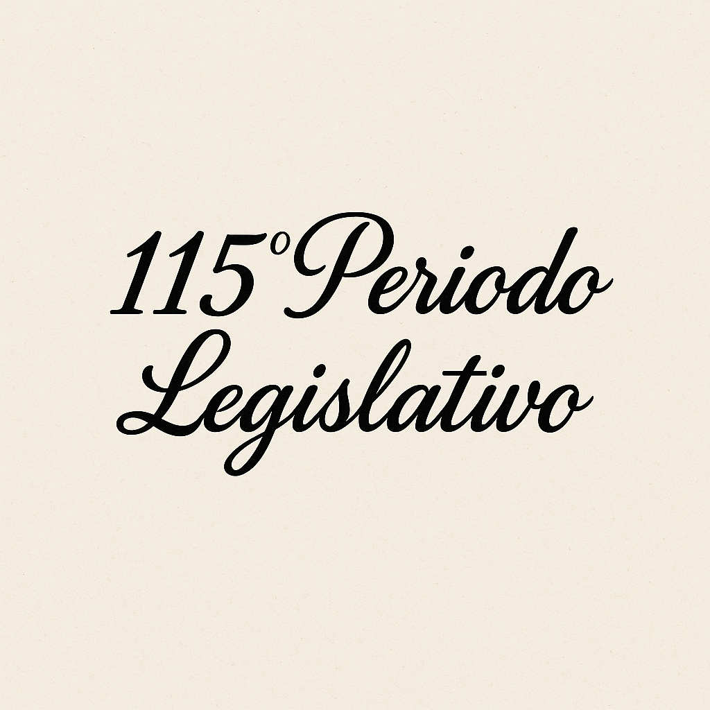
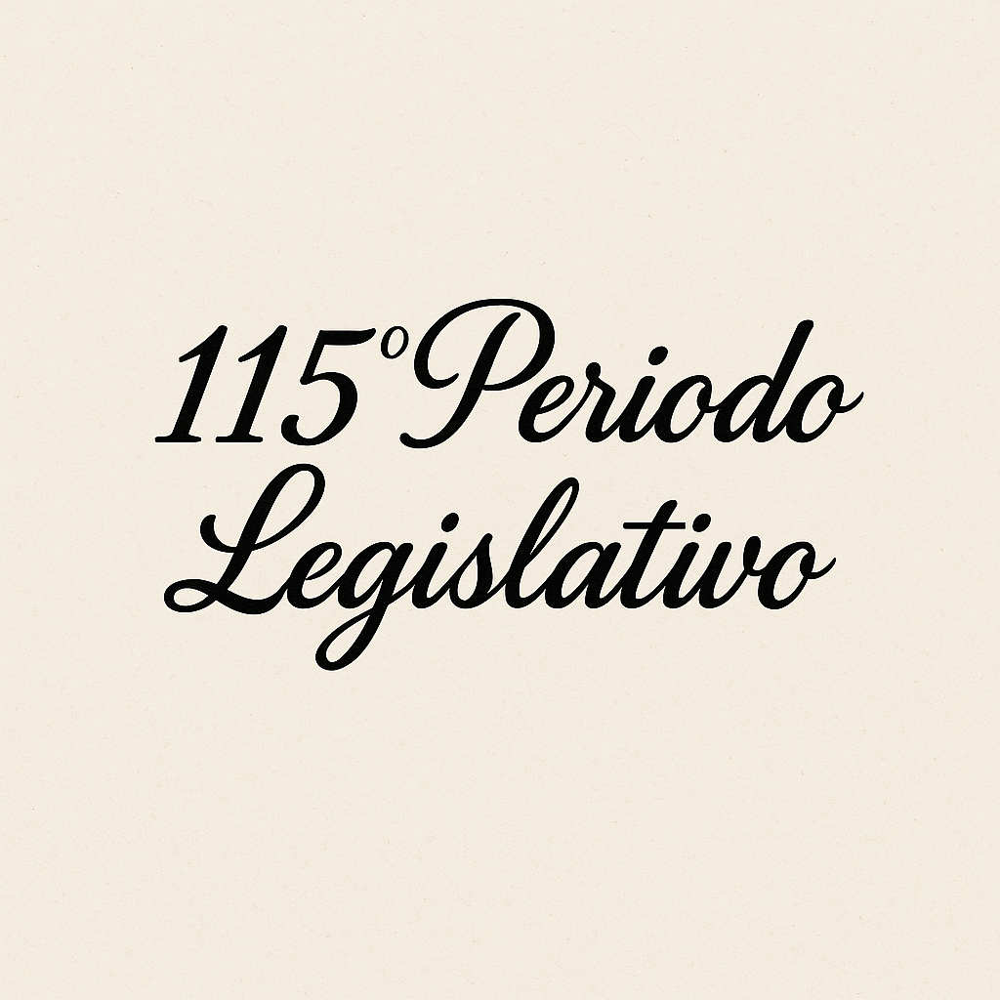

Períodos Legislativos
ÍNDICE TEMÁTICO
Se trata de un Índice en el cual se agrupan los proyectos que tienen características similares.
Por ejemplo, proyectos relacionados con los temas: Salud, Energía, Educación, Seguridad, Turismo, Rutas, Comisiones, Producción, entre otros.
Dentro de estos temas, contiene subtemas, como por ejemplo, en Educación: Creación o reparación de establecimientos educacionales, leyes relacionadas con temas educativos, etc.
-ACTIVIDADES Y SERVICIOS DECLARADOS ESENCIALES POR EL DECRETO DE NECESIDAD Y URGENCIA N° 297/20 DEL PODER EJECUTIVO NACIONAL Y SUS MODIFICACIONES. SOLICITUD DE INCORPORACIÓN DEL EJERCICIO DE LA ABOGACÍA, Y EXCEPTUAR DEL CUMPLIMIENTO DEL AISLAMIENTO SOCIAL PREVENTIVO Y OBLIGATORIO A ABOGADOS Y PROCURADORES DE LA PROVINCIA. Proyecto de resolución, 894. Dictamen, consideración, sanción y texto, 1055.
-CREACIÓN DE LA FIGURA DEL ABOGADO DEL NIÑO, NIÑA Y ADOLESCENTE (ANNyA). Proyecto de ley, 2835.
-Y ESCUELAS DE DANZAS. SOLICITUD AL COMITÉ OPERATIVO DE EMERGENCIA SU HABILITACIÓN CONTEMPLANDO LOS PROTOCOLOS DE SEGURIDAD. Proyecto de resolución, 3607.
-A INTERNET PARA LA RECEPCIÓN Y PARTICIPACIÓN DE ALUMNOS EN CLASES VIRTUALES DE LOS NIVELES PRIMARIO Y SECUNDARIO. DECLARACIÓN DE INTERÉS LEGISLATIVO. Proyecto de resolución, 4071.
-DE HÁBEAS NORMA DICTADO DE UNA DECISIÓN JURISDICCIONAL QUE DECLARE LA EXISTENCIA DE LA OMISIÓN EN REGLAMENTAR Y EMISIÓN DE UN MANDATO DE HACERLO AL ORGANISMO COMPETENTE. Proyecto de ley, 3538.
-SEXUAL EN ESPACIOS PÚBLICOS O DE ACCESO PÚBLICO, VERBAL O FÍSICO. DECLARACIÓN DE POLÍTICA PRIORITARIA SU PREVENCIÓN Y SANCIÓN. Proyecto de ley, 4961 y 5007.
-ACUERDO ENTRE y ADDENDA II SUSCRIPTAS ENTRE LA DIRECCIÓN NACIONAL DE VIALIDAD Y EL GOBIERNO DE LA PROVINCIA PARA LA REPAVIMENTACIÓN DE LAS RUTAS PROVINCIALES NROS. 307, 308 (VINCULACIÓN ENTRE LAS RUTAS NACIONALES NROS. 38 Y 157) Y 329, TRAMO: CONCEPCIÓN (RUTA NACIONAL N° 38) – MONTEAGUDO (RUTA NACIONAL N° 157). APROBACIÓN. Mensaje del Poder Ejecutivo, 3933. Dictamen, 4281. Consideración, 4282. Sanción y texto, 4284. (Promulgada como Ley n° 9305).
-APÍCOLA. DECLARACIÓN DE INTERÉS PROVINCIAL. Proyecto de ley del Poder Ejecutivo, 5453.
-DE BARES, RESTAURANTES Y SALONES DE FIESTAS DE LA PROVINCIA (HASTA 50 PERSONAS). SOLICITUD AL PODER EJECUTIVO PETICIONE AL JEFE DE GABINETE DE MINISTROS DE LA NACIÓN EXCEPCIONES AL AISLAMIENTO SOCIAL PREVENTIVO Y OBLIGATORIO Y DE LA PROHIBICIÓN DE CIRCULAR. Proyecto de resolución, 1706.
-DEPORTIVAS DE FITNESS, BOXES DE CROSSFIT Y ENTRENAMIENTO FUNCIONAL. SOLICITUD AL PODER EJECUTIVO LA INCORPORACIÓN DENTRO DE LAS ACTIVIDADES ESENCIALES EXCEPTUADAS DEL AISLAMIENTO SOCIAL PREVENTIVO Y OBLIGATORIO. Proyecto de resolución, 1699.
-TURÍSTICA INTERNA EN LA PROVINCIA. SOLICITUD AL JEFE DE GABINETE DE MINISTROS DE LA NACIÓN SU EXCEPCIÓN DEL AISLAMIENTO SOCIAL PREVENTIVO Y OBLIGATORIO. Proyecto de resolución, 2282. Consideración, sanción y texto, 2419.
-Y SERVICIOS DECLARADOS ESENCIALES POR DNU NACIONAL N° 297/20:
-SOLICITUD AL PRESIDENTE DE LA NACIÓN LA INCORPORACIÓN DE ACTIVIDADES Y RUBROS COMERCIALES AÚN NO PERMITIDOS. Proyecto de resolución, 1224.
-SOLICITUD AL PRESIDENTE DE LA NACIÓN LA INCORPORACIÓN DE LA OBRA PRIVADA DE LA CONSTRUCCIÓN. Proyecto de resolución, 1225.
-DE PROMESA DE COMPROMISO CON EL MEDIOAMBIENTE DE ALUMNOS DEL ÚLTIMO AÑO DE ESTABLECIMIENTOS EDUCATIVOS DE GESTIÓN PÚBLICA O PRIVADA. REALIZACIÓN EL 1 DE AGOSTO DE CADA AÑO. Proyecto de ley, 2910.
-DE PROMESA DE LEALTAD A LA BANDERA Y DE REAFIRMACIÓN DE LA PROMESA DE LEALTAD. SOLICITUD AL PODER EJECUTIVO AUTORICE LA REALIZACIÓN RESTRINGIENDO LA CONCURRENCIA A LOS NIÑOS Y TUTORES, Y ADOPTANDO MEDIDAS DE PREVENCIÓN EN EL MARCO DE LA PANDEMIA POR COVID-19. Proyecto de resolución, 1744.
-EN CONMEMORACIÓN DE LOS 26 AÑOS DE LA REFORMA DE LA CONSTITUCIÓN NACIONAL. ADHESIÓN Y DECLARACIÓN DE INTERÉS LEGISLATIVO. Proyecto de resolución, 2579.
-ILEGALES DE ESPIONAJE INTERNO DURANTE EL MANDATO DEL EXPRESIDENTE MAURICIO MACRI. ENÉRGICO REPUDIO. Proyecto de declaración, 1753.
-MARCO CELEBRADO ENTRE EL MINISTERIO DE OBRAS PÚLICAS DE LA NACIÓN Y LA PROVINCIA, PLAN “ARGENTINA HACE”. APROBACIÓN. Mensaje del Poder Ejecutivo, 2088. Dictamen y consideración, 2379. Sanción y texto, 2380. (Promulgada como Ley n° 9271).
-PROVINCIAL CENTRALIZADA Y DESCENTRALIZADA Y DE LOS PODERES LEGISLATIVO Y JUDICIAL. SUSPENSIÓN POR UN AÑO LA DESIGNACIÓN DE PERSONAL EN PLANTA PERMANENTE. Proyecto de ley, 137.
-Y JÓVENES SIN CUIDADOS PARENTALES. ACCESO A VIVIENDA TEMPORAL DE CARÁCTER COLECTIVA. Proyecto de ley, 211.
-INTERNACIONAL TENIENTE BENJAMÍN MATIENZO. INTEGRACIÓN A LA JURISDICCIÓN DE LA MUNICIPALIDAD DE ALDERETES A SU PREDIO. Proyecto de ley, 5570.
-DE VIAJES Y ACTIVIDADES COMPLEMENTARIAS DE APOYO TURÍSTICO. EXIMICIÓN DEL PAGO DEL IMPUESTO A LOS INGRESOS BRUTOS LAS PRESTACIONES VINCULADAS AL TURISMO RECEPTIVO. Proyecto de ley, 208.
-FEDERAL DE INTELIGENCIA (AFI). ENÉRGICO REPUDIO A SU USO DURANTE EL GOBIERNO DEL EXPRESIDENTE MAURICIO MACRI EN CONTRA DE LA EXLEGISLADORA PROFESORA SILVIA ROJKÉS. Proyecto de resolución, 1690.
-DECLARACIÓN DE INTERÉS PROVINCIAL LA EFICIENTIZACIÓN, PROMOCIÓN Y CONCIENTIZACIÓN DEL USO RACIONAL Y SUSTENTABLE DE LOS RECURSOS HIDRÍCOS. Proyecto de ley, 2824.
-EN LOS BARRIOS DE SAN NICOLÁS, ZAVALÍA Y PARQUE DE LA CIUDAD DE CONCEPCIÓN (CHICLIGASTA). RESTABLECIMIENTO. Proyecto de resolución, 5601.
-POZO DE AGUA EN TACO RALO (GRANEROS). REPARACIÓN Y/O CONSTRUCCIÓN DE UNO NUEVO. Proyecto de resolución, 5847.
-SOLICITUD DE PROVISIÓN A LOS BARRIOS SAN ROQUE Y PALO BLANCO, DE LA LOCALIDAD DE ARCADIA (CHICLIGASTA). Proyecto de resolución, 278.
-ESTABLECIDO EN EL MARCO DE LA PANDEMIA POR EL CORONAVIRUS (COVID-19). AUTORIZACIÓN DE LA PRÁCTICA DE DISCIPLINAS DEPORTIVAS QUE REPRESENTEN BAJO RIESGO DE CONTAGIO. Proyecto de resolución, 1241. Dictamen, 1398. Consideración, 1399. Rechazo, 1420.
-Y PREVENTIVO, Y PROHIBICIÓN DE CIRCULAR AL PERSONAL AFECTADO A DETERMINADAS ACTIVIDADES Y RUBROS QUE SE DESARROLLAN EN NUESTRA PROVINCIA. SOLICITUD DE INFORME AL PODER EJECUTIVO DE LA PROVINCIA SOBRE LOS MOTIVOS POR LOS CUALES NO FORMALIZÓ PEDIDO ALGUNO DE EXCEPCIÓN, IMPOSIBILITANDO ASÍ SU INCLUSIÓN EN LA DECISIÓN ADMINISTRATIVA N° 524/2020. Proyecto de resolución, 882.
-REFUGIO PARA CONTENCIÓN, CUIDADO Y PROTECCIÓN DE MUJERES Y DE SUS HIJOS E HIJAS MENORES DE EDAD VÍCTIMAS DE VIOLENCIA FÍSICA, PSICOLÓGICA O SEXUAL CREACIÓN EN EL ÁMBITO DE LA PROVINCIA. Proyecto de ley, 1654.
-MANIFESTACIÓN DE PROFUNDO PESAR POR SU FALLECIMIENTO. Proyecto de resolución, 257.
-ETÍLICO Y EN GEL ANTIBACTERIAL. SOLICITUD AL PODER EJECUTIVO LAS PARTIDAS PRESUPUESTARIAS PARA SU COMPRA Y/O ELABORACIÓN. Proyecto de resolución, 311.
-PURO. SOLICITUD AL PODER EJECUTIVO DISPONGA SU COMPRA A GRANEL PARA SER FRACCIONADO EN BOTELLAS DE 5 Y 10 LITROS PARA SER DISTRIBUIDO A LA POBLACIÓN. Proyecto de resolución, 880.
-DE VIVIENDAS Y COMERCIOS. SUSPENSIÓN DEL PAGO POR EL PERÍODO QUE DURE LA EMERGENCIA SANITARIA POR PANDEMIA DE COVID-19. Proyecto de ley, 538.
-EN EL IMPUESTO DE SELLOS:
-PARA LAS OPERACIONES DE DESCUENTO DE CERTIFICADOS DE OBRAS PÚBLICAS, EN EL MARCO DE LA LEY NACIONAL N° 21526 (LEY DE ENTIDADES FINAANCIERAS) Y SUS MODIFICATORIAS. SOLICITUD AL PODER EJECUTIVO EL DICTADO DE NORMAS REGLAMENTARIAS PARA SU IMPLEMENTACIÓN. Proyecto de resolución, 918. Dictamen y consideración, 1050. Sanción y texto, 1051.
-PARA LOS CRÉDITOS A TASA PREFERENCIAL OTORGADOS POR ENTIDADES FINANCIERAS A MICRO, PEQUEÑAS O MEDIANAS EMPRESAS Y A PRESTADORES DE SERVICIOS DE SALUD. SOLICITUD AL PODER EJECUTIVO EL DICTADO DE NORMAS REGLAMENTARIAS PARA SU IMPLEMENTACIÓN. Proyecto de resolución, 917. Dictamen, consideración, sanción y texto, 1049.
-DE DETECCIÓN VIRAL POR TÉCNICOS DE BIOLOGÍA MOLECULAR PARA LOS VIRUS DE HEPATITIS B, C Y HIV. OBLIGATORIEDAD. Proyecto de ley, 3443.
-PROHIBICIÓN DE SU EXHIBICIÓN EN VIDRIERAS CON VISTA AL EXTERIOR PARA COMPRA, VENTA Y OFRECIMIENTO A TÍTULO GRATUITO O POR MERA PUBLICIDAD. Proyecto de ley, 1200.
-USO DE PERROS Y/O ANIMALES ADIESTRADOS EN LAS ENTREVISTAS CON CÁMARA GESELL, A FIN DE DISMINUIR EL NIVEL DE ANGUSTIA, ANSIEDAD Y MOVILIZACIÓN EMOCIONAL QUE GENERA EN LOS NIÑOS/AS Y ADOLESCENTES. SOLICITUD AL PODER JUDICIAL SU INCORPORACIÓN. Proyecto de resolución, 3602.
-28° DE LA MUNICIPALIDAD DE LAS TALITAS (21 DE SEPTIEMBRE). DECLARACIÓN DE INTERÉS LEGISLATIVO. Proyecto de declaración, 3668.
-78° DE LA CREACIÓN DEL HOGAR PARA ANCIANOS SAN JOSÉ (10 DE NOVIEMBRE). DECLARACIÓN DE INTERÉS LEGISLATIVO. Proyecto de resolución, 5053.
-80° DEL LOCAL GASTRONÓMICO “LA ESTELLA” (10 DE OCTUBRE) UBICADO EN LA CIUDAD DE CONCEPCIÓN, DECLARACIÓN DE INTERÉS LEGISLATIVO. Proyecto de declaración, 4123.
-204° DE LA DECLARACIÓN DE LA INDEPENDENCIA DE LA REPÚBLICA ARGENTINA (9 DE JULIO DE 1816). ADHESIÓN, HOMENAJE Y RECONOCIMIENTO. Proyecto de resolución, 2581.
-DEFINICIÓN APROBADA POR LA ALIANZA INTERNACIONAL PARA EL RECUERDO DEL HOLOCAUSTO (IHRA). ADOPCIÓN POR PARTE DE LA H. LEGISLATURA. Proyecto de resolución, 2273. Consideración y sanción, 2422. Texto, 2425.
-“2021 – AÑO DEL BICENTENARIO DE LA INDUSTRIA AZUCARERA”. INCLUSIÓN DE DICHA LEYENDA EN LA PAPELERÍA OFICIAL Y CREACIÓN DE UNA COMISIÓN ESPECIAL CONMEMORATIVA DE DICHO EVENTO. Proyecto de ley, 3561. Dictamen, 5799. Consideración, sanción y texto, 5800. (Promulgada como Ley n° 9373).
-2020. BENEPLÁCITO POR SU DESIGNACIÓN COMO EL “AÑO DE LAS ENFERMERAS Y PARTERAS”. Proyecto de declaración, 316.
-“NUMERANDO” DE DESARROLLO TUCUMANO. DECLARACIÓN DE INTERÉS LEGISLATIVO. Proyecto de resolución, 4624.
-EN AGUA. RELEVAMIENTO DE SU PRESENCIA EN LA ZONA ESTE DE LA PROVINCIA. Proyecto de resolución, 5582.
-DE USO DOMICILIARIO ALIMENTADOS A ELECTRICIDAD O GAS. OBLIGATORIEDAD DE EXHIBIR SU NIVEL DEL CONSUMO ANUAL CONJUNTAMENTE CON EL PRECIO DE VENTA. Proyecto de ley, 1172. Dictamen, 1949. Consideración, 1951. Sanción, 1953. Texto, 1956. (Promulgada como Ley n° 9267).
-Y TRABAJADORES INDEPENDIENTES DE LA CULTURA TUCUMANA. OTORGAMIENTO DE SUBSIDIO DE $ 10.000 MENSUALES POR EL PERÍODO DE TRES MESES, EN EL MARCO DE LA EMERGENCIA EPIDEMIOLÓGICA POR COVID-19. Proyecto de ley, 542.
-CIVILES EN FORMACIÓN. AUTORIZACIÓN A LA ESCRIBANÍA DE GOBIERNO DE LA PROVINCIA A EFECTUAR EN FORMA GRATUITA EL INSTRUMENTO PÚBLICO A QUE SE REFIERE EL ARTÍCULO 169 DEL CÓDIGO CIVIL Y COMERCIAL DE LA NACIÓN. Proyecto de ley, 5533.
-DE LOS SERVICIOS PÚBLICOS ESTABLECIDOS POR AUDIENCIAS DOCUMENTADAS O VIRTUALES. ANULACIÓN. Proyecto de ley, 4039.
-INTERNACIONAL DE LAS TERMAS DE RÍO HONDO. PESAR POR LOS DAÑOS PRODUCIDOS EN GRAN PARTE DE SUS INSTALACIONES COMO CONSECUENCIA DEL INCENDIO DEL 6/02/2021. Proyecto de declaración, 6041.
-EXIMICIÓN DE SU PAGO AL AÑO 2020 DE CÁNONES Y/O TASAS PARA INSCRIPCIÓN Y RENOVACIÓN DEL REGISTRO ÚNICO DE TRANSPORTE INTERDEPARTAMENTAL DE PASAJEROS EN DICHA MODALIDAD (LEY N° 7475. Proyecto de ley, 826.
-EN LA RUTA PROVINCIAL N° 301 ENTRE SAN PABLO Y FAMAILLÁ. SOLICITUD DE CONSTRUCCIÓN. Proyecto de resolución, 239.
-DE CIRCUNVALACIÓN DE SAN MIGUEL DE TUCUMÁN. SOLICITUD A LA DIRECCIÓN NACIONAL DE VIALIDAD LA INCLUSIÓN DE LA OBRA DE ALUMBRADO PÚBLICO EN EL PLAN DE OBRAS DEL AÑO 2021. Proyecto de resolución, 2287.
-SAN MARTÍN (EX RUTA N° 9), TRAMO: CALLE SARGENTO CABRAL HASTA LA ROTONDA DE ACCESO A BANDA DEL RÍO SALÍ (CRUZ ALTA). REALIZACIÓN DE UNA AUTOVÍA. Proyecto de resolución, 2595.
-LEARJET 60XR. AUTORIZACIÓN AL PODER EJECUTIVO A CONTRATAR LA ADQUISICIÓN EN FORMA DIRECTA EN EL MERCADO NACIONAL O INTERNACIONAL POR HASTA LA SUMA DE USD 4.500.000. Proyecto de ley del Poder Ejecutivo, 5817.
-DIARIA A LOS HABITANTES DEL BARRIO MUNICIPAL DE LA CIUDAD DE CONCEPCIÓN. SOLICITUD AL PODER EJECUTIVO HASTA LA FINALIZACIÓN DE SU AISLAMIENTO FORZOSO. Proyecto de resolución, 3592.
-DECLARACIÓN DE INTERÉS PÚBLICO LA PRODUCCIÓN SUSTENTABLE DE AZÚCAR Y DEL ALCOHOL A PARTIR DE LA CAÑA DE AZÚCAR. Proyecto de ley del Poder Ejecutivo, 3357.
-DECLARACIONES MISÓGINAS EN EL PROGRAMA “LA NOCHE DE MIRTHA” EN LAS CUALES SE REFIERE A LA EX PRESIDENTA DE LA NACIÓN CRISTINA FERNÁNDEZ CON TÉRMINOS VIOLENTOS COMPARÁNDOLA CON EL CÁNCER. ENÉRGICO REPUDIO. Proyecto de declaración, 2307.
-CENTRAL DE SANGRE DE LA PROVINCIA (LEY PROVINCIAL N° 7283). SOLICITUD AL SIPROSA DISPONGA UNIDADES MÓVILES DE EXTRACCIÓN DE SANGRE PARA LOS CIUDADANOS VOLUNTARIOS. Proyecto de resolución, 2602.
-DE IDEAS DE LA HONORABLE LEGISLATURA DE TUCUMÁN (RECEPCIÓN DE ANTEPROYECTOS, IDEAS Y/O PROPUESTAS PRESENTADOS POR CIUDADANOS, ORGANIZACIONES, MUNICIPIOS Y COMUNAS). CREACIÓN. Proyecto de ley, 3540.
-DE TIERRAS PROVINCIAL, DESTINADO A PROVEER LOTES CON SERVICIOS PARA LA AUTOCONSTRUCCIÓN. CREACIÓN. Proyecto de ley, 4586.
-MACRO. EXHORTACIÓN A ADECUAR LAS TASAS APLICADAS A LAS “CUENTAS PROVEEDORES” DEL ESTADO. Proyecto de resolución, 1240. Dictamen, consideración, sanción y texto, 1961.
-CREADA POR MANUEL BELGRANO. DECLARACIÓN DE INTERÉS LEGISLATIVO SU ADOPCIÓN OFICIAL POR EL CONGRESO DE TUCUMÁN EL 20 DE JULIO DE 1816. Proyecto de declaración, 2315.
-NACIONAL. REPUDIO AL ARRIAMIENTO INJUSTIFICADO DEL MÁSTIL DEL PARQUE SARMIENTO DE LA CIUDAD DE CÓRDOBA CAPITAL Y DE DIFERENTES CIUDADES Y REEMPLAZO POR LA BANDERA LGBT+. Proyecto de declaración, 2310.
-DESTINADOS A SECTORES VULNERABLES Y DE ALTO RIESGO. SUGERENCIA AL PODER EJECUTIVO SU ADQUISICIÓN Y DISTRIBUCIÓN. Proyecto de resolución, 923.
-USO OBLIGATORIO POR PARTE DE PERSONAS QUE CIRCULEN EN LA VÍA PÚBLICA, EN ESTABLECIMIENTOS PÚBLICOS Y PRIVADOS, TRANSPORTE PÚBLICO, COMERCIOS, INSTITUCIONES BANCARIAS Y DEMÁS LUGARES DE CONCURRENCIA MASIVA. Proyectos de ley, 570 y 806, y de resolución, 593 y 887. Dictamen, 1020. Consideración, 1021. Sanción, 1024. Texto, 1025. (Promulgada como Ley n° 9240).
-USO OBLIGATORIO DE BARBIJOS, TAPABOCAS O MÁSCARAS FACIALES EN LOS LUGARES DE CONCURRENCIA MASIVA ESTABLECIDO POR LEY N° 9240. SOLICITUD DE APLICACIÓN DE SANCIONES PECUNIARIAS FRENTE A SU INCUMPLIMIENTO. -ENTRE LOS KILÓMETROS 22 Y 23,8 (TRANCAS). REPARACIÓN DEL ASFALTO Y MANTENIMIENTO DE SU TRAZA. Proyecto de resolución, 6038.
-Y ALCOHOL EN GEL. FABRICACIÓN EN LOS ESTABLECIMIENTOS CARCELARIOS DE LA PROVINCIA. Proyecto de ley, 225.
-Y RESTAURANTES:
-SOLICITUD AL COE RETORNAR A SU ACTIVIDAD HASTA LAS 24 HORAS. Proyecto de resolución, 3640.
-SOLICITUD AL PODER EJECUTIVO PROVINCIAL EVALÚE LA FACTIBILIDAD DE LA APERTURA RESPETANDO EL DISTANCIAMIENTO SOCIAL DE DOS (2) METROS. Proyecto de resolución, 1721.
-8 DE MARZO, VILLA 9 DE JULIO (CAPITAL). SOLICITUD DE CONEXIÓN DE INTERNET Y LÍNEA TELEFÓNICA, AL GERENTE DE LA EMPRESA TELECOM ARGENTINA S.A. Proyecto de resolución, 6040.
-SAN GABRIEL (CAPITAL). SOLICITUD DE GESTIONES DE ACERCAMIENTO PARA EVITAR EL DESALOJO INMEDIATO DE SUS OCUPANTES HASTA TANTO SE SANCIONE LA LEY ESPECÍFICA QUE ESTABLEZCA RESOLUCIONES DE CONFLICTOS DE USURPACIÓN DE PROPIEDADES. Proyecto de resolución, 5604. Consideración, sanción y texto, 5797.
-A MENORES QUE ASISTEN A ESTABLECIMIENTOS EDUCATIVOS DE GESTIÓN PRIVADA QUE RECIBAN APORTE DEL ESTADO PROVINCIAL. ESTABLECIMIENTO ANTE EL FALLECIMIENTO DE UNO O AMBOS PROGENITORES. Proyecto de ley, 2183.
-DE ENTIDADES DEPORTIVAS CONSTITUIDAS EN LA PROVINCIA. DECLARACIÓN DE INEMBARGABILIDAD E INEJECUTABLES. Proyecto de ley, 5511.
-Y SERVICIOS DE ORIGEN PROVINCIAL, EMPRESAS PROFESIONALES, TÉCNICOS Y MANO DE OBRA. PREFERENCIA EN SU COMPRA, CONTRATACIÓN Y CONSULTORÍA; Y DEROGACIÓN DE LA LEY N° 6697 (“COMPRE TUCUMÁN”). Proyecto de ley, 2238. Dictamen, 3209. Consideración, 3212. Sanción y texto, 3213. (Promulgada como Ley n° 9287).
-Ver BIOETANOL.
-POLIDUCTOS: CAMPO DURÁN-MONTECRISTO, MONTECRISTO-VILLA MERCEDES; MONTECRISTO-SAN LORENZO Y VILLA MERCEDES-BUENOS AIRES. SOLICITUD A LA SECRETARÍA DE ENERGÍA DEPENDIENTE DEL MINISTERIO DE DESARROLLO PRODUCTIVO DE LA NACIÓN SU UTILIZACIÓN PARA EL TRANSPORTE DE BIOETANOL DE CAÑA DE AZÚCAR PRODUCIDO EN EL NOA; Y EL INGRESO EN MONTECRISTO Y VILLA MERCEDES DEL BIOETANOL DE MAÍZ. Proyecto de resolución, 1233. Dictamen y consideración, 1390. Sanción y texto, 1393.
-Y ENVASES BIODEGRADABLES. DECLARACIÓN DE INTERÉS PROVINCIAL SU DESARROLLO Y PRODUCCIÓN A PARTIR DE BAGAZO Y SUBPRODUCTOS DE LA INDUSTRIA SUCROALCOHOLERA. Proyecto de ley, 1158.
-DE SERVICIOS PÚBLICOS EN SISTEMA BRAILLE. OBLIGATORIEDAD DE SU EMISIÓN EN TODO EL TERRITORIO DE LA PROVINCIA POR PARTE DE EMPRESAS PRESTATARIAS A REQUERIMIENTO DE USUARIO O CONSUMIDOR CON DISCAPACIDAD VISUAL, O SU ENVÍO POR MAIL EN FORMATO ACCESIBLE. Proyecto de ley, 2141.
-SOLICITUD DE ELABORACIÓN Y POSTERIOR APLICACIÓN DE PROTOTIPO DE ACTUACIÓN DE CONTROLADORES DE SEGURIDAD. Proyecto de resolución, 228.
-Y SORBETES DE PLÁSTICO. REEMPLAZO POR VERSIONES ECOLÓGICAS. Proyecto de ley, 2196. Dictamen, 5407. Consideración, 5411. Vuelta a comisión, 5412.
-A PLAZA DE MAYO EL 16 DE JUNIO DE 1955, CON EL FIN DE DERROCAR AL GOBIERNO ELEGIDO DEMOCRÁTICAMENTE. REPUDIO. Proyecto de resolución, 2254. Consideración y sanción, 2421. Texto, 2422.
-INSTRUMENTACIÓN DE UNA LÍNEA ESPECIAL DE CRÉDITOS DENOMINADA “FAMILIAS CONECTADAS”. Proyecto de ley, 2562.
-PROPORCIONADAS A TRAVÉS DE LOS PROGRAMAS DE ASISTENCIA A PERSONAS EN SITUACIÓN DE VULNERABILIDAD DEPENDIENTES DEL MINISTERIO DE DESARROLLO SOCIAL Y DEL MINISTERIO DE SALUD PÚBLICA DE LA PROVINCIA. OBLIGATORIEDAD DE SU ROTULACIÓN CON LA LEYENDA “PROHIBIDA SU VENTA”. Proyecto de ley, 184. Dictamen, 1032. Consideración, 1033. Sanción y texto, 1034. (Promulgada como Ley n° 9249).
-AUTOMÁTICO DEL BANCO MACRO EN LA LOCALIDAD DE COLALAO DEL VALLE (TAFÍ DEL VALLE). SOLICITUD AL PODER EJECUTIVO SU INSTALACIÓN. Proyecto de resolución, 2246.
-AUTOMÁTICOS EN TACO RALO (GRANEROS). SOLICITUD DE INSTALACIÓN. Proyecto de resolución, 5844.
-A MEDINA, DESDE RUTA PROVINCIAL N° 329, EN LOCALIDAD DE MEDINA (CHICLIGASTA). SOLICITUD DE REALIZACIÓN DE TAREAS DE MANTENIMIENTO, REPARACIÓN, SAÑALIZACIÓN Y DE OBRA DE ALUMBRADO PÚBLICO. Proyecto de resolución, 5846.
-A VILTRÁN, DESDE RUTA NACIONAL N° 157, EN LOCALIDAD DE TACO RALO (GRANEROS). SOLICITUD DE REALIZACIÓN DE TAREAS DE MANTENIMIENTO, REPARACIÓN, SEÑALIZACIÓN Y DE OBRA DE ALUMBRADO PÚBLICO. Proyecto de resolución, 5847.
-AL POZO DEL PESCADO, EN LA EX RUTA NACIONAL N° 9, DESDE LA CIUDAD DE TRANCAS. ACONDICIONAMIENTO, MANTENIMIENTO, REPARACIÓN Y SEÑALIZACIÓN. Proyecto de resolución, 6024.
-DE SIRGA QUE BORDEA EL CANAL CAÍNZO–LAS PIEDRAS. SOLICITUD AL PODER EJECUTIVO SU INMEDIATA REPARACIÓN Y/O RESTAURACIÓN. Proyecto de resolución, 284.
-PERTENECIENTES A LA RED VIAL SECUNDARIA Y TERCIARIA DE CRUZ ALTA. REALIZACIÓN DE OBRAS. Proyecto de resolución, Tomo 2019/2020, 4401. Consideración, sanción y texto, 2416.
-ANUAL DE CONCIENTIZACIÓN SOBRE LA ENFERMEDAD DE CROHN Y SU AFECCIÓN CONEXA, LA COLITIS ULCEROSA. REALIZACIÓN. Proyecto de ley, 3484.
-DE CONCIENTIZACIÓN, PREVENCIÓN Y DETECCIÓN DEL MALTRATO INFANTIL EN EL ÁMBITO DE LA PROVINCIA. Proyecto de ley, 3585.
-DE CONCIENTIZACIÓN PÚBLICA SOBRE ASIMETRÍA DE GÉNERO, PROBLEMÁTICA INVISIBLE Y POLARIZACIÓN DE GÉNERO. REALIZACIÓN. Proyecto de resolución, 2291.
-DE CONCIENTIZACIÓN SOBRE LA IMPORTANCIA DEL CUIDADO SOCIAL CONTRA EL COVID-19. SOLICITUD AL PODER EJECUTIVO EL REFUERZO DE SU REALIZACIÓN, Y A LA SOCIEDAD TUCUMANA A RESPETAR LAS DECISIONES Y RECOMENDACIONES DEL COMITÉ OPERATIVO DE EMERGENCIA. Proyecto de resolución, 2617. Consideración, 2685. Sanción, 2695. Texto, 2696.
-DE INFORMACIÓN, DIFUSIÓN, PREVENCIÓN Y CONCIENTIZACIÓN RESPECTO AL USO DE ALCOHOL CON EL OBJETO DE PREVENIR ACCIDENTES. REALIZACIÓN. Proyecto de resolución, 4601.
-INFORMATIVA PARA PROMOVER LA DIFUSIÓN Y CONCIENTIZACIÓN DEL DERECHO AL ACCESO A LAS INTERVENCIONES DE CONTRACEPCIÓN QUIRÚRGICA COMO MECANISMO DE PLANIFICACIÓN FAMILIAR. REALIZACIÓN. Proyecto de resolución, 5590.
-TRAZA DE LA CUENCA PRODUCTIVA DE BALDERRAMA. ESTABLECIMIENTO DE ORDEN PÚBLICO; APROBACIÓN DE LA CARTOGRAFÍA DE LOS CANALES DE SU SISTEMA DE DRENAJE, Y CREACIÓN DEL “COMITÉ DE CUENCA PRODUCTIVA DE BALDERRAMA”. Proyecto del Poder Ejecutivo, Tomo 2019/2020, 2832. Consideración y sanción, 1904. Texto, 1905. (Promulgada como Ley n° 9260).
-DIFUSIÓN DEL LISTADO DE PRECIOS ESTIMADOS AL CONSUMIDOR. Proyecto de resolución, 4636.
-APLICACIÓN DE LAS PENALIDADES PREVISTAS EN LA LEY PROVINCIAL DE MEDIO AMBIENTE N° 6253 Y SUS MODIFICATORIAS A LA QUEMA ILEGAL. Proyectos de resolución, 2995 y 3017.
-INCLUSIÓN DE GÉNERO MASCULINO Y DEL COLECTIVO LGBTIQ+. REALIZACIONES DE CAPACITACIONES Y DE PROGRAMAS DE ASISTENCIA, ATENCIÓN Y APOYO A LA VÍCTIMA. Proyecto de resolución, 2288.
-OBLIGATORIA EN DERECHOS HUMANOS. ESTABLECIMIENTO PARA TODAS LAS PERSONAS QUE DESEMPEÑEN TAREAS EN LA POLICÍA Y EN EL MINISTERIO DE SEGURIDAD DE LA PROVINCIA. Proyecto de ley, 1630.
-DE HURTO TIPIFICADAS EN EL ARTÍCULO 162 DEL CÓDIGO PENAL. IMPLEMENTACIÓN DE LOS MEDIOS NECESARIOS PARA QUE CONCLUYAN CON SENTENCIA FIRME, CON CELERIDAD Y DILIGENCIA EN LOS PLAZOS PROCESALES; Y UNIFICACIÓN DE PENAS A PERSONAS EN CASO DE CONCURSO DE DELITOS. Proyecto de resolución, 5047.
-DE MISAS EN IGLESIAS DE DISTINTOS CREDOS Y DEL SACRAMENTO DEL BAUTISMO. SOLICITUD AL PODER EJECUTIVO PROVINCIAL PETICIONE EXCEPCIONES AL AISLAMIENTO SOCIAL PREVENTIVO Y OLBIGATORIO Y DE LA PROHIBICIÓN DE CIRCULAR PARA SU REALIZACIÓN. Proyecto de resolución, 2258.
-SOLICITUD AL PODER EJECUTIVO ARBITRE LOS MECANISMOS PARA DAR CUMPLIMIENTO CON LO ESTABLECIDO EN LA NORMATIVA VIGENTE. Proyecto de resolución, 2260.
-PARA ELABORAR UN REGISTRO PROVINCIAL ÚNICO DE PERSONAS CON ALBINISMO. REALIZACIÓN. Proyecto de resolución, 4112.
-PROVINCIAL DE MICRO, PEQUEÑAS Y MEDIANAS EMPRESAS, EN VIRTUD DE LO DISPUESTO EN EL ARTÍCULO 5° DE LA LEY N° 7197 (FOMENTO Y DESARROLLO DE LA MICRO, PEQUEÑAS Y MEDIANA EMPRESA). CONFECCIÓN Y PRESENTACIÓN. Proyecto de resolución, 5595.
-DE ASISTENCIA A VÍCTIMAS DE DELITOS (CENAVID). CREACIÓN EN EL ÁMBITO DEL PODER JUDICIAL DE TUCUMÁN. Proyecto de ley, 1643.
-EDUCATIVOS TERAPÉUTICOS. SOLICITUD AL PODER EJECUTIVO AUTORICE SU REAPERTURA. Proyecto de resolución, 4099.
-EDUCATIVOS Y ESCOLARES DE LA PROVINCIA. LIMPIEZA, DESMALEZAMIENTO Y MANTENIMIENTO ANTE EL INMINENTE COMIENZO DE CLASES. Proyecto de resolución, 6026.
-TERAPÉUTICOS PARA CHICOS CON TEA (TRASTORNO DEL ESPECTRO AUTISTA). APERTURA EN TODA LA PROVINCIA. Proyecto de resolución, 4596.
-TURÍSTICOS DE EL MOLLAR Y TAFÍ DEL VALLE. SOLICITUD DE REALIZACIÓN DE TESTEOS MASIVOS DE COVID-19 DURANTE EL MES DE FEBRERO. Proyecto de resolución, 6030.
-PERIMETRALES O DISPOSITIVOS SIMILARES INSTALADOS EN PROPIEDADES. REGULACIÓN DE SU INSTALACIÓN. Proyecto de ley, 135.
-“EL PELAO” DE EL MOLLAR (TAFÍ DEL VALLE). DECLARACIÓN DE EMERGENCIA AMBIENTAL, ECOLÓGICA Y ZONA DE PROTECCIÓN ARQUEOLÓGICA POR EL TÉRMINO DE UN (1) AÑO, Y DEROGACIÓN DE LA LEY N° 9224. Proyecto de ley, 1621. Dictamen y consideración, 1958. Sanción y texto, 1959. (Promulgada como Ley n° 9261).
-“SAN JAVIER” (YERBA BUENA). DECLARACIÓN DE EMERGENCIA AMBIENTAL ECOLÓGICA Y ZONA DE PROTECCIÓN ARQUEOLÓGICA POR EL TÉRMINO DE 10 AÑOS. Proyecto de ley, 4550.
-DE CRÉDITO FISCAL NORMATIVO Y ENDOSABLE. CREACIÓN. Proyecto de ley, 3467.
-MÉDICO OFTALMOLÓGICO. OBLIGATORIEDAD DE PRESENTACIÓN POR PARTE DE ESTUDIANTES DEL CICLO PRIMARIO Y SECUNDARIO. Proyecto de ley, 4495.
-CREACIÓN DE CARRILES EXCLUSIVOS PARA BICICLETAS EN INTERSECCIÓN DE AVENIDA LÍDORO QUINTEROS Y RUTA PROVINCIAL N° 308 (CIUDAD DE ALBERDI) HASTA EL KM 12,2 DE EL PARAJE EL 25 (EL CORRALITO). Proyecto de ley, 3473.
-CIGARRITOS, PUROS, TABACOS PARA ARMAR Y EN HEBRAS O PICADOS EN LA PROVINCIA. REGULACIÓN DE SU COMERCIALIZACIÓN., Proyecto de ley, 4507.
-LUIS ESPINOZA. ENÉRGICO REPUDIO Y SOLICITUD DE LA DEBIDA INVESTIGACIÓN Y ESCLARECIMIENTO DE LA DESAPARICIÓN Y MUERTE EN MANOS DE EFECTIVOS DE LA POLÍCIA PROVINCIAL. Proyecto de declaración, 1265. Consideración, 1540. Sanción, 1547. Texto, 1548.
-QUE APROBARON DURANTE LOS AÑOS 2018 Y 2019 EL CURSO DE CAPACITACIÓN PARA ASPIRANTES A AGENTES DE POLÍCIA, SOLICITUD AL SEÑOR GOBERNADOR DE LA PROVINCIA SU INCORPORACIÓN COMO PERSONAL DEL DEPARTAMENTO GENERAL.
-DE LAS TALITAS. DECLARACIÓN DE INTERÉS LEGISLATIVO AL 28° ANIVERSARIO DE SU MUNICIPALIZACIÓN (21 DE SEPTIEMBRE). Proyecto de declaración, 4120.
-PRESENCIALES PARA TODOS LOS SECTORES Y NIVELES DE LA EDUCACIÓN PROVINCIAL CICLO LECTIVO 2021. SOLICITUD AL PODER EJECUTIVO SU GARANTÍA. Proyecto de resolución, 4632.
-2021 EN FORMA PRESENCIAL. ADOPCIÓN DE MEDIDAS SANITARIAS PREVENTIVAS Y RAZONABLES PARA EL INICIO EN TODOS LOS NIVELES DEL SISTEMA EDUCATIVO DE LA PROVINCIA. Proyecto de resolución, 5849.
-ATLÉTICO SAN MARTÍN. EXPRESIÓN DE MALESTAR POR LA DECISIÓN DE LA ASOCIACIÓN DEL FÚTBOL ARGENTINO DE PRIVAR AL MISMO DE SU ASCENSO DIRECTO A PRIMERA DIVISIÓN. Proyecto de declaración, 1263. Consideración y sanción, 2431. Texto, 2432.
-DE ÉTICA JUDICIAL. CREACIÓN. Proyecto de ley, 3570.
-PROCESAL DE FAMAILLÁ. ESTABLECIMIENTO. Proyecto de ley, 2919.
-DE REGIÓN IV TUCUMÁN DE GENDARMERÍA NACIONAL. SOLICITUD AL PODER EJECUTIVO EL OTORGAMIENTO Y ASIGNACIÓN DE UN INMUEBLE PERMANENTE. Proyecto de resolución, 2587.
-QUE VENDEN YACIMIENTOS PETROLÍFEROS FISCALES Y LAS RESTANTES PETROLERAS. SOLICITUD A LEGISLADORES NACIONALES POR LA PROVINCIA Y PARLAMENTO DEL NOA GESTIONEN QUE SEAN LOS MISMOS VALORES EN TODO EL PAÍS. Proyecto de resolución, 3617.
-“DADY BRIEVA”. REPUDIO Y RECHAZO A SUS EXPRESIONES SOBRE LA MARCHA REALIZADA EL 12 DE OCTUBRE DE 2020, EN VARIOS PUNTOS DEL PAÍS. Proyecto de declaración, 4664.
-QUE TRABAJEN EN GALERÍAS Y CENTROS COMERCIALES. SOLICITUD AL PODER EJECUTIVO ARBITRE LOS MEDIOS PARA QUE RETOMEN SUS ACTIVIDADES PAULATINAMENTE. Proyecto de resolución, 1257.
-DE LA MUJER EN ALDERETES (CRUZ ALTA). CREACIÓN. Proyecto de ley, 3446.
-DE LA TRINIDAD (CHICLIGASTA). SOLICITUD DE DOTACIÓN DE PERSONAL POLICIAL, EQUIPAMIENTO Y MEDIOS DE MOVILIDAD. Proyecto de resolución, 245.
-DESTACAMENTO DE PATRULLA MOTORIZADA Y UNIDAD DE INVESTIGACIONES CRIMINALES Y DELITOS COMPLEJOS DE CONCEPCIÓN. DOTACIÓN DE PERSONAL POLICIAL, EQUIPAMIENTO Y MOVILIDAD. Proyecto de ley, 1671.
-ESPECIAL:
-DE EMERGENCIA COVID-19. CREACIÓN. Proyecto de resolución, 874.
-DE EVOLUCIÓN Y CUMPLIMIENTO DE LAS OBLIGACIONES ASUMIDAS POR LAS EMPRESAS FARMACÉUTICAS BENEFICIADAS EN EL MARCO DE LA LEY N° 9258 (EXIMICIÓN POR UN PLAZO DE CINCO AÑOS DEL PAGO DE IMPUESTO SOBRE LOS INGRESOS BRUTOS A LA FIRMA SUIZO ARGENTINA S.A. DE LA CIUDAD DE BUENOS AIRES). CREACIÓN. Proyecto de resolución, 4613.
-DE SEGUIMIENTO DE LA SITUACIÓN SOCIAL Y ALIMENTARIA DE LA PROVINCIA DE TUCUMÁN. CREACIÓN EN EL ÁMBITO DE LA HONORABLE LEGISLATURA. Proyecto de resolución, 899.
-DE SEGUIMIENTO Y CONTROL DE LAS ACCIONES, POLÍTICAS Y PROGRAMAS QUE SE IMPLEMENTEN EN EL MARCO DE LA EMERGENCIA EN SEGURIDAD PÚBLICA DECLARADA POR LEY N° 9057. CONSTITUCIÓN. Proyecto de resolución, 4625. Dictamen y consideración, 4846. Sanción y texto, 4847.
-DESTINADA AL ESTUDIO DE LA SITUACIÓN DE CRISIS DEL SISTEMA DE TRANSPORTE PÚBLICO DE PASAJEROS, CREACIÓN. Proyecto de ley, 2575.
-SOBRE LA VINAZA. CREACIÓN. Proyecto de resolución, 1719.
-INVESTIGADORA PARA ANALIZAR, INVESTIGAR, ESCLARECER Y DETERMINAR EL ACCIONAR DE LOS TITULARES DEL ERSEPT. CREACIÓN. Proyecto de resolución, 5586.
-MÉDICA N° 001 CON ASIENTO EN LA PROVINCIA. SOLICITUD AL PODER EJECUTIVO GESTIONE ANTE LA SUPERINTENDENCIA DE RIESGOS DEL TRABAJO DE LA NACIÓN MEDIDAS PARA SU NORMAL FUNCIONAMIENTO. Proyecto de resolución, 4630.
-PERMANENTE:
-DE ACCIONES PREVENTIVAS Y ASISTENCIALES DE LAS ADICCIONES.
ARCHIVO DE DIVERSOS PROYECTOS ALCANZADOS POR LEY Nº 6.846 (DE CADUCIDAD). Exptes, 109-PL-17, 219-PL-17, 289-PL-17, 286-PL-17, 325-PL-17, 468-PL-17.
-DE ASUNTOS MUNICIPALES Y COMUNALES.
ARCHIVO DE DIVERSOS PROYECTOS ALCANZADOS POR LEY Nº 6.846 (DE CADUCIDAD): Exptes, 19-PL-16, 448-PL-16, 474-PL-17, 470-PL-17, 466-PL-17, 465-PL-17, 464-PL-17, 463-PL-17, 462-PL-17, 462-PL-17, 461-PL-17, 460-PL-17, 459-PL-17, 458-PL-17, 457-PL-17, 411-PL-17, 314-PL-17, 295-PL-17, 281-PL-17, 242-PL-17, 227-PL-17, 218-PL-17, 152-PL-17, 106-PL-17, 44-PL-17.
-DE CIENCIA Y TÉCNICA:
-ARCHIVO DE DIVERSOS PROYECTOS ALCANZADOS POR LEY Nº 6.846 (DE CADUCIDAD): Exptes, 164-PL-17, 171-PL-17, 22-PD-18, 93-PR-18, 96-PR-18, 98-PR-18, 99-PR-18, 509-PR-18.
-ARCHIVO DE DIVERSOS PROYECTOS POR PÈRDIDA DE ACTUALIDAD: 114-VPE-17, 193-PL-16, 414-PL-16, 162-PL-17, 163-PL-17, 186-PL-17, 341-PL-17, 379-PL-17, 381-PL-17, 455.PL-17, 476-PL-17, 90-PL-17, 104-PL-17, 105-PL-17, 116-PL-17, 119-PL-17, 126-PL-17, 136-PL-17, 141-PL-17, 143-PL-17, 154-PL-17, 288-PL-17, 292-PL-17, 318-PL-17, 341-PL-17, 348-PL-17, 397-PL-17, 409-PL-17, 416-PL-17, 417-PL-17, 425-PL-17, 59-PR-18, 72-PR-18, 100-PR-18, 120-PR-18, 134-PR-18, 149-PR-18, 187-PR-18, 191-PR-18, 216-PR-18.
-DE DERECHOS HUMANOS Y DEFENSA DEL CONSUMIDOR.
ARCHIVO DE DIVERSOS PROYECTOS ALCANZADOS POR LEY Nº 6.846 (DE CADUCIDAD): Exptes, 68-PL-17, 157-PL-17, 196-PL-17, 267-PL-17, 293-PL-17, 296-PL-17, 298-PL-17, 328-PL-17, 335-PL-17, 339-PL-17, 362-PL-17, 362-PL-17, 415-PL-17, 435-PL-17, 436-PL-17, 486-PR-17, 71-PR-18, 355-PR-18, 495-PR-18, 520-PR-18, 559-PR-18, 30-PR-19, 85-PD-18, 04-PD-19.
-DE ECONOMÍA Y PRODUCCIÓN.
ARCHIVO DE DIVERSOS PROYECTOS ALCANZADOS POR LEY Nº 6.846 (DE CADUCIDAD): Exptes, 77-PL-16, 137-PL-16, 373-PL-16, 49-PL-17, 90-PL-17, 116-PL-17, 124-PL-17, 125-PL-17, 129-PL-17, 137-PL-17, 138-PL-17, 184-PL-17, 203-PL-17, 225-PL-17, 266-PL-17, 294-PL-17, 315-PL-17, 322-PL-17, 425-PL-17, 442-PL-17, 388-PR-17, 408-PR-18, 410-PR-18, 502-PR-18, 532-PR-18, 534-PR-18, 561-PR-18
-DE EDUCACIÓN Y CULTURA.
ARCHIVO DE DIVERSOS PROYECTOS ALCANZADOS POR LEY Nº 6.846 (DE CADUCIDAD): Exptes, 256-PL-16, 345-PL-16, 64-PL-17, 81-PL-17, 168-PL-17, 219-PL-17, 264-PL-17, 272-PL-17, 278-PL-17, 390-PL-17, 393-PL-17, 427-PL-17, 428-PL-17, 432-PL-17, 434-PL-17, 456-PL-17, 468-PL-17, 04-PL-18, 10-PL-18, 17-PR-18, 26-PR-18, 27-PR-18, 36-PR-18, 43-PR-18, 44-PR-18, 51-PR-18, 52-PR-18, 53-PR-18, 69-PR-18, 83-PR-18, 87-PR-18, 122-PR-18, 128-PR-18, 163-PR-18, 188-PR-18, 202-PR-18, 203-PR-18, 204-PR-18, 205-PR-18, 207-PR-18, 211-PR-18, 214-PR-18, 227-PR-18, 252-PR-18, 256-PR-18, 270-PR-18, 272-PR-18, 297-PR-18, 307-PR-18, 308-PR-18, 316-PR-18, 353-PR-18, 359-PR-18, 389-PR-18, 397-PR-18, 398-PR-18, 401-PR-18, 420-PR-18, 444-PR-18, 451-PR-18, 477-PR-18, 499-PR-18,541-PR-18, 543-PR-18, 550-PR-18, 551-PR-18, 553-PR-18, 562-PR-18, 563-PR-18, 564-PR-18, 555-PR-18, 566-PR-18, 574-PR-18, 02-PR-19, 03-PR-19, 08-PR-19, 18-PR-19, 23-PR-19, 08-PD-18, 11-PD-18, 14-PD-18, 20-PD-18, 29-PD-18, 36-PD-18, 40-PD-18, 51-PD-18, 77-PD-18, 81-PD-18, 86-PD-18, 87-PD-18, 02-PD-19, 59-PL-17
-DE ENERGÍA Y COMUNICACIONES.
ARCHIVO DE DIVERSOS PROYECTOS ALCANZADOS POR LEY Nº 6.846 (DE CADUCIDAD): Exptes, 84-PL-17, 316-PL-17, 348-PL-17, 398-PL-17, 174-PR-18, 196-PR-18, 402-PR-18, 453-PR-18, 454-PR-18, 456-PR-18, 460-PR-18, 461-PR-18, 462-PR-18, 13-PR-19, 17-PR-19, 214-PL-17, 177-PL-17, 122-PL-17, 104-PL-17, 01-PL-18, 25-PL-18, 496-PR-17, 13-PR-18, 14-PR-18, 10-PR-18.
-DE FAMILIA, NIÑEZ, ADOLESCENCIA, ADULTOS MAYORES Y DISCAPACIDAD.
ARCHIVO DE DIVERSOS PROYECTOS ALCANZADOS POR LEY Nº 6.846 (DE CADUCIDAD): Exptes, 350-PL-16, 33-PL-17, 11-CPE-17, 99-PL-17, 122-PL-17, 174-PL-17, 185-PL-17, 194-PL-17, 198-PL-17, 202-PL-17, 204-PL-17, 228-PL-17, 263-PL-17, 287-PL-17, 305-PL-17, 309-PL-17, 324-PL-17, 326-PL-17, 341-PL-17, 361-PL-17, 362-PL-17, 390-PL-17, 456-PL17, 467-PL-17, 475-PL-17, 477-PL-17, 04-PL-18, 06-PL-18, 11-PR-18, 279-PR-18.
-DE HACIENDA Y PRESUPUESTO.
ARCHIVO DE DIVERSOS PROYECTOS ALCANZADOS POR LEY N° 6.846 (DE CADUCIDAD): Exptes, 48-PL-16, 52-PL-16, 57-PL-16, 104-PL-16, 116-PL-16, 141-PL-16, 151-PL-16, 153-PL-16, 160-PL-16, 188-PL-16, 224-PL-16, 266-PL-16, 268-PL-16, 278-PL-16, 327-PL-16, 390-PL-16, 31-PL-17, 35-PL-17, 39-PL-17, 49-PL-17, 51-PL-17, 80-PL-17, 83-PL-17, 84-PL-17, 90-PL-17, 91-PL-17, 102-PL-17, 116-PL-17, 124-PL-17, 125-PL-17, 130-PL-17, 137-PL-17, 138-PL-17, 139-PL-17, 151-PL-17, 162-PL-17, 166-PL-17, 172-PL-17, 179-PL-17, 189-PL-17, 199-PL-17, 201-PL-17, 203-PL-17, 204-PL-17, 206-PL-17, 208-PL-17, 221-PL-17, 225-PL-17, 231-PL-17, 239-PL-17, 271-PL-17, 272-PL-17, 288-PL-17, 292-PL-17, 295-PL-17, 313-PL-17, 315-PL-17, 316-PL-17, 317-PL-17, 322-PL-17, 325-PL-17, 359-PL-17, 391-PL-17, 392-PL-17, 416-PL-17, 417-PL-17, 419-PL-17, 421-PL-17, 422-PL-17, 423-PL-17, 425-PL-17, 426-PL-17, 467-PL-17, 473-PL-17, 11-PL-18, 12-PL-18, 14-PL-18, 175-PR-17, 223-PR-17, 235-PR-17, 320-PR-17, 355-PR-17, 507-PR-17, 575-PR-17, 576-PR-17, 577-PR-17, 54-PR-18, 59-PR-18, 72-PR-18, 120-PR-18, 150-PR-18, 178-PR-18, 194-PR-18, 205-PR-18, 283-PR-18, 284-PR-18, 304-PR-18, 337-PR-18, 380-PR-18, 467-PR-18, 469-PR-18, 470-PR-18, 558-PR-18, 561-PR-18.
-DE LEGISLACIÓN GENERAL.
ARCHIVO DE DIVERSOS PROYECTOS ALCANZADOS POR LEY Nº 6.846 (DE CADUCIDAD): Exptes, 20-PL-17, 41-PL-17, 42-PL-17, 46-PL-17, 50-PL-17, 53-PL-17, 54-PL-17, 60-PL-17, 70-PL-17, 86-PL-17, 98-PL-17, 100-PL-17, 123-PL-17, 127-PL-17, 161-PL-17, 173-PL-17, 185-PL-17, 193-PL-17, 207-PL-17, 211-PL-17, 212-PL-17, 213-PL-17, 215-PL-17, 217-PL-17, 240-PL-17, 241-PL-17, 244-PL-17, 245-PL-17, 246-PL-17, 250-PL-17, 262-PL-17, 265-PL-17, 274-PL-17, 283-PL-17, 290-PL-17, 306-PL-17, 311-PL-17, 312-PL-17, 319-PL-17, 333-PL-17, 345-PL-17, 349-PL-17, 351-PL-17, 354.PL-17, 355-PL-17, 363-PL-17, 367-PL-17, 374-PL-17, 377-PL-17, 383-PL-17, 385-PL-17, 386-PL-17, 387-PL-17, 412-PL-17, 454-PL-17, 472-PL-17, 475-PL-17, 11-PL-18, 12-PL-18, 22-PL-18, 30-PE-17, 01-PE-18, 113-PR-18, 123-PR-18, 125-PR-18, 151-PR-18, 184-PR-18, 208-PR-18, 212-PR-18, 220-PR-18, 237-PR-18, 238-PR-18, 239-PR-18, 244-PR-18, 245-PR-18, 264-PR-18, 285-PR-18, 298-PR-18, 305-PR-18, 309-PR-18, 310-PR-18, 320-PR-18, 326-PR-18-333-PR-18, 362-PR-18, 391-PR-18, 428-PR-18, 446-PR-18, 457-PR-18, 463-PR-18, 464-PR-18, 498-PR-18, 504-PR-18, 521.PR-18, 527-PR-18, 538-PR-18, 545-PR-18, 557-PR-18, 573-PR-18, 16-PR-19, 24-PR-19, 19-PD-18, 21-PD-18, 24-PD-18, 37-PD-18, 38-PE-18, 74-PD-18, 82-PD-18.
-DE MEDIO AMBIENTE Y DESARROLLO SUSTENTABLE.
ARCHIVO DE DIVERSOS PROYECTOS ALCANZADOS POR LEY Nº 6.846 (DE CADUCIDAD): Exptes, 51-PL-15, 140-PL-15, 158-PL-16, 245-PL-16, 356-PL-16, 373-PL-16, 393-PL-16, 402-PL-16, 73-PL-17, 90-PL-17, 116-PL-17, 119-PL-17, 119-PL-17, 124-PL-17, 141-PL-17, 205-PL-17, 221-PL-17, 278-PL-17, 321-PL-17, 399-PL-17, 21-PL-18, 70-PR-16, 12-PR-18, 35-PR-18, 38-PR-18, 39-PR-18, 39-PR-18, 40-PR-18, 86-PR-18, 92-PR-18, 114-PR-18, 126-PR-18, 222-PR-18, 224-PR-18, 263-PR-18, 267-PR-18, 288-PR-18, 341-PR-18, 375-PR-18, 394-PR-18, 395-PR-18, 443-PR-18, 449-PR-18, 503-PR-18, 511-PR-18, 568-PR-18, 14-PR-19, 49-PD-17, 09-PD-18, 33-PD-18, 33-PD-18, 35-PD-18, 64-PD-18, 66-PD-18, 76-PD-18.
-DE SALUD PÚBLICA.
ARCHIVO DE DIVERSOS PROYECTOS ALCANZADOS POR LEY Nº 6.846 (DE CADUCIDAD): Exptes, 24-PL-17, 40-PL17, 48-PL-17, 59-PL-17, 63-PL-17, 64-PL-17, 81-PL-17, 85-PL-17, 96-PL-17, 133-PL-17, 140-PL-17, 148-PL-17, 149-PL-17, 159-PL-17, 167-PL-17, 175-PL-17, 220-PL-17, 241-PL-17, 253-PL-17, 271-PL-17, 337-PL-17, 344-PL-17, 370-PL-17, 380-PL-17, 388-PL-17, 397-PL-17, 438-PL-17, 447-PL-17, 21-PL-18.
-DE SEGURIDAD Y JUSTICIA.
ARCHIVO DE DIVERSOS PROYECTOS ALCANZADOS POR LEY Nº 6.846 (DE CADUCIDAD): Exptes, 55-PL-17, 57-PL-17, 58-PL-17, 60-PL-17, 75-PL-17, 77-PL-17, 113-PL-17, 144-PL-17, 153-PL-17, 157-PL-17, 160-PL-17, 168-PL-17, 180-PL-17, 218-PL-17, 231-PL-17, 275-PL-17, 282-PL-17, 284-PL-17, 289-PL-17, 297-PL-17, 299-PL-17, 300-PL-17, 326-PL-17, 330-PL-17, 338-PL-17, 342-PL-17, 353-PL-17, 356-PL-17, 395-PL-17, 454-PL-17, 18-PL18, 23-PL-18, 172-PR-17, 22-PR-18, 57-PR-1873-PR-18, 77-PR-18, 82-PR-18, 88-PR-18, 89-PR-18,124-PR-18, 129-PR-18, 130-PR-18, 135-PR-18, 136-PR-18, 152-PR-18, 161-PR-18, 166-PR-18, 190-PR-18, 232-PR-18, 392-PR-18, 442-PR-18, 481-PR-18, 484-PR-18, 508-PR-18, 554-PR-18, 555-PR-18, 556-PR-18, 572-PR-18, 22-PR-19, 18-PD-18, 78-PD-18.
-PROVINCIAL DE ATROFIA MUSCULAR ESPINAL. CREACIÓN EN EL ÁMBITO DEL MINISTERIO DE SALUD DE LA PROVINCIA. Proyecto de ley, 167.
-PROVINCIAL DE ESTUDIO DE LOS SISTEMAS QUE RIGEN LA DISTRIBUCIÓN Y COMERCIALIZACIÓN DE ENERGÍA ELÉCTRICA EN TUCUMÁN. CREACIÓN. Proyecto de ley, 4565.
-DE APOYO Y MONITOREO A LA MIPYME. CREACIÓN. Proyecto de ley, 781.
-DE SEGUIMIENTO DEL CUMPLIMIENTO DE LA LEY N° 6210 (TRANSPORTE PÚBLICO DE PASAJEROS DE LA PROVINCIA). CREACIÓN. Proyecto de ley, 2833.
-OPERATIVO DE EMERGENCIA (COE):
-SOLICITUD AL PODER EJECUTIVO INCLUYA A DOS SEÑORES LEGISLADORES EN SU CONFORMACIÓN. Proyecto de resolución, 1690.
-SOLICITUD DE AUTORIZACIÓN DE REAPERTURA DE BARES Y RESTAURANTES DE 09 A 24. Proyecto de resolución, 1729. Dictamen, consideración, sanción y texto, 1967.
-DEPORTIVO “GENERAL MUÑOZ” (CAPITAL). CESIÓN EN COMODATO A LA MUNICIPALIDAD DE SAN MIGUEL DE TUCUMÁN PARA SU ADMINISTRACIÓN Y MANTENIMIENTO. Proyecto de ley, 2540.
-SEMAFORIZADOS UBICADOS EN RUTA N° 301, TRAMO: EL MANANTIAL (LULES). REPARACIÓN INTEGRAL. Proyecto de resolución, 4642.
-CON ATRACTIVOS TURÍSTICOS Y AQUELLAS QUE COMO CONSECUENCIA DE LA PANDEMIA TUVIERAN GASTOS EXTRAORINDIARIOS EN LOS MESES DE ENERO Y FEBRERO DE 2021. INCREMENTO EXCEPCIONAL DE SUS GASTOS DE FUNCIONAMIENTO. Proyecto de ley, 5560. Dictamen y consideración, 5742. Sanción y texto, 5743.
-DE MEDINA (CHICLIGASTA). SOLICITUD AL PODER EJECUTIVO REALICE OBRAS DE PAVIMENTACIÓN E ILUMINACIÓN DE TRES CUADRAS. Proyecto de resolución, 2269.
-DE SAN PEDRO DE COLALAO. SOLICITUD AL PODER EJECUTIVO ACCIONES PARA OPTIMIZARLA, POTENCIARLA Y PROMOCIONARLA COMO ZONA TURÍSTICA DESTACADA. Proyecto de resolución, 1705.
-DE LA PROVINCIA, ALUMNOS Y FAMILIARES. FELICITACIONES Y AGRADECIMIENTO POR HABER CURSADO EL CICLO LECTIVO 2020 EN EL CONTEXTO DE PANDEMIA DEL CORONAVIRUS COVID-19. Proyecto de declaración, 5614.
-PRIMER CONGRESO MUNDIAL ONLINE DE “MUJERES EN CONTEXTO DE PANDEMIA”:
-BENEPLÁCITO POR SU REALIZACIÓN. Proyecto de resolución, 5589.
-DECLARACIÓN DE INTERÉS LEGISLATIVO. Proyecto de declaración, 3667.
-V° CONGRESO MUNICIPAL DE EDUCACIÓN DENOMINADO “DE LA EDUCACIÓN ACTUAL HACIA NUEVOS DESAFÍOS, CAMINANTE NO HAY CAMINO, SE HACE CAMINO AL ANDAR”. DECLARACIÓN DE INTERÉS LEGISLATIVO. Proyecto de resolución, 4643. Consideración, sanción y texto, 4856.
-ECONÓMICO Y SOCIAL DE TUCUMÁN (CESTUC). CREACIÓN. Proyecto de ley, 125.
-INTERINSTITUCIONAL DEL TURISMO (CITUR). SOLICITUD DE PUESTA EN FUNCIONAMIENTO. Proyecto de resolución, 5082.
-PROVINCIAL DE ACTIVACIÓN ECONÓMICA. CREACIÓN. Proyecto de ley, 827.
-PROVINCIAL DE JUVENTUDES. CREACIÓN. Proyecto de ley, 5578.
-FISCAL 2020 SUSCRIPTO ENRTE EL GOBIERNO DE LA PROVINCIA Y EL GOBIERNO NACIONAL. APROBACIÓN. Proyecto de ley del Poder Ejecutivo, 5462. Dictamen, 5735. Sanción y texto, 5738. (Promulgada como Ley n° 9362).
-HIPERVULNERABLES. ADOPCIÓN DE MEDIDAS PARA GARANTIZAR LA TUTELA DE ACOMPAÑAMIENTO. Proyecto de resolución, 6031.
-Y USUARIOS DE LA PROVINCIA. IMPLEMENTACIÓN DE CANALES DE COMUNICACIÓN PARA INFORMAR A LA POBLACIÓN SOBRE PRECIOS MÁXIMOS, DENUNCIAS POR DESABASTECIMIENTOS, ABUSO DE PRECIOS Y TODA MEDIDA TENDIENTE A SU PROTECCIÓN. Proyecto de resolución, 6035.
-CON EL INSTITUTO DE TECNOLOGÍA AGROPECUARIA Y LA ESTACIÓN EXPERIMENTAL OBISPO COLOMBRES A LOS FINES DE QUE SE IMPLEMENTE UN PROGRAMA PARA EL CULTIVO DE LAS PLANTAS DE CITRONELLA. SOLICITUD AL PODER EJECUTIVO. Proyecto de resolución, 3026.
-COPIA DEL CONVENIO DE PRÉSTAMO ENTRE LA PROVINCIA Y EL FONDO FIDUCIARIO PARA EL DESARROLLO PROVINCIAL. REMISIÓN. Mensaje del Poder Ejecutivo, 5487.
-DE ADHESIÓN AL “PROGRAMA DE INVERSIONES MUNICIPALES, CONTRATO DE PRÉSTAMO BID N° 2929/OC-AR” ENTRE EL MINISTERIO DE OBRAS PÚBLICAS DE LA NACIÓN Y LA PROVINCIA. REMISIÓN. Mensaje del Poder Ejecutivo, 4446.
-DE COLABORACIÓN “PROGRAMA CRÉDITO ARGENTINO DEL BICENTENARIO PARA VIVIENDA ÚNICA FAMILIAR” (PRO.CRE.AR) – LÍNEA DESARROLLO URBANÍSTICOS- Y CONVENIO MARCO DE ADHESIÓN AL SISTEMA DE ADJUDICACIÓN “PROCREAR COGESTIÓN LOCAL”. APROBACIÓN. Mensaje del Poder Ejecutivo, 5949. Dictamen, 6078. Consideración, sanción y texto, 6079. (Promulgada como Ley n° 9388).
-DE COLABORACIÓN Y COOPERACIÓN –OPERATIVOS DE ABASTECIMIENTO EN EL MARCO DEL PROGRAMA HOGAR-, ACUERDOS COMPLEMENTARIOS Y MARCOS SUSCRIPTOS ENTRE LA SECRETARÍA DE ENERGIA DEL MINISTERIO DE ECONOMÍA DE LA NACIÓN Y LA PROVINCIA. RATIFICACIÓN; Y EJECUCIÓN DE LA OBRA: “DOBLE TERNA EN 132 KV ENTRE LA EETT EL BRACHO Y VILLA QUINTEROS (LAT DT 132KV EL BRACHO-VILLA QUINTEROS) Y OBRAS COMPLEMENTARIAS”. Mensaje del Poder Ejecutivo, 5935. Dictamen, 6073. Consideración, 6074. Sanción, 6076.Texto del nuevo proyecto de resolución, 6077. Texto, 6078. (Promulgada como Ley n° 9384). Ver
-DE COOPERACIÓN Y RECIPROCIDAD CON ORGANISMOS TURÍSTICOS DEL NOROESTE ARGENTINO PARA PLANIFICAR, ORGANIZAR Y DESARROLLAR EL TURISMO. CELEBRACIÓN. Proyecto de resolución, 1689. Dictamen, consideración, sanción y texto, 2418.
-DE PRÉSTAMO ENTRE EL SUPERIOR GOBIERNO DE LA PROVINCIA Y EL FONDO FIDUCIARIO PARA EL DESARROLLO PROVINCIAL. REMISIÓN. Mensaje del Poder Ejecutivo, 82.
-DE REFINANCIACIÓN DE DEUDAS –PROGRAMA PARA LA EMERGENCIA FINANCIERA PROVINCIAL, SUSCRIPTO ENTRE LA PROVINCIA Y EL FONDO FIDUCIARIO PARA EL DESARROLLO PROVINCIAL. REMISIÓN. Mensaje del Poder Ejecutivo, 3386.
-DE TURISMO, SUSCRIPTO POR LAS PROVINCIAS DEL NOROESTE ARGENTINO. SOLICITUD DE CUMPLIMIENTO. Proyecto de resolución, 5596.
-EN EL MARCO DEL FONDO DE COMPENSACIÓN AL TRANSPORTE PÚBLICO DE PASAJEROS AUTOMOTOR URBANO Y SUBURBANO DEL INTERIOR DEL PAÍS, CREADO POR LEY N° 27467, Y DE ASISTENCIA TÉCNICA Y ECONÓMICA, SUSCRIPTOS POR EL MINISTERIO DE TRANSPORTE Y LA PROVINCIA. REMISIÓN. Mensaje del Poder Ejecutivo, 5963.
-ENTRE EL MINISTERIO DE DESARROLLO SOCIAL DE LA NACIÓN Y EL SUPERIOR GOBIERNO DE LA PROVINCIA DE TUCUMÁN (IMPLEMENTACIÓN DEL PROGRAMA NACIONAL DE INCLUSIÓN SOCIO – PRODUCTIVA Y DESARROLLO SOCIAL LOCAL – “POTENCIAR TRABAJO”). Mensaje del Poder Ejecutivo, 3932. Consideración, 4326. Sanción y texto, 4327. (Promulgada como Ley n° 9304).
-ENTRE EL MINISTERIO DE TRANSPORTE DE LA NACIÓN Y LA PROVINCIA PARA LA DISTRIBUCIÓN DEL FONDO DE COMPENSACIÓN AL TRANSPORTE PÚBLICO DE PASAJEROS. APROBACIÓN. Mensaje del Poder Ejecutivo, 2099. Dictamen, 2710. Consideración, 2711. Sanción y texto, 2716. (Promulgada como Ley n° 9280).
-ENTRE LA PROVINCIA Y EL MINISTERIO DE LAS MUJERES, GÉNEROS Y DIVERSIDAD DE LA NACIÓN A FIN DE CONSTITUIR A LA PROVINCIA EN UNIDAD DE INGRESO Y ACOMPAÑAMIENTO DEL “PROGRAMA DE APOYO Y ACOMPAÑAMIENTO A PERSONAS EN SITUACIÓN DE RIESGO POR VIOLENCIA POR MOTIVOS DE GÉNERO”. SOLICITUD AL PODER EJECUTIVO SU CELEBRACIÓN. Proyecto de resolución, 4628. Consideración, sanción y texto, 4859.
-ENTRE LAS SECRETARÍA DE ESTADO DE TRANSPORTE Y SEGURIDAD VIAL DE LA PROVINCIA Y LA SUBSECRETARÍA DE TRANSPORTE AUTOMOTOR DE LA NACIÓN SOBRE DISTRIBUCIÓN DE ACREENCIAS LIQUIDADAS EN EL MARCO DE LA LEY NACIONAL N° 27467 (PRESUPUESTO NACIONAL). RATIFICACIÓN. Mensaje del Poder Ejecutivo, 86.
-ENTRE LOS MINISTERIOS DE DESARROLLO SOCIAL DE LA NACIÓN Y DE DESARROLLO SOCIAL DE LA PROVINCIA PARA EL OTORGAMIENTO DE UN SUBSIDIO INSTITUCIONAL PARA LA IMPLEMENTACIÓN DEL PROGRAMA NACIONAL “BANCO DE MAQUINARIAS, HERRAMIENTAS Y MATERIALES PARA LA EMERGENCIA SOCIAL”. APROBACIÓN. Mensaje del Poder Ejecutivo, 4429. Dictamen, 4727. Consideración, 4728. Sanción y texto, 4730. (Promulgada como Ley n° 9310).
-ENTRE VIALIDAD NACIONAL Y EL GOBIERNO DE LA PROVINCIA PARA LA EJECUCIÓN DE LA OBRA: “ACCESO A TRANCAS A DISTINTO NIVEL EN RUTA NACIONAL N° 9, TRAMO: INTERSECCIÓN RUTA N° 347 (EL CADILLAL) – LÍMITE TUCUMÁN/SALTA, SECCIÓN I, KM 1.365,36”. APROBACIÓN. Proyecto de ley del Poder Ejecutivo, 2791. Dictamen, 3099. Consideración, 3100. Sanción, 3111. Texto, 3112. (Promulgada como Ley n° 9283).
-MARCO DE COOPERACIÓN ENTRE EL MINISTERIO DE DESARROLLO SOCIAL DE LA NACIÓN Y LA PROVINCIA EN EL MARCO DEL “PROGRAMA ARGENTINA UNIDA POR LA INTEGRACIÓN DE LOS BARRIOS POPULARES”. APROBACIÓN. Mensaje del Poder Ejecutivo, 5929. Dictamen y consideración, 6063. Sanción y texto, 6073. (Promulgada como Ley n° 9385).
-MARCO DE COOPERACIÓN MUTUA ENTRE EL MINISTERIO DE DESARROLLO SOCIAL DE LA NACIÓN Y EL GOBIERNO DE LA PROVINCIA DE TUCUMÁN PARA LA EJECUCIÓN DEL PROGRAMA ARGENTINA UNIDA POR LA INTEGRACIÓN DE LOS BARRIOS POPULARES. APROBACIÓN. Proyecto de ley, 6015.
-MARCO PLAN “ARGENTINA HACE 1” CELEBRADO ENTRE EL MINISTERIO DE OBRAS PÚBLICAS DE LA NACIÓN Y LA PROVINCIA PARA LA EJECUCIÓN DE OBRAS PÚBLICAS. APROBACIÓN. Mensaje del Poder Ejecutivo, 4443. Dictamen, 5323. Consideración, sanción y texto, 5324. (Promulgada como Ley n° 9347).
-MARCO DE COLABORACIÓN INSTITUCIONAL SUSCRIPTO ENTRE EL MINISTERIO DE SEGURIDAD Y LA ASOCIACIÓN ARGENTINA DE JUSTICIA CONSTITUCIONAL. REMISIÓN. Mensaje del Poder Ejecutivo, 766.
-NROS. 1703 Y 2435 (PLAN NACIONAL DE PRIMERA INFANCIA) CELEBRADOS ENTRE LA SECRETARÍA NACIONAL DE NIÑEZ, ADOLESCENCIA Y FAMILIA DEL MINISTERIO DE SALUD Y DESARROLLO SOCIAL DE LA NACIÓN, LA SUBSECRETARÍA DE PRIMERA INFANCIA Y LA SECRETARÍA DE ESTADO DE NIÑEZ, ADOLESCENCIA Y FAMILIA DEL MINISTERIO DE DESARROLLO SOCIAL DE LA PROVINCIA. REMISIÓN. Mensaje del Poder Ejecutivo, 1607.
-Y ANEXO N° 03/2019 SUSCRIPTO ENTRE LA DIRECCIÓN PROVINCIAL DE VIALIDAD Y LA MUNICIPALIDAD DE YERBA BUENA PARA LA TRANSFERENCIA DE UN TRAMO DE LA RUTA N° 339 DENOMINADO “AVENIDA SOLANO VERA”: DESDE AVENIDA ACONQUIJA HASTA EL CANAL DE DESAGÜE YERBA BUENA. APROBACIÓN. Mensaje y proyecto de ley del Poder Ejecutivo, 5821. Dictamen, 6081. Consideración, 6080. Sanción y texto, 6081. (Promulgada como Ley n° 9386).
-Y ANEXO N° 04/2019 SUSCRIPTO ENTRE LA DIRECCIÓN PROVINCIAL DE VIALIDAD Y LA MUNICIPALIDAD DE YERBA BUENA PARA LA TRANSFERENCIA DE UN TRAMO DE LA AVENIDA PRESIDENTE PERÓN: DESDE FIN DE LA ROTONDA –INICIO DE LA PLATABANDA HASTA EL INICIO DE LA ROTONDA DE HORCO MOLLE. APROBACIÓN. Mensaje y proyecto de ley del Poder Ejecutivo, 5822. Dictamen, 6082. Consideración, 6080. Sanción y texto, 6082. (Promulgada como Ley n° 9387).
-FARMACÉUTICA DE PROVISIÓN Y CONSUMO ALBERDI LIMITADA (COFARAL). BENEPLÁCITO POR SU GRAN CRECIMIENTO; DECLARACIÓN DE INTERÉS LEGISLATIVO SU PROYECTO DE MODERNIZACIÓN Y CONSTRUCCIÓN DE SU NUEVA PLANTA, Y SOLICITUD AL PODER EJECUTIVO SU DECLARACIÓN DE INTERÉS PROVINCIAL. Proyecto de ley, 3569. Dictamen, 3877. Consideración, sanción y texto, 3878.
-UNIVERSITARIO DE TUCUMÁN. FELICITACIONES POR LA CELEBRACIÓN DEL 75° ANIVERSARIO DE SU CREACIÓN Y POR SU DESTACADA TRAYECTORIA. Proyecto de resolución, 4638. Dictamen, consideración, sanción y texto, 5424.
-MECANISMOS EFECTIVOS PARA PROTEGER A QUIENES CUMPLEN FUNCIONES LABORALES EN EL ÁMBITO ESTATAL, QUE DE BUENA FE DENUNCIEN Y/O TESTIFIQUEN ACTOS DE CORRUPCIÓN. ESTABLECIMIENTO. Proyecto de ley, 3521.
-ACCESO A UNA VIVIENDA A TRAVÉS DEL INSTITUTO PROVINCIAL DE VIVIENDA Y ESTABLECIMIENTO DE ASIGNACIÓN ECONÓMICA VITALICIA PARA CÓNYUGE E HIJOS DE PROFESIONALES DE LA SALUD FALLECIDOS. Proyecto de ley, 5019.
-CIERRES DE LAS FRONTERAS DE LA PROVINCIA POR SESENTA DÍAS CORRIDOS PARA UN MAYOR CONTROL SANITARIO; Y FIJACIÓN DE EXCEPCIONES. Proyectos de ley, 2217 y 2232. Dictamen, 2345. Consideración, 2346. Sanción y texto, 2372. (Promulgada como Ley n° 9269).
-DECLARACIÓN DE INTERÉS LEGISLATIVO LA INVESTIGACIÓN, DESARROLLO, FABRICACIÓN Y ADQUISICIÓN DE LAS VACUNAS DESTINADAS A GENERAR INMUNIDAD CONTRA LA COVID-19. Proyecto de declaración, 4671.
-ESTABLECIMIENTO DE MOVILIDAD PARA PASAR A LAS ÁREAS DE SALUD Y SEGURIDAD DADA LA SITUACIÓN DE PANDEMIA A EMPLEADOS PÚBLICOS QUE TRABAJEN EN TAREAS ADMINISTRATIVAS. Proyecto de resolución, 4074.
-IMPLEMENTACIÓN DE TRATAMIENTO CON IBUPROFENO SÓDICO COMO TERAPIA DE USO COMPASIVO A PACIENTES CON DICHA AFECCIÓN. Proyecto de resolución, 4091.
-INCORPORACIÓN EN EL LISTADO DE ENFERMEDADES PROFESIONALES PARA TRABAJADORES EXCEPTUADOS DEL AISLAMIENTO SOCIAL PREVENTIVO Y OBLIGATORIO. Proyecto de resolución, 599.
-LLAMADO A LA POBLACIÓN A RESPETAR LOS PROTOCOLOS DE SEGURIDAD Y SANIDAD, CUMPLIENDO ESTRICTAMENTE TODAS Y CADA UNA DE LAS RECOMENDACIONES PARA EVITAR SU CONTAGIO. Proyecto de resolución, 3024. Consideración, 3097. Sanción y texto, 3098.
- NEOKIT COVID-19. BENEPLÁCITO POR SU CREACIÓN COMO TEST DE DIAGNÓSTICO RÁPIDO Y ECONÓMICO PARA DETECTAR EL SARS-COV 2. Proyecto de declaración, 1264.
-OTORGAMIENTO DE UN SUBSIDIO EXTRAORDINARIO EQUIVALENTE A UN SALARIO MÍNIMO VITAL Y MÓVIL A FAMILIAS QUE SE ENCUENTRAN EN CUARENTENA EN EL BARRIO VILLA LASTENIA (CRUZ ALTA). Proyecto de resolución, 2996.
-PEDIDO DE INFORME SOBRE TRATAMIENTO Y MEDICAMENTOS QUE SE ENCUENTRA SUMINISTRANDO EL SISTEMA PROVINCIAL DE SALUD A SUS PACIENTES INTERNADOS POR DICHA AFECCIÓN. Proyecto de resolución, 4084.
-PLASMA DE PACIENTES RECUPERADOS. PROMOCIÓN DE LA DONACIÓN Y FACILITACIÓN DE LAS PRUEBAS Y/O ANÁLISIS DE ANTICUERPOS QUE SE EXIGEN COMO PASO PREVIO. Proyecto de resolución, 5055.
-PREOCUPACIÓN POR LA DELICADA SITUACIÓN LABORAL QUE ATRAVIESAN LOS PROFESIONALES DEL DERECHO DE LA PROVINCIA EN EL MARCO DE LA PANDEMIA. Proyecto de declaración, 3669.
-PROVISIÓN DE TODOS LOS INSUMOS NECESARIOS A FIN DE AMPLIAR EL TESTEO DE TODOS LOS CASOS CON EL MÁS MÍNIMO SIGNO DE SOSPECHA. Proyecto de resolución, 600.
-REALIZACIÓN POR PARTE DEL PODER EJECUTIVO; Y AUTORIZACIÓN EN CASO DE RESULTAR POSITIVAS LAS PRUEBAS DE IBUPROFENO INHALABLE SOLUBLE EN PACIENTES CON DICHA AFECCIÓN. Proyecto de resolución, 4090.
-REPUDIO A TODA ACCIÓN U OMISIÓN, PÚBLICA O PRIVADA, QUE IMPLIQUE DISCRIMINACIÓN O ESTIGMATIZACIÓN DE LAS MISMAS; Y SOLICITUD AL PODER EJECUTIVO ARBITRE MEDIDAS PARA LA PROTECCIÓN DE LOS DERECHOS HUMANOS DE LAS PERSONAS QUE HAYAN CONTARIDO EL VIRUS. Proyecto de resolución, 3035. Consideración, sanción y texto, 3278.
-SOLICITUD AL PODER EJECUTIVO:
-DISPONGA LA COMPRA MASIVA DE TEST DE DETECCIÓN Y REALICE TESTEO MASIVO DE LA ENFERMEDAD EN LA PROVINCIA. Proyecto de resolución, 872.
-EL EFECTIVO CUMPLIMIENTO Y APLICACIÓN DE LAS RECOMENDACIONES PARA LA PREVENCIÓN DE LA ENFERMEDAD PRODUCIDA POR EL CORONAVIRUS 19. Proyecto de resolución, 289.
-NACIONAL INCORPORE DICHA AFECCIÓN PARA LA COBERTURA DE LOS TRABAJADORES EXCEPTUADOS DEL AISLAMIENTO SOCIAL OBLIGATORIO VIGENTE EN EL LISTADO DE ENFERMEDADES PROFESIONALES. Proyecto de resolución, 869. Dictamen, 1051. Consideración, sanción y texto, 1052.
-QUE GARANTICE LA COBERTURA DE LOS AFILIADOS AL SUBSIDIO DE SALUD QUE PRESENTAN SÍNTOMAS. Proyecto de resolución, 5048.
-QUE UNA VEZ CONCLUIDOS LOS OPERATIVOS PARA SU CONTROL, SE CONTINÚE CON EL DESPLIEGUE POLICIAL, LOGÍSTICO Y DE FUERZAS DE SEGURIDAD CON ANÁLOGA DIMENSIÓN AL DESARROLLADO DURANTE LA EMERGENCIA SANITARIA EN LA PANDEMIA. Proyecto de resolución, 588. Dictamen, consideración y sanción, 4307. Texto, 4308.
-BLANDOS A ESTUDIANTES UNIVERSITARIOS Y JÓVENES PROFESIONALES PARA LA COMPRA DE DISPOSITIVOS TECNOLÓGICOS INDISPENSABLES PARA EL CUMPLIMIENTO DE OBLIGACIONES ACADÉMICAS Y LABORALES. SOLICITUD AL PODER EJECUTIVO. Proyecto de resolución, 3595.
-CONCEDIDOS A PRODUCTORES TABACALEROS POR LA CAJA POPULAR DE AHORROS DE LA PROVINCIA, EN EL MARCO DEL DNU N° 297/20 PEN Y DNU N° 1/1
-2020 DEL PODER EJECUTIVO PROVINCIAL, Y RATIFICADO POR LEY N° 9226. PRÓRROGA POR 60 DÍAS Y SUSPENSIÓN DEL DESCUENTO DEL CRÉDITO DEL FONDO ESPECIAL DEL TABACO. Proyecto de ley, 861.
-SUBSIDIADOS PARA MITIGAR LOS DAÑOS ECONÓMICOS GENERADOS POR LA PANDEMIA DE COVID-19. OTORGAMIENTO PARA ADQUISICIÓN DE CAPITAL DE TRABAJO, AMPLIACIÓN DE CAPACIDAD PRODUCTIVA O CANCELACIÓN DE PASIVOS. Proyecto de ley, 800.
-DE CADÁVERES Y RESTOS HUMANOS EN LA PROVINCIA. REGULACIÓN DE SU INSTALACIÓN Y FUNCIONAMIENTO. Proyectos de ley, 4019, 4049, 4059 y 4063. Dictamen, 4245. Consideración, 4249. Sanción, 4267. Texto, 4268. (Promulgada como Ley n° 9307).
-ENÉRGICO REPUDIO POR EL SERVICIO DE SEPELIO BRINDADO EN EL DECESO DEL JOVEN (01/08/2020) EN EL BARRIO LA COSTANERA (CAPITAL). Proyecto de declaración, 3041. Consideración, 3271. Sanción y texto, 3272.
-DEL RÍO SALÍ-DULCE Y ADYACENCIAS DEL DIQUE FRONTAL. PREOCUPACIÓN POR LA MORTANDAD DE PECES. Proyecto de resolución, 1739.
-PLANTEADAS POR EL SEÑOR LEGISLADOR BUSSI EN CONTRA DE LOS SEÑORES LEGISLADORES PELLEGRINI Y MASSO, 1393.
-PLANTEADA POR EL SEÑOR LEGISLADOR PELLEGRINI EN CONTRA DEL SEÑOR LEGISLADOR BUSSI, 1395.
-DE CAPACITACIÓN PARA GUARDAVIDAS DE LA PROVINCIA, ORGANIZADOS Y DICTADOS POR LA FEDERACIÓN ARGENTINA DE GUARDAVIDAS Y SOCORRISTAS UNIDOS. DECLARACIÓN DE INTERÉS LEGISLATIVO. Proyectos de declaración, 5090 y 5091.
-DE LA INDEPENDENCIA ARGENTINA (9 DE JULIO). DECLARACIÓN DE INTERÉS LEGISLATIVO SU CONMEMORACIÓN. Proyecto de declaración, 2618.
-ACUERDO DE NECESIDAD Y URGENCIA N°:
-1/1 (TOMA DE CONOCIMIENTO DEL DNU Nª 67/2021 DEL PEN DE “AISLAMIENTO SOCIAL, PREVENTIVO Y OBLIGATORIO” DESDE 1 AL 28 DE FEBRERO DE 2021. REMISIÓN. Decreto del Poder Ejecutivo, 5926.
-24/1 (CONOCIMIENTO DEL DNU N° 1033/20 DEL PODER EJECUTIVO NACIONAL: RÉGIMEN APLICABLE PARA LAS MEDIDAS DE “AISLAMIENTO SOCIAL PREVENTIVO Y OBLIGATORIO” Y “DISTANCIAMIENTO SOCIAL PREVENTIVO Y OBLIGATORIO” DESDE EL 21 DE DICIEMBRE HASTA EL 31 DE ENERO DE 2021). REMISION. Decreto del Poder Ejecutivo, 5823.
-NACIONAL Nº:
-741/2020 DEL PODER EJECUTIVO NACIONAL, (CREACIÓN DEL “CONSEJO FEDERAL DE RELACIONES EXTERIORES Y COMERCIO INTERNACIONAL”). ADHESIÓN DE LA PROVINCIA. Proyecto de ley, 4547.
-756/20 (SUSPENSIÓN DEL CORTE DE SERVICIOS HASTA EL 31/12/2020 POR PARTE DE EMPRESAS PRESTADORAS DE SERVICIOS DE ENERGÍA ELÉCTRICA, GAS, AGUA, TELEFONÍA E INTERNET Y TELEVISIÓN). ADHESIÓN DE LA PROVINCIA. Proyecto de ley, 4013.
-1020/2020 DEL PODER EJECUTIVO NACIONAL (REVISIÓN TARIFARIA INTEGRAL DE SERVICIOS PÚBLICOS DE TRANSPORTE Y DISTRIBUCIÓN DE ENERGÍA ELÉCTRICA Y GAS NATURAL). ADHESIÓN DE LA PROVINCIA. Proyecto de ley, 5571.
-PROVINCIAL:
-DE NECESIDAD Y URGENCIA N°:
-1/1-2020:
-(EMERGENCIA EPIDEMIOLÓGICA EN LA PROVINCIA). APROBACIÓN. Mensaje del Poder Ejecutivo, 92. Dictamen, 377. Consideración, 378. Sanción, 399. Texto, 402. (Promulgada como Ley n° 9286).
-(DECLARACIÓN DE EMERGENCIA EPIDEMIOLÓGICA DECLARADA EN LA PROVINCIA POR EL COVID-19). SOLICITUD AL PODER EJECUTIVO LA AMPLIACIÓN E INTENSIFICACIÓN DE MEDIDAS A FIN DE LLEVAR TRANQUILIDAD A LA POBLACIÓN. Proyecto de resolución, 307. Consideración, 426. Sanción y texto, 427.
-(DECLARACIÓN DE EMERGENCIA EPIDEMIOLÓGICA POR EL COVID-19). SANCIONES ADMINISTRATIVAS EN CASO DE SU INOBSERVANCIA. Proyecto de ley, 210. Consideración, 418. Sanción y texto, 421. (Promulgada como Ley n° 9233).
-2/1 (ADHESIÓN AL DNU NACIONAL N° 297/20: AISLAMIENTO SOCIAL PREVENTIVO Y OBLIGATORIO). REMISIÓN. Mensaje del Poder Ejecutivo, 520.
-3/1:
-DEL PODER EJECUTIVO (ADHESIÓN AL DECRETO DE NECESIDAD Y URGENCIA N° 311/20 DEL PODER EJECUTIVO NACIONAL: SUSPENSIÓN TEMPORARIA DEL CORTE DE SUMINISTRO DE SERVICIOS ESENCIALES). RATIFICACIÓN. Mensaje del Poder Ejecutivo, 522 y proyectos de ley, 536 y 539. Dictamen, 610. Consideración, 611. Sanción, 612. Texto, 613. (Promulgada como Ley n° 9228).
-DEL PODER EJECUTIVO PROVINCIAL Y DNU N° 311/2020 DEL PEN (SUSPENSIÓN TEMPORARIA DEL CORTE DE SUMINISTRO DE SERVICIOS). COBRO A PARTIR DE LOS 30 DIAS POSTERIORES AL CESE DE LA EMERERGENCIA. Proyecto de ley, 551.
-04/1 DEL PODER EJECUTIVO (ADHESIÓN AL DNU N° 325/20 DEL PEN: PRÓRROGA DE LA VIGENCIA DEL DNU N° 297/20: AISLAMIENTO SOCIAL, PREVENTIVO Y OBLIGATORIO). RATIFICACIÓN. Mensaje del Poder Ejecutivo, 525. Dictamen, 616. Consideración y sanción, 617. Texto, 618. (Promulgada como Ley n° 9229).
-05/1-20 DEL PODER EJECUTIVO (ACEPTACIÓN DE LOS FONDOS OTORGADOS POR LA CORTE SUPREMA DE JUSTICIA, EL MINISTERIO PUPILAR Y DE LA DEFENSA, Y EL TRIBUNAL DE CUENTAS, CON AFECTACIÓN ESPECÍFICA A LAS ÁREAS DE SERVICIO DE SALUD Y DE ASISTENCIA ALIMENTARIA DEL MINISTERIO DE DESARROLLO SOCIAL). RATIFICACIÓN. Mensaje del Poder Ejecutivo, 528. Dictamen, 645. Consideración, 646. Sanción y texto, 648. (Promulgada como Ley n° 9230).
-6/1 (ADHESIÓN AL DECRETO ACUERDO DE NECESIDAD Y URGENCIA N° 355 DEL PODER EJECUTIVO NACIONAL – PRÓRROGA HASTA EL 26/04/2020 DEL AISLAMIENTO SOCIAL PREVENTIVO Y OBLIGATORIO). REMISIÓN. Mensaje del Poder Ejecutivo, 760.
-7/1 (FACULTAD AL MINISTERIO DE SALUD PÚBLICA, AL SISTEMA PROVINCIAL DE SALUD Y AL MINISTERIO DE DESARROLLO SOCIAL A DISPONER CONTRATACIÓN DIRECTA EN TODOS AQUELLOS BIENES Y SERVICIOS NECESARIOS CUALQUIERA SEA SU FINANCIAMIENTO POR EL PLAZO DE NOVENTA DÍAS). RATIFICACIÓN. Mensaje del Poder Ejecutivo, 773. Dictamen, 1004. Consideración, 1005. Sanción, 1013. Texto, 1014. (Promulgada como Ley n° 9241).
-8/1 (PRÓRROGA HASTA EL 10/05/2020 LA VIGENCIA DEL “AISLAMIENTO SOCIAL PREVENTIVO Y OBLIGATORIO”, DE CONFORMIDAD CON EL ARTÍCULO 1° DEL DNU N° 408/20 DEL PODER EJECUTIVO NACIONAL). RATIFICACIÓN. Mensaje del Poder Ejecutivo, 775. Dictamen, 1002. Consideración, sanción y texto, 1003. (Promulgada como Ley n° 9242).
-9/1 (PRÓRROGA DEL AISLAMIENTO SOCIAL PREVENTIVO Y OBLIGATORIO DE LA PROVINCIA CONFORME AL DECRETO NACIONAL DE NECESIDAD Y URGENCIA N° 459/20). RATIFICACIÓN. Mensaje del Poder Ejecutivo, 1136. Dictamen, 1289. Consideración, 1290. Sanción y texto, 1291. (Promulgada como Ley n° 9251).
-10/1 (PRÓRROGA HASTA EL 7 DE JUNIO DE 2020 LA VIGENCIA DEL DNU N° 2/1-2020: AISLAMIENTO SOCIAL PREVENTIVO Y OBLIGATORIO). REMISIÓN. Mensaje del Poder Ejecutivo, 1604.
-11/1 (CONOCIMIENTO DEL DNU NACIONAL N° 520/20: DISPOSICIÓN DE LA VIGENCIA DEL AISLAMIENTO SOCIAL PREVENTIVO Y OBLIGATORIO Y DEL DISTANCIAMIENTO SOCIAL PREVENTIVO Y OBLIGATORIO A PARTIR DEL 8 DE JUNIO HASTA EL 28 DE JUNIO 2020, INCLUSIVE). REMISIÓN. Mensaje del Poder Ejecutivo, 1607.
-12/3 (ME) (PAGO DE LA PRIMERA CUOTA DEL SUELDO ANUAL COMPLEMETARIO Y DE LAS AYUDAS SOCIALES DISPUESTAS POR DECRETOS NROS. 984/3 (ME)-20 Y 986/3 (ME)-20 PARA LA TOTALIDAD DE LOS TRABAJADORES DEL SECTOR PÚBLICO, CON EXCEPCIÓN DEL PERSONAL DE SANIDAD Y SEGURIDAD DEL SIGUIENTE MODO: DENTRO DEL PLAZO PREVISTO LA SUMA DE $ 40.000 Y SUMA EXCEDENTE EN DOS (2) CUOTAS IGUALES Y CONSECUTIVAS EN LOS MESES DE JULIO Y AGOSTO DE 2020). REMISIÓN. Mensaje del Poder Ejecutivo, 2090.
-13/1, RATIFICACIÓN (PRÓRROGA HASTA EL 17/07/2020 DE LOS ALCANCES DEL DNU DEL PEN N° 520/20 –AISLAMIENTO SOCIAL, PREVENTIVO Y OBLIGATORIO). Y CONVALIDACIÓN DE TODO LO ACTUADO POR EL PODER EJECUTIVO. Mensaje del Poder Ejecutivo, 2093. Dictamen, 2701. Consideración, 2702. Sanción y texto, 2703. (Promulgada como Ley n° 9277).
-14/1, RECHAZO (SUSTITUCIÓN DEL ARTÍCULO 10 DEL DNU N° 72/1: ACTUALIZACIÓN DE MONTOS EN LAS CONTRATACIONES DIRECTAS DEL ENTE DE INFRAESTRUCTURA COMUNITARIA) Y SANCIÓN DE UNA LEY EN SU REEMPLAZO. Mensaje del Poder Ejecutivo, 2097. Dictamen, 2704. Consideración, 2705. Sanción y texto, 2708. (Promulgada como Ley n° 9279).
-15/1 DEL PODER EJECUTIVO (TOMA DE CONOCIMIENTO DEL DECRETO N° 605/20 DEL PEN: “AISLAMIENTO Y DISTANCIAMIENTO SOCIAL, PREVENTIVO Y OBLIGATORIO” DESDE EL 18 DE JULIO HASTA EL 2 DE AGOSTO DE 2029 INCLUSIVE). REMISIÓN. Mensaje del Poder Ejecutivo, 2793.
-16/1 DEL PODER EJECUTIVO (TOMA DE CONOCIMIENTO DEL DECRETO N° 641/20 DEL 2/08/2020 DEL PEN: RÉGIMEN DE “AISLAMIENTO Y DISTANCIAMIENTO SOCIAL, PREVENTIVO Y OBLIGATORIO” DESDE EL 3 HASTA EL 16/08/2020 INCLUSIVE). REMISIÓN. Mensaje del Poder Ejecutivo, 3365.
-17/1 DEL PODER EJECUTIVO (TOMA DE CONOCIMIENTO DEL DECRETO N° 677/20 DEL 16/08/2020 DEL PEN: RÉGIMEN DE “AISLAMIENTO SOCIAL PREVENTIVO, OBLIGATORIO Y DISTANCIAMIENTO SOCIAL” DESDE EL 17 HASTA EL 30/08/2020 INCLUSIVE). REMISIÓN. Mensaje del Poder Ejecutivo, 3383.
-18/1 DEL PODER EJECUTIVO (TOMA DE CONOCIMIENTO DEL DECRETO N° 714/20 DEL 30/08/2020 DEL PEN: RÉGIMEN DE “AISLAMIENTO SOCIAL PREVENTIVO, OBLIGATORIO Y DISTANCIAMIENTO SOCIAL” DESDE EL 31/08/2020 HASTA EL 20/09/2020 INCLUSIVE). REMISIÓN. Mensaje del Poder Ejecutivo, 3395.
-19/1 DEL PODER EJECUTIVO (TOMA DE CONOCIMIENTO DEL DECRETO N° 754/20 DEL 20/09/2020: “AISLAMIENTO SOCIAL PREVENTIVO OBLIGATORIO Y DISTANCIAMIENTO SOCIAL, DESDE EL 21/09/2020 HASTA EL 11/10/2020 INCLUSIVE). REMISIÓN. Mensaje del Poder Ejecutivo, 3934.
-20/1 (CONOCIMIENTO DEL DNU NACIONAL N° 792/20: RÉGIMEN APLICABLE PARA LAS MEDIDAS DE “AISLAMIENTO SOCIAL PREVENTIVO Y OBLIGATORIO” Y “DISTANCIAMIENTO SOCIAL PREVENTIVO Y OBLIGATORIO” DESDE EL 12/10/2020 HASTA EL 25/10/2020. REMISIÓN. Mensaje del Poder Ejecutivo, 4425.
-21/1 (CONOCIMIENTO DEL DNU NACIONAL N° 814/20: RÉGIMEN APLICABLE PARA LAS MEDIDAS DE “AISLAMIENTO SOCIAL PREVENTIVO Y OBLIGATORIO” Y “DISTANCIAMIENTO SOCIAL PREVENTIVO Y OBLIGATORIO” DESDE EL 26/10/2020 HASTA EL 08/11/2020. REMISIÓN. Mensaje del Poder Ejecutivo, 4439.
-22/1 (TOMA DE CONOCIMIENTO DEL DECRETO DE NECESIDAD Y URGENCIA N° 875/20 DEL PODER EJECUTIVO NACIONAL). REMISIÓN. Mensaje del Poder Ejecutivo, 4948.
-23/1 (CONOCIMIENTO DEL DNU N° 956/20 DEL PODER EJECUTIVO NACIONAL: RÉGIMEN APLICABLE PARA LAS MEDIDAS DE “AISLAMIENTO SOCIAL PREVENTIVO Y OBLIGATORIO” Y DISTANCIAMIENTO SOCIAL, PREVENTIVO Y OBLIGATORIO” DESDE EL 30 DE NOVIEMBRE HASTA EL 20 DE DICIEMBRE DE 2020). REMISIÓN. Mensaje del Poder Ejecutivo, 5477.
-NÚMERO:
-959/14 (MGyJ) DEL PODER EJECUTIVO (CONVALIDACIÓN DE LO ACTUADO EN RELACIÓN AL CONVENIO MARCO DE COLABORACIÓN ENTRE LOS MINISTERIOS DE JUSTICIA Y DERECHOS HUMANOS DE LA NACIÓN Y DE GOBIERNO Y JUSTICIA DE TUCUMÁN, A FIN DE COOPERAR, PROFUNDIZAR, DIFUNDIR Y FEDERALIZAR LAS POLITICAS PÚBLICAS DEL ESTADO NACIONAL). REMISIÓN. Mensaje del Poder Ejecutivo, 3372.
-1693 (MDP) DEL PODER EJECUTIVO (VETO PARCIAL AL PROYECTO DE LEY N° 71/2020 (MODIFICACIÓN DE LAS LEYES NROS. 6253 Y 8517, DE MEDIO AMBIENTE) SANCIONADO POR LA H. LEGISLATURA EL 09/09/2020). REMISIÓN. Mensaje del Poder Ejecutivo, 3938.
-1933/14 (MGyJ) (VETO PARCIAL AL PROYECTO DE LEY N° 105/2020, SANCIONADO EN SESIÓN DE FECHA 01/10/2020: REGULACIÓN DE CREMATORIOS EN LA PROVINCIA). REMISIÓN. Mensaje del Poder Ejecutivo, 4431.
-1934/9 (MDP) (VETO PARCIAL AL ARTÍCULO 2° DEL PROYECTO DE LEY N° 106/2020, SANCIONADO EN SESIÓN DE FECHA 01/10/2020: CREACIÓN DEL PLAN PROVINCIAL DE CONECTIVIDAD). REMISIÓN. Mensaje del Poder Ejecutivo, 4436.
-2279/7 (MS) (CONVALIDACIÓN DE LO ACTUADO POR EL SEÑOR MINISTRO DE SEGURIDAD EN LA SUSCRIPCIÓN DEL CONVENIO MARCO DE COLABORACIÓN INSTITUCIONAL SUSCRIPTO ENTRE EL MINISTERIO DE SEGURIDAD DE LA PROVINCIA Y LA UNIVERSIDAD NACIONAL DE TUCUMÁN). REMISIÓN. Mensaje del Poder Ejecutivo, 5498.
-2303/3 (ME) (APROBACIÓN DEL ACUERDO DE REFINANCIACIÓN SUSCRIPTO ENTRE LA ADMINISTRACIÓN NACIONAL DE LA SEGURIDAD SOCIAL –ANSES- Y EL SUPERIOR GOBIERNO DE LA PROVINCIA). REMISIÓN. Mensaje del Poder Ejecutivo, 5479.
-DE “DIFUSIÓN NO CONSENTIDA DE VIDEOS ÍNTIMOS CON O SIN CONTENIDO SEXUAL”. SOLICITUD DE INCLUSIÓN EN EL CÓDIGO PENAL DE LA NACIÓN COMO HECHO PUNIBLE. Proyecto de resolución, 5842.
-SOLICITUD AL PODER EJECUTIVO ADOPTE MEDIDAS PARA PREVENIR LA TRANSMISIÓN DEL VIRUS. Proyecto de resolución, 301.
-SOLICITUD DE IMPLEMENTACIÓN DE UNA CAMPAÑA DE PREVENCIÓN Y DIFUSIÓN PARA FRENAR SU BROTE. Proyecto de resolución, 255.
-ZIKA Y CHICUNGUNYA. DICTADO DE TALLERES PARA SU LUCHA EN TODAS LAS MODALIDADES DEL SISTEMA EDUCATIVO. Proyecto de resolución, 4101.
-MOTOCROSS Y ENDURO. AUTORIZACIÓN DE SUS PRÁCTICAS EN CIRCUITOS PREESTABLECIDOS SEGÚN NORMATIVA VIGENTE, EN EL MARCO EPIDEMIOLÓGICO PÓR COVID-19. Proyecto de resolución, 1255.
-TUCUMANOS INTEGRANTES DE LOS PUMAS. DISTINCIÓN Y FELICITACIÓN POR LA HISTÓRICA ACTUACIÓN EN EL PARTIDO JUGADO ANTE LOS ALL BLACKS. Proyecto de resolución, 5066.
-CONSTITUCIONAL DE ENSEÑAR Y OPTIMIZAR RECURSOS EN FUNCIÓN DE ELLO. GARANTÍA. Proyecto de ley, 4552.
-DE IDENTIDAD BIOLÓGICA O DE ORIGEN. GARANTÍA. Proyecto de ley, 4973.
-DE LOS NIÑOS NACIDOS PREMATUROS Y DE LAS MUJERES CON RIESGO DE PARTO PREMATURO. ESTABLECIMIENTO DE SUS DERECHOS. Proyecto de ley, Tomo 2019/2020, 4109. Consideración, 3890.
-DEL ECOSISTEMA DE TRIPLE IMPACTO, LAS EMPRESAS B Y LAS COMPRAS SUSTENTABLES. DECLARACIÓN DE INTERÉS PROVINCIAL. Proyecto de resolución, 2595.
-INDUSTRIALES VERTIDOS EN LA CUENCA DEL RÍO SALÍ POR LOS INGENIOS AZUCAREROS. SOLICITUD AL PODER EJECUTIVO REALICE ESTRICTOS CONTROLES Y CONSTATE LOS NIVELES DE CONTAMINACIÓN. Proyecto de resolución, 2264.
-DE CABALLERÍA DE LA POLÍCIA DE LA PROVINCIA EN LA CIUDAD DE CONCEPCIÓN. CREACIÓN. Proyecto de resolución, 244. Dictamen, 1962. Consideración, sanción y texto, 1963.
-DE GENDARMERÍA NACIONAL. SOLICITUD AL PODER EJECUTIVO ADOPTE LAS MEDIDAS PERTINENTES PARA SU INSTALACIÓN EN CALLE RIVADAVIA N° 485, DE LA CIUDAD DE CONCEPCIÓN (CHICLIGASTA). Proyecto de resolución, 2263. Dictamen, consideración, sanción y texto, 3259.
-POLICIAL:
-EN LA LOCALIDAD DE PUESTO CHICO (LEALES). CREACIÓN. Proyecto de resolución, 5047.
-EN LA LOCALIDAD DE YAPACHÍN (LA COCHA), EN EL PASO LIMÍTROFE ENTRE LAS PROVINCIAS DE TUCUMÁN Y CATAMARCA. CREACIÓN. Proyecto de ley, 207.
-EN UNA FRACCIÓN DE TERRENO UBICADA EN EL PASAJE FRANCISCO DE ASÍS, ENTRE CALLES PARAGUAY Y BRASIL DEL BARRIO PROCREAR; PADRÓN N° 4.755.168 (YERBA BUENA). INSTALACIÓN. Proyecto de resolución, 4602.
-BENEPLÁCITO AL PRINCIPIO DE ACUERDO ALCANZADO POR EL PODER EJECUTIVO NACIONAL CON LOS BONISTAS. Proyecto de declaración, 3042. Consideración, 3266. Sanción y texto, 3268.
-DE CERO DISCRIMINACIÓN (1 DE MARZO). ADHESIÓN A SU CELEBRACIÓN. Proyecto de resolución, 230.
-DE HOMENAJE A LOS TRABAJADORES DEL PERSONAL DE LA SALUD QUE HUBIEREN ENFERMADO O FALLECIDO A CAUSA DEL COVID-19. DECLARACIÓN EL 12 DE SEPTIEMBRE DE CADA AÑO. Proyecto de ley, 4037.
-DE LA AFIRMACIÓN DE LOS DERECHOS ARGENTINOS SOBRE LAS ISLAS MALVINAS Y EL SECTOR ANTÁRTICO (10 DE JUNIO). ADHESIÓN A SU CONMEMORACIÓN. Proyecto de resolución, 1702 y 1724.
-DE LA AGRICULTURA Y DEL PRODUCTOR AGROPECUARIO (8 DE SEPTIEMBRE). ADHESIÓN. Proyecto de resolución, 3632.
-DE LA BANDERA (20 DE JUNIO). ADHESIÓN A SU CONMEMORACIÓN. Proyectos de resolución, 2244, 2256 y 2271.
-DE LA BATALLA DE TUCUMÁN (24 DE SEPTIEMBRE). DECLARACIÓN DE INTERÉS LEGISLATIVO. Proyectos de declaración, 3664 y 3668.
-DE LA CIENCIA Y TÉCNICA (10 DE ABRIL). ADHESIÓN A SU CONMEMORACIÓN. Proyecto de resolución, 586.
-DE LA CRUZ ROJA Y DE LA MEDIA LUNA ROJA (8 DE MAYO). ADHESIÓN A SU CONMEMORACIÓN. Proyecto de resolución, 1221.
-DE LA CULTURA NACIONAL (29 DE JULIO):
-ADHESIÓN. Proyecto de resolución, 3009.
-DECLARACIÓN DE INTERÉS LEGISLATIVO. Proyecto de resolución, 2585.
-DE LA ELIMINACIÓN DE LA DISCRIMINACIÓN RACIAL (21 DE MARZO). ADHESIÓN. Proyecto de declaración, 325.
-DE LA ENFERMERÍA ARGENTINA (21 DE NOVIEMBRE). DECLARACIÓN DE INTERÉS LEGISLATIVO. Proyecto de declaración, 5097.
-DE LA ESCARAPELA ARGENTINA (18 DE MAYO). ADHESIÓN A SU CONMEMORACIÓN. Proyecto de resolución, 1246.
-DE LA FLOR DEL CEIBO. ESTABLECIMIENTO AL DÍA 22 DE NOVIEMBRE DE CADA AÑO. Proyecto de ley, 5529.
-DE LA FUERZA AÉREA ARGENTINA (9 DE AGOSTO). ADHESIÓN. Proyecto de resolución, 3032.
-DE LA INDEPENDENCIA NACIONAL (9 DE JULIO). ADHESIÓN A SU CELEBRACIÓN. Proyecto de resolución, 2586.
-DE LA INDUSTRIA (2 DE SEPTIEMBRE). ADHESIÓN. Proyecto de resolución, 3634 y 3645.
-DE LA LEALTAD PERONISTA (17 DE OCTUBRE):
-ADHESIÓN. Proyecto de resolución, 4607.
-DECLARACIÓN DE INTERÉS LEGISLATIVO. Proyecto de declaración, 4122.
-DE LA MADRE (18 DE OCTUBRE). ADHESIÓN. Proyecto de resolución, 4607.
-DE LA MAESTRA JARDINERA Y DE LOS JARDINES DE INFANTE (28 DE MAYO). DECLARACIÓN. Proyecto de declaración, 1260.
-DE LA MEMORIA POR LA VERDAD Y LA JUSTICIA (24 DE MARZO). DECLARACIÓN DE INTERÉS LEGISLATIVO. Proyecto de declaración, 603.
-DE LA MILITANCIA (17 DE NOVIEMBRE). DECLARACIÓN DE INTERÉS LEGISLATIVO. Proyecto de declaración, 5094.
-DE LA PATRIA (25 DE MAYO). ADHESIÓN A SU CELEBRACIÓN. Proyecto de resolución, 1254.
-DE LA PREFECTURA NAVAL ARGENTINA (30 DE JUNIO). ADHESIÓN A SU CONMEMORACIÓN. Proyecto de resolución, 2252.
-DE LA PRIMERA FUNDACIÓN DE TUCUMÁN (31 DE MAYO). ADHESIÓN A SU CONMEMORACIÓN. Proyecto de declaración, 1262.
-DE LA REFORMA DE LA CONSTITUCIÓN DE LA NACIÓN ARGENTINA (20 DE AGOSTO). ADHESIÓN. Proyecto de resolución, 3592.
-DE LA RESTAURACIÓN DE LA DEMOCRACIA (10 DE DICIEMBRE). DECLARACIÓN DE INTERÉS LEGISLATIVO. Proyecto de declaración, 5616.
-DE LA REVOLUCIÓN DE MAYO (25 DE MAYO). ADHESIÓN A SU CONMEMORACIÓN. Proyecto de resolución, 1247.
-DE LA SANIDAD (21 DE SEPTIEMBRE). SOLICITUD AL PODER EJECUTIVO EL DICTADO DE CLASES ALUSIVAS EN LOS ESTABLECIMIENTOS EDUCATIVOS Y SE RINDA HOMENAJE A LOS TRABAJADORES DEL SECTOR. Proyecto de resolución, 4083.
-DE LA SECRETARIA (4 DE SEPTIEMBRE). ADHESIÓN. 3645.
-DE LA SOBERANÍA NACIONAL (20 DE NOVIEMBRE):
-ADHESIÓN A SU CELEBRACIÓN. Proyecto de resolución, 5083.
-DECLARACIÓN DE INTERÉS LEGISLATIVO. Proyectos de declaración, 5096 y 5098.
-DE LA SOLIDARIDAD (26 DE AGOSTO). ADHESIÓN Y DECLARACIÓN DE INTERÉS LEGISLATIVO LOS ACTOS Y ACTIVIDADES EN SU CONMEMORACIÓN. Proyecto de resolución, 2294.
-DE LA TRADICIÓN (10 DE MOVIEMBRE). ADHESIÓN A SU CELEBRACIÓN. Proyecto de resolución, 5052; y de declaración, 5089.
-DE LAS ESCUELAS DE FRONTERA (14 DE MARZO). ADHESIÓN. Proyecto de declaración, 323.
-DE LAS PERSONAS SORDAS E HIPOACÚSICAS (SANCIONADO POR LA H. LEGISLATURA EN SESIÓN DEL 30/08/2017) ESTABLECIMIENTO DEL 19 DE SEPTIEMBRE DE CADA AÑO. SOLICITUD AL PODER EJECUTIVO SU REGISTRACIÓN Y PUBLICACIÓN COMO LEY. Proyecto de resolución, 1256. Consideración y sanción, 1431. Texto, 1432.
-DE LOS DERECHOS HUMANOS (10 DE DICIEMBRE):
-ADHESIÓN A SU CELEBRACIÓN. Proyecto de resolución, 5597.
-DECLARACIÓN DE INTERÉS LEGISLATIVO. Proyecto de declaración, 5616.
-DE LOS JARDINES DE INFANTES Y DE LA MAESTRA JARDINERA (28 DE MAYO). ADHESIÓN A SU CELEBRACIÓN. Proyecto de resolución, 1254.
-DEL ABOGADO (29 DE AGOSTO):
-ADHESIÓN. Proyecto de resolución, 3629.
-DECLARACIÓN DE INTERÉS LEGISLATIVO. Proyecto de declaración, 3654.
-DEL ÁRBOL (29 DE AGOSTO). ADHESIÓN A LOS ACTOS Y/O CELEBRACIONES PRESENCIALES O VIRTUALES PARA SU CONMEMORACIÓN. Proyecto de resolución, 2277.
-DEL BIBLIOTECARIO (13 DE SEPTIEMBRE). DECLARACIÓN DE INTERÉS LEGISLATIVO. Proyecto de declaración, 4118.
-DEL CONTADOR (17 DE DICIEMBRE). ADHESIÓN. Proyecto de resolución, 5604.
-DEL ESCUDO NACIONAL (12 DE MARZO):
-ADHESIÓN A SU CELEBRACIÓN. Proyecto de resolución, 261.
-DECLARACIÓN DE INTERÉS LEGISLATIVO. Proyecto de declaración, 314.
-DEL HIMNO NACIONAL ARGENTINO (11 DE MAYO). ADHESIÓN A SU CONMEMORACIÓN. Proyecto de resolución, 1220.
-DEL MAESTRO (11 DE SEPTIEMBRE):
-ADHESIÓN. Proyecto de resolución, 4077.
-DECLARACIÓN DE INTERÉS LEGISLATIVO. Proyectos de declaración, 3665 y 3667.
-DEL MEDICO (3 DE DICIEMBRE). ADHESIÓN A SU CELEBRACIÓN. Proyecto de resolución, 5589.
-DEL MILITANTE (17 DE NOVIEMBRE). ADHESIÓN A LA CELEBRACIÓN. Proyecto de resolución, 5069.
-DEL NIÑO POR NACER (25 DE MARZO):
-ADHESIÓN. Proyecto de resolución, 573.
-ADHESIÓN A SU CELEBRACIÓN. Proyecto de declaración, 929.
-DEL PADRE (21 DE JUNIO). ADHESIÓN A SU CELEBRACIÓN. Proyecto de resolución, 2271.
-DEL PROFESOR (17 DE SEPTIEMBRE):
-ADHESIÓN. Proyecto de resolución, 4086.
-CONMEMORACIÓN EN HONOR A LOS DOCENTES QUE CONTINÚAN CON SU INDISPENSABLE LABOR. Proyecto de resolución, 4085.
-DEL RESPETO A LA DIVERSIDAD CULTURAL (12 DE OCTUBRE). ADHESIÓN. Proyecto de resolución, 4108.
-DEL RURALISTA (18 DE MARZO). ADHESIÓN. Proyecto de declaración, 324.
-DEL VETERANO Y DE LOS CAÍDOS EN LA GUERRA DE MALVINAS (2 DE ABRIL). ADHESIÓN A SU CONMEMORACIÓN. Proyecto de resolución, 587.
-DEL VOTO FEMENINO (23 DE SEPTIEMBRE). DECLARACIÓN DE INTERÉS LEGISLATIVO. Proyecto de declaración, 4116.
-16 DE MARZO. DECLARACIÓN DE INTERÉS LEGISLATIVO EN CONMEMORACIÓN A LA CREACIÓN DEL REGIMIENTO DE GRANADEROS A CABALLO. Proyecto de resolución, 267.
-INTERNACIONAL:
-CONTRA EL DENGUE (26 DE AGOSTO). ADHESIÓN. Proyecto de resolución, 3617.
-CONTRA LA CORRUPCIÓN (9 DE DICIEMBRE). DECLARACIÓN DE INTERÉS LEGISLATIVO. Proyecto de declaración, 5615.
-CONTRA LA EXPLOTACIÓN SEXUAL Y EL TRÁFICO DE MUJERES, NIÑAS Y NIÑOS (23 DE SEPTIEMBRE). ADHESIÓN. Proyecto de resolución, 4098.
-DE ACCIÓN POR LAS DOS VIDAS (8 DE AGOSTO). ADHESIÓN. Proyecto de resolución, 3591.
-DE LA ALFABETIZACIÓN (8 DE SEPTIEMBRE). ADHESIÓN. Proyectos de resolución, 3633 Y 3647.
-DE LA DEMOCRACIA (15 DE SEPTIEMBRE). ADHESIÓN. Proyecto de resolución, 4083.
-DE LA EDUCACIÓN (24 DE ENERO). DECLARACIÓN DE INTERÉS LEGISLATIVO SU CONMEMORACIÓN. Proyecto de declaración, 5855.
-DE LA ELIMINACIÓN DE LA VIOLENCIA CONTRA LAS MUJERES (25 DE NOVIEMBRE). DECLARACIÓN DE INTERÉS LEGISLATIVO. Proyecto de declaración, 5098.
-DE LA INCONTINENCIA URINARIA (14 DE MARZO). ADHESIÓN A SU CONMEMORACIÓN. Proyecto de resolución, 232.
-DE LA INMACULADA CONCEPCIÓN DE LA VIRGEN MARÍA (8 DE DICIEMBRE). DECLARACIÓN DE INTERÉS LEGISLATIVO. Proyecto de declaración, 5612.
-DE LA JUVENTUD (12 DE AGOSTO). ADHESIÓN. Proyecto de resolución, 3594.
-DE LA LUCHA CONTRA EL USO INDEBIDO Y EL TRÁFICO ILÍCITO DE DROGAS (26 DE JUNIO). ADHESIÓN A SU CONMEMORACIÓN. Proyecto de resolución, 2242.
-DE LA MUJER (8 DE MARZO):
-ADHESIÓN A SU CONMEMORACIÓN. Proyectos de resolución, 233, 269 y 272 y de declaración, 322.
-DECLARACIÓN DE INTERÉS PROVINCIAL Y LEGISLATIVO. Proyecto de resolución, 246 y de declaración, 317 y 319.
-DE LA RESTAURACIÓN DE LA DEMOCRACIA (10 DE DICIEMBRE). DECLARACIÓN DE INTERÉS LEGISLATIVO. Proyecto de declaración, 5611.
-DE LA SOLIDARIDAD (31 DE AGOSTO). DECLARACIÓN DE INTERÉS LEGISLATIVO. Proyecto de declaración, 3661.
-DE LA SOLIDARIDAD HUMANA (20 DE DICIEMBRE). DECLARACIÓN DE INTERÉS LEGISLATIVO. Proyecto de declaración, 5618.
-DE LA TIERRA (22 DE ABRIL):
-ADHESIÓN. Proyecto de declaración, 321.
-DECLARACIÓN DE INTERÉS LEGISLATIVO. Proyecto de declaración, 601.
-DE LA VISIBILIDAD DE TRANSGÉNERO (31 DE MARZO). ADHESIÓN. Proyecto de resolución, 299.
-DE LAS CARDIOPATÍAS CONGÉNITAS (14 DE FEBRERO). ADHESIÓN A SU CELEBRACIÓN. Proyecto de resolución, 6029.
-DE LAS PERSONAS CON DISCAPACIDAD (3 DE DICIEMBRE):
-ADHESIÓN A SU CELEBRACIÓN. Proyecto de resolución, 5589.
-DECLARACIÓN DE INTERÉS LEGISLATIVO. Proyecto de declaración, 5609 y 5610.
-DE LAS PERSONAS DE EDAD (1° DE OCTUBRE). ADHESIÓN. Proyecto de resolución, 4589.
-DE LAS VÍCTIMAS DE DESAPARICIONES FORZADAS (30 DE AGOSTO). ADHESIÓN. Proyecto de resolución, 3630.
-DE LOS ABUELOS (13 DE SEPTIEMBRE). ADHESIÓN. Proyecto de resolución, 4077.
-DE LOS DERECHOS DE LOS CONSUMIDORES Y USUARIOS (15 DE MARZO). DECLARACIÓN DE INTERÉS PROVINCIAL. Proyecto de resolución, 266.
-DE LOS DERECHOS HUMANOS (10 DE DICIEMBRE). DECLARACIÓN DE INTERÉS LEGISLATIVO. Proyecto de declaración, 5612.
-DE NO VIOLENCIA (2 DE OCTUBRE). ADHESIÓN. Proyecto de resolución, 4590.
-DEL CÁNCER INFANTIL (15 DE FEBRERO). ADHESIÓN A SU CELEBRACIÓN. Proyecto de resolución, 6028.
-DEL NIÑO POR NACER O DÍA DE LA VIDA (25 DE MARZO). DECLARACIÓN DE INTERÉS LEGISLATIVO. Proyecto de resolución, 247.
-DEL PERIODISTA (8 DE SEPTIEMBRE). ADHESIÓN. Proyecto de resolución, 3649.
-DEL SÍNDROME DE ASPERGER (18 DE FEBRERO). ADHESIÓN A SU CELEBRACIÓN. Proyecto de resolución, 6022.
-DEL TRANSPLANTE DE ÓRGANOS Y TEJIDOS (27 DE FEBRERO). ADHESIÓN A SU CELEBRACIÓN. Proyecto de resolución, 6036.
-PARA LA ABOLICIÓN DE LA ESCLAVITUD (2 DE DICIEMBRE). ADHESIÓN A SU CONMEMORACIÓN. Proyecto de resolución, 5585.
-PARA LA ELIMINACIÓN DE LA VIOLENCIA CONTRA LA MUJER (25 DE NOVIEMBRE). ADHESIÓN A SU CONMEMORACIÓN. Proyecto de resolución, 5085.
-PARA LA TOLERANCIA (16 DE NOVIEMBRE). ADHESIÓN. Proyecto de resolución, 5064.
-MUNDIAL
-CONTRA EL CÁNCER (4 DE FEBRERO). ADHESIÓN A SU CELEBRACIÓN. Proyecto de resolución, 6023.
-CONTRA EL TRABAJO INFANTIL (12 DE JUNIO):
-ADHESIÓN A SU CONMEMORACIÓN. Proyecto de resolución, 1717.
-DECLARACIÓN DE INTERÉS LEGISLATIVO LA JORNADA DE SU CONMEMORACIÓN. Proyecto de declaración, 2305.
-CONTRA LA OBESIDAD (12 DE NOVIEMBRE). ADHESIÓN. Proyecto de resolución, 5059.
-CONTRA LA TRATA DE PERSONAS (30 DE JULIO). DECLARACIÓN DE INTERÉS LEGISLATIVO. Proyecto de declaración, 3040.
-DE CONCIENTIZACIÓN SOBRE EL AUTISMO (2 DE ABRIL):
-ADHESIÓN A SU CELEBRACIÓN. Proyecto de declaración, 926.
-REALIZACIÓN DE CAMPAÑAS DE REFLEXIÓN, DIFUSIÓN E INFORMACIÓN DEL TRASTORNO DEL ESPECTRO DEL AUTISMO (TEA). Proyecto de resolución, 907.
-DE LA ACTIVIDAD FÍSICA (6 DE ABRIL). ADHESIÓN. Proyecto de declaración, 320.
-DE LA CONCIENTIZACIÓN SOBRE EL AUTISMO (2 DE ABRIL). DECLARACIÓN DE INTERÉS LEGISLATIVO. Proyecto de declaración, 314.
-DE LA DIABETES (14 DE NOVIEMBRE). ADHESIÓN. Proyecto de resolución, 5058.
-DE LA EDUCACIÓN AMBIENTAL (26 DE ENERO). DECLARACIÓN DE INTERÉS LEGISLATIVO SU CONMEMORACIÓN. Proyecto de declaración, 5855.
-DE LA JUSTICIA SOCIAL (20 DE FEBRERO). ADHESIÓN A SU CELEBRACIÓN. Proyecto de resolución, 6035.
-DE LA LIMPIEZA (19 DE SEPTIEMBRE). ADHESIÓN. Proyecto de resolución, 4091.
-DE LA LUCHA CONTRA EL SIDA (1° DE DICIEMBRE). ADHESIÓN A SU CONMEMORACIÓN. Proyecto de resolución, 5585.
-DE LA NO VIOLENCIA Y LA PAZ (30 DE ENERO). DECLARACIÓN DE INTERÉS LEGISLATIVO SU CONMEMORACIÓN. Proyecto de declaración, 5855.
-DE LA SALUD (7 DE ABRIL). ADHESIÓN A SU CONMEMORACIÓN. Proyecto de resolución, 584.
-DE LA SALUD MENTAL (10 DE OCTUBRE). ADHESIÓN. Proyectos de resolución, 4109 y 4599.
-DE LA SALUD SEXUAL (4 DE SEPTIEMBRE). ADHESIÓN. Proyecto de resolución, 3645.
-DE LOS DERECHOS DEL CONSUMIDOR (15 DE MARZO). ADHESIÓN A SU CELEBRACIÓN. Proyecto de resolución, 262.
-DE SEGURIDAD VIAL (10 DE JUNIO). ADHESIÓN A SU CONMEMORACIÓN. Proyecto de resolución, 1716.
-DEL BRAILLE (4 DE ENERO). ADHESIÓN A SU CELEBRACIÓN. Proyecto de resolución, 5844.
-DEL MEDIO AMBIENTE (5 DE JUNIO). ADHESIÓN A SU CONMEMORACIÓN. Proyectos de resolución, 1703 y 1722, y de declaración, 1755.
-DEL RECICLAJE (17 DE MAYO). ADHESIÓN A SU CONMEMORACIÓN. Proyecto de resolución, 1222.
-DEL TURISMO (27 DE SEPTIEMBRE). ADHESIÓN. Proyecto de resolución, 4101.
-SIN TABACO (31 DE MAYO). ADHESIÓN A SU CONMEMORACIÓN. Proyecto de resolución, 1681.
-NACIONAL
-DE LA CONCIENCIA AMBIENTAL (27 DE SEPTIEMBRE)L. ADHESIÓN. Proyectos de resolución, 3650 y 4101.
-DE LA DONACIÓN DE ÓRGANOS (30 DE MAYO). ADHESIÓN A SU CONMEMORACIÓN. Proyectos de resolución, 1254 y 1680.
-DE LA MEDICINA SOCIAL (12 DE JULIO):
-ADHESIÓN A SU CELEBRACIÓN. Proyecto de resolución, 2587.
-DECLARACIÓN DE INTERÉS LEGISLATIVO. Proyecto de resolución, 2584.
-DE LA MEMORIA POR LA VERDAD Y LA JUSTICIA (24 DE MARZO). ADHESIÓN A SU CONMEMORACIÓN. Proyectos de resolución, 263 y 283.
-DE LA SOLIDARIDAD (26 DE AGOSTO). ADHESIÓN. Proyecto de resolución, 3593.
-DEL BOMBERO VOLUNTARIO (2 DE JUNIO). ADHESIÓN. Proyecto de declaración, 1750.
-DEL DERECHO A LA IDENTIDAD (22 DE OCTUBRE). ADHESIÓN. Proyecto de resolución, 4619.
-DEL FOLCLORISTA (29 DE MAYO). ADHESIÓN A SU CONMEMORACIÓN. Proyecto de declaración, 1261.
-DEL LOCUTOR (3 DE JULIO). ADHESIÓN A SU CELEBRACIÓN. Proyecto de resolución, 2301.
-DEL TANGO (11 DE DICIEMBRE). ADHESIÓN. Proyecto de resolución, 5063.
-DEL TRASPLANTE (27 DE FEBRERO). DECLARACIÓN DE INTERÉS LEGISLATIVO. Proyecto de declaración, 6045.
-DE LOS DERECHOS DEL NIÑO Y ADOLESCENTE (27 DE SEPTIEMBRE). ADHESIÓN. Proyecto de resolución, 3650.
-DE LOS DERECHOS POLÍTICOS DE LA MUJER (23 DE SEPTIEMBRE). ADHESIÓN A SU CONMEMORACIÓN. Proyecto de resolución, 3625.
-PROVINCIAL
-DE LA ACCIÓN POR LAS DOS VIDAS. INSTITUCIÓN EL 8 DE AGOSTO DE CADA AÑO. Proyecto de ley, 2993.
-DE LA ADOPCIÓN. DECLARACIÓN AL 15 DE SEPTIEMBRE DE CADA AÑO, 3404.
-DE LA LUCHA CONTRA LA VIOLENCIA DE GÉNERO. INTITUCIÓN AL DÍA 30 DE OCTUBRE. Proyecto de ley, 5527.
-DE LAS MUJERES FUTBOLISTAS. DECLARACIÓN EL 21 DE AGOSTO DE CADA AÑO. Proyecto de Ley, 4466.
-DEL MARATONISTA. DECLARACIÓN AL DÍA 4 DE DICIEMBRE. Proyecto de ley, 5013.
-DE LOS HÉROES TRABAJADORES DE LA SALUD. ESTABLECIMIENTO EL 4 DE JULIO DE CADA AÑO. Proyecto de ley, 3943.
-DE PROMOCIÓN DE LOS DERECHOS DE PERSONAS TRANS. INSTITUCIÓN EL 18 DE MARZO DE CADA AÑO. Proyecto de ley, 540.
-SOLICITUD DE LA INCLUSIÓN EN EL CÓDIGO PENAL COMO HECHO PUNIBLE EL DELITO DE ACOSO Y HOSTIGAMIENTO. Proyecto de resolución, 5067.
-SOLICITUD DE PROMOVER LA REASIGNACIÓN DE LOS SUBSIDIOS AL SERVICIO DE TRANSPORTE PÚBLICO DE PASAJEROS PARA GARANTIZAR SU PRESTACIÓN PERMANENTE. Proyecto de resolución, 2615.
-EL CAJÓN. DOTACIÓN DE LA INFRAESTRUCTURA NECESARIA PARA SU EXPLOTACIÓN TURÍSTICA. Proyecto de resolución, 5599.
-LA AGUADITA. DOTACIÓN DE LA INFRAESTRUCTURA NECESARIA PARA SU EXPLOTACIÓN TURISTICA Y MAYOR APROVECHAMIENTO DEL SISTEMA DE RIEGO. Proyecto de resolución, 5598.
-DE CATASTRO Y/O A QUIEN CORRESPONDA. PEDIDO DE INFORME SOBRE LAS CERCAS PERIMETRALES QUE COLINDAN CON RUTAS PROVINCIALES Y CAMINOS VECINALES A FIN DE DETERMINAR SI LAS MISMAS FUERON MODIFICADAS. Proyecto de ley, 4577.
-DE COMERCIO INTERIOR. RECEPCIÓN DE MANERA DIGITAL LAS DENUNCIAS DE USUARIOS Y PUESTA EN MARCHA DE UN SISTEMA DE AUDIENCIAS DE CONCILIACIÓN ON LINE. Proyecto de resolución, 4608.
-DE DELITOS RURALES Y AMBIENTALES. SOLICITUD AL GOBERNADOR DE LA PROVINCIA DESTINE RECURSOS PARA EQUIPAMIENTO Y LA DOTE DE PERSONAL CAPACITADO. Proyecto de resolución, 4605.
-GENERAL DE DELITOS RURALES Y AMBIENTALES Y CUERPO DE BOMBEROS DE LA POLÍCIA. INCREMENTO DE PERSONAL Y REALIZACIÓN DE CAMPAÑAS DE PREVENCIÓN Y CONCIENTIZACIÓN EN MATERIA DE INCENDIOS FORESTALES. Proyecto de resolución, 3630.
-ELECTRÓNICOS DUALES COMO MEDIDA DE PREVENCIÓN, MONITOREO, RASTREO Y LOCALIZACIÓN DE AGRESORES Y VÍCTIMAS. IMPLEMENTACIÓN EN EL ÁMBITO DE LA PROVINCIA. Proyecto de ley, 4964 y 5005. Dictamen y consideración, 6127. Sanción y texto, 6131. (Promulgada como Ley n° 9391).
-INCORPORACIÓN EN LAS PRÁCTICAS INSTITUCIONALES DE DICHO TÉRMINO EN LUGAR DE “DISCAPACIDAD”. Proyecto de resolución, 4620.
-DE LA CIUDAD DE MONTEROS INTERCEPTADOS POR FUERZAS POLICIALES PARA IMPEDIR SU LLEGADA A LA MANIFESTACIÓN DE LUCHA DOCENTE. ENÉRGICO REPUDIO. Proyecto de resolución, 256.
-Y ESTUDIANTES QUE NO POSEAN INTERNET. SOLICITUD AL PRESIDENTE DE LA H. LEGISLATURA QUE REASIGNE LOS RECURSOS PRESUPUESTARIOS AFECTADOS AL BOLETO ESTUDIANTIL GRATUITO PERIODO 2020, PARA QUE TENGAN ACCESO MIENTRAS ESTÉ VIGENTE LA EMERGENCIA SANITARIA POR LA PANDEMIA. Proyecto de resolución, 5052.
-CARLOS PÁEZ DE LA TORRE (U). HOMENAJE POSTMÓRTEM EN RECONOCIMIENTO A SU TRAYECTORIA Y DESTACADA LABOR COMO PERIODISTA E HISTORIADOR. Proyecto de resolución, 900.
-CECILIA GRIERSON, PRIMERA MUJER GRADUADA DE MÉDICA EN NUESTRO PAÍS. SOLICITUD AL PODER EJECUTIVO NOMINE A UN ÁREA DEL SISTEMA PROVINCIAL DE SALUD CON SU NOMBRE; Y REALIZACIÓN DE UN ACTO CADA 22 DE NOVIEMBRE EN HONOR A SU NATALICIO. Proyecto de resolución, 2614.
-JESÚS MARÍA AMENÁBAR. PESAR Y CONDOLENCIAS PÚBLICAS POR SU FALLECIMIENTO; Y EXHORTACIÓN AL PODER EJECUTIVO A ENTABLAR CANALES DE DIÁLOGO, DE ESCUCHA Y RESPUESTA CON EL SECTOR SALUD. Proyecto de resolución, 4082.
-JUAN FRANCISCO PISA, JUEZ DE INSTRUCCIÓN PENAL DEL CENTRO JUDICIAL CAPITAL. EXHORTACIÓN AL SEÑOR GOBERNADOR SE ABSTENGA DE LA ACEPTACIÓN DE SU RENUNCIA O JUBILACIÓN. Proyecto de resolución, 4659.
-MARCELO FERNÁNDEZ BUSAMRA, COORDINADOR GENERAL DEL PROGRAMA “TUCUMÁN TE CUIDA”. RECONOCIMIENTO PÚBLICO POR SU DESEMPEÑO EN EL MARCO DE LA EMERGENCIA SANITARIA. Proyecto de resolución, 2603.
-OBLIGATORIEDAD DE SU REALIZACIÓN A TODAS LAS MUJERES EMBARAZADAS CON EDAD GESTACIONAL ENTRE LAS SEMANAS 18 Y 22, PRESENTEN O NO CONDICIONES DE RIESGO. Proyecto de ley, 778.
-SEDE DE LA FEDERACIÓN OBRERA TUCUMANA DE LA INDUSTRIA AZUCARERA (CAPITAL). SOLICITUD DE INCORPORACIÓN AL SISTEMA DE PROTECCIÓN DEL PATRIMONIO CULTURAL DE LA PROVINCIA (LEY N° 7500). Proyecto de ley, 3947. Dictamen, consideración, sanción y texto, 4320.
-OFERTA EDUCATIVA BAJO LA MODALIDAD DE EDUCACIÓN A DISTANCIA PARA EL NIVEL DE EDUCACIÓN SUPERIOR DE GESTIÓN ESTATAL. AMPLIACIÓN FACILITANDO EL ACCESO A JÓVENES Y ADULTOS, TOMANDO COMO BASE LA EXPERIENCIA EN EL MARCO DE LA PANDEMIA COVID-19. Proyecto de resolución, 1709. Dictamen, 5418. Consideración, sanción y texto, 5419.
-AMBIENTAL ECOLÓGICA Y ZONA DE PROTECCIÓN ARQUEOLÓGICA AL DENOMINADO “CERRO EL PELAO”, SANCIONADO EL 20/02/2020. VETO PARCIAL. Mensaje del Poder Ejecutivo, 89.
-CULTURAL EN LA PROVINCIA. DECLARACIÓN. Proyecto de ley, 4558.
-CULTURAL EN LA PROVINCIA, A FIN DE ATENDER LA SITUACIÓN ECONÓMICA, SOCIAL Y LABORAL DE LOS TRABAJADORES VINCULADOS AL SECTOR. DECLARACIÓN. Proyecto de ley, 3993.
-DEL SECTOR TURÍSTICO. DECLARACIÓN EN TODO EL TERRITORIO PROVINCIAL POR EL PLAZO DE 180 DÍAS, PRORROGABLE POR IGUALDAD PERÍODO O MIENTRAS DUREN LOS EFECTOS DE LA PANDEMIA COVID-19, LO QUE OCURRA PRIMERO. Proyecto de ley, 1191.
-ECONÓMICA EN LA PROVINCIA PARA LAS MICRO, PEQUEÑAS Y MEDIANAS EMPRESAS Y MONOTRIBUTISTAS, EN EL MARCO DE LA EMERGENCIA PÚBLICA ESTABLECIDA POR LEY NACIONAL N° 27541. DECLARACIÓN HASTA EL MES DE JUNIO DE 2020. Proyecto de ley, 1162.
-ECONÓMICA Y LABORAL PARA LAS MICRO, PEQUEÑAS Y MEDIANAS EMPRESAS. DECLARACIÓN EN EL ÁMBITO DE LA PROVINCIA. Proyecto de ley, 552.
-EDUCATIVA EN LA PROVINCIA. DECLARACIÓN. Proyecto de ley, 3949.
-EN MATERIA CULTURAL EN LA PROVINCIA POR CIENTO OCHENTA DÍAS, PRORROGABLES EN VIRTUD DE LA EMERGENCIA SANITARIA. DECLARACIÓN. Proyecto de ley, 3985.
-INSTITUCIONAL DE LOS NIÑOS, NIÑAS Y ADOLESCENTES EN SITUACIÓN DE RIESGO EN LA PROVINCIA. DECLARACIÓN; Y CREACIÓN DE UNA COMISIÓN DE SEGUIMIENTO DE LA MISMA. Proyecto de ley, 2796.
-PREVENTIVA DE LA SALUD. DECLARACIÓN EN TODO EL TERRITORIO PROVINCIAL. Proyecto de ley, 99.
-PÚBLICA EN MATERIA DE NIÑEZ Y ADOLESCENCIA. DECLARACIÓN POR EL TÉRMINO DE DOS AÑOS. Proyecto de ley, 4977.
-PÚBLICA SOCIAL EN VIOLENCIA DE GÉNERO. DECLARACIÓN POR EL PLAZO QUE DURE LA EMERGENCIA SANITARIA POR PANDEMIA DE COVID-19. Proyecto de resolución, 885.
-SANITARIA EN LA PROVINCIA POR DENGUE Y CORONAVIRUS.
-ADECUACIÓN DE INSTALACIONES, EQUIPAMIENTO, CONTRATACIÓN Y CAPACITACIÓN DE PERSONAL SANITARIO. Proyecto de resolución, 295.
-CONTROL DE PRECIO Y DE STOCK DE ALCOHOL PARA ASEGURAR SU ABASTECIMIENTO. Proyecto de resolución, 578.
-OBLIGATORIEDAD DEL USO DE ALCOHOL EN GEL U OTRO DESINFECTANTE EN LUGARES PÚBLICOS Y EN EL SERVICIO DE TRANSPORTE PÚBLCO. Proyecto de resolución, 579.
-SOLICITUD AL PODER EJECUTIVO ADOPTE MEDIDAS DE PREVENCIÓN Y CUIDADO DE LA SALUD DE LOS TUCUMANOS. Proyecto de resolución, 296.
-ESTATAL CONDENADO POR VIOLENCIA DE GÉNERO. EXONERACIÓN DE SU PUESTO DE TRABAJO Y ACCESO DE LA MUJER VÍCTIMA A LA VACANTE PRODUCIDA. Proyecto de ley, 5028.
-ECONÓMICOS EN LA PROVINCIA. EXENCIÓN DEL PAGO DE IMPUESTOS DE LOS MESES DE MARZO Y ABRIL DE 2020 POR PANDEMIA DE COVID-19. Proyecto de ley, 543.
-DEDICADAS A LA INDUSTRIALIZACIÓN DE CÍTRICOS. SOLICITUD DE CONTROL DE EFLUENTES QUE AFECTAN AL MEDIOAMBIENTE. Proyecto de resolución, 242.
-DE DISTRIBUCIÓN ELÉCTRICA DE TUCUMÁN S.A. FACTURACIÓN DEL SUMINISTRO EN UN 50% DE LA POTENCIA CONTRATADA; ABONO EN SEIS CUOTAS SIN MULTAS NI RECARGOS POR MORA, Y SUSPENSIÓN POR CIENTO OCHENTA DÍAS EL CORTE DEL SERVICIO A PEQUEÑAS, MEDIANAS Y GRANDES EMPRESAS AFECTADAS POR LA EMERGENCIA EPIDEMIOLÓGICA. Proyectos de ley, 847, y de resolución, 594, 903 y 911. Dictamen, 949. Consideración, 950. Sanción, 964. Texto, 966. (Promulgada como Ley n° 9238).
-DE SERVICIOS PÚBLICOS DOMICILIARIOS CONCESIONADOS POR EL ESTADO QUE CUENTEN CON UN ÁREA DE CONCESIÓN MAYOR A UN DEPARTAMENTO DE LA PROVINCIA. OBLIGATORIEDAD DE LA HABILITACIÓN DE SUS SITIOS WEB DE FORMULARIOS PARA RECLAMOS DE LOS CIUDADANOS. Proyecto de ley, 4517.
-DE TRANSPORTE PÚBLICO DE PASAJEROS. SOLICITUD A LOS PODERES EJECUTIVOS NACIONAL Y PROVINCIAL SE DEDUZCA DEL IMPORTE DE LOS SUBSIDIOS LO CORRESPONDIENTE A LOS DÍAS QUE NO PRESTARON SERVICIO. Proyecto de resolución, 2594.
-GASNOR S.A. FACTURACIÓN DEL METRO CÚBICO DE GAS EN UN MONTO EQUIVALENTE AL 50% A TODOS LOS SUMINISTROS CONTRATADOS, COBRO EN HASTA 6 CUOTAS SIN MULTAS O CARGOS POR MORA, Y SUSPENSIÓN POR 180 DÍAS LOS CORTES DEL SERVICIO POR FALTA DE PAGO. Proyecto de ley, 1206.
-LA VELOZ DEL NORTE S.A. SOLICITUD DE INGRESO A LA LOCALIDAD DE TRANCAS. Proyecto de resolución, 238.
-PRESTADORAS DE SERVICIOS DE TELEVISIÓN POR CABLE O DE TRANSMISIÓN DE DATOS. REINTEGRO DE SUMA PROPORCIONAL A USUARIOS POR INTERRUPCIÓN EN FORMA MASIVA. Proyecto de ley, 1166.
-PRIVADAS QUE INCORPOREN A PERSONAS DISCAPACITADAS EN UNA PROPORCIÓN NO INFERIOR AL 4% DE LA TOTALIDAD DE SU PERSONAL. REDUCCIÓN PORCENTUAL DEL PAGO DEL IMPUESTO SOBRE LOS INGRESOS BRUTOS. Proyecto de ley, 2547.
-VICENTÍN. ENÉRGICO REPUDIO A SU INTERVENCIÓN Y POSIBLE EXPROPIACIÓN. Proyecto de resolución, 2248.
-DECLARACIÓN DE INTERÉS LEGISLATIVO AL “PRIMER ENCUENTRO ARGENTINO DE ESTUDIANTES DE ACOMPAÑAMIENTO TERAPÉUTICO”. Proyecto de declaración, 4661.
-DECLARACIÓN DE INTERÉS LEGISLATIVO EL XXI ENCUENTRO NACIONAL DE FOFETRA (FORO FEDERAL DE INSTITUTOS Y COMISIONES DE DERECHOS DEL TRABAJO DE COLEGIOS DE ABOGADOS Y PROCURADORES DE LA REPÚBLICA ARGENTINA) A REALIZARSE LOS DÍAS 24 Y 25 DE SEPTIEMBRE. Proyecto de declaración, 4121. Dictamen, 4847. Consideración, sanción y texto, 4848.
-PRIMER ENCUENTRO MUNDIAL DE PROTOCOLO, COMUNICACIÓN E IMAGEN, TUCUMÁN AL MUNDO 2020. DECLARACIÓN DE INTERÉS LEGISLATIVO. Proyecto de resolución, 5592.
-VIRTUALES ORGANIZADOS POR EL INSTITUTO NACIONAL DE LUCHA CONTRA LA DISCRIMINACIÓN, LA XENOFOBIA Y EL RACISMO CON EL FIN DE DISEÑAR UN PLAN NACIONAL CONTRA LA DISCRIMINACIÓN. DECLARACIÓN DE INTERÉS LEGISLATIVO. Proyecto de declaración, 3655.
-ELÉCTRICA. PRÓRROGA POR 180 DÍAS LOS CORTES DEL SERVICIO POR FALTA DE PAGO. Proyecto de ley, 4990.
-USUARIOS DEL SERVICIO ELÉCTRICO NO ALCANZADOS POR LOS BENEFICIOS DISPUESTOS POR EL PODER EJECUTIVO NACIONAL Y LA LEY PROVINCIAL N° 9238 (SUSPENSIÓN POR 180 DÍAS EL CORTE DEL SERVICIO ELÉCTRICO FIJADO POR DECRETO 311/2020 DEL PEN). SOLICITUD AL PODER EJECUTIVO SU INCLUSIÓN. Proyecto de resolución, 2298. Consideración, 2420. Sancionado y texto, 2421.
-CÁNCER DE MAMA. DECLARACIÓN DE INTERÉS LEGISLATIVO LA CONMEMORACIÓN DEL “DÍA MUNDIAL DE LA LUCHA CONTRA EL CÁNCER DE MAMA” (19 DE OCTUBRE). Proyecto de declaración, 4661.
-AUTÁRQUICOS. APELACIÓN CONTRA SENTENCIA RECAÍDA EN AUTOS CARATULADOS “COLOMBRES GARMENDIA, ALBERTO VS. PROVINCIA DE TUCUMÁN S/AMPARO”. SOLICITUD DE DESISTIMIENTO Y NORMALIZACIÓN INSTITICIONAL DE LOS MISMOS. Proyecto de resolución, 5848.
-DEL ESTADO PROVINCIAL CON ATENCIÓN AL PÚBLICO, TRANSPORTE PÚBLICO DE PASAJEROS Y LOCALES HABILITADOS PARA EL EXPENDIO DE ALIMENTOS. OBLIGATORIEDAD DE PONER A DISPOSICIÓN ALCOHOL EN GEL O GEL ANTIBACTERIANO EN UN LUGAR VISIBLE. Proyectos de ley, 205 y de resolución, 297. Consideración 404. Sanción y texto, 411.
-REGULADOR DE SERVICIOS PÚBLICOS DE TUCUMÁN (ERSEPT). SOLICITUD DE LA MÁS AMPLIA INTERPRETACIÓN DEL DECRETO N° 3/20 DEL PODER EJECUTIVO (ADHESIÓN AL DNU N° 311/20 DEL PEN: SUSPENSIÓN DE CORTES DE SERVICIOS PÚBLICOS) POSTERGANDO LA OBLIGACIÓN DE PAGO DE SERVICIOS A USUARIOS RESIDENCIALES Y EMPRESAS Y PROHIBIENDO EL CORTE DE SERVICIOS A QUIENES ADEUDEN HASTA TRES FACTURAS. Proyecto de resolución, 590. Dictamen, 613. Consideración, 614. Sanción y texto, 616.
-BANCARIAS CON SEDE EN LA PROVINCIA, EN PARTICULAR LOS BANCOS DE LA NACIÓN ARGENTINA Y SANTIAGO DEL ESTERO. EXHORTACIÓN PÚBLICA A BRINDAR UNA ADECUADA ATENCIÓN A JUBILADOS, PENSIONADOS, BENEFICIARIOS DE PLANES SOCIALES Y CLIENTES EN GENERAL, EN EL MARCO DE LA EMERGENCIA EPIDEMIOLÓGICA POR EL COVID-19. Proyecto de resolución, 592. Dictamen, 1047. Consideración, sanción y texto, 1048.
-BANCARIAS DE LA PROVINCIA DE TUCUMÁN. OBLIGATORIEDAD DEL PAGO ÚNICAMENTE A PERSONAS QUE NO PUEDAN PERCIBIR SUS HABERES POR CAJEROS AUTOMÁTICOS; Y CREACIÓN DE “CAJEROS MÓVILES”. Proyecto de ley, 561. Dictamen, 674. Consideración, 675. Sanción, 681. Texto, 682. (Promulgada como Ley n° 9232).
-FINANCIERAS:
-O CAMBIARIAS DE LA PROVINCIA. DESINFECCIÓN DE BILLETES CON TECNOLOGÍA DE RAYOS ULTRAVIOLETAS O SISTEMAS DE DESINFECCIÓN ALTERNATIVOS A EFECTOS DE PREVENIR EL CONTAGIO DE CORONAVIRUS. Proyecto de resolución, 892.
-QUE FUNCIONAN EN LA PROVINCIA. SOLICITUD DE PROVISIÓN PERMANENTE DE ALCOHOL LÍQUIDO. Proyecto de resolución, 3651.
-QUE OPERAN EN LA PROVINCIA. DECLARACIÓN DE SERVICIO ESENCIAL SUS ACTIVIDADES EN VIRTUD DE LA PANDEMIA POR COVID-19. Proyecto de ley, 571.
-DE EXCIMER LÁSER PARA OPERACIONES OFTALMOLÓGICAS EN NOSOCOMIOS DE LA PROVINCIA Y DE UNIDADES MÓVILES (TRÁILERES SANITARIOS) PARA BRINDAR DICHO SERVICIO A PERSONAS DE BAJOS RECURSOS). INSTALACIÓN. Proyecto de resolución, 5597.
-INTERDISCIPLINARIO DE PREVENCIÓN DE USURPACIONES. CREACIÓN. Proyecto de ley, 4563. Dictamen y consideración, 5246. Vuelta a comisión, 5249. Dictamen, 6083. Consideración, 6084. Sanción y texto, 6102. (Promulgada como Ley n° 9389). (Vetada parcialmente mediante Decreto n° 509
-14-MGyJ, Boletín Oficial de fecha 11/03/2021).
-PESAR POR EL FALLECIMIENTO DE LA MENOR, Y SOLICITUD AL PODER EJECUTIVO DE LA VERIFICACIÓN DEL CUMPLIMIENTO DE LOS CIRCUITOS ESTABLECIDOS EN EL PROTOCOLO INTERINSTITUCIONAL DE APLICACIÓN DEL SISTEMA DE PROTECCIÓN INTEGRAL DE DERECHOS DE NIÑOS, NIÑAS Y ADOLESCENTES. Proyecto de resolución, 2600.
-INTIMACIÓN A LA SOCIEDAD AGUAS DEL TUCUMÁN PARA LA RESOLUCIÓN DE LA PÉRDIDA Y/O DERRAMES DE AGUA Y/O LÍQUIDOS CLOACALES EN LOS BARRIOS OBISPO PIEDRABUENA, AMPLIACIÓN PIEDRABUENA, CENTENARIO Y COPIAT (CAPITAL); Y NOTIFICACIÓN A LA MISMA DE QUE SU INCUMPLIMIENTO DARÁ LUGAR A LAS SANCIONES PREVISTAS EN LA NORMATIVA LEGAL Y CONTRACTUAL EN VIGENCIA. Proyecto de resolución, 248. Consideración, 2429. Sanción y texto, 2430.
-SOLICITUD DE PRESENTACIÓN DE RENUNCIA A SUS CARGOS A LOS SEÑORES MIEMBROS DEL DIRECTORIO. Proyecto de resolución, 4114.
-N° 387 “ARTURO ILLIA”, DE LA CIUDAD DE CONCEPCIÓN. CREACIÓN DE LA EXTENSIÓN DEL CENTRO DE EDUCACIÓN FÍSICA N° 24. Proyecto de ley, 5011.
-DE GESTIÓN PRIVADA QUE INTEGRAN EL SISTEMA EDUCATIVO PROVINCIAL. RELEVAMIENTO DE LA OBSERVANCIA DEL “PROTOCOLO MARCO Y LINEAMIENTOS NACIONALES PARA EL RETORNO A CLASES PRESENCIALES EN LA EDUCACIÓN OBLIGATORIA Y EN LOS INSTITUTOS SUPERIORES”, EN EL CONTEXTO DE LA PANDEMIA COVID-19. Proyecto de resolución, 2995.
-EDUCATIVOS PÚBLICOS DE GESTIÓN ESTATAL. RELEVAMIENTO CON VISTAS AL RETORNO A LAS CLASES PRESENCIALES. Proyectos de ley, 2530 y de resolución, 2599. Dictamen, consideración, sanción y texto, 2734.
-POLICIAL DE CARÁCTER EXCLUSIVO PARA MENORES QUE HAYAN SIDO RECEPCIONADOS POR LA COMISIÓN DE SUPUESTO DELITO. CREACIÓN POR EL PODER EJECUTIVO. Proyecto de ley, 4533.
-PRIVADOS DE LA CÁMARA DE SALONES DE FIESTAS Y AFINES UNIDOS DE TUCUMÁN. DECLARACIÓN EN EMERGENCIA ECONÓMICA. Proyecto de ley, 3568.
-DE SAN MIGUEL DE TUCUMÁN. IMPOSICIÓN DEL NOMBRE DE “BERNABÉ ARÁOZ”. Proyecto de ley, 217. Consideración, sanción y texto, 3275. (Promulgada como Ley n° 9297).
-DEL EXPRESIDENTE DE LA REPÚBLICA ARGENTINA GENERAL JULIO ARGENTINO ROCA EN LA CIUDAD DE RÍO GALLEGOS, PROVINCIA DE SANTA CRUZ. REPUDIO A LA DECISIÓN DE LA MUNICIPALIDAD DE RETIRARLA DE SU LUGAR. Proyecto de resolución, 6027.
-PROMOCIÓN DE SU PRODUCCIÓN Y UTILIZACIÓN COMO ALCOHOL ABSOLUTO Y ALCOHOL CARBURANTE EN TODA LA PROVINCIA. Proyecto de ley, 835.
-PRÁCTICA DE LA MISMA, MATANZA Y SACRIFICIO DE PERROS Y GATOS COMO MÉTODO PARA REGULACIÓN O CONTROL DE SU POBLACIÓN. PROHIBICIÓN; Y ESTABLECIMIENTO DE LA CASTRACIÓN QUIRÚRGICA. Proyectos de ley: Tomo 2019/2020, 114 y 2078; y del presente Tomo, proyecto de ley, 139. Dictamen, 6103. Consideración, 6106. Sanción y texto, 6115. (Promulgada como Ley n° 9390). (Vetada parcialmente mediante Decreto n° 510-1-2021).
-CUARTA EDICIÓN DEL “SOSA KAYAK FEST”. DECLARACIÓN DE INTERÉS LEGISLATIVO. Proyecto de resolución, 265.
-LIII REUNIÓN ANUAL SAIO ORGANIZADA POR LA SOCIEDAD ARGENTINA DE INVESTIGACIÓN ODONTOLÓGICA, A REALIZARSE EN TUCUMÁN ENTRE LOS DÍAS 5 Y 7 DE NOVIEMBRE DE 2020. DECLARACIÓN DE INTERÉS LEGISLATIVO. Proyecto de declaración, 4666. Consideración, sanción y texto, 4854.
-N° 290-PL-16, SANCIONADO EL 30/08/2017 POR LA H. LEGISLATURA (ESTABLECIMIENTO DEL 19 DE SEPTIEMBRE COMO DÍA DE LAS PERSONAS SORDAS E HIPOACÚSICAS). REITERACIÓN AL PODER EJECUTIVO SU REGISTRACIÓN Y PUBLICACIÓN. Proyecto de resolución, 3645.
-DECLARACIÓN DE INTERÉS LEGISLATIVO EL 10° ANIVERSARIO DE SU FALLECIMIENTO. Proyecto de declaración, 4666.
-HOMENAJE Y ADHESIÓN A SU FALLECIMIENTO (27 DE OCTUBRE). Proyecto de resolución, 4632.
-DE LASTENIA AFECTADAS POR EL “AISLAMIENTO SANITARIO OBLIGATORIO” (CRUZ ALTA):
-SOLICITUD AL PODER EJECUTIVO GESTIONE ANTE LAS EMPRESAS PRESTATARIAS DE SERVICIOS EL NO PAGO DE LOS MISMOS HASTA LA FINALIZACIÓN DEL AISLAMIENTO FORZOSO. Proyecto de resolución, 3022. Dictamen, consideración, sanción y texto, 3262.
-SOLICITUD AL PODER EJECUTIVO LA INCLUSIÓN EN EL DECRETO NACIONAL N° 311/2020 (NO CORTE DE SERVICIOS POR FALTA DE PAGO) A AQUELLOS USUARIOS DE ESA LOCALIDAD ALCANZADOS POR ESTE BENEFICIO. Proyecto de resolución, 3023. Dictamen, consideración y sanción, 3263. Texto, 3264.
-DE LASTENIA (CRUZ ALTA) AFECTADAS POR EL CERROJO SANITARIO. DECLARACIÓN EN ESTADO DE EMERGENCIA SOCIO-ECONÓMICA; Y SOLICITUD AL PODER EJECUTIVO ANALICE LA POSIBILIDAD DE UNA AYUDA DIARIA. Proyecto de declaración, 3041. Consideración, sanción y texto, 3265.
-Y VIOLENCIA CONTRA LAS MUJERES. DECLARACIÓN COMO EXPRESIÓN MÁS EXTREMA DE VIOLENCIA Y DISCRIMINACIÓN. Proyecto de declaración, 322.
-ANUAL PROVINCIAL DE EMPRENDEDORES. DECLARACIÓN DE INTERÉS LEGISLATIVO. Proyecto de resolución, 289.
-DE ARTESANOS. SOLICITUD AL PODER EJECUTIVO LAS MEDIDAS PARA FLEXIBILIZAR Y AUTORIZAR SU REALIZACIÓN EN ESPACIOS PÚBLICOS ABIERTOS. Proyecto de resolución, 1736.
-FRUTIHORTÍCOLA MINORISTA ORGANIZADA POR EL MERCOFRUT. SOLICITUD AL PODER EJECUTIVO FLEXIBILICE Y AUTORICE SU REALIZACIÓN LOS DÍAS SÁBADOS. Proyecto de resolución, 2245.
-DEL INTI RAYMI O FIESTA DEL SOL (21 DE JUNIO). DECLARACIÓN DE INTERÉS LEGISLATIVO. Proyecto de declaración, 2309.
-ATENTO ARGENTINA S.A. Y/O EMPRESA CONTINUADORA. OTORGAMIENTO DE UN SUBSIDIO MENSUAL EQUIVALENTE AL 25% DE LAS RETRIBUCIONES BRUTAS MENSUALES QUE ABONE A CADA UNO DE SUS EMPLEADOS QUE CUMPLAN FUNCIONES DE OPERADORES DE PROCESOS DE NEGOCIOS Y/O DE AGENTES DE TELEMERCADEO. Proyecto de ley del Poder Ejecutivo, 4943. Dictamen, 5793. Consideración, 5791. Sanción y texto, 5793. (Promulgada como Ley n° 9370).
-AEGIS ARGENTINA S.A. Y/O EMPRESA CONTINUADORA. OTORGAMIENTO DE UN SUBSIDIO MENSUAL EQUIVALENTE AL 25% DE LAS RETRIBUCIONES BRUTAS MENSUALES QUE ABONE A CADA UNO DE SUS EMPLEADOS QUE CUMPLAN FUNCIONES DE OPERADORES DE PROCESOS DE NEGOCIOS Y/O AGENTES DE TELEMERCADEO. Proyecto de ley del Poder Ejecutivo, 4944. Dictamen, consideración, 5791. Sanción, 5794. Texto, 5795. (Promulgada como Ley n° 5795).
-CITYTECH S.A. OTORGAMIENTO DE UN SUBSIDIO MENSUAL EQUIVALENTE AL 25% DE LAS RETRIBUCIONES BRUTAS MENSUALES QUE ABONE A CADA UNO DE SUS EMPLEADOS QUE CUMPLAN FUNCIONES DE OPERADORES DE PROCESOS DE NEGOCIOS Y/O AGENTES DE TELEMERCADEO. Proyecto de ley del Poder Ejecutivo, 4946. Dictamen, 5795. Consideración, 5791. Sanción y texto, 5796. (Promulgada como Ley n° 9372).
-DROGUERÍA:
-ARGENTIA MEDICAL S.R.L. EXIMICIÓN POR CINCO AÑOS DEL PAGO DEL IMPUESTO SOBRE INGRESOS BRUTOS, CON CARGO A INVERSIÓN Y CREACIÓN DE PUESTOS DE TRABAJO. Proyecto de ley, 3511. Dictamen, 3847. Consideración, 3848. Sanción y texto, 3849. (Promulgada como Ley n° 9333).
-DISTRIBUIDORA EL PARQUE. EXIMICIÓN POR CINCO AÑOS DEL PAGO DEL IMPUESTO SOBRE INGRESOS BRUTOS, CON CARGO A INVERSIÓN Y CREACIÓN DE PUESTOS DE TRABAJO. Proyecto de ley, 3519. Dictamen, 3865. Consideración, 3866. Sanción y texto, 3867. (Promulgada como Ley n° 9339).
-DISTRIBUIDORA TUCUMÁN. EXIMICIÓN POR CINCO AÑOS DEL PAGO DEL IMPUESTO SOBRE INGRESOS BRUTOS, CON CARGO A INVERSIÓN Y CREACIÓN DE PUESTOS DE TRABAJO. Proyecto de ley, 3505. Dictamen, 3836. Consideración, sanción y texto, 3837. (Promulgada como Ley n° 9329).
-FG. EXIMICIÓN POR CINCO AÑOS DEL PAGO DEL IMPUESTO SOBRE INGRESOS BRUTOS, CON CARGO A INVERSIÓN Y CREACIÓN DE PUESTOS DE TRABAJO. Proyecto de ley, 3520. Dictamen, 3868. Consideración, sanción y texto, 3869. (Promulgada como Ley n° 9340).
-GUEMES. EXIMICIÓN POR CINCO AÑOS DEL PAGO DEL IMPUESTO SOBRE INGRESOS BRUTOS, CON CARGO A INVERSIÓN Y CREACIÓN DE PUESTOS DE TRABAJO. Proyecto de ley, 3507. Dictamen, 3839. Consideración, sanción y texto, 3840. (Promulgada como Ley n° 9330).
-NOVAMED. EXIMICIÓN POR CINCO AÑOS DEL PAGO DEL IMPUESTO SOBRE INGRESOS BRUTOS, CON CARGO A INVERSIÓN Y CREACIÓN DE PUESTOS DE TRABAJO. Proyecto de ley, 3513. Dictamen, 3853. Consideración, sanción y texto, 3854. (Promulgada como Ley n° 9335).
-ONCOFARMA S.R.L. EXIMICIÓN POR CINCO AÑOS DEL PAGO DEL IMPUESTO SOBRE INGRESOS BRUTOS, CON CARGO A INVERSIÓN Y CREACIÓN DE PUESTOS DE TRABAJO. Proyecto de ley, 3565. Dictamen, 3874. Consideración, sanción y texto, 3876. (Promulgada como Ley n° 9342).
-OPHICUS S.R.L. EXIMICIÓN POR CINCO AÑOS DEL PAGO DEL IMPUESTO SOBRE INGRESOS BRUTOS, CON CARGO A INVERSIÓN Y CREACIÓN DE PUESTOS DE TRABAJO. Proyecto de ley, 3500. Dictamen, 3824. Consideración. 3825. Sanción y texto, 3826. (Promulgada como Ley n° 9325).
-PHARMA CENTER S.R.L. EXIMICIÓN POR CINCO AÑOS DEL PAGO DEL IMPUESTO SOBRE INGRESOS BRUTOS, CON CARGO A INVERSIÓN Y CREACIÓN DE PUESTOS DE TRABAJO. Proyecto de ley, 3560. Dictamen, 3871. Consideración, 3872. Sanción y texto, 3873. (Promulgada como Ley n° 9341).
-PHARMA ESTETIC ASOCIADOS S.R.L. EXIMICIÓN POR CINCO AÑOS DEL PAGO DEL IMPUESTO SOBRE INGRESOS BRUTOS, CON CARGO A INVERSIÓN Y CREACIÓN DE PUESTOS DE TRABAJO. Proyecto de ley, 3516. Dictamen, 3859. Consideración, sanción y texto, 3860. (Promulgada como Ley n° 9337).
-PHARMATUK S.R.L. EXIMICIÓN POR CINCO AÑOS DEL PAGO DEL IMPUESTO SOBRE INGRESOS BRUTOS, CON CARGO A INVERSIÓN Y CREACIÓN DE PUESTOS DE TRABAJO. Proyecto de ley, 3515. Dictamen, 3856. Consideración, 3857. Sanción y texto, 3858. (Promulgada como Ley n° 9336).
-PLAZA OÑA S.A. EXIMICIÓN POR CINCO AÑOS DEL PAGO DEL IMPUESTO SOBRE INGRESOS BRUTOS, CON CARGO A INVERSIÓN Y CREACIÓN DE PUESTOS DE TRABAJO. Proyecto de ley, 3509. Dictamen, 3844. Consideración, 3845. Sanción y texto, 3846. (Promulgada como Ley n° 9332).
-SAN JUAN S.R.L. EXIMICIÓN POR DOS AÑOS Y SEIS MESES DEL PAGO DEL IMPUESTO SOBRE INGRESOS BRUTOS, CON CARGO A INVERSIÓN Y CREACIÓN DE PUESTOS DE TRABAJO. Proyecto de ley, 3504. Dictamen, 3833. Consideración, sanción y texto, 3834. (Promulgada como Ley n° 9328).
-SOCIEDAD MEDICINA INTEGRAL FÉNIX S.R.L. EXIMICIÓN POR CINCO AÑOS DEL PAGO DEL IMPUESTO SOBRE INGRESOS BRUTOS, CON CARGO A INVERSIÓN Y CREACIÓN DE PUESTOS DE TRABAJO. Proyecto de ley, 3503. Dictamen, 3830. Consideración, 3831. Sanción y texto, 3832. (Promulgada como Ley n° 9327).
-SUIZA S.R.L. EXIMICIÓN POR CINCO AÑOS DEL PAGO DEL IMPUESTO SOBRE INGRESOS BRUTOS, CON CARGO A INVERSIÓN Y CREACIÓN DE PUESTOS DE TRABAJO. Proyecto de ley, 3517. Dictamen, 3862. Consideración, 3863. Sanción y texto, 3864. (Promulgada como Ley n° 9338).
-TRAFUL S.R.L. EXIMICIÓN POR DOS AÑOS Y SEIS MESES DEL PAGO DEL IMPUESTO SOBRE INGRESOS BRUTOS, CON CARGO A INVERSIÓN Y CREACIÓN DE PUESTOS DE TRABAJO. Proyecto de ley, 3508. Dictamen, 3841. Consideración, sanción y texto, 3843. (Promulgada como Ley n° 9331).
-TU SALUD S.R.L. EXIMICIÓN POR CINCO AÑOS DEL PAGO DEL IMPUESTO SOBRE INGRESOS BRUTOS, CON CARGO A INVERSIÓN Y CREACIÓN DE PUESTOS DE TRABAJO. Proyecto de ley, 3512. Dictamen, 3850. Consideración, sanción y texto, 3851. (Promulgada como Ley n° 9334).
-VÍCTORIA S.A.S. EXIMICIÓN POR CINCO AÑOS DEL PAGO DEL IMPUESTO SOBRE INGRESOS BRUTOS, CON CARGO A INVERSIÓN Y CREACIÓN DE PUESTOS DE TRABAJO. Proyecto de ley, 3502. Dictamen, 3827. Consideración, sanción y texto, 3828. (Promulgada como Ley n° 9326).
-MEDICINA INTEGRAL S.R.L. EXIMICIÓN POR DOS AÑOS Y SEIS MESES EL PAGO DEL IMPUESTO SOBRE INGRESOS BRUTOS, CON CARGO A INVERSIÓN Y CREACIÓN DE PUESTOS DE TRABAJO. Proyecto de ley, 3499. Dictamen, 3806. Consideración, 3807. Sanción y texto, 3823. (Promulgada como Ley n° 9324).
-SUIZO ARGENTINA S.A. EXIMICIÓN DEL IMPUESTO SOBRE LOS INGRESOS BRUTOS POR UN PLAZO DE CINCO AÑOS, CON CARGO A INVERSIÓN EN EL “PROYECTO PARA EL DESARROLLO DE UNA NUEVA PLANTA DE DISTRIBUCIÓN, ALMACENAMIENTO Y COMERCIALIZACIÓN DE MEDICAMENTOS Y PERFUMERÍA” CREANDO NUEVOS PUESTOS DE TRABAJO; E IGUAL BENEFICIO PARA EMPRESAS DEL MISMO RUBRO. Proyecto de ley del Poder Ejecutivo, 1600. Dictamen, 1837. Consideración, 1838. Sanción y texto, 1899. (Promulgada como Ley n° 9258).
-DONADOS HACE 250 AÑOS POR EL GENERAL MANUEL BELGRANO PARA LA CONSTRUCCIÓN DE UN ESTABLECIMIENTO ESCOLAR EN NUESTRA PROVINCIA. SOLICITUD AL SEÑOR GOBERNADOR DE LA PROVINCIA GESTIONES ANTE EL GOBIERNO NACIONAL EL GIRO DE LOS MISMOS. Proyecto de resolución, 1715.
-SUBSIDIARIO PARA COMPENSACIONES REGIONALES DE TARIFAS A USUARIOS FINALES (FCT). SOLICITUD AL PODER EJECUTIVO SU UTILIZACIÓN HASTA LA REGLAMENTACIÓN DE LA LEY NACIONAL N° 27098 (RÉGIMEN DE PROMOCIÓN DE CLUBES DE BARRIO Y DE PUEBLO), A LA QUE ADHIRIÓ LA PROVINCIA MEDIANTE LEY N° 8778. Proyecto de resolución, 2285. Dictamen, consideración, sanción y texto, 2739.
-INTERNACIONAL “GOBERNANZA LOCAL EN EL MANEJO DE INCENDIOS FORESTALES”. DECLARACIÓN DE INTERÉS LEGISLATIVO. Proyecto de resolución, 5083. Dictamen, 5414. Consideración, sanción y texto, 5415.
-UBICADO SOBRE AVENIDA PERÓN. DECLARACIÓN DE INTERÉS LEGISLATIVO LA UTILIZACIÓN PARA LA CONMEMORACIÓN DE GRANDES PERSONALIDADES DE LA PROVINCIA Y DEL PAÍS. Proyecto de declaración, 5102.
-HORTALIZAS Y FLORICULTURA DESARROLLADAS EN INVERNADEROS. DECLARACIÓN DE INTERÉS PROVINCIAL SU FOMENTO, CULTIVO Y COMERCIALIZACIÓN. Proyecto de ley, 1177.
-JUDICIAL ALEJANDRO VALLEJO. EXHORTACIÓN AL PODER JUDICIAL DE TUCUMÁN A TOMAR MEDIDAS DISCIPLINARIAS E INICIAR SUMARIO ADMINISTRATIVO EN SU CONTRA POR LOS HECHOS ACAECIDOS EL DÍA 12/04/2020. Proyecto de resolución, 873.
-O MAGISTRADOS SUJETOS A LOS PROCESOS DE LOS ARTÍCULOS 47 Y 125 DE LA CONSTITUCIÓN PROVINCIAL. SUSPENSIÓN DE LA RENUNCIA HASTA TANTO SEAN RESUELTOS LOS MISMOS. Proyecto de ley, 4956.
-ESTABLECIMIENTO DE PAUTAS ÉTICAS PARA EL EJERCICIO EN LOS TRES PODERES DEL ESTADO. Proyecto de ley, 3457.
-“HACER FUTURO”. BENEPLÁCITO POR LA LABOR QUE REALIZA CON SU “BANCO DE ANTEOJOS”. Proyecto de declaración, 3038.
-PROVINCIAL INTERDISCIPLINARIO –GPI- Y SERVICIO DE ASISTENCIA SOCIAL EDUCATIVA –SASE. FORTALECIMIENTO Y CREACIÓN DEL EQUIPO CENTRAL MULTIDISCIPLINARIO DE APOYO Y ORIENTACIÓN ESCOLAR (EMAYOE). Proyecto de ley, 3475.
-ADHESIÓN A LA CONMEMORACIÓN DE UN NUEVO ANIVERSARIO DE SU FALLECIMIENTO (17 DE AGOSTO). Proyecto de resolución, 3031.
-QUE FALLECIERON EN EL SINIESTRO OCURRIDO EL 14 DE DICIEMBRE DE 2015 EN ROSARIO DE LA FRONTERA, PROVINCIA DE SALTA. HOMENAJE AL CUMPLIRSE SU 5° ANIVERSARIO. Proyecto de declaración, 5617.
-ADHESIÓN AL ANIVERSARIO DE SU MUERTE (1 DE JULIO). Proyecto de resolución, 2284.
-DOCTOR JUAN LUIS MANZUR:
-MENSAJE, 8.
-DOCTOR JUAN LUIS MANZUR; FUNCIONARIOS DE SU GABINETE Y DIPUTADO NACIONAL MARIO LEITO. INGRESO AL RECINTO, 4697.
-HABILITACIÓN PARA PERCIBIR EL COBRO DE SERVICIOS, IMPUESTOS NACIONALES Y PROVINCIALES, Y TARJETAS DE CRÉDITO. Proyecto de ley, 819.
-REGULACIÓN DE LA FORMACIÓN Y DEL EJERCICIO PROFESIONAL. Proyectos de ley, 4993 y 5557. Dictamen, 5743. Consideración, 5748. Sanción, 5750. Texto, 5752. (Promulgada como Ley n° 9379).
-FARÍNGEO (PCR). SOLICITUD A SENADORES Y DIPUTADOS POR LA PROVINCIA SU INCORPORACIÓN COMO PRESTACIÓN RECONOCIDA EN EL PROGRAMA MÉDICO OBLIGATORIO, CONTEMPLADO EN LA LEY N° 23660 (DE OBRAS SOCIALES). Proyecto de resolución, 4096.
-A DIEGO ARMANDO MARADONA, POR SU RECIENTE FALLECIMIENTO, 5121, 5123, 5126, 5131, 5132, 5134, 5136, 5137 y 5138.
-MINUTO DE SILENCIO, 5139.
-A DON BERNABÉ ARÁOZ, 3069.
-A LA BATALLA DE TUCUMÁN (24 DE SEPTIEMBRE), 3718.
-A LA INICIATIVA DEL EXDIPUTADO NACIONAL NEME SCHEIJ DE DECLARAR “CIUDAD HISTÓRICA” A SAN MIGUEL DE TUCUMÁN, 2342.
-A LA RECUPERACIÓN DE LA DEMOCRACIA, 5261.
-A LA SEÑORA MARÍA EVA DUARTE DE PERÓN, POR UN NUEVO ANIVERSARIO DE SU FALLECIMIENTO, 3069 y 3071.
-A LAS INSTITUCIONES FORMADORAS DE ENFERMEROS, 5135.
-A LAS ORGANIZACIONES SOCIALES POR SU LABOR DURANTE LA PANDEMIA COVID-19, 5134.
-AL COMISARIO LUIS LAZARTE, 5138.
-AL CONMEMORARSE EL BICENTENARIO DEL FALLECIMIENTO DEL GENERAL MANUEL BELGRANO (20 DE JUNIO), CREADOR DE LA BANDERA NACIONAL. Proyecto de resolución, 1704.
-AL DÍA DE LA ENFERMERÍA, 5126 y 5137.
-AL DÍA DEL ENFERMERO (12 DE MAYO), 1288, 5125 y 5135.
-AL DÍA DEL MÉDICO, 5125, 5126, 5251, 5253, 5255 y 5256.
-AL DÍA DE LA MILITANCIA PERONISTA, 5126.
-AL DÍA DE LA SOBERANÍA NACIONAL, 5126.
-AL DÍA DEL MÚSICO, 5137.
-AL DÍA DEL VOTO FEMENINO (23 DE SEPTIEMBRE), 3719.
-AL DÍA DE LOS DERECHOS HUMANOS, 5259.
-AL DÍA INTERNACIONAL DE LA ALFABETIZACIÓN (8 DE SEPTIEMBRE), 3718.
-AL DÍA INTERNACIONAL DE LAS PERSONAS CON DISCAPACIDAD, 5260.
-AL “DÍA MUNDIAL CONTRA LA TRATA DE PERSONAS”, AL GENERAL JOSÉ DE SAN MARTÍN Y A LA SEÑORA MARÍA EVA DUARTE DE PERÓN, POR UN NUEVO ANIVERSARIO DE SUS FALLECIMIENTOS, 3072.
-AL DIRIGENTE SOCIALISTA HERMES JUAN BINNER, POR SU RECIENTE FALLECIMIENTO. MINUTO DE SILENCIO, 2339.
-AL DOCTOR ARTURO ILLIA, POR UN NUEVO ANIVERSARIO DE SU NACIMIENTO, 3075.
-AL DOCTOR ENRIQUE BENÍTEZ, POR SU RECIENTE FALLECIMIENTO, 5121 y 5131.
-AL DOCTOR FABIÁN SOLÓRZANO POR SU RECIENTE FALLECIMIENTO, 5125.
-AL DOCTOR JULIO CÉSAR “TITO” HERRERA, POR SU RECIENTE FALLECIMIENTO, 5250, 5251, 5253, 5255 y 5258.
-AL DOCTOR RENÉ FAVALORO, 5253.
-AL EXPRESIDENTE JUAN DOMINGO PERÓN POR UN NUEVO ANIVERSARIO DE SU FALLECIMIENTO, 2343.
-AL LEGISLADOR, ARQ. OSVALDO RUBÉN MORELLI, POR SU RECIENTE FALLECIMIENTO; Y AL PERSONAL DE SALUD, 4695, 4698, 4703, 4704, 4705, 4706, 4709, 4710, 4713 y 4714.
-MINUTO DE SILENCIO, 4701.
-AL PERSONAL DE LA SALUD, DE MUNICIPIOS Y COMUNAS RURALES Y DE SEGURIDAD POR SU LABOR DURANTE LA PANDEMIA DE COVID-19, 5138.
-AL PERSONAL DE LA SALUD FALLECIDO EN LA LUCHA CONTRA LA PANDEMIA DE COVID-19 Y A LOS QUE QUEDARON CON SECUELAS, 5256.
-AL PERSONAL DE LA SALUD POR SU LABOR DURANTE LA PANDEMIA COVID-19, 5251.
-AL PERSONAL DE LA SALUD Y A LOS CUATRO MIEMBROS DE LA POLÍCIA QUE PERDIERON SU VIDA POR EL COVID-19, 5124, 5125, 5134 y 5136.
-AL PERSONAL POLICIAL, 5134.
-AL PRESIDENTE NICOLÁS AVELLANEDA, POR UN NUEVO ANIVERSARIO DE SU FALLECIMIENTO, 5132.
-A LOS COMISIONADOS COMUNALES ALDO VILLAFAÑE Y MARIO MORENO, POR SU RECIENTE FALLECIMIENTO; Y A LA CONMEMORACIÓN DEL PRIMER IZAMIENTO DEL PABELLÓN NACIONAL EN LAS ISLAS MALVINAS, 4712.
-A LOS 44 MÉDICOS FALLECIDOS EN TUCUMÁN EN SU LUCHA CONTRA LA PANDEMIA DE COVID-19, 5258.
-A LOS EMPLEADOS DE LA H. LEGISLATURA, 2340.
-A LOS EXPRESIDENTES JUAN DOMINGO PERÓN E HIPÓLITO YRIGOYEN, Y AL DOCTOR ÁNGEL GERARDO PISARELLO, 2340.
-A LOS MÉDICOS DE LA H. LEGISLATURA, Y A LOS PROFESIONALES DE LA SALUD, 5121 y 5257.
-A LOS MÉDICOS QUE LUCHAN CONTRA LA PANDEMIA DE COVID-19, 5253.
-A LOS PROFESIONALES DE LA SALUD, 5255.
-A LOS 77 PROFESIONALES DE LA SALUD FALLECIDOS POR COVID-19, 5126.
-DE LA SEÑORA LEGISLADORA NAJAR (M. I.):
-AL DÍA DE LA INDUSTRIA NACIONAL (2 DE SEPTIEMBRE), 3717.
-AL DÍA DE LA LEALTAD PERONISTA (17 DE OCTUBRE), 4153.
-AL DÍA DEL RESPETO A LA DIVERSIDAD CULTURAL AMERICANA (12 DE OCTUBRE), 4152.
-AL DÍA MUNDIAL DE LA SALUD MENTAL (10 DE OCTUBRE), 4154.
-DEL SEÑOR LEGISLADOR ALBARRACÍN:
-A NICOLÁS AVELLANEDA, AL CUMPLIRSE EL PRÓXIMO 3 DE OCTUBRE UN NUEVO ANIVERSARIO DE SU NATALICIO, 4151.
-A LA REPATRIACIÓN DE LOS RESTOS DEL GENERAL JUAN MANUEL DE ROSAS, 4151.
-AL DOCTOR RICARDO BALBÍN, AL CUMPLIRSE 39 AÑOS DE SU FALLECIMIENTO, 3716.
-AL PRIMER OBISPO DE LA PROVINCIA DE TUCUMÁN, JOSÉ AGUSTÍN MOLINA, 4150.
-DEL SEÑOR LEGISLADOR MASSO: A LA “NOCHE DE LOS LÁPICES” (16 DE SEPTIEMBRE DE 1976), 3720.
-MINUTO DE APLAUSOS EN HOMENAJE AL PERSONAL DE LA SALUD Y DE SEGURIDAD DE LA PROVINCIA, POR SU ESFUERZO EN EL MARCO DE LA PANDEMIA CORONAVIRUS COVID-19, 652.
-Y ADHESIÓN A LAS CELEBRACIONES DEL 17 DE AGOSTO CON MOTIVO DE LOS 170 AÑOS DEL FALLECIMIENTO DEL PADRE DE LA PATRIA Y LIBERTADOR DE AMÉRICA, GENERAL DON JOSÉ DE SAN MARTÍN. Proyecto de resolución, 2267.
-EN LA COMUNA DE SAN PABLO (LULES). SOLICITUD AL PODER EJECUTIVO INFORME SI EXISTE EXPEDIENTE ADMINISTRATIVO EN TRÁMITE PARA LA HABILITACIÓN DE LOS MISMOS. Proyecto de resolución, 4105.
-CENTRO DE SALUD DR. ZENÓN J. SANTILLÁN (CAPITAL):
-DESIGNACIÓN CON EL NOMBRE DE “DR. JESÚS MARÍA AMENÁBAR” AL QUIRÓFANO PRINCIPAL. Proyecto de ley, 3972.
-DESIGNACIÓN CON EL NOMBRE DE “HOSPITAL CENTRO DE SALUD DR. JESÚS MARÍA AMENÁBAR”. Proyecto de ley, 3960.
-DE DÍA “PRESIDENTE NÉSTOR CARLOS KIRCHNER”, UBICADO EN CALLE MENDOZA N° 128 (CAPITAL). DESIGNACION CON EL NOMBRE DE “DR. JESÚS MARÍA AMENÁBAR”. Proyectos de ley, 3956 y 3959.
-REPUDIO Y SOLIDARIDAD CON EL PUEBLO CHILENO A LAS ACCIONES LLEVADAS A CABO EN CONTRA, DURANTE LAS MANIFESTACIONES REALIZADAS EN LA CAPITAL CHILENA EL PASADO 18 DE OCTRUBRE DE 2020. Proyecto de declaración, 4667.
-A LOS SELLOS Y SOBRE LOS INGRESOS BRUTOS. ESTABLECIMIENTO DE ALÍCUOTA CERO Y COMO NO ALCANZADO POR LOS REGÍMENES DE RECAUDACIÓN, RETENCIÓN O PERCEPCIÓN, RESPECTIVAMENTE, A DETERMINADOS ACTOS, CONTRATOS Y OPERACIONES. Proyecto de ley, 860.
-AUTOMOTOR. OTORGAMIENTO DE UN BENEFICIO IMPOSITIVO EN EL PAGO POR UN AÑO A PERSONAS RECUPERADAS DE COVID-19 QUE COLABOREN DONANDO PLASMA. Proyecto de ley, 4557.
-AUTOMOTOR E INMOBILIARIO. PRÓRROGA POR 30 DÍAS DEL VENCIMIENTO DE LA CUOTA DE ABRIL DE 2020. Proyecto de ley, 792.
-PROVINCIAL AUTOMOTOR A LOS PROPIETARIOS DE TRANSPORTES ESCOLARES POR EL PERÍODO COMPRENDIDO DESDE EL MES DE MARZO A DICIEMBRE DE 2020. EXCENSIÓN DEL PAGO. Proyecto de ley, 3486.
-PROVINCIALES. SOLICITUD AL PODER EJECUTIVO LA DISMINUCIÓN Y/O EXIMICIÓN A LAS PYMES AFECTADAS POR LA EMERGENCIA SANITARIA; Y/O PRORROGAR SUS VENCIMIENTOS Y SERVICIOS EN GENERAL. Proyectos de resolución, 310 y 313. Consideración, 422. Sanción, 424. Texto, 425.
-SOBRE LOS INGRESOS BRUTOS.
-A LA FIRMA MACROFHARMA S.A. EXIMICIÓN DEL PAGO POR CINCO AÑOS. Proyecto de ley, 4494. Dictamen, 4775. Consideración, 4776. Sanción y texto, 4777. (Promulgada como Ley n° 9345).
-APLICACIÓN DE LA ALÍCUOTA CERO POR CIENTO A LA PRESTACIÓN DEL SERVICIO DE PROVISIÓN DE GAS NATURAL A USUARIOS PYMES, TANTO EN LAS ACTIVIDADES DE DISTRIBUCIÓN COMO EN EL COMPONENTE DE TRANSPORTE DE LAS TARIFAS. Proyecto de Ley, 4472.
-APLICACIÓN DE LA ALÍCUOTA CERO POR CIENTO A LA PRESTACIÓN DEL SERVICIO DE PROVISIÓN DE GAS NATURAL A USUARIOS RESIDENCIALES, TANTO EN LA ACTIVIDAD DE DISTRIBUCIÓN COMO EN EL COMPONENTE DE TRANSPORTE DE LAS TARIFAS. Proyecto de Ley, 4471.
-ESTABLECIMIENTO DE ALÍCUOTA CERO PARA CONTRIBUYENTES CATEGORIZADOS COMO MICROEMPRESAS HASTA EL 31 DE JULIO DE 2020. Proyecto de ley, 565.
-EXIMICIÓN DEL PAGO A LA FABRICACIÓN, DISTRIBUCIÓN Y COMERCIALIZACIÓN DE MEDICAMENTOS DE USO HUMANO, PRODUCTOS FARMACÉUTICOS Y ARTÍCULOS DE PERFUMERÍA. Proyecto de ley, 1679.
-SALUD PÚBLICA, SELLOS E INMOBILIARIO. EXENCIÓN DEL PAGO A EMPRESAS AFECTADAS POR LA PANDEMIA DE COVID-19, Y EXTENSIÓN DEL RÉGIMEN DE FACILIDADES DE PAGO DISPUESTO POR LEY N° 8873. Proyecto de ley, 843.
-SUSPENSIÓN DE LA APLICACIÓN DE LOS REGÍMENES DE RETENCIÓN, PERCEPCIÓN Y RECAUDACIÓN BANCARIA DURANTE LOS MESES DE ABRIL A JUNIO DE 2020. Proyecto de ley, 566.
-SUSPENSIÓN DE COBROS CORRESPONDIENTES A LOS IMPUESTOS POR INSCRIPCIÓN Y HABILITACIÓN PREVISTOS EN LA LEY N° 7243 (CREACIÓN DEL INSTITUTO PROVINCIAL DE LUCHA CONTRA EL ALCOHOLISMO), QUE HAYAN SIDO REALIZADOS CON ANTERIORIDAD A LA PUESTA EN VIGENCIA DEL DECRETO N° 297/20 (AISLAMIENTO SOCIAL, PREVENTIVO Y OBLIGATORIO – COVID 19). Proyecto de ley, 3415.
-LABOR DESARROLLADA POR BOMBEROS, POLÍCIAS, GUARDAPARQUES, VOLUNTARIOS EN GENERAL Y PILOTOS PRIVADOS DE EMPRESAS AGRÍCOLAS. RECONOCIMIENTO POR COMBATIR LOS INCENDIOS QUE ASOLARON AL CERRO SAN JAVIER LOS DÍAS 1, 2 Y 3 DE OCTUBRE. Proyecto de resolución, 4594.
-FAMILIAR DE EMERGENCIA (IFE):
-EXHORTACIÓN AL PODER EJECUTIVO GESTIONE ANTE EL PODER EJECUTIVO NACIONAL LA EXTENSIÓN Y CONTINUIDAD POR 60 DÍAS. Proyectos de resolución, 2303 y 4606.
-SOLICITUD AL PODER EJECUTIVO LA PROHIBICIÓN DE SU COBRO POR PARTE DE PERSONAS PRIVADAS DE SU LIBERTAD, PROCESADAS Y/O CONDENADAS. Proyecto de resolución, 2588.
-CON EDIFICACIÓN EXISTENTE O EN PROYECTO DE CONSTRUCCIÓN TANTO PÚBLICOS COMO PRIVADOS. ETIQUETADOS DE EFICIENCIA ENERGÉTICA A FIN DE CLASIFICARLOS SEGÚN SU GRADO DE CONSUMO GLOBAL DE ENERGÍA. Proyecto de ley, 3430.
-EN AGUILARES (RÍO CHICO) (PADRÓN N° 166.388). EXPROPIACIÓN PARA LA UTILIZACIÓN Y FUNCIONAMIENTO DEL CEMENTERIO MUNICIPAL DE ESA CIUDAD. Proyecto de ley, 815. Dictamen, 1043. Consideración, 1044. Sanción y texto, 1046. (Promulgada como Ley n° 9246).
-ALTO VERDE Y LOS GUCHEA (CHICLIGASTA). (PADRÓN N° 57.276) EXPROPIACIÓN PARA SER DESTINADOS A OBRAS DE SANEAMIENTO. Proyectos de ley, 1612 y 1617. Dictamen, 1914. Consideración, 1915. Sanción y texto, 1916. (Promulgada como Ley n° 9272)
-EN BANDA DEL RÍO SALÍ (CRUZ ALTA):
-(PADRÓN N° 572.897). EXPROPIACIÓN PARA SER DESTINADO A LA AMPLIACIÓN DEL CEMENTERIO DE CEVIL POZO. Proyectos de ley, 864 y 2203. Dictamen, 1432. Consideración, 1433. Vuelta a Comisión, 1436. Dictamen, 2399. Consideración, 2400. Sanción y texto, 2408. (Promulgada como Ley n° 9276).
-(PADRÓN N° 674.720). EXPROPIACIÓN PARA SER DESTINADO A LA CONSTRUCCIÓN DE UNA ALCAIDÍA Y DEPENDENCIAS POLICIALES DEL GOBIERNO DE LA PROVINCIA. Proyecto de ley, 4040 y 4067. Dictamen, 4273. Consideración, 4274. Sanción y texto, 4280. (Promulgada como Ley n° 9306).
-EN BELLA VISTA (LEALES):
-(PADRONES NROS. 79.553, 286.562 Y 286.560) (LEALES). DONACIÓN A LA MUNICIPALIDAD PARA EL FUNCIONAMIENTO DE LA PLAZA PRINCIPAL, MUNICIPALIDAD, CASA DE LA CULTURA, JUZGADO DE PAZ Y TODA OTRA OFICINA VINCULADA CON EL SERVICIO DE JUSTICIA. Proyecto de ley del Poder Ejecutivo, 2086. Dictamen y consideración, 2374. Sanción, 2376. Texto, 2378. (Promulgada como Ley n° 9270).
-EN EL INGENIO BELLA VISTA (PADRÓN N° 75.652) EXPROPIACIÓN PARA LA CREACIÓN DEL “MUSEO Y CENTRO CULTURAL MANUEL GARCÍA FERNÁNDEZ”; Y DECLARACIÓN DE “SITIO HISTÓRICO PROVINCIAL”. Proyecto de ley, 2520. Dictamen, 4178. Consideración, 4180. Sanción y texto, 4191.
-EN BURRUYACU:
-DETALLADO EN LA LEY N° 8649 (DECLARACIÓN DE UTILIDAD PÚBLICA Y SUJETO A EXPROPIACIÓN UN INMUEBLE UBICADO EN MONTE CASEROS, PADRÓN N° 95.007, PARA LA CONSTRUCCIÓN DE UNA PLANTA DE TRATAMIENTO DE RESIDUOS URBANOS Y EFLUENTES CLOACALES). DEROGACIÓN DE SU ARTÍCULO 3° Y CONVALIDACIÓN DE TODO LO ACTUADO POR FISCALÍA DE ESTADO. Proyecto de ley, 1649. Dictamen, 1908. Consideración, 1909. Sanción y texto, 1913. (Promulgada como Ley n° 9268).
-EN CAPITAL:
-(PADRONES NROS. 10.852 Y 10.167). EXPROPIACIONES PARA SER DESTINADOS AL DESARROLLO INTEGRAL, ARMÓNICO, CULTURAL, TURÍSTICO, EDUCATIVO Y MUSEOLÓGICO DEL ENTORNO DE LA CASA HISTÓRICA. Proyecto de ley, 5580.
-(PADRÓN N° 17.445). EXPROPIACIÓN PARA SER DESTINADO AL ASIENTO PERMANENTE DEL “COMANDO REGIONAL N° IV TUCUMÁN DE GENDARMERÍA NACIONAL”. Proyecto de ley, 3955. Dictamen, 4168. Consideración, 4169. Sanción, 4176. Texto, 4177.
-UBICADO EN AVENIDA SARMIENTO N° 431, (PADRÓN N° 438.320) DE PROPIEDAD DEL SUPERIOR GOBIERNO DE LA PROVINCIA. AFECTACIÓN PARA EL USO DE LA CORTE SUPREMA DE JUSTICIA Y DEL MINISTERIO PÚBLICO FISCAL. Proyecto de ley del Poder Ejecutivo, 3364.
-EN CEVIL POZO (CRUZ ALTA), DETALLADO EN LA LEY N° 8691, (PADRÓN N° 773.975), PARA LA INSTALACIÓN DE UN CENTRO DE TRANSFERENCIA MULTIMODAL DE CARGAS. DECLARACIÓN DE UTILIDAD PÚBLICA Y SUJETO A EXPROPIACIÓN Y CONVALIDACIÓN DE TODO LO ACTUADO POR FISCALÍA DE ESTADO. Proyecto de ley, 2157. Dictamen y consideración, 2383. Sanción y texto, 2393. (Promulgada como Ley n° 2393).
-EN COLALAO DEL VALLE (TAFÍ DEL VALLE), (PADRÓN N° 80.947). EXPROPIACIÓN PARA LA INSTALACIÓN DEL “MUSEO Y CENTRO DE INTERPRETACIÓN DEL VINO”. Proyecto de ley del Poder Ejecutivo, 3356.
-EN CONCEPCIÓN (CHICLIGASTA):
-BARRIO 1° DE MAYO (PADRÓN N° 254.654), AUTORIZACIÓN AL INSTITUTO PROVINCIAL DE VIVIENDA Y DESARROLLO URBANO A TRANSFERIRLO EN DONACIÓN A LA ASOCIACIÓN CIVIL “CAROZO Y NARIZOTA” PARA LA CREACIÓN DE UN SALÓN DE USOS MÚLTIPLES. Proyecto de ley, 2529.
-EN CHUSCHA, JURISDICCIÓN DE CHOROMORO (TRANCAS), PADRÓN N° 399.778, PARA SER DESTINADO A LA AMPLIACIÓN DEL CEMENTERIO COMUNAL. Proyecto de ley, 4008.
-EN EL CADILLAL (TAFÍ VIEJO):
-(PADRÓN N° 521.520). CESIÓN EN COMODATO POR EL TÉRMINO DE 10 AÑOS A LA FEDERACIÓN TUCUMANA DE LA INDUSTRIA AZUCARERA (FOTIA). Proyecto de ley, 5018.
-(PADRÓN 522.029). TRANSFERENCIA EN DONACIÓN A LA ASOCIACIÓN TUCUMANA DE EMPLEADOS LEGISLATIVOS Y DELIBERATIVOS (ATELyD). Proyecto de ley, 5513.
-EN FAMAILLÁ:
-(PADRÓN N° 277.792), DETALLADO EN LA LEY N° 9000. EXPROPIACIÓN PARA SER DESTINADO AL CLUB DE RUGBY Y HOCKEY “COIPÚ RUGBY CLUB”. Proyecto de ley, 1671.
-(PADRONES NROS. 277.792 Y 278.010) PARA SER DESTINADOS AL FUNCIONAMIENTO DE LA HOSTERÍA MUNICIPAL; Y DEROGACIÓN DE LA LEY N° 9000 (EXPROPIACIÓN DE UNA FRACCIÓN DE UN INMUEBLE, PADRÓN N° 277.792 -UBICADO EN FAMAILLÁ- PARA SER DISTINADO AL COIPÚ RUGBY). Proyecto de ley, 2832. Dictamen, 3888. Consideración, sanción y texto, 3889.
-(PADRÓN N° 376.399) PARA LA AMPLIACIÓN DEL PARQUE INDUSTRIAL DEL INMUEBLE EN EL LUGAR DENOMINADO “FINCA TULIO”, A LA VERA DE LA RUTA PROVINCIAL N° 301. Proyecto de ley del Poder Ejecutivo, 5452. Dictamen y consideración, 5741. Vuelta a Comisión, 5742.
-(PADRONES NROS. 377.792, 78.470, 78.468, 276.869 Y 377.765) PARA LA CONSTRUCCIÓN DE UN CEMENTERIO. Proyecto de ley, 1673.
-EN GRANEROS (PADRONES NROS. 190.978 Y 190.979). EXPROPIACIONES PARA LA REGULARIZACIÓN, ERRADICACIÓN, CONSTRUCCIÓN Y/O CONSOLIDACIÓN DE ASENTAMIENTOS O BARRIOS DE EMERGENCIA. Proyecto de ley, 5554.
-EN LAS TALITAS (TAFÍ VIEJO) (PADRÓN N° 514.414) PARA SER DESTINADO A LA AMPLIACIÓN DEL CEMENTERIO DE ESA MUNICIPALIDAD. Proyecto de ley, 2815. Dictamen y consideración, 4297. Sanción y texto, 4301.
-EN LA MADRID (PADRONES NROS. 90.781 Y 91.954) DETALLADO EN LA LEY N° 9086 – EXPROPIACIONES PARA LA CONSTRUCCIÓN DE VIVIENDAS Y OBRAS DE INFRAESTRUCTURA; Y CONVALIDACIÓN DE TODO LO ACTUADO POR FISCALÍA DE ESTADO. Proyecto de ley, 3567.
-EN LAS MESADAS (BURRUYACU), (PADRÓN N° 198.089). TRANSFERENCIA EN DONACIÓN A SUS ACTUALES OCUPANTES. Proyecto de ley, 3410.
-EN LULES:
-EN SAN ISIDRO DE LULES (PADRÓN N° 175.600). EXPROPIACIÓN PARA SER DESTINADO A LA REGULARIZACIÓN DOMINIAL, ERRADICACIÓN, CONSTRUCCIÓN Y/O CONSOLIDACIÓN DE ASENTAMIENTOS EMERGENTES; Y PARA LA CONSTRUCCIÓN DE UNA TERMINAL DE ÓMNIBUS. Proyecto de ley, 4536. Dictamen, 4842. Consideración, 4843. Sanción y texto, 4845. (Promulgada como Ley n° 9311).
-EN SAN RAFAEL (PADRÓN N° 538.196). DONACIÓN A LA MUNICIPALIDAD DE SAN ISIDRO DE LULES PARA EQUIPAMIENTO DE LA PLANTA DE BOMBEO DE CLOACAS. Proyecto de ley del Poder Ejecutivo, 2790.
-(PADRONES NROS. 534.980 Y 531.735). EXPROPIACIÓN PARA LA CONSTRUCCIÓN DE CICLOVÍAS. Proyecto de ley, 3471.
-EN MONTEROS:
-EN ACHERAL (MONTEROS), (PADRÓN N° 245.485). EXPROPIACIÓN PARA LA CONSTRUCCIÓN DE UN SALÓN DE USOS MÚLTIPLES, MUSEO HISTÓRICO Y VIVIENDAS. Proyecto de ley, 2546. Dictamen, 2696. Consideración, 2698. Sanción y texto, 2700. (Promulgada como Ley n° 9286)
-EN LOS SOSA (PADRONES NROS. 45.623, 140.754, 140.749, 142.434 Y 142.963). EXPROPIACIONES PARA LA REGULARIZACIÓN, ERRADICACIÓN, CONSTRUCCIÓN Y/O CONSOLIDACIÓN DE ASENTAMIENTOS O BARRIOS DE EMERGENCIA. Proyecto de ley, 2190. Dictamen y consideración, 3121. Sanción y texto, 3123. (Promulgada como Ley n° 9288).
-EN RÍO SECO (PADRÓN N° 46.986). EXPROPIACIONES PARA LA REGULARIZACIÓN, ERRADICACIÓN, CONSTRUCCIÓN Y/O CONSOLIDACIÓN DE ASENTAMIENTOS DE BARRIOS DE EMERGENCIA. Proyecto de ley, 3423. Dictamen, 3758. Consideración, 3759. Sanción, 3760. Texto, 3761.
-EN SANTA LUCÍA
-(PADRÓN N° 241.081). EXPROPIACIONES PARA LA TRANSFERENCIA AL MINISTERIO DE EDUCACIÓN PARA AMPLIACIÓN DE LA ESCUELA SECUNDARIA “BENJAMÍN ZORRILLA”. Proyecto de ley, 105.
-(PADRÓN N° 240.906), UBICADO EN LA COMUNA: EXPROPIACIÓN PARA LA UTILIZACIÓN Y FUNCIONAMIENTO DE UN CEMENTERIO. Proyecto de ley, 3551.
-EN SAN PABLO (LULES) (PADRÓN N° 277.036). TRANSFERENCIA EN DONACIÓN A LA “ASOCIACIÓN CIVIL PEQUEÑOS GIGANTES” PARA EL FUNCIONAMIENTO DE SU SEDE. Proyecto de ley, 5552.
-EN TRANCAS:
-EN SAN PEDRO DE COLALAO (PADRÓN N° 99.530), EXPROPIACIÓN PARA LA CONSTRUCCIÓN DE UNA TERMINAL DE ÓMNIBUS. Proyecto de ley, 2545. Dictamen y consideración, 3125. Sanción y texto, 3127. (Promulgada como Ley n° 9289).
-EN TAPIA (TRANCAS) (PADRÓN N° 399.616). EXPROPIACIÓN PARA SER TRANSFERIDO A TÍTULO GRATUITO A LA COMUNA DE TAPIA PARA LA CONSTRUCCIÓN DE VIVIENDAS Y DE COMPLEJO DEPORTIVO. Proyecto de ley, 5837.
-DEL ENTE NACIONAL REGULADOR DE GAS, LICENCIADO FEDERICO BERNAL HERMITTE. BENEPLÁCITO POR SU ACCIONAR EN LA DENUNCIA CONTRA EXFUNCIONARIOS DEL GOBIERNO DE MAURICIO MACRI. Proyecto de declaración, 3663.
-EDUCATIVAS DE GESTIÓN PRIVADA. APERTURA RESTRINGIDA PARA EL COBRO DE CUOTAS. Proyecto de resolución, 876.
-PÚBLICAS DE INVESTIGACIÓN ORIENTADAS A MEJORAR LA CAPACIDAD LOCAL, REGIONAL Y NACIONAL PARA COMBATIR LA PANDEMIA PROVOCADA POR EL SARS-COV
-2. SOLICITUD AL PODER EJECUTIVO EL OTORGAMIENTO DE SUBSIDIOS. Proyecto de resolución, 2610.
-DE PREVISIÓN Y SEGURIDAD SOCIAL DE TUCUMÁN. PRÓRROGA AUTOMÁTICA DEL VENCIMIENTO DE TODOS LOS PEDIDOS MÉDICOS AUTORIZADOS POR EL MISMO, DESDE LA FECHA DISPUESTA POR EL DECRETO NACIONAL N° 297/2020
-DE PROMOCIÓN DEL AZÚCAR Y ACOHOL DE TUCUMÁN (IPAAT). PEDIDO DE INFORME AL PRESIDENTE SOBRE EL CUMPLIMIENTO DE LOS DEPÓSITOS DE AZÚCARES DE GARANTÍA Y TASAS RESTRIBUTIVAS PREVISTOS EN LOS ARTÍCULOS 11 Y 12 DE LA LEY N° 8573. Proyecto de resolución, 1730.
-DE PUERICULTURA ALFREDO GUZMÁN (CASA CUNA). CONCLUSIÓN DE LAS OBRAS DE REPARACIÓN. Proyecto de resolución, 2999.
-NACIONAL DEL AZÚCAR Y EL ALCOHOL. SOLICITUD AL PRESIDENTE DE LA H. CÁMARA DE DIPUTADOS DE LA NACIÓN GESTIONE LA SANCIÓN DE UNA LEY PARA SU CREACIÓN; Y AL PRESIDENTE DEL PARLAMENTO DEL NOA, CPN OSVALDO FRANCISCO JALDO, APOYE E IMPULSE ESTA INICIATIVA. Proyecto de resolución, 4092.
-PARA ADOLESCENTES EN CONFLICTO CON LA LEY PENAL CON ASIENTO EN EL INTERIOR DE LA PROVINCIA. CREACIÓN CON FINES DE REEDUCACIÓN Y POSTERIOR REINSERCIÓN EN LA SOCIEDAD. Proyecto de ley, 4583.
-PROVINCIAL DE VIVIENDA Y DESARROLLO URBANO, DIFERIMIENTO DEL PAGO DE CUOTAS DE LOS MESES DE MARZO A JUNIO POR LA ADQUISICIÓN DE INMUEBLES Y TERRENOS AL MISMO. Proyecto de ley, 545.
-SUPERIOR DE INVESTIGACIONES BIOLÓGICAS, DEPENDIENTE DEL CONICET Y DE LA UNT. DECLARACIÓN DE INTERÉS LEGISLATIVO SU RECIENTE DESARROLLO DEL TEST DE DIAGNÓSTICO SEROLÓGICO PARA LA HEPATITIS E. Proyecto de resolución, 2302. Dictamen, consideración, sanción y texto, 4313.
-55 AÑOS DE LA CONQUISTA DIPLOMÁTICA DEL GOBIERNO DE ARTURO ILLIA EN TORNO A LAS MISMAS, AL DICTARSE LA RESOLUCIÓN N° 2065 DE LA ASAMBLEA GENERAL DE LAS NACIONES UNIDAS QUE RECONOCE POR PRIMERA VEZ LA SOBERANÍA ARGENTINA. ADHESIÓN A SU CONMEMORACIÓN. Proyecto de resolución, 5605.
-MATERNALES DE LA PROVINCIA. OTORGAMIENTO POR ÚNICA VEZ DE UN SUBSIDIO EXTRAORDINARIO DESTINADO AL PAGO DE SALARIOS DE DOCENTES Y PERSONAL AUXILIAR. Proyecto de ley, 3456.
-DE DONACIÓN VOLUNTARIA DE SANGRE POR PARTE DE LEGISLADORES Y PERSONAL DE LA H. LEGISLATURA. REALIZACIÓN. Proyecto de resolución, 2304. Consideración, 2427. Sanción y texto, 2428.
-PENSIONADOS Y BENEFICIARIOS DE ASIGNACIONES DE EMERGENCIA. SOLICITUD AL SEÑOR PRESIDENTE DE LA REPÚBLICA ARGENTINA, DOCTOR ALBERTO FERNÁNDEZ, LA ADOPCIÓN DE MEDIDAS PARA QUE NO VUELVA A REPETIRSE EL CAOS GENERADO EN TUCUMÁN Y EN CASI TODO EL PAÍS EL DÍA 03/04/20 EN OCASIÓN DEL PAGO A LOS MISMOS. Proyecto de resolución, 596.
-HECHOS ACAECIDOS EL 03/04/2020 EN LA ATENCIÓN A JUBILADOS Y A OTROS CIUDADANOS POR PARTE DE LOS BANCOS EN LA PROVINCIA. EXPRESIÓN DE MALESTAR; DETERMINACIÓN POR LA DIRECCIÓN DE COMERCIO INTERIOR DE LAS SANCIONES CONTRA EL BANCO MACRO PREVISTAS POR LA LEY N° 8895 (TIEMPO DE ESPERA PARA LA ATENCIÓN AL PÚBLICO), Y SOLICITUD AL MINISTERIO PÚBLICO FISCAL MERITÚE LA CONFIGURACIÓN DE ALGÚN DELITO POR PARTE DE LA ENTIDAD BANCARIA. Proyectos de resolución, 591 y 598. Dictamen, 701. Consideración, 703. Sanción y texto, 713.
-14° JUICIO EN EL QUE SE ABORDAN LAS VIOLACIONES A LOS DERECHOS HUMANOS, A REALIZARSE DESDE EL 9 DE DICIEMBRE DE 2019 EN EL TRIBUNAL ORAL FEDERAL. DECLARACIÓN DE INTERÉS LEGISLATIVO. Proyecto de declaración, 325.
-POR JURADOS. ESTABLECIMIENTO EN CUMPLIMIENTO DE LA CONSTITUCIÓN NACIONAL. Proyecto de ley, 2799.
-DECLARACIÓN COMO “PARAJE HISTÓRICO DE LA PROVINCIA DE TUCUMÁN”, EN HOMENAJE A DON BERNABÉ ARÁOZ; INSTITUCIÓN DEL 10 DE SEPTIEMBRE DE CADA AÑO COMO “DÍA DEL HEROÍSMO TUCUMANO”; INCORPORACIÓN AL CALENDARIO ESCOLAR Y SOLICITUD AL CONGRESO DE LA NACIÓN SU DECLARACIÓN COMO PRÓCER NACIONAL. Proyecto de ley, 2897. Dictamen, 3236. Consideración, 3238. Sanción, 3247. Texto, 3248. (Promulgada como Ley n° 9295).
-DECLARACIÓN COMO “ÁRBOL OFICIAL DE LA PROVINCIA DE TUCUMÁN” (6 DE SEPTIEMBRE DE CADA AÑO). Proyecto de ley, 3492. Dictamen, 3745. Consideración, 3746. Sanción y texto, 3748. (Promulgada como Ley n° 9301).
-LEOPOLDO ALBERTO RODRÍGUEZ:
-INCORPORACIÓN Y JURAMENTO COMO LEGISLADOR PROVINCIAL. Dictamen y consideración, 4696. Sanción y texto, 4697.
-JURAMENTO, 4702.
-OSVALDO MORELLI.
EXPRESIÓN DE PROFUNDO DOLOR POR SU FALLECIMIENTO. Proyecto de resolución, 4620.
- RICARDO BUSSI:
-ENÉRGICO REPUDIO A SUS DICHOS EN SU CUENTA DE TWITTER CONVOCANDO A ELIMINAR AL PERONISMO TUCUMANO. Proyecto de declaración, 6041.
-OTORGAMIENTO DE LICENCIA POR EL TÉRMINO DE TRES MESES. Proyecto de resolución, 4077.
-DISPOSICIONES ADOPTADAS POR EL PEN A TRAVÉS DEL DNU N° 690/2020 (DECLARACIÓN COMO SERVICIO PÚBLICO ESENCIAL A LA TELEFONÍA MÓVIL Y FIJA, INTERNET Y TELEVISIÓN). SOLICITUD DE SU REVISIÓN. Proyecto de resolución, 3637.
-REDUCCIÓN EN UN 50% DE SUS DIETAS HASTA EL 30/06/2020, EN EL MARCO DE LA PANDEMIA CORONAVIRUS COVID-19; Y DÉJASE SIN EFECTO LA RESOLUCIÓN N° 08/2020 (REDUCCIÓN DE LA DIETA DE LOS SEÑORES LEGISLADORES EN UN 10%) SANCIONADA EN SESIÓN DE FECHA 29/01/2020. Proyectos de resolución, 581 y 598. Dictamen y consideración, 649. Sanción, 651. Texto, 652.
-DENOMINACIÓN CON EL NOMBRE DE “SALÓN ARA SAN JUAN” A LA SALA DE REUNIONES DEL OCTAVO PISO. Proyecto de resolución, 2597.
-DECISIÓN ADOPTADA POR LA PRESIDENCIA DE LA MISMA, DE ESTABLECER EL BOLETO ESTUDIANTIL GRATUITO EN TODOS LOS ESTABLECIMIENTOS PÚBLICOS PARA EL CICLO LECTIVO 2021. BENEPLÁCITO. Proyecto de resolución, 5600.
-ILUMINACIÓN DE SU EDIFICIO CON COLOR VERDE Y COLOCACIÓN DE GRÁFICOS INFORMATIVOS EN EL MARCO DEL DÍA PROVINCIAL DE LA FIBROSIS QUÍSTICA (8 DE SEPTIEMBRE). Proyecto de resolución, 3614.
-IMPLEMENTACIÓN DEL TRABAJO A DISTANCIA, EN EL MARCO DE LA EMERGENCIA EPIDEMIOLÓGICA PROVOCADA POR EL COVID-19. Proyecto de resolución, 4097. Consideración, sanción y texto 4302.
-JURADO DE ENJUICIAMIENTO. DESIGNACIÓN DE SUS MIEMBROS, 1777.
-SOLICITUD A SU PRESIDENTE, LA INSTALACIÓN DE UN LACTARIO PARA EMPLEADAS. Proyecto de resolución, 282. Dictamen, 4857. Consideración, sanción y texto, 4858.
-REGLAMENTO INTERNO:
-MODIFICACIÓN DE LOS ARTÍCULOS 57 Y 58:
-(COMISIÓN DE CIENCIA, TECNOLOGÍA E INNOVACIÓN PRODUCTIVA). Proyecto de resolución, 3603.
-(INCORPORACIÓN DE LA COMISIÓN DE SEGUIMIENTO DEL MINISTERIO PÚBLICO FISCAL Y DEL MINISTERIO PUPILAR Y DE LA DEFENSA). Proyecto de resolución, 3605.
-SALA DE COMISIONES NÚMERO 3 DE LA MISMA. IMPOSICIÓN DEL NOMBRE “ARQUITECTO OSVALDO MORELLI”. Proyecto de resolución, 5589.
-SALA MATERNAL Y GUARDERÍA PARA HIJOS DEL PERSONAL LEGISLATIVO DE HASTA CUATRO AÑOS DE EDAD. SOLICITUD AL PRESIDENTE DE LA H. LEGISLATURA DE TUCUMÁN SU INSTALACIÓN Y HABILITACIÓN. Proyecto de resolución, 279.
-SALÓN DE CONFERENCIAS DE LA LEGISLATURA DE LA PROVINCIA DE TUCUMÁN, SITO EN EL 8° PISO DEL EDIFICIO DE CALLE MUÑECAS ESQUINA AVENIDA SARMIENTO. DESIGNACIÓN CON EL NOMBRE DE “LOLA MORA”. Proyecto de resolución, 1722.
-SEÑOR ALEJANDRO HUMBERTO MARTÍNEZ
-DESIGNACIÓN COMO PROSECRETARIO LEGISLATIVO INTERINO, 1775.
-JURAMENTO, 1776.
-SEÑOR PROSECRETARIO ADMINISTRATIVO, CPN OSCAR HUMBERTO FIORITO. LICENCIA, 365.
-SEÑOR SECRETARIO DE LA H. LEGISLATURA, DON CLAUDIO A,. PÉREZ. LICENCIA, 5632.
-SOLICITUD A SU PRESIDENCIA LA COLOCACIÓN DE CESTOS DE CLASIFICACIÓN DE RESIDUOS, TAL CUAL LO DISPONE LA LEY N° 9074 EN SU EDIFICIO. Proyecto de resolución, 3009.
-TRANSFERENCIA DE $ 293.000.000 AL MINISTERIO DE SALUD PÚBLICA PARA LA ADQUISICIÓN DE EQUIPAMIENTOS, INSUMOS Y CONTRATACIÓN DE SERVICIOS ESENCIALES PARA PALIAR EL IMPACTO DE LA PANDEMIA DE CORONAVIRUS (COVID-19); Y CREACIÓN DE UNA COMISIÓN ESPECIAL DE ACOMPAÑAMIENTO Y SEGUIMIENTO DE LA APLICACIÓN DE LOS FONDOS TRANSFERIDOS. Proyecto de resolución, 583. Dictamen, 618. Consideración, 619. Sanción y texto, 644.
-DE ABORTO. ENÉRGICO REPUDIO A LAS EXPRESIONES DE LAS DIPUTADAS NACIONALES AUSTIN, LOPENNATO, BANFI, CARRIZO Y MACHA, AMENAZANDO CON CORTAR RUTAS Y QUEMAR LA CATEDRAL SI NO SE SANCIONA. Proyecto de resolución, 235.
-DE CREACIÓN DEL PROGRAMA INTEGRAL DE FIBROSIS QUÍSTICA O MUCOVISCIDOSIS, SANCIONADA EL 08/08/2019. SOLICITUD AL PODER EJECUTIVO LA NUMERACIÓN Y REGLAMENTACIÓN. Proyecto de resolución, 5059.
-DE INTERRUPCIÓN VOLUNTARIA DEL EMBARAZO (IVE). DECLARACIÓN DE SATISFACCIÓN Y BENEPLÁCITO POR SU SANCIÓN. Proyecto de declaración, 5856.
-DE LENGUAJE CLARO. SANCIÓN. Proyecto de ley, 4957.
-DE MOVILIDAD PREVISIONAL. SOLICITUD A LOS DIPUTADOS Y SENADORES NACIONALES ARBITREN MEDIDAS PARA RESTABLECER SU VIGENCIA. Proyecto de resolución, 1708.
-MICA ORTEGA. BENEPLÁCITO POR SU SANCIÓN. Proyecto de resolución, 5588.
-NACIONAL Nº:
-1420 (DE EDUCACIÓN COMÚN, LAICA, GRATUITA Y OBLIGATORIA). ADHESIÓN A UN NUEVO ANIVERSARIO DE SU PROMULGACIÓN (8 DE JULIO). Proyectos de declaración, 2306 y de resolución, 2582.
-20680 (DE ABASTECIMIENTO). SOLICITUD AL PODER EJECUTIVO SU CUMPLIMIENTO PARA EVITAR AUMENTO DE PRECIOS Y/O DESABASTECIMIENTO. Proyecto de resolución, 300. Consideración, 429. Sanción y texto, 434.
-24240 (DEFENSA DEL CONSUMIDOR). ESTRICTO CUMPLIMIENTO; Y MODIFICACIÓN DE LAS LEYES PROVINCIALES NÚMEROS 8635 (PROCEDIMIENTO PARA LA DEFENSA DE CONSUMIDORES Y USUARIOS) Y 5529 (RÉGIMEN ORGÁNICO DE MUNICIPALIDADES). Proyecto de ley, 4554.
-25326 (DE PROTECCIÓN DE DATOS PERSONALES) Y SU MODIFICATORIA N° 26343. ADHESIÓN DE LA PROVINCIA, Y CREACIÓN DEL SISTEMA INFORMATIVO DENOMINADO “BASE INFORMÁTICA SOBRE DATOS PERSONALES EN INFORMACIÓN CREDITICIA”. Proyecto de ley, 5025.
-25673 (SALUD SEXUAL Y PROCREACIÓN RESPONSABLE). ADHESIÓN A LA PROVINCIA. Proyecto de ley, 123.
-26093 (RÉGIMEN DE REGULACIÓN Y PROMOCIÓN PARA LA PRODUCCIÓN Y USO SUSTENTABLE DE BIOCOMBUSTIBLES):
-SOLICITUD A LA CÁMARA DE DIPUTADOS DE LA NACIÓN SANCIONE LA PRÓRROGA DE SU VIGENCIA. Proyecto de resolución, 5608. Consideración, sanción y texto, 5799.
-SOLICITUD AL CONGRESO DE LA NACIÓN SU PRÓRROGA. Proyecto de resolución, 2305. Consideración, 2426. Sanción y texto, 2427.
-Ver SEÑOR PRESIDENTE DE LA NACIÓN.
-26150 (DE EDUCACIÓN SEXUAL INTEGRAL). ADHESIÓN DE LA PROVINCIA. Proyecto de ley, 5554.
-26522 (SERVICIOS DE COMUNICACIÓN AUDIOVISUAL). SOLICITUD AL PODER EJECUTIVO EL CUMPLIMIENTO DEL ARTÍCULO 66 Y CONCORDANTES; Y EL SUBTITULADO DE TODA PROPAGANDA OFICIAL RELACIONADA CON LA PREVENCIÓN DEL COVID-19 Y DENGUE, PARA LA CORRECTA RECEPCIÓN POR PARTE DE PERSONAS CON DISCAPACIDADES SENSORIALES. Proyecto de resolución, 1243. Dictamen, 1425. Consideración, 1426. Sanción y texto, 1429.
-26815 (DE MANEJO DEL FUEGO) Y SUS MODIFICATORIAS. ADHESIÓN DE LA PROVINCIA. Proyectos de ley, 4473, 4499 y 4529.
-26816 (RÉGIMEN FEDERAL DE EMPLEO PROTEGIDO PARA PERSONAS CON DISCAPACIDAD). ADHESIÓN DE LA PROVINCIA. Proyecto de ley, 3426.
-27051 (DE EJERCICIO DE LA PROFESIÓN DE TERAPEUTAS OCUPACIONALES, TERAPISTAS OCUPACIONALES Y LICENCIADOS EN TERAPIA OCUPACIONAL), ADHESIÓN DE LA PROVINCIA. Proyecto de ley, 2161.
-27071 (INCORPORACIÓN AL PROGRAMA MÉDICO OBLIGATORIO LA COBERTURA TOTAL DE DISPOSITIVOS Y ELEMENTOS ACCESORIOS PARA PERSONAS OSTOMIZADAS). ADHESIÓN DE LA PROVINCIA. Proyecto de ley, 1622.
-27118 (DE REPARACIÓN HISTÓRICA DE LA AGRICULTURA FAMILIAR PARA LA CONSTRUCCIÓN DE UNA NUEVA RURALIDAD EN LA ARGENTINA). ADHESIÓN DE LA PROVINCIA Y CREACIÓN DE LA SECRETARÍA DE AGRICULTURA FAMILIAR Y DEL CONSEJO PERMANENTE DE AGRICULTURA FAMILLIAR. Proyecto de ley, 5535.
-27176 (DÍA NACIONAL DE LA LUCHA CONTRA LA VIOLENCIA DE GÉNERO EN LOS MEDIOS DE COMUNICAICÓN). ADHESIÓN DE LA PROVINCIA. Proyecto de ley, 202.
-27324 (RÉGIMEN DE PROMOCIÓN DE LOS PUEBLOS RURALES TURÍSTICOS). ADHESIÓN DE LA PROVINCIA. Proyecto de ley, 2166.
-27364 (PROGRAMA DE ACOMPAÑAMIENTO PARA EL EGRESO DE JÓVENES SIN CUIDADOS PARENTALES). ADHESIÓN DE LA PROVINCIA. Proyecto de ley, 1143.
-27372 (DERECHOS Y GARANTÍAS DE LAS PERSONAS VÍCTIMAS DE DELITOS). ADHESIÓN DE LA PROVINCIA. Proyecto de ley, 1676.
-27399 (DE FERIADOS Y FINES DE SEMANA LARGOS). SOLICITUD A LOS MIEMBROS DEL CONGRESO NACIONAL POR TUCUMÁN MODIFIQUEN SU ARTÍCULO 1° (“1° DE MAYO: DÍA DEL TRABAJADOR” POR “1° DE MAYO: DÍA DE LOS TRABAJADORES”). Proyecto de resolución, 2247.
-27454 (DE CREACIÓN DEL “PLAN NACIONAL DE REDUCCIÓN DE PÉRDIDAS Y DESPERDICIO DE ALIMENTOS –PDA-). ADHESIÓN DE LA PROVINCIA. Proyecto de ley, 5004.
-27499 (“PROGRAMA DE CAPACITACIÓN OBLIGATORIA EN TEMÁTICA DE GÉNERO Y VIOLENCIA CONTRA LAS MUJERES” – LEY MICAELA). ADHESIÓN DE LA PROVINCIA. Proyectos de ley: Tomo 2018/2019, 5648; Tomo 2019/2020, 97, 144, 1250, 1283, 3379, 3822 y 4087; y del presente Tomo, 1153, 1167, 1175, 1193 y 1196. Dictamen, 1292. Consideración, 1295. Sanción y texto, 1366. (Promulgada como Ley n° 9247).
-27505 (INSTITUCIÓN EL 1° DE MAYO DE CADA AÑO DE LA CEREMONIA ESCOLAR DE PROMESA DE LEALTAD A LA CONSTITUCIÓN NACIONAL). ADHESIÓN DE LA PROVINCIA. Proyecto de ley, 845.
-27541 (DE SEGURIDAD SOCIAL Y REACTIVACIÓN PRODUCTIVA EN EL MARCO DE LA EMERGENCIA PÚBLICA) Y SUS MODIFICATORIAS: ADHESIÓN DE LA PROVINCIA A SU ARTÍCULO 5° (INVITACIÓN A LAS PROVINCIAS A ADHERIR A LAS POLÍTICAS DE MANTENIMIENTO DE LOS CUADROS TARIFARIOS Y RENEGOCIACIÓN O REVISIÓN DE CARÁCTER EXTRAORDINARIO). Proyectos de ley, 4069 y 4070. Dictamen y consideración, 4193. Sanción y texto, 4235.
-27545 (DE GÓNDOLAS). ADHESIÓN DE LA PROVINCIA. Proyecto de ley, 2175.
-27548 (PROGRAMA DE PROTECCIÓN AL PERSONAL DEL SISTEMA DE SALUD PÚBLICO Y PRIVADO, TRABAJADORES Y VOLUNTARIOS ANTE LA PANDEMIA DEL CORONAVIRUS COVID-19). ADHESIÓN DE LA PROVINCIA. Proyectos de ley, 818, 1639, 1640 y 1660. Dictamen, 1917. Consideración, 1920. Sanción, 1931. Texto, 1933. (Promulgada como Ley n° 9262).
-27549 (BENEFICIOS ESPECIALES AL PERSONAL DE SALUD, FUERZAS ARMADAS, DE SEGURIDAD Y OTROS ANTE LA PANDEMIA COVID-19):
-APLICACIÓN POR PARTE DEL PODER EJECUTIVO Y EXTENSIÓN DE SU PLAZO. Proyecto de resolución, 3631.
-DECLARACIÓN DE INTERÉS LEGISLATIVO. Proyecto de ley, 5009. Consideración, 5262. Sanción y texto, 5274.
-27552 (LUCHA CONTRA LA ENFERMEDAD FIBROSIS QUÍSTICA DE PÁNCREAS O MUCOVISCIDOSIS). ADHESIÓN DE LA PROVINCIA. Proyectos de ley, 3428 y 5042.
-27553 (RECETAS ELECTRÓNICAS O DIGITALES Y TELEASISTENCIA MÉDICA):
-ADHESIÓN DE LA PROVINCIA. Proyecto de ley, 3427 y 3451.
-ADHESIÓN DE LA PROVINCIA Y MODIFICACIÓN DE LAS LEYES PROVINCIALES NROS. 5554, 5542, 7512 Y 5483. Proyecto de ley, 3438.
-27554 (DONACIÓN DE PLASMA SANGUÍNEO DE PACIENTES RECUPERADOS DE COVID-19). ADHESIÓN DE LA PROVINCIA. Proyecto de ley, 3436 y 3483.
-27563 (SOSTENIMIENTO Y REACTIVACIÓN PRODUCTIVA DE LA ACTIVIDAD TURÍSTICA). ADHESIÓN DE LA PROVINCIA; Y CREACIÓN DE UN PLAN DE SOSTENIMIENTO Y REACTIVACIÓN DE LA ACTIVIDAD. Proyecto de ley, 3999 y 4026.
-27568 (DE REGULACIÓN DEL EJERCICIO PROFESIONAL DE LA FONOAUDIOLOGÍA):
-ADHESIÓN DE LA PROVINCIA. Proyecto de ley, 5012.
-Y LEY PROVINCIAL n° 5947 (DE REGULACIÓN DEL EJERCICIO PROFESIONAL DE FONOAUDIÓLOGICO). ADHESIÓN DE LA PROVINCIA Y DEROGACIÓN DE ARTÍCULOS, RESPECTIVAMENTE. Proyecto de ley, 5512.
-27590 (DE CREACIÓN DEL PROGRAMA NACIONAL DE PREVENCIÓN Y CONCIENTIZACIÓN DEL GROOMING O CIBERACOSO CONTRA NIÑAS, NIÑOS Y ADOLESCENTES – “LEY MICA ORTEGA”). ADHESIÓN DE LA PROVINCIA. Proyectos de ley, 5556 Y 5838.
-27592 (DE FORMACIÓN INTEGRAL EN AMBIENTE CON PERSPECTIVA DE DESARROLLO SOSTENIBLE Y EN CAMBIO CLIMÁTICO PARA PERSONAS QUE SE DESEMPEÑAN EN LA FUNCIÓN PÚBLICA – “LEY YOLANDA”). ADHESIÓN DE LA PROVINCIA. Proyectos de ley, 5558, 5560; proyecto de resolución, 5588. Dictamen, 5757. Consideración, 5758. Vuelta a Comisión, 5761. Dictamen, 6118. Sanción y texto, 6126. (Promulgada como Ley n° 9392).
-27611 (DE ATENCIÓN Y CUIDADO INTEGRAL DE LA SALUD DURANTE EL EMBARAZO Y LA PRIMERA INFANCIA). ADHESIÓN DE LA PROVINCIA. Proyectos de ley, 5839, 6013 y 6014.
-PROVINCIAL/ES Nº/ROS:
-1856 (CREACIÓN DE LA ESCUELA DE POLICÍA DE LA PROVINCIA DE TUCUMÁN):
-MODIFICACIÓN. Proyecto de ley, 2208.
-MODIFICACIÓN DEL ARTÍCULO 1°. Proyecto de ley, 853.
-3656 (ORGÁNICA DE LA POLICÍA DE TUCUMÁN). NUEVA LEY ORGÁNICA DE LA POLICÍA DE TUCUMÁN. SANCIÓN. Proyecto de ley, 6004.
-3823 (DEL PERSONAL POLICIAL DE LA PROVINCIA DE TUCUMÁN):
-MODIFICACIÓN DE LOS ARTÍCULOS 87 Y 96. Proyecto de ley, 1624.
-MODIFICACIÓN DEL ARTÍCULO 89. Proyecto de ley, 2195.
-4671 (DE JURISDICCIONES COMUNALES). MODIFICACIÓN (LÍMITES DE LA COMUNA RURAL DE MEDINAS). Proyecto de ley, 192.
-5121 (CÓDIGO TRIBUTARIO DE LA PROVINCIA) Y 8467 (IMPOSITIVA DE LA PROVINCIA):
-MODIFICACIÓN. Proyecto de ley del Poder Ejecutivo, 72. Dictamen, 451. Consideración, 452. Sanción y texto, 466. (Promulgada como Ley n° 9235).
-MODIFICACIÓN DE LOS ARTÍCULOS 308, Y 3°, 6° Y 7°, RESPECTIVAMENTE. Proyecto de ley del Poder Ejecutivo, 5473.
-5140 (RÉGIMEN CONTRAVENCIONAL DE LA PROVINCIA):
-MODIFICACIÓN. Proyecto de ley, 5547.
-MODIFICACIÓN DEL ARTÍCULO 15. Proyecto de ley, 2174.
-Y SUS MODIFICATORIAS. MODIFICACIÓN (SANCIÓN POR DIFUSIÓN, PROPAGACIÓN O DIVULGACIÓN POR REDES SOCIALES DE NOTCIAS TOTAL O PARCIALMENTE GALSAS –FAKE NEWS). Proyecto de ley, 2904. Dictamen y consideración, 3223. Sanción y texto, 3235. (Promulgada como Ley n° 9290).
-5233 (EJERCICIO PROFESIONAL DE ABOGADOS Y PROCURADORES):
-MODIFICACIÓN (INSCRIPCIÓN SIN TÍTULO PROFESIONAL). Proyecto de ley, 3547.
-MODIFICACIÓN. Proyecto de ley, 2896.
-5454 (ORGÁNICA DE PARTIDOS POLÍTICOS). MODIFICACIÓN (REQUISITOS PARA SER CANDIDATO). Proyecto de ley, 4015.
-5473 (ESTATUTO DEL EMPLEADO PÚBLICO - DE RELACIONES LABORALES):
-MODIFICACIÓN DE SU ARTÍCULO 27, INCISO 5° (LICENCIA POR ADOPCIÓN). Proyecto de ley, 2553.
-MODIFICACIÓN (INCORPORACIÓN DE UN RÉGIMEN DE LICENCIAS POR PROCEDIMIENTOS O TÉCNICAS DE REPRODUCCIÓN ASISTIDA). Proyecto de ley, 97.
-5554 (REGLAMENTACIÓN DEL EJERCICIO DE LA MEDICINA Y ACTIVIDADES DE COLABORADORES Y AUXILIARES). MODIFICACIÓN. Proyecto de ley, 4549.
-5638 (IMPOSITIVA COMUNAL). MODIFICACIÓN DE LOS ARTÍCULOS 1° AL 20. Proyecto de ley, 2116.
-5854 (RÉGIMEN DE OBRAS PÚBLICAS):
-MODIFICACIÓN. Proyecto de ley, 3531.
-SOLICITUD DE ESTRICTO CUMPLIMIENTO DEL CAPÍTULO V EN RELACIÓN A LAS OBRAS QUE REALIZA LA SAT. Proyecto de resolución, 5852.
-5908 (CARRERA SANITARIA PROVINCIAL). MODIFICACIÓN (INCORPORACIÓN DE FAMILIAR DIRECTO EN CASO DE FALLECIMIENTO DE UN AGENTE). Proyecto de ley, 3973.
-6040 (JORNADA LABORAL DE ACTIVIDADES DE COMERCIO Y DE SERVICIOS EN LA PROVINCIA DE TUCUMÁN).
-MODIFICACIÓN DEL ARTÍCULO 1°. Proyectos de ley, 1665, 1678 y 2176.
-MODIFICACIÓN. Proyecto de ley, 848.
-6176 (CÓDIGO PROCESAL CIVIL Y COMERCIAL DE TUCUMÁN):
-MODIFICACIÓN DE SUS ARTÍCULOS 125, 153 Y 163 (MAXIMIZACIÓN DEL USO DE HERRAMIENTAS TECNOLÓGICAS). Proyecto de ley, 226. Consideración, 412. Sanción y texto, 416. (Promulgada como Ley n° 9227).
-MODIFICACIÓN DE LOS ARTÍCULOS 365 Y 371. Proyecto de ley, 2193.
-MODIFICACIÓN (INCORPORACIÓN DEL PROCEDIMIENTO SUMARÍSIMO DE DESALOJO – “DESALOJO EXPRÉS”). Proyecto de Ley, 4456. Dictamen, 4778. Consideración, 4780. Sanción y texto, 4799. (Promulgada como Ley n° 9316).
-6210 (BASES PARA LA COORDINACIÓN, PLANEAMIENTO, REGULACIÓN Y CONTROL DEL TRANSPORTE PÚBLICO DE PASAJEROS).
-MODIFICACIÓN DEL ARTÍCULO 38 E INCORPORACIÓN DEL ARTÍCULO 38 BIS. Proyecto de ley, 2131.
-MODIFICACIÓN DE DIVERSOS ARTÍCULOS, Proyecto de ley, 2899.
-MODIFICACIÓN DE LOS ARTÍCULOS 20, 22 Y 23. Proyecto, 4571. Dictamen, 5328. Consideración, 5333. Sanción y texto, 5345. Veto parcial, 5832.
-6238 (ORGÁNICA DEL PODER JUDICIAL):
-8934 y 9243 (IMPLEMENTACIÓN DEL CÓDIGO PROCESAL PENAL DE LA PROVINCIA DE TUCUMÁN). MODIFICACIÓN (CREACIÓN DE CARGOS DE JUECES). Proyecto de ley, 2818. Dictamen, 3128. Consideración, 3132. Sanción, 3133. Texto, 3134. (Promulgada como Ley n° 9284).
-MODIFICACIÓN. Proyectos de ley, 3452 y 3496.
-MODIFICACIÓN DE LOS ARTÍCULOS 13, INCISO 7), Y 161, INCISO 2). Proyecto de ley, 2102.
-MODIFICACIÓN DE SU ARTÍCULO 83 (CREACIÓN DE UNA FISCALÍA Y DE UNA DEFENSORÍA EN LO PENAL PARA LA NIÑEZ Y LA ADOLESCENCIA DE LA PRIMERA NOMINACIÓN EN EL CENTRO JUDICIAL CAPITAL). Proyecto de ley, 2895. Dictamen, 5218. Consideración, 5219. Sanción y texto, 5220. (Promulgada como Ley n° 9348).
-MODIFICACIÓN (JURISDICCIÓN TERRITORIAL DE LOS CENTROS JUDICIALES DE CONCEPCIÓN Y MONTEROS). Proyecto de ley, 3584. Dictamen y consideración, 4840. Sanción y texto, 4841. (Promulgada como Ley n° 9317).
-SUSPENSIÓN DE LA FERIA JUDICIAL PREVISTA EN EL ARTÍCULO 163, INCISO 2), CORRESPONDIENTE AL AÑO EN CURSO. Proyecto de ley, 2218.
-SUSTITUCIÓN DEL INCISO 6) DEL ARTÍCULO 13. Proyecto de ley, 5549.
-Y SUS MODIFICATORIAS. MODIFICACIÓN. Proyecto de ley, 3407.
-6253 (DE MEDIO AMBIENTE):
MODIFICACIÓN. Proyecto de ley, 4531.-MODIFICACIÓN (SANCIONES Y MULTAS). Proyecto de ley del Poder Ejecutivo, 3345. Dictamen, 3721. Consideración, 3723. Sanción, 3740. Texto, 3743. (Promulgada como Ley n° 9300). (Vetada parcialmente mediante Decreto n° 1693/9 -MDP- de 25/09/2020).
-MODIFICACIÓN (PROHIBICIÓN DE QUEMA DE VEGETACIÓN). Proyecto de ley, 3545.
-Y MODIFICATORIA N° 8571. SOLICITUD A LA SECRETARÍA DE MEDIO AMBIENTE SU CUMPLIMIENTO. Proyecto de resolución, 3624.
-6292 (DECLARACIÓN DE INTERÉS PÚBLICO LA PRESERVACIÓN, CONSERVACIÓN, PROPAGACIÓN, RESTAURACIÓN, POBLACIÓN, REPOBLACIÓN Y APROVECHAMIENTO RACIONAL DE LA FLORA SILVESTRE, RECURSOS BIOLÓGICOS ACUÁTICOS Y FAUNA SILVESTRE DE LA PROVINCIA). SOLICITUD AL PODER EJECUTIVO EL EFECTIVO CUMPLIMIENTO Y APLICACIÓN DE SU TÍTULO III. Proyecto de resolución, 293.
-6644 (DEL DEFENSOR DEL PUEBLO):
-MODIFICACIÓN (CREACIÓN DE LA FIGURA “DEFENSOR DE NIÑAS, NIÑOS Y ADOLESCENTES”). Proyecto de ley, 2523.
-MODIFICACIÓN DEL ARTÍCULO 21 (INFORMES). Proyecto de ley, 4985.
-MODIFICACIÓN. Proyecto de ley, 2205.
-MODIFICACIÓN DE LOS ARTÍCULOS 6°, 10 Y 23. Proyecto de ley, 6018.
-6846 (RÉGIMEN DE CADUCIDAD DE LOS PROYECTOS DE LEY, RESOLUCIÓN Y DECLARACIÓN). MODIFICACIÓN DEL ARTÍCULO 1°. Proyecto de ley, 2227.
-6941 (DE EQUIPARACIÓN DE OPORTUNIDADES PARA PERSONAS SORDAS E HIPOACÚSICAS EN EL ÁMBITO DE LA PROVINCIA DE TUCUMÁN). SOLICITUD AL PODER EJECUTIVO SU EFECTIVO CUMPLIMIENTO, ESPECIALMENTE SU ARTÍCULO 2°, INCISOS 2) Y 4). Proyecto de resolución, 1744.
-6953 (CAJA DE PREVISIÓN Y SEGURIDAD SOCIAL). MODIFICACIÓN. Proyecto de ley, Tomo 2019/2020, 1248. Dictamen, 1442. Consideración, 1445. Sanción y texto, 1447. (Promulgada como Ley n° 9255).
-6970 (DE ADMINISTRACIÓN FINANCIERA Y LOS SISTEMAS DE CONTROL DEL SECTOR PÚBLICO PROVINCIAL):
-MODIFICACIÓN DE SUS ARTÍCULOS 23 Y 24 (OFERTA DE PROGRAMAS PÚBLICOS DESTINADOS A SATISFACER LOS DERECHOS DE NIÑOS, NIÑAS Y ADOLESCENTES). Proyecto de ley, 2535.
-MODIFICACIÓN (REQUERIMIENTO PARA LA PRESENTACIÓN DE LA CUENTA DE INVERSIÓN). Proyecto de ley, 3996.
-PRÓRROGA HASTA EL 21/12/2021 LA EXCEPCIÓN A LAS DISPOSICIONES DEL ARTÍCULO 204, CONTEMPLADA EN EL ARTÍCULO 2° DE LA LEY N° 9062 (APORTE FINANCIERO NO REINTEGRABLE A LA SAT). Proyecto de ley del Poder Ejecutivo, 5460. Dictamen y consideración, 5726. Sanción y texto, 5728. (Promulgada como Ley n° 9366)
-Y 5854 (DE OBRAS PÚBLICAS). MODIFICACIÓN DE LOS ARTÍCULOS 55 Y 56; Y 29 Y 30, RESPECTIVAMENTE. Proyecto de ley, 1163.
-6982 (DE DEPORTES DE LA PROVINCA). SOLICITUD AL PODER EJECUTIVO ARBITRE LOS MECANISMOS PARA SU CUMPLIMIENTO. Proyecto de resolución, 2275.
-7007 (DE VALES ALIMENTARIOS) Y SUS MODIFICATORIAS. MODIFICACIÓN DEL ARTÍCULO 2° (PRÓRROGA HASTA EL 31/12/2021):
-Proyecto de ley del Poder Ejecutivo, 5456 y proyecto de ley, 5544. Dictamen y consideración, 5708. Sanción y texto 5712. (Promulgada como Ley n° 9355).
-Proyecto de ley, 5555.
-7071 (UNIVERSIDADES CONSULTORAS PREFERENCIALES DEL ESTADO PROVINCIAL). MODIFICACIÓN DE SU ARTÍCULO 1° (INCLUSIÓN DE “FACULTAD REGIONAL TUCUMÁN). Proyecto de ley, 2549.
-7115 (SUSPENSIÓN DE LA APLICACIÓN DE LOS PORCENTAJES ESTABLECIDOS EN LA LEY N° 6650 –FONDO DE DESARROLLO DEL INTERIOR) Y SUS MODIFICATORIAS. MODIFICACIÓN (PRÓRROGA HASTA EL 31/12/2021. Proyecto de ley del Poder Ejecutivo, 5457. Dictamen y consideración, 5713. Sanción y texto, 5715. (Promulgada como Ley n° 9360).
-7189 (DONACIÓN A LA MUNICIPALIDAD DE LA CAPITAL UNA FRACCIÓN DE UN INMUEBLE PARA LA APERTURA DE CALLE ESPAÑA AL 500). MODIFICACIÓN DEL ARTPICULO 1°. Mensaje del Poder Ejecutivo, 4412. Dictamen, 5368. Consideración, sanción y texto, 5369. (Promulgada como Ley n° 9378).
-7243 (CREACIÓN DEL INSTITUTO PROVINCIAL DE LUCHA CONTRA EL ALCOHOLISMO –IPLA):
-SUSPENSIÓN DEL COBRO DE LOS MONTOS ANUALES DURANTE LOS PERÍODOS EN LOS CUALES ESTUVIERON INHABILITADOS PARA PRESTAR SERVICIOS Y POR 180 DÍAS POSTERIORES AL REINICIO DE LAS ACTIVIDADES PREVISTAS EN LA MISMA. Proyecto de ley, 1667.
-SUSPENSIÓN HASTA EL 31/09/2020 DEL PAGO REQUERIDO EN EL ARTÍCULO 27, INCISO 3°. Proyecto de ley, 825.
-7350 (DE COMUNAS RURALES):
-MODIFICACIÓN DEL ARTÍCULO 18, INCISOS 25 Y 32. Proyecto de ley, 1669.
-MODIFICACIÓN. Proyecto de ley, 2103.
-7467 Y SU MODIFICATORIA. CONTRATOS DE FIDEICOMISO CELEBRADOS CON LOS MUNICIPIOS DE LA PROVINCIA, CONFORME A LA MISMA. AUTORIZACIÓN A LA CAJA POPULAR DE AHORROS A SU PRÓRROGA HASTA EL 31/12/2021. Proyecto de ley del Poder Ejecutivo, 5459. Dictamen y consideración, 5722. Sanción y texto, 5723. (Promulgada como Ley n° 9356).
-7652 (ASIGNACIÓN MENSUAL A JUBILADOS Y PENSIONADOS PROVINCIALES Y MUNICIPALES). MODIFICACIÓN. Proyecto de ley, 4482.
-7844 (DE MEDIACIÓN OBLIGATORIA PREVIA A LA INICIACIÓN DE JUICIOS):
-MODIFICACIÓN. Proyecto de ley, 1183. Dictamen, 5412. Consideración, 5413. Vuelta a Comisión, 5413.
-MODIFICACIÓN. Proyecto de ley, 5502.
-MODIFICACIÓN DE SU ARTÍCULO 10 (PREFERENTE DESPACHO A LOS PROCESOS DE MEDIACIÓN POR ALIMENTOS). Proyecto de ley, 2544. Dictamen, 2724. Consideración, 2725. Vuelta a Comisión, 2725.
-7875 (DE EMERGENCIA HÍDRICA Y SOCIAL DE LA PROVINCIA) Y SUS MODIFICATORIAS:
-MODIFICACIÓN. Proyecto de ley, 119.
-MODIFICACIÓN (PRÓRROGA HASTA EL 31/12/2021). Proyecto de ley del Poder Ejecutivo, 5458. Dictamen, consideración, sanción y texto, 5716. (Promulgada como Ley n° 9359).
-7876 (RÉGIMEN ELECTORAL DE LA PROVINCIA):
-MODIFICACIÓN (PARTICIPACIÓN EQUIVALENTE DE GÉNERO). Proyecto de resolución, 3027.
-MODIFICACIÓN (PRESENTACIÓN DE LISTA DE CANDIDATOS). Proyecto de ley, 4027.
-7886 (SISTEMA DE FOMENTO A LA INVERSIÓN). RATIFICACIÓN DE SU VIGENCIA Y SUSTITUCIÓN DEL 2° PÁRRAFO DEL ARTÍCULO 6°. Proyecto de ley, 2201.
-7960 (FACULTADES ESPECIALES A LA DIRECCIÓN DE ARQUITECTURA Y URBANISMO DE LA PROVINCIA PARA LA EJECUCIÓN DE OBRAS Y/O TRABAJOS POR ADMINISTRACIÓN QUE REQUIERAN IMPERIOSA EJECUCIÓN). DEROGACIÓN. Proyecto de ley, 3530.
-8066 (REGULACIÓN DE LA ASIGNACIÓN DEL NOMBRE A LOS ESTABLECIMIENTOS EDUCATIVOS PÚBLICOS). MODIFICACIÓN. Proyecto de ley, 3470.
-8086 (DE EMERGENCIA ECONÓMICA Y SOCIAL DE ENTIDADES DEPORTIVAS Y/ SOCIALES SIN FINES DE LUCRO) Y SUS MODIFICATORIAS. PRÓRROGA DE SU VIGENCIA HASTA EL 31/12/2021. Proyectos de ley, 186 y 5544. Dictamen, consideración, sanción y texto, 5732. (Promulgada como Ley n° 9364.)
-8162 (REGULARIZACIÓN DOMINIAL DE TERRENOS QUE FORMAN PARTE DEL DOMINIO PRIVADO DEL ESTADO PROVINCIAL TRANSFIRIÉNDOLOS EN DONACIÓN A SUS ACTUALES OCUPANTES). MODIFICACIÓN. Proyecto de ley, 3412.
-8197 (DE CREACIÓN DEL CONSEJO ASESOR DE LA MAGISTRATURA):
-MODIFICACIÓN DEL ARTÍCULO 1°. Proyecto de ley, 5513.
-MODIFICACIÓN DEL ARTÍCULO N° 16 (SELECCIÓN DE POSTULANTES. Proyectos de ley, 3542 y 4479.
-MODIFICACIÓN DEL ARTÍCULO 6°. Proyecto de ley, 2194.
-MODIFICACIÓN. Proyecto de Ley, 4458.
-SUSTITUCIÓN DEL ARTÍCULO 1° (CONTROL DE GESTIÓN Y EVALUACIÓN JUDICIAL-REVÁLIDA-). Proyecto de ley, 5036.
-8198 (DE REGULACIÓN DEL JUICIO POLÍTICO):
-MODIFICACIÓN DEL ARTÍCULO 17. Proyecto de ley, 5509.
-SUSTITUCIÓN DEL ARTÍCULO 16. Proyecto de ley, 5507.
-Y 8734 (PROCESO DE ENJUICIAMIENTO). MODIFICACIÓN. Proyecto de ley, 3944.
-8228 (DE EMERGENCIA ECONÓMICA DEL ESTADO PROVINCIAL, MUNICIPALIDADES Y COMUNAS RURALES) Y SUS MODIFICATORIAS. MODIFICACIÓN (PRÓRROGA HASTA EL 31/12/2021). Proyecto de ley del Poder Ejecutivo, 5458. Dictamen, consideración, sanción y texto, 5717. (Promulgada como Ley n° 9358).
-8276 (DE PRIORIDAD Y PREFERENTE ATENCIÓN A MUJERES EMBARAZADAS, PERSONAS CON DISCAPACIDAD, ENFERMOS ONCOLÓGICOS Y MAYORES DE 70 AÑOS EN DEPENDENCIAS PÚBLICAS). SOLICITUD DE EFECTIVO CUMPLIMIENTO. Proyecto de resolución, 6025.
-8277 (SISTEMA DE PROTECCIÓN AL ENFERMO ONCOLÓGICO INFANTIL Y/O TERMINAL):
-MODIFICACIÓN (LICENCIAS Y OTORGAMIENTO DE ASIGNACIÓN ESPECIAL). Proyecto de ley, 100. Dictamen, 3216. Consideración, 3218. Sanción y texto, 3221. (Promulgada como Ley n° 9294).
-Y SU MODIFICATORIA N° 9294. MODIFICACIÓN; Y MODIFICACIÓN DE LA LEY N° 9254 (RÉGIMEN DE LICENCIAS PARA AGENTES Y BENEFICIARIOS PARA EL TRATAMIENTO DE FAMILIAR CON DISCAPACIDAD). Proyecto de ley, 3494. Dictamen, 3803. Consideración, 3804. Sanción y texto, 3805. (Promulgada como Ley n° 9298).
-8336 (ADHESIÓN A LA LEY NACIONAL N° 26485, DE PROTECCIÓN INTEGRAL PARA PREVENIR, SANCIONAR Y ERRADICAR LA VIOLENCIA CONTRA LAS MUJERES) Y 8933 (CÓDIGO PROCESAL PENAL). MODIFICACIÓN. Proyecto de ley, 5566. Dictamen y consideración, 5788. Sanción y texto, 5789. (Promulgada como Ley n° 9377).
-8342 (DE EMERGENCIA DEL SISTEMA ELÉCTRICO DE TRANSPORTE POR DISTRIBUCIÓN TRONCAL EN EL ÁMBITO PROVINCIAL) MODIFICACIÓN (PRÓRROGA HASTA EL 31/12/2021):
-Proyecto de ley del Poder Ejecutivo, 5517. Dictamen y consideración, 5718. Sanción y texto, 5719. (Promulgada como Ley n° 9375).
-Proyecto de ley del Poder Ejecutivo, 5461.
-8352 (DE CREACIÓN DE JUZGADO DE PAZ LETRADO EN LOS NOGALES-TAFÍ VIEJO). SOLICITUD DE EFECTIVO CUMPLIMIENTO. Proyecto de resolución, 5587.
-8365 (DE PROCEDIMIENTO PARA LA DEFENSA DE LOS DERECHOS Y GARANTÍAS DE LOS CONSUMIDORES Y USUARIOS):
-MODIFICACIÓN. Proyecto de ley, 5505.
-MODIFICACIÓN DE LOS ARTÍCULOS 14 Y 29, E INCORPORACIÓN DEL ARTÍCULO 29 BIS. Proyecto de ley, 2135.
-8391 (PROVINCIAL DE EDUCACIÓN). MODIFICACIÓN (ADECUACIÓN A LOS AVANCES TECNOLÓGICOS; PROMOCIÓN DEL CONOCIMIENTO DE LA GESTA DE MALVINAS Y EL USO RACIONAL DE LOS RECURSOS NATURALES). Proyectos de ley, 120, 185, 546, 2550 y Tomo 2019/2020, 4369. Dictamen, 3749. Consideración, 3751. Sanción y texto, 3756. (Promulgada como Ley n° 9320)
-SOLICITUD DE EFECTIVO CONTROL DE SU CUMPLIMIENTO. Proyecto de resolución, 243.
-8458 (DESIGNACIÓN CON EL NOMBRE DE “PRESIDENTE NÉSTOR C. KIRCHNER” AL EXSANATORIO ADOS). DEROGACIÓN; Y DENOMINACIÓN CON EL NOMBRE DE “DR. JESÚS MARÍA AMENÁBAR”. Proyecto de ley, 3958.
-8467 (IMPOSITIVA DE LA PROVINCIA) Y SUS MODIFICATORIAS:
-DEROGACIÓN DE LOS ARTÍCULOS 11 Y 55. Proyecto de ley, 3558.
-MODIFICACIÓN DEL ARTÍCULO 13. Proyecto de ley, 2134.
-SUSTITUCIÓN DE ALÍCUOTAS DE ACTIVIDADES Y EXIMICIÓN DEL PAGO DEL IMPUESTO SOBRE LOS INGRESOS BRUTOS A LOS RENDIMIENTOS OBTENIDOS POR ENTIDADES FINANCIERAS COMPRENDIDAS EN LA LEY NACIONAL N° 21526 Y SUS MODIFICATORIAS. Proyecto de ley del Poder Ejecutivo, 5474.
-8479 (CREACIÓN DEL ENTE ÚNICO DE CONTROL Y REGULACIÓN DE LOS SERVICIOS PÚBLICOS DE TUCUMÁN):
-MODIFICACIÓN. Proyecto de ley, 4519.
-MODIFICACIÓN DE SU ARTÍCULO 4° (INCORPORACIÓN DE UN INCISO 34), NUEVO: ENVÍO A LAS COMISIONES DE ENERGÍA Y COMUNICACIONES; Y DE OBRAS, SERVICIOS PÚBLICOS, VIVIENDA Y TRANSPORTE DE LA H. LEGISLATURA DE TODOS LOS EXPEDIENTES QUE PUDIERAN SIGNIFICAR MULTAS O SANCIONES POR INCUMPLIMIENTO DE LAS CONCESIONARIAS); Y DE SU ARTÍCULO 8° (INCORPORACIÓN DE UN INCISO 13), NUEVO: PUBLICACIÓN EN LA PÁGINA OFICIAL DEL ENTE DE SUS RESOLUCIONES DE CARÁCTER REGULATORIO, SANCIONATORIO O DE CONTROL). Proyecto de ley, 4014. Dictamen y consideración, 4238. Sanción, 4243. Texto, 4244.
-MODIFICACIÓN (INFORME TRIMESTRAL AL PODER LEGISLATIVO RESPECTO A LOS TRÁMITES DADOS A SUS PEDIDOS. SOLICITUDES Y/O REQUERIMIENTOS). Proyecto de ley, 4493.
-8523 (CREACIÓN DE LA COMISIÓN PROVINCIAL DE PREVENCIÓN DE LA TORTURA Y OTROS TRATOS O PENAS CRUELES, INHUMANOS O DEGRADANTES). MODIFICACIÓN. Proyecto de ley del Poder Ejecutivo, 76. Dictamen, 1940. Consideración, 1943. Sanción y texto, 1946. (Promulgada como Ley n° 9266).
-8534 (ADHESIÓN A LA LEY NACIONAL N° 26588: DECLARACIÓN DE INTERÉS NACIONAL LA ATENCIÓN MÉDICA, LA INVESTIGACIÓN CLÍNICA Y EPIDEMIOLÓGICA, LA CAPACITACIÓN PROFESIONAL EN LA DETECCIÓN TEMPRANA, DIAGNÓSTICO Y TRATAMIENTO DE LA ENFERMEDAD CELÍACA). INCORPORACIÓN DE UN SEGUNDO PÁRRAFO A SU ARTÍCULO 1°. Proyecto de ley, 1633.
-8573 (CREACIÓN DEL INSTITUTO PROVINCIAL DEL AZÚCAR Y ALCOHOL DE TUCUMÁN–IPAAT). MODIFICACIÓN. Proyecto de ley, 2224.
-8734 (DE REGULACIÓN DEL JURADO DE ENJUICIAMIENTO). SUSTITUCIÓN DEL ARTÍCULO 30. Proyecto de ley, 5506.
-8761 (RESPONSABILIDAD SOCIAL Y AMBIENTAL). SOLICITUD AL PODER EJECUTIVO DE SU REGLAMENTACIÓN Y CONSTITUCIÓN DEL CONSEJO DE CONTROL DE EMPRESAS Y ORGANIZACIONES COMPROMETIDAS CON LA RESPONSABILIDAD SOCIAL Y AMBIENTAL DE TUCUMÁN. Proyecto de resolución, 2613.
-8806 (DE APROBACIÓN DEL DECRETO DE NECESIDAD Y URGENCIA N° 4/1: DECLARACIÓN DEL ESTADO DE EMERGENCIA AGROPECUARIA EN LA PROVINCIA) Y SUS MODIFICATORIAS. MODIFICACIÓN DE LOS ARTÍCULOS 2° Y 3°. Proyecto de ley del Poder Ejecutivo, 5476.
-8847 (CREACIÓN DE SEDES ADMINISTRATIVAS EN MUNICIPALIDADES POR PARTE DE SADAIC, AADI CAPIF, ARGENTORES, SAGAI. DAC, AUDAV Y DEMÁS ENTIDADES PRIVADAS CON REGÍMENES ESPECIALES PARA CUMPLIMENTAR LA NORMATIVA EN MATERIA DE PROPIEDAD INTELECTUAL) Y SUS MODIFICATORIAS. PRÓRROGA HASTA EL 31/12/2021 LA VIGENCIA DEL ARTÍCULO 6°, Y AMPLIACIÓN DEL ALCANCE DE LA SUSPENSIÓN DE MEDIACIÓN OBLIGATORIA Y DE CUALQUIER MEDIDA JUIDICIAL PARA EL COBRO DE ARANCELES POR DERECHOS INTELECUTUALES. Proyecto de ley, 5023. Dictamen y consideración, 5733. Sanción y texto, 5734. (Promulgada como Ley n° 5734).
-8850 (DE ESTABLECIMIENTO DE REQUISITO PARA LA PERMANENCIA EN LOS NIVELES POLÍTICOS Y/O JERÁRQUICOS DE LA FUNCIÓN PÚBLICA EL CARECER DE ADICCIÓN A DROGAS ILEGALES) Y SU DECRETO REGLAMENTARIO N° 2713/1. SOLICITUD DE LISTADO DE FUNCIONARIOS QUE REALIZARON EXÁMENES DE DETECCIÓN DE METABÓLICOS DE DROGAS EN ORINA (DDO), FECHA DE REALIZACIÓN, RESULTADOS Y DOCUMENTACIÓN RESPALDATORIA. Proyecto de resolución, 5064.
-8861 (PRÓRROGA DEL DIFERIMIENTO FISCAL DISPUESTO POR LEY N° 8806, DE EMERGENCIA AGROPECUARIA) Y SUS MODIFICATORIAS. MODIFICACIÓN (PRÓRROGA HASTA EL 31/12/2021). Proyecto de ley del Poder Ejecutivo, 5543 y proyecto de ley, 5002. Dictamen, 5719. Consideración, 5720. Sanción y texto, 5721. (Promulgada como Ley n° 9357).
-8873 (RÉGIMEN EXCEPCIONAL DE FACILIDADES DE PAGO). RESTABLECIMIENTO DE SU VIGENCIA HASTA EL 30/06/2020. Proyecto de ley del Poder Ejecutivo, 65. Dictamen y consideración, 438. Sanción y texto, 444. (Promulgada como Ley n° 9236).
-8933 (CÓDIGO PROCESAL PENAL DE LA PROVINCIA) Y SUS MODIFICATORIAS:
-MODIFICACIÓN (APREHENSIÓN, MEDIDAS DE COERCIÓN, CAUCIONES, PRISIÓN PREVENTIVA Y CONDENA CONDICIONAL). Proyectos de ley, 4467, 4496, 4514 y 4516. Dictamen, 5182. Consideración, 5184. Sanción y texto, 5215. (Promulgada como Ley n° 9322). (Vetada parcialmente mediante decreto n° 2403-14-MGyJ-2020). Veto parcial. Mensaje del Poder Ejecutivo, 5494.
-MODIFICACIÓN DE DIVERSOS ARTÍCULOS. Proyecto de ley, 2869. Dictamen, 3138. Consideración, 3165. Sanción y texto, 3179. (Promulgada como Ley n° 9285).
-MODIFICACIÓN DEL ARTÍCULO 25 (INMUNIDADES CONSTITUCIONALES). Proyecto de ley, 5834.
-MODIFICACIÓN DEL ARTÍCULO 83 (DERECHOS DE LA VÍCTIMA). Proyecto de ley, 1646.
-MODIFICACIÓN DE LOS ARTÍCULOS 235, 236 Y 237. Proyecto de ley, 4991. Dictamen y consideración, 5221. Sanción y texto, 5226. Veto parcial. Mensaje del Poder Ejecutivo, 5496. (Promulgada como Ley n° 9323).
-MODIFICACIÓN DEL ARTÍCULO N° 236. Proyecto de ley, 5540.
-Y 8934 (IMPLEMENTACIÓN DEL CÓDIGO PROCESAL PENAL DE LA PROVINCIA). MODIFICACIÓN. Proyecto de ley, 856. Dictamen, 994. Consideración, 997. Sanción y texto, 999. (Promulgada como Ley n° 9243).
-8934 (IMPLEMENTACIÓN DEL CÓDIGO PROCESAL PENAL DE TUCUMÁN). MODIFICACIÓN. Proyecto de ley, 854. Dictamen, 991. Consideración, 992. Sanción y texto, 993. (Promulgada como Ley n° 9239).
-8967 (CREACIÓN DE JUZGADOS ESPECIALIZADOS EN VIOLENCIA CONTRA LA MUJER). MODIFICACIÓN (REEMPLAZO: “DOS FISCALÍAS” POR “TRES FISCALÍAS”): Y MODIFICACIÓN DEL ARTÍCULO 83, INCISO 22) (“CATORCE FISCALÍAS DE INSTRUCCIÓN EN LO PENAL”) DE LA LEY N° 6238 (ÓRGANICA DEL PODER JUDICIAL). Proyecto de ley, 4963. Dictamen y consideración, 5314. Sanción y texto, 5316. (Promulgada como Ley n° 9367).
-8972 (REGULACIÓN DEL EJERCICIO DE LA PROFESIÓN DE LICENCIADO EN NUTRICIÓN, NUTRICIONISTA-DIETISTA, NUTRICIONISTA O DIETISTA EN LA PROVINCIA DE TUCUMÁN). MODFICACIÓN. Proyecto de ley, 2137.
-8976 (ADHESIÓN DE LA PROVINCIA A LA LEY NACIONAL N° 27159 – SISTEMA DE PROTECCIÓN INTEGRAL ANTE LA MUERTE SÚBITA; OBLIGACIÓN DE INSTALACIÓN DE DESFIBRILADOR EXTERNO AUTOMÁTICO –DEA- EN LUGARES PÚBLICOS DE CONCURRENCIA MASIVA):
-MODIFICACIÓN (INCLUSIÓN EN GIMNASIOS, CLUBES, INSTITUCIONES DEPORTIVAS Y ESTABLECIMIENTOS EDUCATIVOS). Proyecto de ley, 4534. Dictamen, 4717. Consideración, 4719. Sanción y texto, 4726. (Promulgada como Ley n° 9314).
-SOLICITUD AL PODER EJECUTIVO SU REGLAMENTACIÓN. Proyecto de resolución, 4623. Dictamen, 4717. Consideración, 4719. Sanción y texto, 4727.
-8981 (EMERGENCIA POR VIOLENCIA CONTRA LA MUJER) Y SUS MODIFICATORIAS:
-MODIFICACIÓN (PRÓRROGA HASTA EL 31/12/2021). Proyecto de ley, 5528. Dictamen, 5723. Consideración, sanción y texto, 5724. (Promulgación de la Ley n° 9368).
-PRÓRROGA DE SU VIGENCIA POR DOS AÑOS. Proyecto de resolución, 906.
-RENOVACIÓN DE SU VIGENCIA POR UN PERÍODO DE DOS AÑOS. Proyecto de ley, 841.
-8991 (ARBOLADO PÚBLICO). SOLICITUD DE CUMPLIMIENTO EFECTIVO POR PARTE DE COMUNAS Y MUNICIPIOS. Proyecto de resolución, 3627.
-9021 (ALÍCUOTA CERO EN LOS IMPUESTOS SOBRE LOS INGRESOS BRUTOS Y SALUD PÚBLICA PARA LA ACTIVIDAD DE PRODUCCIÓN PECUARIA). MODIFICACIÓN (PRÓRROGA HASTA EL 31/12/2021):
-Proyecto de ley, 5544. Dictamen, 5724. Consideración, sanción y texto, 5725.
-Proyecto de ley, 5556.
-9039 (ADHESIÓN A LA LEY NACIONAL N° 25054: DE BOMBEROS VOLUNTARIOS). SOLICITUD AL PODER EJECUTIVO SU ESTRICTO CUMPLIMIENTO. Proyecto de resolución, 3653. Dictamen, 4303. Consideración, sanción y texto, 4304.
-9074 (SEPARACIÓN DE RESIDUOS ORGÁNICOS E INORGÁNICOS EN TODAS LAS OFICINAS Y EDIFICIOS PÚBLICOS DE LA PROVINCIA). SOLICITUD AL PODER EJECUTIVO SU EFECTIVO CUMPLIMIENTO Y APLICACIÓN. Proyecto de resolución, 287.
-9144 (CREACIÓN DE LA POLÍCIA MUNICIPAL DE PREVENCIÓN LOCAL). SOLICITUD AL PODER EJECUTIVO SU REGLAMENTACIÓN. Proyecto de resolución, 254. Consideración, sanción y texto, 4850.
-9145 (MARCO REGULATORIO DEL USO RACIONAL DE LA FUERZA Y ARMAS EN LA POLÍCIA DE TUCUMÁN PARA LA PROTECCIÓN DE LA CIUDADANÍA Y LA PREVENCIÓN DEL DELITO). SOLICITUD DE URGENTE REGLAMENTACIÓN DE LA CAPACITACIÓN Y USO DE ARMAS ELÉCTRICAS DE CONTACTO. Proyecto de resolución, 5046.
-9146 (CREACIÓN DEL SERVICIO ADICIONAL DE VIGILANCIA Y SEGURIDAD DE CARÁCTER DISCONTINUO Y EXCEPCIONAL). MODIFICACIÓN DEL ARTÍCULO 3°. Proyecto de ley, 198.
-9152 (AUTORIZACIÓN AL MINISTERIO PUPILAR Y DE LA DEFENSA A CONTRATAR EN FORMA DIRECTA OBRAS, SERVICIOS, PERSONAL Y ADQUISICIÓN DE INMUEBLES). MODIFICACIÓN DE SU ARTÍCULO 2° (AUTORIZACIÓN HASTA EL 18/07/2021). Proyecto de ley, 1197. Dictamen, 1818. Consideración, 1819. Sanción y texto, 1827. (Promulgada como Ley n° 9264).
-9177 (DE TITULARIZACIÓN DE DOCENTES ESTATALES). MODIFICACIÓN DE LOS ARTÍCULOS 2°, 4° Y 5°. Proyecto de ley, 5510.
-9188 (ADHESIÓN DE LA PROVINCIA AL ARTÍCULO N° 34 DE LA LEY NACIONAL N° 23737: TENENCIA Y TRÁFICO DE ESTUPEFACIENTES):
-Y 6238 (ORGÁNICA DEL PODER JUDICIAL). MODIFICACIÓN (CREACIÓN DE JUZGADOS, FISCALÍAS Y DEFENSORÍAS EN LOS CENTROS JUDICIALES CAPITAL, CONCEPCIÓN, ESTE Y MONTEROS). Proyecto de ley, 4573. Dictamen, 4761. Consideración, 4763. Sanción y texto, 4767. (Promulgada como Ley n° 9315).
-Y SU MODIFICATORIA N° 9212. MODIFICACIÓN (ENTRADA EN VIGENCIA EL 15/04/2021). Proyecto de ley, 3498. Dictamen, 3778. Consideración, 3779. Sanción y texto, 3802. (Promulgada como Ley n° 9302).
-9207 (DE SUSCRIPCIÓN DE “CONVENIOS DE FINANCIAMIENTO ENTRE LA PROVINCIA Y EL ESTADO NACIONAL”). MODIFICACIÓN DEL ARTÍCULO 1° (REEMPLAZO: “EJERCICIO FISCAL 2020” POR “EJERCICIO FISCAL 2021”). Proyecto de ley del Poder Ejecutivo, 5460. Dictamen y consideración, 5739. Sanción y texto, 5740. (Promulgada como Ley n° 9361).
-9213 (PRESUPEUSTO GENERAL DE LA PROVINCIA, EJERCICIO 2020). MODIFICACIÓN DE SU PLANTA DE CARGOS. Proyecto de ley, 1197. Dictamen y consideración, 1828. Sanción y texto, 1831. (Promulgada como Ley n° 9265).
-9219 (ALÍCUOTA CERO EN EL IMPUESTO SOBRE LOS INGRESOS BRUTOS PARA LA VENTA DE AZÚCAR EFECTUADA POR PRODUCTORES CAÑEROS MAQUILEROS CUYAS EXPLOTACIONES NO EXCEDAN DE 100 HECTÁREAS). MODIFICACIÓN (PRÓRROGA HASTA EL 31/12/2021):
-Proyectos de ley, 5001 y 5543. Dictamen y consideración, 5729. Sanción y texto, 5731. (Promulgada como Ley n° 9365).
-PRÓRROGA DE SU VIGENCIA HASTA EL 31/12/2021. Proyecto de ley, 5556.
-9236 (RÉGIMEN EXCEPCIONAL DE FACILIDADES DE PAGO). FACULTAD AL PODER EJECUTIVO A MODIFICAR FECHAS, TÉRMINOS Y PLAZOS PREVISTOS. Proyecto de ley del Poder Ejecutivo, 758. Dictamen, 1014. Consideración y sanción, 1015. Texto, 1016. (Promulgada como Ley n° 9250).
-9237 (PRÓRROGA DE LA VIGENCIA DE LA LEY N° 8981 DECLARACIÓN DE LA EMERGENCIA POR VIOLENCIA CONTRA LA MUJER). MODIFICACIÓN DEL ARTÍCULO 1°. Proyecto de ley, 862.
-9238 (FACTURACIÓN DE TODOS LOS SUMINISTROS POR PARTE DE EDET EN UN MONTO EQUIVALENTE AL 50% DE LA POTENCIA CONTRATADA Y SUSPENSIÓN POR 180 DÍAS LOS CORTES DEL SERVICIO):
-MODIFICACIÓN (INCORPORACIÓN DE UN ARTÍCULO 3° BIS: SUSPENSIÓN DEL CORTE DEL SERVICIO HASTA EL 31/12/2020 O HASTA LA FINALIZACIÓN DEL AISLAMIENTO SOCIAL, PREVENTIVO Y OBLIGATORIO). Proyecto de ley, 4056. Dictamen y consideración, 4272. Vuelta a Comisión, 4273.
-MODIFICACIÓN. Proyecto de ley, 3556.
-9248 (SUBSIDIOS Y COMPENSACIONES PROVINCIALES Y NACIONALES A EMPRESAS PRESTATARIAS DEL TRANSPORTE PÚBLICO DE PASAJEROS CON DESTINO PRIORITARIO AL PAGO DE SUELDOS Y CARGAS SOCIALES DE SU PERSONAL). DEROGACIÓN DE SU ARTÍCULO 2° (DISPOSICIÓN DEL PODER EJECUTIVO DEL CBU DE CADA EMPLEADO PARA EL EFECTIVO PAGO DE SUS SUELDOS). Proyecto de ley, 1672. Consideración y sanción, 1836. Texto, 1837. (Promulgada como Ley n° 9253).
-9258 (EXIMICIÓN A LA FIRMA SUIZO ARGENTINA S.A. POR UN PLAZO DE CINCO AÑOS DEL PAGO DEL IMPUESTO SOBRE LOS INGRESOS BRUTOS). DEROGACIÓN DE SU ARTÍCULO 7°. Proyecto de ley, 3567. Dictamen, 3879. Consideración, sanción y texto, 3880. (Promulgada como Ley n° 9343).
-9268 (DECLARACIÓN DE UTILIDAD PÚBLICA Y SUJETO A EXPROPIACIÓN UN INMUEBLE UBICADO EN MONTE CASEROS -BURRUYACU- DESTINADO A LA CONSTRUCCIÓN DE UNA PLANTA DE TRATAMIENTO DE RESIDUOS URBANOS Y EFLUENTES CLOACALES). MODIFICACIÓN (PRESCINDENCIA DEL PROCEDIMIENTO ADMINISTRATIVOS DE AVENIMIENTO). Proyecto de ley, 6016. Dictamen, 6062. Consideración, 6055. Sanción y texto, 6062. (Promulgada como Ley n° 9383).
-9275 (DECLARACIÓN DE UTILIDAD PÚBLICA Y SUJETO A EXPROPIACIÓN UN INMUEBLE UBICADO EN CEVIL POZO- CRUZ ALTA- DESTINADO A LA INSTALACIÓN DE UN CENTRO DE TRANSFERENCIA MULTINMIDAL DE CARGAS). MODIFICACIÓN (PRESCINDENCIA DEL PROCEDIMIENTO ADMINISTRATIVO DE AVENIMIENTO). Proyecto de ley, 6019. Dictamen, 6061. Consideración, 6055. Sanción y texto, 6061. (Promulgada como Ley n° 9382).
-9285 (CÓDIGO PROCESAL PENAL DE LA PROVINCIA DE TUCUMÁN). MODIFICACIÓN (DENUNCIA DE DELITOS DE ACCIÓN PÚBLICA). Proyecto de ley, 3552.
-YOLANDA. BENEPLÁCITO POR SU SANCIÓN. Proyecto de resolución, 5588.
-LEYES NROS. 8974 (IMPLEMENTACIÓN DEL CÓDIGO PROCESAL PENAL DE LA PROVINCIA); 6944 (CÓDIGO PROCESAL CONSTITUCIONAL); 9119 (DE CREACIÓN DE COLEGIOS DE JUECES Y DE OFICIAL DE GESTIÓN DE AUDIENCIAS); (8933 Y 8934 (CÓDIGO PENAL). MODIFICACIÓN. Proyecto de ley, 5562. Dictamen y consideración, 5784. Sanción y texto, 5785. (Promulgada como Ley n° 9376).
-SANCIONADA EN SESIÓN DE FECHA 11/06/2020 (DECLARACIÓN DE UTILIDAD PÚBLICA Y SUJETO A EXPROPIACIÓN UN INMUEBLE UBICADO EN EL DEPARTAMENTO CHICLIGASTA, PADRÓN N° 57.276). MODIFICACIÓN (“DEPARTAMENTO RÍO CHICO” POR “DEPARTAMENTO CHICLIGASTA”). Proyecto de ley, 2219. Consideración, 2411. Sanción y texto, 2412. (Promulgada como Ley n° 9273).
-“BERNABÉ ARÁOZ, EL TUCUMANO DE LA INDEPENDENCIA”, DEL DOCTOR JOSÉ MARÍA POSSE. DECLARACIÓN DE INTERÉS LEGISLATIVO. Proyecto de resolución, 301.
-CÓDIGO PENAL DE LA NACIÓN ARGENTINA. DECLARACIÓN DE INTERÉS LEGISLATIVO. Proyecto de declaración, 5613.
-“ELLAS: MUJERES DE LA HISTORIA ARGENTINA”. DECLARACIÓN DE INTERÉS LEGISLATIVO. Proyecto de declaración, 6043.
-“HISTORIETA CONTRA LA VIOLENCIA HACIA LAS MUJERES”. DECLARACIÓN DE INTERÉS LEGISLATIVO. Proyecto de declaración, 6044.
-“PATRIMONIO INMATERIAL MUSEOS Y SOCIEDADES, BALANCE Y PERSPECTIVA DE FUTURO”. DECLARACIÓN DE INTERÉS LEGISLATIVO. Proyecto de declaración, 3660.
-DE CONDUCIR. PRÓRROGA DE LA VIGENCIA DE AQUELLAS CUYO VENCIMIENTO HUBIERA OPERADO ENTRE EL 20 DE MARZO Y EL 31 DE JULIO DEL AÑO 2020. Proyecto de ley, 1675.
-ESPECIAL EXTRAORDINARIA POR PANDEMIA DE CORONAVIRUS. ESTABLECIMIENTO. Proyecto de ley, 215.
-TUCUMANOS. BENEPLÁCITO POR LOS ANUNCIOS DE EXPORTACIÓN A LA REPÚBLICA DE LA INDIA Y A LA REPÚBLICA POPULAR DE CHINA. Proyecto de declaración, 1756. Dictamen, 1969. Consideración, sanción y texto, 1970.
-DE RECEPCIÓN DE DENUNCIAS AL SERVICIO DE LA CIUDADANÍA. SOLICITUD AL PODER EJECUTIVO LA HABILITACIÓN FRENTE AL EVENTUAL ABUSO Y/O ARBITRARIEDAD EN LOS OPERATIVOS DE CONTROL DE TENENCIA DE PERMISOS DE CIRCULACIÓN Y CERTIFICADO ÚNICO DE CIRCULACIÓN COVID-19. Proyecto de resolución, 1714.
-ESPECIAL DE CRÉDITOS DE EMERGENCIA PARA DOCENTES DENOMINADA “DOCENTES CONECTADOS”. INSTRUMENTACIÓN POR PARTE DE LA CAJA POPULAR DE AHORROS PARA LA ADQUISICIÓN DE EQUIPOS Y/O ARTEFACTOS TECNOLÓGICOS PARA EL DICTADO DE CLASES MODALIDAD ONLINE. Proyecto de ley, 2163.
-GRATUITA ESTATAL DE NÚMERO CORTO PARA LA RECEPCIÓN DE DENUNCIAS DE HECHOS DELICTIVOS QUE INVOLUCREN A PERSONAL POLÍCIAL Y DEL SERVICIO PENITENCIARIO PROVINCIAL. CREACIÓN EN EL ÁMBITO DEL MINISTERIO PÚBLICO FISCAL. Proyecto de ley, 2215. Dictamen y consideración, 2717. Sanción y texto, 2723. (Vetada mediante decreto n° 1389/7 (MS) de fecha 07/08/2020, 2724).
-TELEFÓNICA GRATUITA Y PLATAFORMA DIGITAL PARA RECEPCIONAR DENUNCIAS EN CONTRA DEL PERSONAL POLICIAL POR CONDUCTA INAPROPIADA. CREACIÓN, Proyecto de ley, 4568. Dictamen y consideración, 5305. Sanción y texto, 5312. (Promulgada como Ley n° 9351) (Vetada parcialmente mediante decreto 2602
-7-MS-2020).
-DESMALEZADO Y MANTENIMIENTO DE LOS PRINCIPALES CANALES DE RIEGO, DESAGUES PLUVIALES, ACEQUIAS Y ARROYOS EN LA PROVINCIA. Proyecto de resolución, 3631.
-COMERCIALES RADICADOS EN LA PROVINCIA. SOLICITUD AL PODER EJECUTIVO COORDINE ACCIONES PARA SU APERTURA EN “HORARIO COMERCIAL”. Proyecto de resolución, 1732.
-COMERCIALES Y GASTRONÓMICOS EN EL PARAJE “EL INDIO”. SOLICITUD AL PODER EJECUTIVO SU APERTURA. Proyecto de resolución, 1749.
-DE JUEGO DE AZAR. INCLUSIÓN EN LAS MEDIDAS DE EMERGENCIA DECLARADAS A TRAVÉS DEL DECRETO DE NECESIDAD Y URGENCIA N° 1/1-2020 (EMERGENCIA EPIDEMIOLÓGICA POR EL CORONAVIRUS). Proyecto de resolución, 298. Consideración y sanción, 435. Texto, 437.
-GASTRONÓMICOS DEL DEPARTAMENTO TAFÍ DEL VALLE. SOLICITUD AL PODER EJECUTIVO SU APERTURA EN EL HORARIO DE 7:30 A 22:00 HORAS. Proyecto de resolución, 2251.
-GASTRONÓMICOS. SOLICITUD AL PODER EJECUTIVO LA APERTURA PARCIAL EN EL TERRITORIO DE LA PROVINCIA PARA CONSUMO EN EL LOCAL. Proyecto de resolución, 1693.
-“LA QUEBRADITA” (TAFÍ DEL VALLE). RELEVAMIENTO PARCELARIO CON EL FIN DE EMITIR UN NFORME REFERENTE A CERCAS PERIMETRALES Y OCUPACIÓN ILEGAL DE ESPACIOS VERDES. Proyecto de resolución, 5603. Consideración, sanción y texto, 5805.
-ENÉRGICO REPUDIO A LOS DICHOS DE LA SENADORA NACIONAL BEATRIZ MIRKIN SOBRE EL ASESINATO EN MANOS DE LA POLÍCIA. Proyecto de resolución, 2250.
-OTORGAMIENTO DE ASISTENCIA ECONÓMICA MENSUAL A LA ESPOSA Y MADRE DE SUS HIJOS, SEÑORA SOLEDAD MARÍA RUÍZ. Proyecto de ley, 1627.
-SOBRE:
-A QUE EL DIRECTORIO DEL ERSEPT INFORME SOBRE LA ENTREGA DE SUBSIDIOS A USUARIOS DE ENERGÍA ELÉCTRICA, Y SOBRE EL PROYECTO DE ABORTO LEGAL PRESENTADO EN EL CONGRESO DE LA NACIÓN, 5149.
-A QUE PERSONAS CONDENADAS POR LA JUSTICIA NO COBREN EL INGRESO FAMILIAR DE EMERGENCIA, 2651.
-DECLARACIONES DEL MINISTRO DE SEGURIDAD QUE INVOLUCRAN A LEGISLADORES, Y RESPECTO A LA INSEGURIDAD EN LA PROVINCIA, 2641.
-EL DÍA MUNDIAL DEL MEDIO AMBIENTE, Y RESPECTO A LA SITUACIÓN AMBIENTAL Y TURÍSTICA EN LA PROVINCIA, 1782.
-EL ESPIONAJE ILEGAL EN EL ANTERIOR GOBIERNO NACIONAL, 1780 y 1787.
-EL FUNCIONAMIENTO DEL PODER JUDICIAL DURANTE LA PANDEMIA, 1784.
-EL INCUMPLIMIENTO DE LA SAT A UNA RESOLUCIÓN APROBADA POR LA H. LEGISLATURA, 5152.
-EL OTORGAMIENTO DE SUBSIDIOS A USUARIOS DEL SERVICIO ELÉCTRICO POR PARTE DEL ERSEPT, Y SOBRE LA CREACIÓN DE UNA COMISIÓN INVESTIGADORA DE DICHO ASUNTO, 5171.
-EL PROYECTO DE LEGALIZACIÓN DEL ABORTO ENVIADO POR EL PRESIDENTE DE LA NACIÓN AL CONGRESO, 5139.
-EL REINICIO DE LAS CLASES EN EL MARCO DE LA PANDEMIA COVID-19, 2662.
-EL RELANZAMIENTO DEL PARLAMENTO DEL NOA, A LAS FAKE NEWS, Y RESPECTO AL CONTAGIO DEL SEÑOR LEGISLADOR BUSSI CON COVID-19, 1804.
-EL RELANZAMIENTO DEL PARLAMENTO DEL NOA; LA INSEGURIDAD Y RESPECTO A LA TERGIVERSACIÓN DE HECHOS EN UNA MARCHA EN LA CIUDAD DE CONCEPCIÓN, 1806.
-EL TRATAMIENTO DADO A LAS PERSONAS QUE INFRINGIERON LA CUARENTENA POR PARTE DEL MINSITERIO PÚBLICO FISCAL, 1791.
-LA APLICACIÓN DE LA LEY DE ANTIMOTOARREBATO; A LAS OBRAS INCONCLUSAS DEL ANTERIOR GOBIERNO NACIONAL EN ESTABLECIMIENTOS ESCOLARES, Y SOBRE LA ADMINISTRACIÓN DE JUSTICIA EN LA PROVINCIA, 2644.
-LA CAPACITACIÓN EN VIOLENCIA DE GÉNERO A LOS SEÑORES LEGISLADORES, Y SOBRE LA ADQUISICIÓN DE EQUIPAMIENTO POR PARTE DEL ÁREA DE SALUD CON FONDOS TRANSFERIDOS POR LA H. LEGISLATURA, 1800.
-LA CONTAMINACIÓN AMBIENTAL EN LA PROVINCIA, 2673.
-LA CONTAMINACIÓN AMBIENTAL, Y EN RESPALDO DE LA SEÑORA LEGISLADORA TIRADO, 2675.
-LA CONTAMINACIÓN PRODUCIDA POR LOS INGENIOS AZUCAREROS, 2656.
-LA DESIGNACIÓN DE LA PRESIDENCIA DEL PARLAMENTO DEL NOA, Y RESPECTO A SU SOLIDARIDAD PARA CON SEÑORES LEGISLADORES QUE HAN SIDO VÍCTIMAS DE DIFAMACIÓN, 1786.
-LA DESIGNACIÓN DEL PRESIDENTE DE LA LEGISLATURA COMO PRESIDENTE DEL PARLAMENTO DEL NOA; A LA PUESTA EN FUNCIONAMIENTO DE OBRAS FERROVIARIAS, Y RESPECTO A LA EXPROPIACIÓN DEL GRUPO EMPRESARIO VICENTÍN, 1797.
-LA EJECUCIÓN DE LA OBRA DE REMODELACIÓN EN LA ESCUELA TÉCNICA DE RÍO SECO, 2634.
-LA FAKE NEWS; LA FERIA JUDICIAL; LAS ESCUCHAS ILEGALES EN EL ANTERIOR GOBIERNO NACIONAL, Y RESPECTO A LA PRESUNTA EXPROPIACIÓN DEL GRUPO EMPRESARIO VICENTÍN, 1809.
-LA HONORABILIDAD DE LA SEÑORA LEGISLADORA TIRADO, Y RESPECTO A LA LUCHA CONTRA LA INSEGURIDAD EN LA PROVINCIA, 2668.
-LA INAUGURACIÓN DE OBRAS POR PARTE DEL ANTERIOR GOBIERNO NACIONAL; LA INSEGURIDAD; Y EL CASO “ÉRICA”, 2677.
-LA INSEGURIDAD COMO LA MAYOR PREOCUPACIÓN DE LA SOCIEDAD TUCUMANA, 2670.
-LA INSEGURIDAD EN LA PROVINCIA, 2639.
-LA INVESTIGACIÓN AL MINISTRO DE SEGURIDAD DE LA PROVINCIA POR PRESUNTA COMISIÓN DEL DELITO, 1781.
-LA POSICIÓN ASUMIDA POR EL DIPUTADO NACIONAL PABLO YEDLIN ANTE EL PROYECTO DE ABORTO LEGAL PRESENTADO EN EL CONGRESO DE LA NACIÓN, 5158.
-LA SITUACIÓN DEL MEDIO AMBIENTE EN EL ESTE DE LA PROVINCIA; A LA POSITIVA ACCIÓN DEL ACTUAL GOBIERNO NACIONAL Y PROVINCIAL; Y RESPECTO A LAS DENUNCIAS DE ESPIONAJE ILEGAL DURANTE EL ANTERIOR GOBIERNO NACIONAL, 1789.
-LA VIOLENCIA CONTRA LA MUJER Y A LA NECESIDAD DE IMPLEMENTAR POLÍTICAS PÚBLICAS PARA EVITARLA, 5148.
-LAS DIFAMACIONES A SEÑORES LEGISLADORES, Y RESPECTO AL TRATAMIENTO PÚBLICO DADO A SU CONTAGIO CON COVID-19, 1792.
-LAS EXPRESIONES DE LA SECRETARIA DE GESTIÓN EDUCATIVA LICENCIADA ISABEL AMATE PÉREZ, HACIA SU PERSONA, Y SOBRE LA EDUCACIÓN EN LA PROVINCIA, 5143.
-LAS GESTIONES DE LOS GOBIERNOS PERONISTAS EN LA PROVINCIA EN LOS ÚLTIMOS 37 AÑOS, Y SOBRE LOS RESPONSABLES DE LA MUERTE DE LA NIÑA ÉRICA, 2652.
-LAS MANIFESTACIONES DE UN LEGISLADOR ANTE LA AUSENCIA A UNA REUNIÓN POR ÉL CONVOCADA, Y RESPECTO A LO EXPUESTO POR EL SEÑOR LEGISLADOR BUSSI SOBRE LA MUERTE DE LA NIÑA ÉRICA, 2659.
-LAS OBRAS PÚBLICAS DEL ANTERIOR GOBIERNO NACIONAL, Y RESPECTO A LAS OBRAS REALIZADAS POR GOBIERNOS PERONISTAS, 2646.
-LOS LOGROS DE LA ACTUAL GESTIÓN DEL GOBIERNO PROVINCIAL, EN CONCORDANCIA CON LA ADMINISTRACIÓN NACIONAL, 5167.
-LOS MENSAJES CONTRADICTORIOS DE ALGUNOS DIRIGENTES POLÍTICOS, 5166.
-LOS VEINTIÚN AÑOS DE GOBIERNOS PERONISTAS EN LA PROVINCIA, Y RESPECTO A LA PROFUNDIZACIÓN DE LA INSEGURIDAD, 5155.
-SU GESTIÓN EN EL ÁREA DE NIÑEZ, ADOLESCENCIA Y FAMILIA, Y SOBRE LOS DICHOS DE UN SEÑOR LEGISLADOR EN CONTRA DE SU PERSONA, 2666.
-SU POSICIONAMIENTO ANTE EL PROYECTO DE ABORTO LEGAL; A LA SEGURIDAD Y RESPECTO A LA NECESIDAD DE QUE LOS JUECES RINDAN CUENTAS A LA SOCIEDAD, 5161.
-TRABAJAR EN FORMA MANCOMUNADA PARA SUPERAR LA INSEGURIDAD, Y SOBRE EL CASO “ÉRICA”, 2665.
-DEL DÍA 17 DE AGOSTO 2020. REPUDIO CON EL FIN DE PROTEGER LA SALUD DE LOS TUCUMANOS. Proyecto de declaración, 3657.
-RECORDACIÓN DEL 18° ANIVERSARIO DE SU SECUESTRO Y DESAPARICIÓN. Proyecto de resolución, 575.
-O BARBIJOS TRANSPARENTES A TODO PERSONAL DEL ÁMBITO PÚBLICO Y PRIVADO QUE TRABAJA DE CARA AL PÚBLICO. OBLIGATORIEDAD DE SU USO PARA QUE PERSONAS HIPOACÚSICAS O CON DIFICULTADES AUDITIVAS PUEDAN LEER SUS LABIOS. Proyecto de ley, 2834.
-PIROTÉCNICO EN LA PROVINCIA. REGULACIÓN DE SU USO Y COMERCIALIZACIÓN. Proyectos de ley, 1641; Tomo 2019/2020, 3787, 3791 y 3817 y Tomo 2018/2019, 5671. Dictamen, 3761. Consideración, 3765. Sanción y texto, 3774. (Promulgada como Ley n° 9303).
-SOLICITUD AL PODER EJECUTIVO LA INTENSIFICACIÓN DE CONTROLES Y CUIDADO DEL MEDIOAMBIENTE Y SALUD DE LOS TUCUMANOS, CONTENIDOS EN LA LEY N° 6253 (LEY PROVINCIAL DE MEDIO AMBIENTE) Y SUS MODIFICATORIAS. Proyecto de resolución, 3610.
-MULTISECTORIAL PARA PROMOVER POLÍTICAS PÚBLICAS DIRIGIDAS A MEJORAR MECANISMOS DE PREVENCIÓN DE HECHOS DE VIOLENCIA. CREACIÓN. Proyecto de resolución, 4635.
-DEL DISEÑO. DECLARACIÓN AL MES DE OCTUBRE. Proyecto de resolución, 4598.
-DE LAS JUVENTUDES. DECLARACIÓN AL MES DE SEPTIEMBRE. Proyecto de declaración, 4119.
-DE MARZO. DECLARACIÓN COMO MES DE LA MUJER. Proyecto de declaración, 315.
-(SEGÚN EL ARTÍCULO 1° DE LA LEY N° 25300 Y SUS NORMAS COMPLEMENTARIAS). NO DESIGNACIÓN COMO AGENTES DE RETENCIÓN, PERCEPCIÓN, RECAUDACIÓN Y/O INFORMACIÓN DE NINGÚN TRIBUTO PROVINCIAL A SUJETOS QUE SE ENCUADREN EN DICHA CATEGORIA. Proyecto de ley, 4476.
-DE DESARROLLO SOCIAL. PEDIDO DE INFORMES REFERENTES AL FALLECIMIENTO DE LA NIÑA ÉRICA. Proyecto de resolución, 2578.
-DE EDUCACIÓN. SOLICITUD DE COBERTURA DE CARGOS VACANTES DE PERSONAL AUXILIAR DE LOS ESTABLECIMIENTOS EDUCATIVOS DEPENDIENTES DEL MINISTERIO. Proyecto de resolución, 3007. Dictamen y consideración, 5421. Sanción y texto, 5422.
-DE SEGURIDAD. CREACIÓN DE LA AUDITORIA GENERAL DE ASUNTOS INTERNOS. Proyecto de ley, 2555.
-PUPILAR Y DE LA DEFENSA. HABILITACIÓN EN EL CENTRO JUDICIAL MONTEROS DE UNA OFICINA PARA VÍCTIMAS DE VIOLENCIA CONTRA LA MUJER; Y SOLICITUD DE CONTEMPLAR LA HABILITACIÓN DE OFICINAS RESPECTO A ESTA TEMÁTICA EN TODAS LAS CIUDADES DE LA PROVINCIA, EN COORDINACIÓN CON LOS MUNICIPIOS RESPECTIVOS. Proyecto de resolución, 3604. Dictamen, 3881. Consideración, sanción y texto, 3883.
-DE DESARROLLO SOCIAL DE LA PROVINCIA. CITACIÓN AL RECINTO PARA BRINDAR DIVERSOS INFORMES RESPECTO A LA DIRECCIÓN DE NIÑEZ, ADOLESCENCIA Y FAMILIA. Proyecto de resolución, 2611.
-DE EDUCACIÓN DE LA PROVINCIA, DOCTOR JUAN PABLO LICHTMAJER:
-CITACIÓN A LA HONORABLE LEGISLATURA PARA INFORMAR SOBRE DETALLES DE SU ÁREA. Proyectos de resolución, 258 y 1727.
-PEDIDO DE INFORME SOBRE LOS $ 100 MILLONES DESTINADOS PARA LA REALIZACIÓN DE ACTOS DE COLACIÓN DE GRADOS DE LA PROMOCIÓN 2020. Proyecto de resolución, 5843.
-DE GOBIERNO Y JUSTICIA DE LA PROVINCIA, DOCTORA CAROLINA VARGAS AIGNASSE. RECHAZO A LOS DICHOS CELEBRANDO LA DECISIÓN DEL PRESIDENTE DE LA NACIÓN DE ENVIAR EL PROYECTO DE LEY DE LEGALIZACIÓN DEL ABORTO AL CONGRESO DE LA NACIÓN. Proyecto de resolución, 5076.
-DE SALUD PÚBLICA, DOCTORA ROSSANA CHAHLA:
-CITACIÓN A LA HONORABLE LEGISLATURA PARA QUE INFORME SOBRE SI RESIDENTES DE CIRUGÍA PRESTAN SERVICIOS EN LA UNIDAD DE FEBRILES. Proyecto de resolución, 2295.
-CITACIÓN A LA HONORABLE LEGISLATURA PARA QUE INFORME SOBRE TEMAS RELACIONADOS A LOS COLECTIVOS QUE EL GOBIERNO NACIONAL ENVIÓ A LA PROVINCIA. Proyecto de resolución, 2300.
-E INTERVENTOR DEL INSTITUTO DE PREVISIÓN Y SEGURIDAD SOCIAL DE TUCUMÁN, DOCTOR FERNANDO AVELLANEDA. CITACIÓN A LA HONORABLE LEGISLATURA PARA QUE INFROMEN SOBRE LA CONFLICTIVA RELACIÓN DEL SUBSIDIO DE SALUD Y LA ASOCIACIÓN DE CLÍNICAS Y SANATORIOS DE LA PROVINCIA. Proyecto de resolución, 5060.
-DE SEGURIDAD DE LA NACIÓN, SABRINA ANDREA FREDERICK. REPUDIO A SUS DICHOS RESPECTO A LA TOMA DE TIERRA EN VILLA MASCARDI POR PARTE DE AUTODENOMINADOS “MAPUCHES” (PROVINCIA DE RÍO NEGRO).Proyecto de resolución, 3642.
-DE SEGURIDAD, COMANDANTE MAYOR CLAUDIO MALEY:
-CITACIÓN A LA H. LEGISLATURA A FIN DE INFORMAR DETALLES DE SU ÁREA. Proyectos de resolución, 250, 252 y 2278.
-CITACIÓN A LA PRÓXIMA SESIÓN LEGISLATIVA A FIN DE BRINDAR DIVERSOS INFORMES. Proyecto de resolución, 4640.
-CITACIÓN PARA QUE BRINDE INFORMACIÓN ACERCA DEL CRIMEN DE LA MENOR ABIGAIL RIQUEL. Proyecto de resolución, 4617.
-USO DE PISTOLAS TASER O ARMAS DE ELECTROCHOQUES EN CASOS EN LOS QUE NO SE HALLARE JUSTIFICADO EL USO DE ARMAS DE FUEGO. Proyecto de resolución, 4618.
-Y SACRAMENTOS PRECEPTUADOS POR LA IGLESIA CATÓLICA. SOLICITUD AL PODER EJECUTIVO PROVINCIAL ADMITA Y GESTIONE SU CELEBRACIÓN Y ADMINISTRACIÓN EN LOS TEMPLOS, CON LOS CUIDADOS Y PROTOCOLOS SANITARIOS CORRESPONDIENTES. Proyecto de resolución, 1238.
-AEDES AEGYPTI, VECTOR DEL DENGUE. REALIZACIÓN DE MEDIDAS DE CONTROL PREVENTIVO PARA EVITAR SU PROLIFERACIÓN. Proyecto de resolución, 256.
-“DOS DÍAS DE COMBATE CONTRA LOS MOSQUITOS TRANSMISORES DEL VIRUS DEL DENGUE, ZIKA, CHIKUNGUNYA Y FIEBRE AMARILLA”. DECLARACIÓN LOS DÍAS 28 Y 29 DE MAYO DE 2020; IMPLEMENTACIÓN POR PARTE DE MUNICIPIOS Y COMUNAS RURALES DE ACCIONES OPERATIVAS SANITARIAS CONTRA EL COVID-19, Y DESINFECCIÓN Y DESCACHARREO PERIÓDICO EN DEPÓSITOS DE VEHÍCULOS SECUESTRADOS. Proyectos de ley, 531, 1194 y 1207, y de resolución, 890 y 1250. Dictamen, 1548. Consideración, 1550. Sanción y textos, 1557 y 1558.
-DE LA PROVINCIA. SOLICITUD AL PODER EJECUTIVO SU REAPERTURA CON LOS PROTOCOLOS CORRESPONDIENTES. Proyecto de resolución, 2599.
-ESTABLECIMIENTO DE NORMAS DE SEGURIDAD PÚBLICA CON PARTICIPACIÓN DE FUERZAS FEDERALES PARA SU PREVENCIÓN. Proyecto de ley, 783. Dictamen, 1449. Consideración, 1454. Sanción, 1528. Texto, 1535. (Promulgada como Ley n° 9257).
-CAPACITACIÓN OBLIGATORIA EN GÉNERO Y VIOLENCIA CONTRA LAS MUJERES, CONFORME A LA LEY NACIONAL N° 27499 (LEY MICAELA). ESTABLECIMIENTO PARA AUTORIDADES Y PERSONAL DE ENTIDADES DEPORTIVAS DE LA PROVINCIA. Proyectos de ley, 6017 y 6021.
-DE ENTRE $ 10.000 Y 30.000 A TODA PERSONA FÍSICA O JURÍDICA QUE DISCRIMINARE, PUBLICARE O EXPUSIERA SU DESAGRADO CONTRA PROFESIONALES DE LA SALUD PÚBLICOS Y PRIVADOS, VOLUNTARIOS Y PACIENTES CON CORONAVIRUS. ESTABLECIMIENTO. Proyecto de ley, 798. Dictamen, 1917. Consideración, 1920. Sanción y texto, 1933. (Promulgada como Ley n° 9263).
-DE TAFÍ DEL VALLE:
-ADOPCIÓN DE MEDIDAS POR PARTE DE SU DEPARTAMENTO EJECUTIVO Y CONCEJO DELIBERANTE PARA SUPERAR LOS DESACUERDOS QUE IMPIDEN EL NORMAL FUNCIONAMIENTO DE ESE MUNICIPIO. Proyecto de resolución, 312. Consideración, 469. Sanción y texto, 471.
-INTERVENCIÓN DEL DEPARTAMENTO EJECUTIVO Y DEL HONORABLE CONCEJO DELIBERANTE. Proyecto de ley, 1151.
-SOLICITUD AL PODER EJECUTIVO EL CUMPLIMIENTO DEL ARTÍCULO 40 DE LA LEY N° 5529 (ORGÁNICA DE MUNICIPALIDADES), DADO EL ESTADO DE SALUD DEL SEÑOR INTENDENTE, DON CRISTIAN FRANCISCO CALIVA. Proyecto de resolución, 5085.
-Y COMUNAS DE LA PROVINCIA. INVITACIÓN A CONCEDER ESTACIONAMIENTO LIBRE Y GRATUITO POR EL PLAZO DE 30 DÍAS, PRORROGABLES POR EL MISMO TÉRMINO. Proyecto de resolución, 292.
-Ver MUNICIPALIDAD.
-DE BELLAS ARTES TIMOTEO NAVARRO. SOLICITUD AL PODER EJECUTIVO LA REPARACIÓN, REFACCIÓN Y CONSERVACIÓN. Proyecto de resolución, 5086.
-Y COMPOSITOR TUCUMANO ROQUE CÉLIZ, AUTOR DE “A MI TUCUMÁN QUERIDO”. FELICITACIONES Y ENTREGA DE PLAQUETA DE RECONOCIMIENTO POR SU TRAYECTORIA ARTÍSTICA Y CULTURAL. Proyecto de resolución, 4079. Dictamen, 4323. Sanción y texto, 4324.
-SOLICITUD AL COE DE PROTOCOLOS PARA SU HABILITACIÓN EN LA PROVINCIA. Proyecto de resolución, 4656.
-PARA EL ACCESO, PROMOCIÓN Y CAPACITACIÓN A EMPLEO PÚBLICO PROVINCIAL. ESTABLECIMIENTO; Y MODIFICACIÓN DE LA LEY N° 5473 (ESTATUTO PARA EL PERSONAL DE LA ADMINISTRACIÓN PÚBLICA). Proyecto de ley, 3417.
-PARA OPERADORES DE PLATAFORMAS DIGITALES DE OFERTA Y DEMANDA POR TERCEROS DEL SERVICIO DE REPARTO A DOMICILIO DE SUSTANCIAS ALIMENTICIAS Y AFINES. ESTABLECIMIENTO. Proyecto de ley, 4504.
-PRIORITARIOS. SOLICITUD AL PODER EJECUTIVO SU REVISIÓN Y READECUACIÓN PARA AQUELLOS ALUMNOS QUE FUERON VULNERADOS EN OCASIÓN DE LA PANDEMIA COVID-19. Proyecto de resolución, 3623.
-GARANTÍA DE SU EFECTIVO EJERCICIO POR PARTE DEL ESTADO PROVINCIAL. Proyecto de ley, 1209.
-“CAMINO VIEJO”, TRAMO: ALTO VERDE - BARRIO SAN EMILIE, COMUNA DE ALTO VERDE (CHICLIGASTA). INCLUSIÓN COMO PRIORIDAD EN EL PLAN DE OBRAS DE ALUMBRADO PÚBLICO. Proyecto de resolución, 3002. Dictamen y consideración, 5425. Sanción y texto, 5426.
-DE ALUMBRADO PÚBLICO EN LA RUTA PROVINCIAL N° 330, TRAMO: COMUNA DE ALTO VERDE HASTA CORTADERAS. SOLICITUD AL PODER EJECUTIVO SU INCLUSIÓN COMO PRIORIDAD EN LA PLANIFICACIÓN DE OBRAS PÚBLICAS CORRESPONDIENTES AL AÑO EN CURSO. Proyecto de resolución, 3000.
-DE DUPLICACIÓN DE CALZADA DE LA RUTA NACIONAL N° 1V38, ENTRE FAMAILLÁ Y RÍO MARAPA. SOLICITUD DE REALIZACIÓN, Proyecto de resolución, 236.
-DE RECUPERACIÓN Y MANTENIMIENTO DE LA RUTA NACIONAL N° 38 (MALLA 437 LTE CON CATAMARCA – INT. RN9). SOLICITUD DE CUMPLIMIENTO DEL CONTRATO DE CONCESIÓN PARA DESARROLLARSE ENTRE NOVIEMBRE DE 2017 Y OCTUBRE DE 2022, Y PARALIZADA EN MARZO DEL AÑO 2020. Proyecto de resolución, 5075.
-DE REFUNCIONALIZACIÓN DEL INSTITUTO DE PUERICULTURA ALFREDO GUZMÁN “HOGAR PARA HERMANOS”, UBICADO EN AVENIDA ACONQUIJA 250 (YERBA BUENA). SOLICITUD AL PODER EJECUTIVO SU CONCLUSIÓN. Proyecto de resolución, 3608.
-“DOBLE TERNA EN 132 KV ENTRE LAS EETT EL BRACHO Y VILLA QUINTEROS (LAT DT 132 KV BRACHO –VILLA QUINTEROS) Y OBRAS COMPLEMENTARIAS. SOLICITUD DE INICIO DE TRÁMITES NECESARIOS PARA SU PRIORITARIA EJECUCIÓN DURANTE EL AÑO 2021. Proyecto de resolución, 6040.
-EMPALME ENTRE LAS RUTAS NACIONAL N° 38 Y PROVINCIAL N° 328, LADO OESTE, TRAYECTO A FINCA LEÓN CORNET, ISCHILÓN DE ARCADIA (CHICLIGASTA). REALIZACIÓN. Proyecto de resolución, 3597.
-PÚBLICA EN TUCUMÁN. SOLICITUD DE URGENTE REGLAMENTACIÓN DE SU FUNCIONAMIENTO POR ESTAR EXCEPTUADO DEL CUMPLIMIENTO DEL AISLAMIENTO SOCIAL PREVENTIVO Y OBLIGATORIO, Y HABILITACIÓN DEL FUNCIONAMIENTO DE LA CONSTRUCCIÓN PRIVADA. Proyecto de resolución, 921.
-PRIVADA DE LA CONSTRUCCIÓN. SOLICITUD AL PODER EJECUTIVO SU INCLUSIÓN EN EL LISTADO DE ACTIVIDADES ESENCIALES DISPUESTO POR DNU NACIONAL N° 297/20. Proyecto de resolución, 1229.
-SOCIALES Y PREPAGAS DE LA PROVINCIA. COBERTURA DE CASOS SOSPECHOSOS O CONFIRMADOS DE COVID-19. Proyecto de resolución, 4615.
-SOCIALES Y PRESTADORES DE SALUD. PAGO DE CONSULTAS PROFESIONALES A TRAVÉS DE DISPOSITIVOS TECNOLÓGICOS, Y PROVISIÓN DE MATERIAL SANITARIO Y DE BIOSEGURIDAD PARA COVID-19. Proyecto de ley, 802.
-SOLICITUD AL PODER EJECUTIVO NACIONAL SU DECLARACIÓN COMO PROFESIÓN DE RIESGO DE SALUD Y ALTO RIESGO DE CONTAGIO DE CORONAVIRUS (COVID-19). Proyecto de resolución, 898. Dictamen, consideración, sanción y texto, 1056.
-MATRICULADOS EN LA PROVINCIA. REGULACIÓN DE SUS HONORARIOS. Proyecto de ley, 865. Dictamen, 1422. Consideración, 1424. Pase a la Comisión de Salud Pública, 1424.
-ANTICORRUPCIÓN Y ÉTICA PÚBLICA. CREACIÓN. Proyecto de ley, 3580.
-GEOLÓGICO PALEONTOLÓGICO HORCO MOLLE. DECLARACIÓN DE NTERÉS LEGISLATIVO, Y SOLICITUD AL PODER EJECUTIVO LA DECLARACIÓN DE INTERÉS PROVINCIAL, Y GESTIONE LA DECLARACIÓN DE INTERÉS CIENTÍFICO, CULTURAL Y EDUCATIVO SU CREACIÓN. Proyectos de resolución, 3010 y 3013. Dictamen, 4314. Consideración, sanción y texto, 4316.
-INDUSTRIAL UBICADO EN FAMAILLÁ. EXIMICIÓN POR EL PLAZO DE DIEZ AÑOS DEL PAGO DE LOS IMPUESTOS SOBRE LOS INGRESOS Y SALUD PÚLICA. Proyecto de ley, 3495. Dictamen, 5801. Consideración, 5802. Sanción y texto, 5803. (Promulgada como Ley n° 9380).
-Y CONDUCTOR TUCUMANO CARLOS ROJKÉS. CONDOLENCIAS Y ACOMPAÑAMIENTO A SU FAMILIA POR SU FALLECIMIENTO. Proyecto de resolución, 5599.
-GUSTAVO “GATO” SILVESTRE. REPUDIO A LAS EXPRESIONES Y POSTERIORES JUSTIFICACIONES REALIZADAS EN EL PROGRAMA MINUTO UNO DEL DÍA 25/08/2020 REFERENTE A LOS VETERANOS DE MALVINAS. Proyecto de resolución, 3639.
-DE ASISTENCIA Y ADULTOS MAYORES QUE RESIDEN EN HOGARES, ASILOS Y GERIÁTRICOS. REALIZACIÓN DE TEST DE DETECCIÓN DEL VIRUS COVID-19. Proyecto de resolución, 1217.
-DEL SERVICIO DE SALUD PÚBLICO Y PRIVADO. TRASLADO GRATUITO EN EL TRANSPORTE PÚBLICO DE PASAJEROS MIENTRAS DURE LA EMERGENCIA SANITARIA. Proyecto de ley, 1626.
-DEL SISTEMA DE SALUD PÚBLICA Y PRIVADA, FUERZAS DE SEGURIDAD, BOMBEROS, RECOLECTORES DE RESIDUOS DOMICILIARIOS Y DE RESIDUOS ORGÁNICOS, QUE HAYAN PRESTADO SERVICIOS DESDE EL 01/03/2020. EXENCIÓN POR UN AÑO DEL PAGO DE LOS IMPUESTOS INMOBILIARIOS, AUTOMOTOR Y SOBRE LOS INGRESOS BRUTOS. Proyecto de ley, 5574.
-MÉDICO, DE LABORATORIO, ENFERMEROS, RESIDENTES, CAMILLEROS, CHOFERES DE AMBULANCIA, EMPLEADOS ADMINISTRATIVOS, DE COCINA, LIMPIEZA, MANTENIMIENTO, Y LA TOTALIDAD DE TRABAJADORES Y VOLUNTARIOS QUE PRESTEN SERVICIOS ESENCIALES DE TRANSPORTE, SEGURIDAD, HIGIENE Y LIMPIEZA, EN EL MARCO DE LA EMERGENCIA EPIDEMIOLÓGICA POR EL COVID-19. DECLARACIÓN COMO “CIUDADANOS ILUSTRES Y GUARDIANES DE LA SALUD DE LA PROVINCIA DE TUCUMÁN”. Proyecto de resolución, 925. Consideración, 939. Sanción y texto, 942.
-POLICIAL. Ver POLICÍA/S
-QUE SE ENCUENTRA TRABAJANDO EN FORMA DIRECTA CONTRA LA ERRADICACIÓN DE LOS MOSQUITOS TRASMISORES DE DENGUE, ZIKA, CHIKUNGUNYA Y FIEBRE AMARILLA. SOLICITUD AL PODER EJECUTIVO NACIONAL SU INCLUSIÓN EN LA LEY NACIONAL N° 24557 (LEY DE RIESGO DEL TRABAJO). Proyecto de resolución, 1682. Dictamen, 1965. Consideración, sanción y texto, 1966.
-CON ALBINISMO. PROTECCIÓN, TRATAMIENTO IGUALITARIO, Y DECLARACIÓN AL 13 DE JUNIO DE CADA AÑO COMO “DÍA PROVINCIAL DE LA SENSIBILIZACIÓN SOBRE EL ALBINISMO”. Proyecto de ley, 2573.
-CON DIAGNÓSTICO DE COVID-19 INTERNADAS EN INSTITUCIONES PÚBLICAS O PRIVADAS. DERECHO AL CONTACTO DIRECTO CON SUS FAMILIARES. Proyecto de ley, 4491.
-MAYORES DE 60 AÑOS, EMBARAZADAS Y CON CAPACIDADES DIFERENTES QUE ASISTAN A HÍPER Y SUPERMERCADOS QUE TENGAN UNA SUPERFICIE MAYOR DE 100 M2. PROTECCIÓN MEDIANTE LA HABILIATACIÓN DEL HORARIO DE ATENCIÓN EXCLUSIVA DE 8 A 9 HORAS. Proyecto de ley, 4023.
-MAYORES EN EDAD LABORAL ACTIVA DE 45 A 60/65 AÑOS. INCLUSIÓN NO INFERIOR AL 2% PARA EL INGRESO A LOS TRES PODERES DE LA ADMINISTRACIÓN PÚBLICA PROVINCIAL Y SUS ORGANISMOS CENTRALIZADOS Y DESCENTRALIZADOS. Proyecto de ley, 2235.
-QUE MANIFESTAREN O EXPRESAREN OPOSICIÓN A LAS MEDIDAS DE AISLAMIENTO SOCIAL ADOPTADAS POR LOS GOBIERNOS NACIONAL Y PROVINCIAL. OBLIGATORIEDAD DE REALIZAR SERVICIOS COMUNITARIOS EN HOSPITALES Y CENTROS DE ATENCIÓN DE PACIENTES CON COVID-19. Proyecto de ley, 2541.
-TRANSEXUALES, TRAVESTIS Y TRANSGÉNEROS. GARANTÍA DE IGUALDAD DE OPORTUNIDADES Y DE TRATO EN EL ACCESO A UN TRABAJO DIGNO. Proyecto de ley, 149 y 4030.
-VOLUNTARIAS QUE DESINTERESADAMENTE BRINDAN SU SERVICIO Y TRABAJO EN COMEDORES Y MERENDEROS DE LA PROVINCIA. BENEPLÁCITO Y RECONOCIMIENTO. Proyecto de declaración, 2312.
-DE ANOMALÍAS OFTALMOLÓGICAS A TRAVÉS DE PRUEBA DE REFLEJO ROJO PUPILAR MEDIANTE OFTALMOSCOPIO. DECLARACIÓN COMO OBLIGATORIA, Y CREACIÓN DEL PROGRAMA DE PESQUISA DE ANOMALÍAS OFTALMOLÓGICAS EN EL ÁMBITO DEL MINISTERIO DE SALUD DE LA PROVINCIA. Proyecto de ley, 5525.
-“ARGENTINA HACE”. AUTORIZACIÓN A DIFERENTES ORGANISMOS DEL ESTADO A SUSCRIBIR CONVENIOS ESPECÍFICOS PARA LA EJECUCIÓN EN SUS DIFERENTES ETAPAS Y/O AMPLIACIONES. Mensaje del Poder Ejecutivo, 4423. Dictamen y consideración, 5320. Sanción y texto, 5322. (Promulgada como Ley n° 9346).
-BELGRANO –NORTE GRANDE. DECLARACIÓN DE INTERÉS LEGISLATIVO LOS TRABAJOS REALIZADOS POR LA CAF (CORPORACIÓN ANDINA DE FOMENTO) DEL BANCO DE DESARROLLO DE AMÉRICA LATINA. Proyecto de resolución, 6029.
-CANJE PROVINCIAL DE ACOPLADOS CAÑEROS. CREACIÓN. Proyecto de ley, 2191.
-DE AYUDA A LOS CLUBES SOCIALES Y BARRIALES. CREACIÓN. Proyecto de ley, 2229.
-DE DESARROLLO INSTITUCIONAL DE LA UNIVERSIDAD NACIONAL DE TUCUMÁN. BENEPLÁCITO POR SU PUESTA EN MARCHA. Proyecto de resolución, 4622. Consideración, sanción y texto, 4855.
-DE MODERNIZACIÓN DEL SECTOR PÚBLICO PROVINCIAL. CREACIÓN. Proyecto de ley, 788. Dictamen, 1436. Consideración, 1437. Sanción y texto, 1441. (Promulgada como Ley n° 9256).
-DE REACTIVACIÓN Y HABILITACIÓN DE FUNCIONAMIENTO DE LOS GIMNASIOS. SOLICITUD AL PODER EJECUTIVO SU URGENTE ELABORACIÓN. Proyecto de resolución, 1685.
-DIRECTOR DE LUCHA CONTRA EL DENGUE. ESTABLECIMIENTO. Proyecto de ley, 3975.
-ESTRATÉGICO PARA REGULAR EL USO DE PLASMA DE PACIENTES RECUPERADOS DE COVID-19 CON FINES TERAPÉUTICOS. BENEPLÁCITO POR SU CREACIÓN POR PARTE DEL MINISTERIO DE SALUD DE LA NACIÓN; Y SOLICITUD AL PODER EJECUTIVO PROVINCIAL LA CREACIÓN DE UN “REGISTRO PROVINCIAL DE DADORES VOLUNTARIOS DE PLASMA DE PACIENTES CLÍNICAMENTE RECUPERADOS DE COVID-19”. Proyecto de declaración, 925. Dictamen, 1053. Consideración, sanción y texto, 1054.
-INTEGRAL DE CONECTIVIDAD PARA LA PROVINCIA Y EL TRABAJO CONJUNTO CON EL ENTE NACIONAL DE COMUNICACIONES Y LA UNIVERSIDAD TECNOLÓGICA NACIONAL REGIONAL TUCUMÁN PARA EL ACCESO A INTERNET. BENEPLÁCITO POR LOS AVANCES. Proyecto de resolución, 4072.
-PROVINCIAL DE TRATAMIENTO DE LA HIPOVITAMINOSIS D. CREACIÓN. Proyecto de ley, 5568.
-CARCELARIA DE LA PROVINCIA. SOLICITUD AL PODER EJECUTIVO LA INSTALACIÓN DE HOSPITAL DE CAMPAÑA Y VACUNACIÓN, TENDIENTES A AFRONTAR LA SITUACIÓN DE PANDEMIA POR COVID-19. Proyecto de resolución, 1231.
-INFANTO-JUVENIL QUE SE ENCUENTRA ALOJADA EN INSTITUCIONES PENDIENTES DE QUE SE RESUELVA SU SITUACIÓN FAMILIAR O HASTA CUANDO ALCANCE LA MAYORÍA DE EDAD. OTORGAMIENTO DE COBERTURA DEL SUBSIDIO DE SALUD. Proyecto de ley, 3963.
-SOLICITUD DE LA PUBLICACIÓN Y REGISTRACIÓN COMO LEYES LOS EXPEDIENTES NÚMEROS 163-PL
-19 (INSTITUCIÓN DEL 1 DE OCTUBRE DE CADA AÑO COMO “DÍA PROVINCIAL DE LOS ADULTOS MAYORES)”; Y 28-PL-20 (PROTECCIÓN INTEGRAL DE LOS DERECHOS DE LAS PERSONAS MAYORES). Proyecto de resolución, 4592.
-SOLICITUD DE POLÍTICAS DE MANEJO DEL FUEGO, MEDIDAS DE PREVENCIÓN Y MAYOR INVERSIÓN EN EQUIPOS Y CAPACITACIÓN. Proyecto de resolución, 4655.
-BENEFICIO PARA LITIGAR SIN GASTOS. EXHORTACIÓN AL PODER JUDICIAL LA ACTUALIZACIÓN DE LOS IMPORTES. Proyecto de resolución, 6037. Consideración, 6136. Sanción y texto, 6137.
-CENTRO JUDICIAL DE LA CAPITAL:
-ACUERDO PARA LA DESIGNACIÓN DEL DOCTOR AGUSTÍN FRANCISCO PUPPIO COMO JUEZ DEL TRIBUNAL DE IMPUGNACIÓN. Mensaje del Poder Ejecutivo, 3401. Dictamen, 4160. Consideración, sanción y texto, 4161.
-ACUERDO PARA LA DESIGNACIÓN DEL DOCTOR ÁLVARO ZAMORANO, COMO VOCAL DE CÁMARA DE APELACIONES EN LO CIVIL Y COMERCIAL COMÚN, SALA I. Mensaje del Poder Ejecutivo, 4953. Dictamen, 5237. Consideración, sanción y texto, 5238.
-ACUERDO PARA LA DESIGNACIÓN DEL DOCTOR CARLOS MARIANO DELGADO COMO DEFENSOR OFICIAL PENAL DE LA II NOMINACIÓN. Mensaje del Poder Ejecutivo, 2520. Dictamen, 3095. Consideración, 3096. Sanción y texto, 3097.
-ACUERDO PARA LA DESIGNACIÓN DEL DOCTOR CARLOS SANTIAGO CARAMUTI COMO JUEZ DEL TRIBUNAL DE IMPUGNACIÓN. Mensaje del Poder Ejecutivo, 2518. Dictamen, 3080. Consideración y sanción, 3081. Texto, 3082.
-ACUERDO PARA LA DESIGNACIÓN DE LA DOCTORA CARMEN ROSA LÓPEZ, COMO JUEZA SUBROGANTE DEL OLEGIO DE JUECES. Mensaje del Poder Ejecutivo, 4952. Dictamen, 5233. Consideración, sanción y texto, 5234.
-ACUERDO PARA LA DESIGNACIÓN DEL DOCTOR CÉSAR GABRIEL EXLER COMO JUEZ DE PRIMERA INSTANCIA DEL TRABAJO. Mensaje del Poder Ejecutivo, 2518. Dictamen, 3082. Consideración y sanción, 3083. Texto, 3084.
-ACUERDO PARA LA DESIGNACIÓN DE LA DOCTORA CYNTHIA LORENA ROCHA, COMO JUEZA SUBROGANTE DEL COLEGIO DE JUECES. Mensaje del Poder Ejecutivo, 4952. Dictamen, 5228. Consideración, sanción y texto, 5230.
-ACUERDO PARA LA DESIGNACIÓN DEL DOCTOR EDUARDO MARTÍN GONZÁLEZ, COMO JUEZ SUBROGANTE DEL COLEGIO DE JUECES. Mensaje del Poder Ejecutivo, 4952. Dictamen, 5231. Consideración, sanción y texto, 5232.
-ACUERDO PARA LA DESIGNACIÓN DEL DOCTOR FACUNDO MAGGIO COMO JUEZ DEL TRIBUNAL DE IMPUGNACIÓN. Mensaje del Poder Ejecutivo, 2519. Dictamen, 3084. Consideración y sanción, 3094. Texto, 3095.
-ACUERDO PARA LA DESIGNACIÓN DEL DOCTOR GERARDO NICOLÁS SALAS, COMO FISCAL CORRECIONAL DE LA II NOMINACIÓN. Mensaje del Poder Ejecutivo, 4954. Dictamen, 5241. Consideración, sanción y texto, 5243.
-ACUERDO PARA LA DESIGNACIÓN DEL DOCTOR GONZALO JAVIER ORTEGA, COMO JUEZ SUBROGANTE DEL COLEGIO DE JUECES. Mensaje del Poder Ejecutivo, 4952. Dictamen, 5235. Consideración, sanción y texto, 5236.
-ACUERDO PARA LA DESIGNACIÓN DE LA DOCTORA GRACIELA BEATRIZ CORAI COMO VOCAL DE CÁMARA DE APELACIONES DEL TRABAJO, SALA III. Mensaje del Poder Ejecutivo, 3403. Dictamen, 4166. Consideración, sanción y texto, 4167.
-ACUERDO PARA LA DESIGNACIÓN DEL DOCTOR HORACIO JAVIER REY COMO JUEZ DE PRIMERA INSTANCIA DEL TRABAJO. Mensaje del Poder Ejecutivo, 1612. Dictamen, 2337. Consideración, sanción y texto, 2338.
-ACUERDO PARA LA DESIGNACIÓN DE LA DOCTORA ISABEL DE LOS ÁNGELES MÉNDEZ COMO VOCAL DE CÁMARA PENAL, SALA VI. Mensaje del Poder Ejecutivo, 3402. Dictamen, 4164. Consideración, sanción y texto, 4165.
-ACUERDO PARA LA DESIGNACIÓN DE LA DOCTORA MARÍA FLORENCIA CASAS COMO VOCAL DE CÁMARA EN LO CONTENCIOSO ADMINISTRATIVO, SALA I. Mensaje del Poder Ejecutivo: Tomo 2019/2020, 4263. Dictamen, 375. Consideración, sanción y texto, 376.
-ACUERDO PARA LA DESIGNACIÓN DE LA DOCTORA MARÍA JIMENA SUÁREZ COMO JUEZA DEL TRIBUNAL DE IMPUGNACIÓN. Mensaje del Poder Ejecutivo, 3400. Dictamen, 4158. Consideración, sanción y texto, 4159.
-ACUERDO PARA LA DESIGNACIÓN DE LA DOCTORA MARÍA SOLEDAD MONTEROS COMO VOCAL DE CÁMARA DE APELACIONES EN LO CIVIL EN DOCUMENTOS Y LOCACIONES, SALA II. Mensaje del Poder Ejecutivo, 3402. Dictamen, 4162. Consideración, sanción y texto, 4163.
-ACUERDO PARA LA DESIGNACIÓN DE LA DOCTORA PATRICIA DEL VALLE CARUGATTI COMO VOCAL DE CÁMARA DE APELACIONES EN LO PENAL DE INSTRUCCIÓN. Mensaje del Poder Ejecutivo, 3400. Dictamen, 4155. Consideración, sanción y texto, 4157.
-ACUERDO PARA LA DESIGNACIÓN DEL DOCTOR PEDRO DANIEL CAGNA, COMO JUEZ EN LO CIVIL Y COMERCIAL COMÚN DE LA V NOMINACIÓN. Mensaje del Poder Ejecutivo, 4954. Dictamen, 5239. Consideración, sanción y texto, 5240.
-ACUERDO PARA LA DESIGANCIÓN DE LA DOCTORA SANDRA ALICIA GONZÁLEZ COMO JUEZ DE PRIMERA INSTANCIA DEL TRABAJO. Mensaje del Poder Ejecutivo, 2517. Dictamen, 3077.consideración, sanción y texto, 3079.
-CENTRO JUDICIAL CONCEPCIÓN:
-ACUERDO PARA LA DESIGNACIÓN DEL DOCTOR ENRIQUE MARTÍN CACICI COMO JUEZ DE INSTRUCCIÓN PENAL, II NOMINACIÓN DEL PODER JUDICIAL DE LA PROVINCIA DE TUCUMÁN. Mensaje del Poder Ejecutivo, 1611. Dictamen, 2335. Consideración, sanción y texto, 2336.
-ACUERDO PARA LA DESIGNACIÓN DEL DOCTOR MARIANO DELGADO COMO DEFENSOR OFICIAL PENAL DE LA II NOMINACIÓN. Mensaje del Poder Ejecutivo, 2520.
-ACUERDO PARA LA DESIGNACIÓN DEL DOCTOR RODRIGO SEBASTIÁN MARTEARENA, COMO JUEZ DEL COLEGIO DE JUECES PENALES. Mensaje del Poder Ejecutivo, 4955. Dictamen, 5244. Consideración, sanción y texto, 5245.
-CORTE SUPREMA DE JUSTICIA DE TUCUMÁN:
-CREACIÓN DE LA OFICINA DE GESTIÓN DE AUDIENCIAS CIVILES Y COMERCIALES (OGACC). Proyecto de ley, 2829. Dictamen y consideración, 3207. Sanción y texto, 3208. (Promulgada como Ley n° 9292).
-SOLICITUD DE IMPLEMENTACIÓN DE UN PROTOCOLO SANITARIO ESPECIAL QUE PERMITA AMPLIAR EL SERVICIO DE ADMINISTRACIÓN DE JUSTICIA, EN EL MARCO DE LA PANDEMIA POR COVID-19. Proyecto de resolución, 909.
-Y MINISTERIO DE SEGURIDAD DE LA PROVINCIA. PEDIDO DE INFORME SOBRE LAS PERSONAS PRIVADAS DE SU LIBERTAD AL 01/03/2020 Y QUE LA HUBIERAN RECUPERADO LA MISMA DESDE EL 17/03/2020 HASTA LA FECHA DE RECEPCIÓN DE LA PRESENTE RESOLUCIÓN: CARÁTULA DE LA CAUSA, DELITO IMPUTADO Y NOMBRE DEL MAGISTRADO ACTUANTE. Proyecto de resolución, 1248. Dictamen, consideración, sanción y texto, 1964.
-PROFUNDA PREOCUPACIÓN POR SU FUNCIONAMIENTO LUEGO DE MÁS DE SETENTA DÁS DE PARALIZACIÓN DE SU ACTIVIDAD. Proyecto de declaración, 1752.
-ACCIONAR DEL PERSONAL POLICIAL DE LA COMISARÍA DE CONCEPCIÓN EN CONTRA DEL ABOGADO ENRIQUE COURTADE. REPUDIO, RECHAZO E INMEDIATA SEPARACIÓN PREVENTIVA DE SUS CARGOS HASTA LA DILUCIDACIÓN DE LOS HECHOS. Proyecto de resolución, 2598.
-ACCIONAR DE LA POLICÍA DE LA PROVINCIA DE FORMOSA EN LA DETENCIÓN DE DOS CONCEJALAS OPOSITORAS. ENÉRGICO REPUDIO. Proyecto de resolución, 5850.
-ACCIONAR EN CONTRA DE PRODUCTORES QUE SE MANIFESTARION EN PLAZA INDEPENDENCIA EL 09/09/20 (CAPITAL). ENÉRGICO REPUDIO Proyecto de resolución, 4073.
-CABO 1° ROBERTO LUCENA DE LA POLÍCIA DE LA PROVINCIA, FALLECIDO EN EL CUMPLIMIENTO DE SU DEBER:
-OTORGAMIENTO DE UN SUBSIDIO MENSUAL A SUS DERECHOHABIENTES. Proyecto de ley, 1666. Dictamen, 1934. Consideración, 1935. Sanción y texto, 1939.
-SOLICITUD AL PODER EJECUTIVO OTORGUE ASCENSO “POST MÓRTEM” AL GRADO INMEDIATO SUPERIOR. Proyecto de resolución, 1726.
-COMISARIOS MARCELO BALASTEGUI Y GUSTAVO SBROCCO. ENÉRGICO REPUDIO AL INDECOROSO ACCIONAR Y SOLICITUD AL JEFE DE POLICÍA DE LA PROVINCIA INFORME SOBRE LO ACTUADO A LA COMISIÓN PERMANENTE DE SEGURIDAD Y JUSTICIA DE LA H. LEGISLATURA. Proyecto de resolución, 6039.
-CUERPO DE VEEDORES CIVILES DE LA ENSEÑANZA POLICIAL. CREACIÓN. Proyecto de ley, 2211.
-DE LA PROVINCIA DE TUCUMÁN
- CREACIÓN DE LA DIVISIÓN DE ASUNTOS INTERNOS. Proyecto de ley, 199.
-CREACIÓN DEL DEPARTAMENTO GENERAL DE ASUNTOS INTERNOS. Proyecto de ley, 2565.
- Y DEL SERVICIO PENITENCIARIO PROVINCIAL. CREACIÓN DE LA DIRECCIÓN DE ASUNTOS INTERNOS. Proyecto de ley, 1635.
-ELEMENTOS SECUESTRADOS POR LA DIVISIÓN DE SECUESTROS JUDICIALES DE LA UNIDAD REGIONAL SUR. TRASLADO A OTRO PREDIO Y/O UTILIZACIÓN CONVENIENTE PARA SALVAGUARDAR Y GARANTIZAR LA SALUBRIDAD PÚBLICA. Proyecto de resolución, 2280.
-LÍNEA TELEFÓNICA GRATUITA DE MARCACIÓN CORTA Y PLATAFORMA DIGITAL EN VERSIÓN DE APLICACIÓN PARA RECEPCIÓN DE DENUNCIAS RESPECTO A CONDUCTAS INAPROPIADAS DEL PERSONAL DE LA FUERZA POLICIAL DE LA PROVINCIA. CREACIÓN. VETO PARCIAL. Decreto del Poder Ejecutivo, 5830.
-MUNICIPALES DE PREVENCIÓN LOCAL (CREADAS POR LEY N° 9144). AUTORIZACIÓN AL USO DE ARMAS ELECTRÓNICAS DE CONTROL. Proyecto de ley, 4546. Dictamen, 5274. Consideración, 5275. Sanción, 5303. Texto, 5304.
-PATRULLA MOTORIZADA EN LA CIUDAD DE BELLA VISTA (LEALES). CREACIÓN. Proyecto de resolución, 1743. Dictamen, 4178. Consideración, 4180. Sanción y texto, 4192.
-PERSONAL POLICIAL:
-CON ASIENTO Y FUNCIONES EN LA CIUDAD DE CONCEPCIÓN. SOLICITUD AL PODER EJECUTIVO DE INCREMENTARLO EN LA CANTIDAD DE 100. Proyecto de resolución, 2253.
-EN LA COMISARÍA DE ALDERETES (CRUZ ALTA). SOLICITUD AL PODER EJECUTIVO DE UNA DOTACIÓN DE MÁS EFECTIVOS. Proyecto de resolución, 3594.
-FALLECIDO EN CUMPLIMIENTO DE SU DEBER. OTORGAMIENTO DE SUBSIDIO MENSUAL VITALICIO A LOS DERECHOHABIENTES EQUIVALENTE A LA CATEGORÍA 1 DEL PERSONAL DE LA HONORABLE LEGISLATURA. Proyecto de ley, 2100.
-INGRESO DE PERSONAL IDÓNEO MEDIANTE CONCURSO PÚBLICO DE ANTECEDENTES Y OPOSICIÓN EN EL GABINETE DE ASISTENCIA PSICOLÓGICA (GAPI). Proyecto de resolución, 1691.
-SOLICITUD AL PODER EJECUTIVO LA INVESTIGACIÓN DE SU USO NO AUTORIZADO Y UTILIZACIÓN DE MATERIAL PIROTÉCNICO COMO MENSAJES RELACIONADOS CON LA COMISIÓN DE ILÍCITOS. Proyecto de resolución, 1740. Dictamen, 2414. Consideración, sanción y texto, 2415.
-DE LO ABONADO EN CONCEPTO DE FLETE EN CADA UNA DE LAS ACTIVIDADES PRODUCTIVAS REALIZADAS EN LA PROVINCIA. SOLICITUD A LOS REPRESENTANTES POR LA PROVINCIA ANTE EL CONGRESO DE LA NACIÓN Y EL PARLAMENTO DEL NOA SEA RECONOCIDO COMO UN CRÉDITO FISCAL APLICABLE AL PAGO DE IMPUESTOS. Proyecto de resolución, 3598.
-A TRASMITIRSE POR CANAL 10 DE TUCUMÁN, GARANTIZANDO LA CONECTIVIDAD ILIMITADA, GRATUITA Y EL VÍNCULO ENTRE DOCENTES Y ALUMNOS EN RAZÓN DE LA EMERGENCIA SANITARIA. CREACIÓN. Proyecto de ley, 4582.
-DE HISOPADO FARÍNGEO (PCR). RECONOCIMIENTO COMO PRESTACIÓN POR EL SUBSIDIO DE SALUD. Proyecto de ley, 4024.
-DEPORTIVA:
-DE BASQUETBOL, HÁNDBOL Y VÓLEY. SOLICITUD AL PODER EJECUTIVO AUTORICE SU HABILITACIÓN EN EL TERRITORIO PROVINCIAL. Proyecto de resolución, 2266.
-DE FÚTBOL 5 O DE SALÓN EN COMPLEJOS DEPORTIVOS O CANCHAS DE CÉSPED SINTÉTICO O NATURAL. SOLICITUD AL PODER EJECUTIVO LA INCORPORACIÓN COMO ACTIVIDAD EXCEPTUADA DEL AISLAMIENTO PREVENTIVO Y OBLIGATORIO. Proyecto de resolución, 1687.
-“JOSEFA LASTENIA BLANCO”, DE LA H. LEGISLATURA AL DOCENTE DESTACADO EN RECONOCIMIENTO A SU LABOR EDUCATIVA Y COMPROMISO SOCIAL. INSTITUCIÓN. Proyecto de resolución, 3641. Dictamen, 4321. Consideración, sanción y texto, 4322.
-BENEPLÁCITO A LA DECISIÓN ADOPTADA A TRAVÉS DEL DNU N° 690/2020 (ESTABLECIMIENTOS DE LOS SERVICIOS DE LAS TECNOLOGÍAS DE INFORMACIÓN Y COMUNICACIONES (TIC) PARA LICENCIATARIOS/AS DE SERVICIOS TIC SEAN PÚBLICOS ESENCIALES). Proyecto de resolución 3636.
-INICIATIVA DE DISTRIBUCIÓN DE LAS VACUNAS CONTRA EL CORONAVIRUS POR PARTE DE LAS FUERZAS ARMADAS. DECLARACIÓN DE INTERÉS LEGISLATIVO. Proyecto de declaración, 5100. Dictamen, consideración, sanción y texto, 5417.
-SOLICITUD DE ARBITRAR CON CARÁCTER DE URGENTE LA PRÓRROGA AUTOMÁTICA DE LA LEY N° 26093 (RÉGIMEN DE REGULACIÓN Y PROMOCIÓN PARA LA PRODUCCIÓN Y USO SUSTENTABLE DE BIOCOMBUSTIBLES) MANTENIENDO EL PORCENTAJE DE MEZCLA: SU INCLUSIÓN EN SESIONES EXTRAORDINARIAS PARA SU TRATAMIENTO EN LA H CÁMARA DE DIPUTADOS DE LA NACIÓN, E INVITACIÓN A LAS PROVINCIAS INVOLUCRADAS A LEGISLAR EN IGUAL SENTIDO. Proyectos de resolución, 5851, 5852, 5853 y 5854. Consideración de un proyecto de resolución consensuado, 5867. Sanción y texto del mismo, 5899.
-ALOJADOS EN DISTINTOS PENALES DEL PAÍS. ENÉRGICO REPUDIO A SU LIBERACIÓN MASIVA. Proyecto de resolución, 922.
-PARA LOS SERVICIOS DE TELEFONÍA, COMUNICACIONES MÓVILES, INTERNET Y TELEVISIÓN POR CABLE. BENEPLÁCITO POR SU ADOPCIÓN. Proyecto de resolución, 5608.
-PERSONALES DE CUALQUIER ÍNDOLE ADQUIRIDOS POR EMPLEADOS PÚBLICOS DE LA PROVINCIA CON EL BANCO MACRO. PRÓRROGA DE SU DESCUENTO MEDIANTE DÉBITO AUTOMÁTICO LOS MESES DE ABRIL Y MAYO DE 2020, EN EL MARCO DE LA EMERGENCIA EPIDEMIOLÓGICA POR EL COVID-19. Proyecto de ley, 563. Dictamen y consideración, 684. Sanción y texto, 700. (Promulgada como Ley n° 9231).
-GENERAL DE GASTOS Y CÁLCULO DE RECURSOS DE LA ADMINISTRACIÓN PÚBLICA PROVINCIAL, EJERCICIO 2021. SANCIÓN. Mensaje del Poder Ejecutivo, 4414. Dictamen, 5633. Consideración, 5636. Sanción y texto, 5675. (Promulgada como Ley n° 9369).
-(27 DE AGOSTO). ADHESIÓN A LA CONMEMORACIÓN DE SUS CIEN AÑOS. Proyecto de resolución, 3622.
-DOMICILIARIAS DE RECLUSOS DE UNIDADES PENITENCIARIAS DE LA PROVINCIA. PROHIBICIÓN POR CAUSA DE PREVENCIÓN DE CONTAGIO DE COVID-19. Proyecto de ley, 1145.
-APLICABLE A LAS PERSONAS MENORES DE 18 AÑOS DE EDAD. SANCIÓN. Proyecto de ley, 169.
-DE BIOCOMBUSTIBLES Y BIOENERGÍAS PARA LA UTILIZACIÓN GENERALIZADA Y MASIVA DE LOS MISMOS EN EL ÁMBITO DE LA PROVINCIA. POTENCIACIÓN. Proyecto de ley, 5839.
-TRANSPORTISTAS Y TRABAJADORES DECLARADOS ESENCIALES QUE REQUIERAN INGRESAR A SANTIAGO DEL ESTERO. SOLICITUD AL PODER EJECUTIVO GESTIONE ANTE LAS AUTORIDADES NACIONALES Y PROVINCIALES LA LIBRE CIRCULACIÓN. Proyecto de resolución, 2270.
-MARÍA INÉS SANTILLÁN. FELICITACIONES POR SU DESTACADA LABOR AL CUMPLIRSE EL 29 DE ABRIL 35 AÑOS DE TRAYECTORIA ARTÍSTICA. Proyecto de resolución, 916.
-GUSTAVO MASMUD. MANIFESTACIÓN DE REPUDIO POR LA INVESTIGACIÓN ADMINISTRATIVA GENERADA POR SUS DECLARACIONES EN EL DIARIO “LA GACETA” EL 9/09/2020. Proyecto de resolución, 4610.
-CREACIÓN DEL “HOSPITAL CONECTADO”, A FIN DE GARANTIZAR EL SERVICIO DE WIFI EN LOS HOSPITALES Y CENTROS DE SALUD DE LA PROVINCIA. Proyecto de ley, 2843.
-DE ACCESO A SERVICIOS TIC (TECNOLOGÍAS DE LA INFORMACIÓN Y COMUNICACIONES):
-DE COMPRA COMUNITARIA PARA MANTENER PRECIOS BAJOS EN LA COMUNA RURAL DE EL MANANTIAL. DECLARACIÓN DE INTERÉS PROVINCIAL. Proyecto de declaración, 3037.
-SOLICITUD AL PODER EJECUTIVO GESTIONE LA INCLUSIÓN DE LOCALIDADES DE:
-CHICLIGASTA, LA COCHA Y JUAN BAUTISTA ALBERDI. Proyectos de resolución, 3003, 3005 y 3006. Dictamen, consideración y sanción, 4310. Texto, 4311.
-GRANEROS, SIMOCA, LEALES, CRUZ ALTA, BURRUYACU Y TRANCAS. Proyecto de resolución, 4107. Dictamen, 4311. Consideración, sanción y texto, 4312.
-DE ASISTENCIA ECONÓMICA PARA CLUBES DE BARRIOS. CREACIÓN EN EL ÁMBITO DE LA PROVINCIA. Proyecto de ley, 1615.
-DE ASISTENCIA. ESTABLECIMIENTO DE PROCEDIMIENTO ANTE LA TOMA DE CONOCIMIENTO EN VENTA ILEGAL DE ALIMENTOS Y/O MEDICAMENTOS DESTINADOS A ORGANIZACIONES CIVILES QUE SEAN PROPORCIONADAS A TRAVÉS DE DICHO PROGRAMA. Proyecto de ley, 4527.
-DE CAPACITACIÓN DE REANIMACIÓN CARDIOPULMONAR (RCP). SOLICITUD DE INTENSIFICACIÓN. Proyecto de resolución, 269.
-DE CAPACITACIÓN, FORMACIÓN Y ENTRENAMIENTO LABORAL DE LA HONORABLE LEGISLATURA DE TUCUMÁN. CREACIÓN. Proyecto de resolución, 4103. Dictamen, 4304. Consideración, sanción y texto, 4305.
-DE CAPACITACIÓN Y ENTRENAMIENTO LABORAL DE LA OBRA PÚBLICA LOCAL. CREACIÓN. Proyecto de ley 121.
-DE CAPACITACIÓN Y FORMACIÓN INTEGRAL CONTRA LA VIOLENCIA DE GÉNERO Y LA DISCRIMINACIÓN. IMPLEMENTACIÓN EN EL ÁMBITO DE LAS ASOCIACIONES CIVILES DEPORTIVAS DE LA PROVINCIA. Proyecto de ley, 5545.
-DE DETECCIÓN TEMPRANA DE INCENDIOS FORESTALES (DTIF). CREACIÓN. Proyecto de ley, 4488.
-DE FOMENTO E INCENTIVO A LA ACTIVIDAD AERONÁUTICA EN EL ÁMBITO DE LA PROVINCIA A TRAVÉS DE LA CELEBRACIÓN DE CONVENIOS DE RECIPROCIDAD CON EL AEROCLUB TUCUMÁN. CREACIÓN. Proyecto de Ley, 4468.
-DE INCENTIVOS FISCALES PARA EMPRESAS QUE DESEEN RADICARSE EN EL INTERIOR DE LA PROVINCIA. ESTABLECIMIENTO COMO MEDIO DE FOMENTO A LA INVERSIÓN PRIVADA. Proyecto de ley, 1146.
-DE INCLUSIÓN DIGITAL. CREACIÓN EN EL ÁMBITO DEL MINISTERIO DE EDUCACIÓN DE LA PROVINCIA. Proyecto de ley, 6020.
-DE PROMOCIÓN Y FOMENTO DE TENIS DE MESA. CREACIÓN. Proyecto de ley, 132.
-DE PROTECCIÓN INTEGRAL DE PERSONAS CON CARDIOPATÍAS CONGÉNITAS. CREACIÓN EN EL ÁMBITO DEL MINISTERIO DE SALUD DE LA PROVINCIA. Proyecto de ley, 2169.
-DE PROTECCIÓN INTEGRAL DEL PERSONAL DE LA SALUD. CREACIÓN. Proyecto de ley, 808.
-DE RELEVAMIENTO DE CONECTIVIDAD PROVINCIAL. CREACIÓN. Proyecto de ley, 3555.
-DE VOLUNTARIADO SOCIAL PARA ASISTENCIA A ADULTOS MAYORES Y PARA PERSONAS EN RIESGO Y CON DISCAPACIDAD. CREACIÓN. Proyecto de ley, 838.
-ESPECIAL DE CONTROL DE ABASTECIMIENTO Y PRECIOS DE PRODUCTOS ESENCIALES, EN EL MARCO DE LA EMERGENCIA EPIDEMIOLÓGICA POR EL COVID-19. CREACIÓN. Proyecto de ley, 558. Dictamen, 654. Consideración, 655. Sanción y texto, 672.
-GABINETE FEDERAL APROBADO POR EL CONGRESO DE LA NACIÓN, QUE CREA 24 CAPITALES ALTERNAS EN TODO EL PAÍS. BENEPLÁCITO Y FELICITACIONES AL PUEBLO DE MONTEROS POR SER UNA DE LAS CIUDADES SELECCIONADAS. Proyecto de declaración, 5093.
-“INGRESO FAMILIAR COMPLEMENTARIO PROVINCIAL DE EMERGENCIA”. CREACIÓN. Proyecto de ley, 568.
-INGRESO FAMILIAR DE EMERGENCIA (IFE), HACEMOS FUTURO, PROGRESAR Y PROYECTO PRODUCTIVO COMUNITARIO (SALARIO SOCIAL COMPLEMENTARIO). SOLICITUD AL MINISTERIO DE DESARROLLO SOCIAL DE LA NACIÓN Y A LA ANSES EL NO COBRO POR PARTE DE PERSONAS PROCESADAS O CON CONDENAS FIRMES. Proyecto de resolución, 2604.
-NODIO (OBSERVATORIO DE LA DESINFORMACIÓN Y LA VIOLENCIA SIMBÓLICA EN MEDIOS Y PLATAFORMAS DIGITALES). REPUDIO A SU CREACIÓN. Proyecto de declaración, 4663.
-PARA EL SOSTENIMIENTO DE ALQUILERES COMERCIALES. ESTABLECIMIENTO. Proyecto de ley, 4501.
-PROVINCIAL DE ACCESIBILIDAD, EN EL ÁMBITO DEL ENTE AUTÁRQUICO TUCUMÁN TURISMO. CREACIÓN. Proyecto de ley, 4986.
-PROVINCIAL DE COLECTA EXTERNA Y MÓVIL DE SANGRE. CREACIÓN. Proyecto de ley, 2184. Dictamen, 2413. Consideración, 2414. Vuelta a Comisión, 2414
-PROVINCIAL DE DONACIÓN VOLUNTARIA DE PLASMA SANGUÍNEO DE PACIENTES RECUPERADOS DE COVID-19 CON FINES TERAPÉUTICOS. CREACIÓN. Proyectos de ley, 2202, 2213, 2220, 2222 y 2228, de resolución, 2299 y de declaración, 2313. Dictamen, 2393. Consideración, 2394. Sanción y texto, 2398. (Promulgada como Ley n° 9278).
-PROVINCIAL DE INVESTIGACIÓN PARA EL CONTROL DEL VECTOR AEDES AEGYPTI. CREACIÓN. Proyecto de ley, 2157. Dictamen, 2725. Consideración, 2726. Sanción y texto, 2728. (Promulgada como Ley n° 9293).
-PROVINCIAL “LUCHA CONTRA EL ABANDONO ESCOLAR”, DEL MINISTERIO DE EDUCACIÓN DE LA PROVINCIA. BENEPLÁCITO POR SU LANZAMIENTO. Proyecto de declaración, 3658. Dictamen, 4324. Consideración, sanción y texto, 4325.
-PROVINCIAL DE POLÍTICAS PÚBLICAS. CREACIÓN. Proyecto de ley, 823.
-PROVINCIAL DE PROMOCIÓN Y FOMENTO DEL USO DE LA BICICLETA COMO MEDIO DE TRANSPORTE NO CONTAMINANTE. CREACIÓN. Proyecto de ley, 2906.
-RADIAL “VOCES DE RADIO”, QUE SE EMITE EN RADIO INDEPENDENCIA LV 12. DECLARACIÓN DE INTERÉS CULTURAL PROVINCIAL. Proyecto de declaración, 3660.
-“RECONVERSIÓN DIGNA”. CREACIÓN. Proyecto de ley, 129.
-RECURSOS DEL “PROGRAMA PARA LA EMERGENCIA FINANCIERA PROVINCIAL” ESTABLECIDO POR DECRETO NACIONAL N° 352/2020. EXHORTACIÓN AL PODER EJECUTIVO A DISTRIBUIR A MUNICIPIOS Y COMUNAS EN BASE A LOS PORCENTAJES ESTABLECIDOS EN LA LEY N° 6316 Y SUS MODIFICATORIAS. Proyecto de resolución, 870.
-“TUCUMÁN ES PURA ENERGÍA RENOVABLE”. SOLICITUD AL PODER EJECUTIVO SU IMPLEMENTACIÓN PARA LA UTILIZACIÓN MASIVA DE BIOCOMBUSTIBLES. Proyecto de ley, 4508.
-TUMIÑIKO DEL CONGLOMERADO TURÍSTICO CULTURAL SUSTENTABLE. DECLARACIÓN DE INTERÉS LEGISLATIVO. Proyecto de resolución, 3647. Dictamen, 5803. Consideración, sanción y texto, 5804.
-DE SALONES DE USOS MÚLTIPLES Y ORGANIZADORES DE EVENTOS DE LA PROVINCIA. APLICACIÓN DE UN RÉGIMEN TRANSITORIO DE EMERGENCIA PARA SU ACTIVIDAD. Proyecto de ley, 3448.
-DE ACOMPAÑAMIENTO A PACIENTES DURANTE SU INTERNACIÓN EN LOS ÚLTIMOS DÍAS DE VIDA Y QUE PRESENTE DIAGNÓSTICO COVID-19 CONFIRMADO. SOLICITUD AL PODER EJECUTIVO SU IMPLEMENTACIÓN. Proyecto de ley, 3548, y de resolución, 3613, 3615 y 3620. Dictamen, 3886. Consideración, sanción y texto, 3887.
-DE ATENCIÓN ESPECÍFICA DE LAS PERSONAS CON TRASTORNO DEL ESPECTRO AUTISTA (TEA) Y SUS FAMILIAS. DECLARACIÓN DE INTERÉS LEGISLATIVO. Proyecto de declaración, 605. Dictamen, 714. Consideración, 715. Sanción y texto, 717.
-DE SEGURIDAD A FIN DE HABILITAR LOS CAMPING EXISTENTES EN LA PROVINCIA. SOLICITUD AL COE SU IMPLEMENTACIÓN. Proyecto de resolución, 4654.
-INTERINSTITUCIONAL DE APLICACIÓN DEL SISTEMA DE PROTECCIÓN INTEGRAL DE DERECHOS DE NIÑOS, NIÑAS Y ADOLESCENTES. SOLICITUD AL PODER EJECUTIVO SU MODIFICACIÓN. Proyecto de resolución, 4080.
-MARCO Y LINEAMIENTOS FEDERALES PARA EL RETORNO A CLASES PRESENCIALES EN LA EDUCACIÓN OBLIGATORIA Y EN LOS INSTITUTOS SUPERIORES. ADOPCIÓN POR LA PROVINCIA Y APLICACIÓN OBLIGATORIA. Proyecto de ley, 2551.
-OBLIGATORIO PARA LAS ENTIDADES BANCARIAS EN LO CONCERNIENTE A LIMPIEZA Y DESINFECCIÓN DE CAJEROS AUTOMÁTICOS, EN EL MARCO DE LA PANDEMIA (COVID-19). INSTRUMENTACIÓN. Proyecto de resolución, 3600.
-PARA LA PREVENCIÓN E INTERVENCIÓN EN VIOLENCIA DE GÉNERO. CREACIÓN EN EL ÁMBITO DEL PODER LEGISLATIVO. Proyecto de resolución, 1746.
-“PLAN DE EMERGENCIA COVID-19 PARA EL TRANSPORTE AUTOMOTOR”. CONTROL Y FISCALIZACIÓN EN CUMPLIMIENTO DE LA LEY N° 9245 (MEDIDAS DE PREVENCIÓN CONTRA EL COVID-19 EN VEHÍCULOS DEL SERVICIO PÚBLICO DE PASAJEROS URBANOS E INTERURBANOS). Proyecto de resolución, 3021.
-DE SERVICIOS DE COBRANZA EXTRABANCARIA DE SERVICIOS O IMPUESTOS. PROHIBICIÓN DE APLICACIÓN DE RECARGOS DE CUALQUIER TIPO DE DENOMINACIÓN. Proyecto de ley, 850. Dictamen, 1016. Consideración, 1017. Sanción y texto, 1019. (Promulgada como Ley n° 9244).
-DE FORMOSA. HECHOS ACAECIDOS QUE CULMINARON CON LA DETENCIÓN DE LAS CONCEJALAS OPOSITORAS GABRIELA NEME Y CELESTE RUIZ DÍAS. ENÉRGICO REPUDIO. Proyecto de declaración, 5856.
-VIOLACIÓN SISTEMÁTICA DE LOS DERECHOS CIVILES Y POLÍTICOS QUE PADECEN LOS CIUDADANOS DE FORMOSA EN DEMOCRACIA. ENÉRGICO REPUDIO Y MANIFESTACIÓN DE PREOCUPACIÓN E INDIGACIÓN. Proyecto de declaración, 5857.
-“CAMINO QUEBRADA DEL PORTUGUÉS”. SOLICITUD DE APOYO TÉCNICO Y ECONÓMICO PARA LOS ESTUDIOS DE PREINVERSIÓN, IMPACTO AMBIENTAL Y EVALUACIÓN ECONÓMICA. Proyecto de resolución, 264.
-“COMPLEJO CICLÍSTICO” EN EL PARQUE 9 DE JULIO (CAPITAL). DECLARACIÓN DE INTERÉS LEGISLATIVO. Proyecto de resolución, 5600.
-DE DECLARACIÓN PARA INSTAURAR EL “DÍA NACIONAL DE REMEMORACIÓN DEL PRIMER IZAMIENTO DE LA BANDERA ARGENTINA EN LAS ISLAS MALVINAS”, EN EL MARCO DEL BICENTENARIO DEL IZAMIENTO DE LA BANDERA ARGENTINA EN LAS ISLAS MALVINAS (6 DE NOVIEMBRE). DECLARACIÓN DE INTERÉS LEGISLATIVO. Proyecto de declaración, 5087.
-DE INTERRUPCIÓN VOLUNTARIA DEL EMBARAZO. BENEPLÁCITO POR LA DECISIÓN DEL PRESIDENTE DE LA NACIÓN DE REMITIRLO A LA HONORABLE CÁMARA DE DIPUTADOS. Proyecto de declaración, 5101.
-DE LA LEGALIZACIÓN DEL ABORTO. EXHORTACIÓN A LOS DIPUTADOS Y SENADORES NACIONALES POR TUCUMÁN A SU RECHAZO Y A MANIFESTARSE A FAVOR DE LA PROTECCIÓN, EL CUIDADO Y EL RESPETO DE LA VIDA HUMANA DESDE LA CONCEPCIÓN A LA MUJER EMBARAZADA Y AL NIÑO POR NACER. Proyecto de resolución, 5077.
-DE LEY DE APORTE SOLIDARIO EXTRAORDINARIO. BENEPLÁCITO POR LA DECISIÓN DE LA CÁMARA DE DIPUTADOS DE LA NACIÓN DE DARLE MEDIA SANCIÓN. Proyecto de declaración, 5099.
-DE LEY DE AUTORÍA DEL DIPUTADO LUIS ALFONSO PETRI (EXPEDIENTE N° 3731-D
-2019) Y TODA INICIATIVA QUE PROMUEVA EL ACCESO AL DERECHO A LA IDENTIDAD BIOLÓGICA. SOLICITUD AL CONGRESO DE LA NACIÓN EL PRONTO ESTUDIO Y TRATAMIENTO. Proyecto de resolución, 5050.
-DE LEY PROMULGADOS POR EL PODER EJECUTIVO. PUBLICACIONES EN EL BOLETÍN OFICIAL DENTRO DE LOS TRES DÍAS HÁBILES POSTERIORES A SU PROMULGACIÓN. Proyecto de ley, 3983.
-DE LEY QUE DECLARA LA EMERGENCIA NACIONAL, EXPRESANDO PREOCUPACIÓN POR LOS ALUMNOS QUE HAN VISTO VULNERADO SU DERECHO A LA EDUCACIÓN DURANTE EL AISLAMIENTO SOCIAL PREVENTIVO Y OBLIGATORIO. SOLICITUD AL PRESIDENTE DE LA CÁMARA DE DIPUTADOS DE LA NACIÓN SU APROBACIÓN. Proyecto de resolución, 4599.
-DE LEY SANCIONADO POR LA HONORABLE LEGISLATURA:
-57/2020, EN SESIÓN DEL 23/07/2020, REFERIDO A LA CREACIÓN DE UNA LÍNEA GRATUITA PARA RECEPTAR DENUNCIAS DE HECHOS DELICTIVOS EN LOS QUE SE ENCUENTRE INVOLUCRADO PERSONAL DE LA POLÍCIA O EL SERVICIO PENITENCIARIO PROVINCIAL). VETO TOTAL. Mensaje del Poder Ejecutivo, 3368.
-EL 06/08/20, DISPONIENDO QUE LOS TRES PODERES DEL ESTADO Y SUS ENTES AUTÁRQUICOS Y DESCENTRALIZADOS DARÁN PREFERENCIA ANTE IGUALDAD DE CONDICIONES A LA COMPRA, CONTRATACIÓN Y CONSULTORÍA DE BIENES Y SERVICIOS, EMPRESAS, PROFESIONALES, TÉCNICOS Y MANO DE OBRA TUCUMANOS. VETO PARCIAL. Mensaje del Poder Ejecutivo, 3390.
-EN FECHA 01/10/2020, COMUNICADO AL PODER EJECUTIVO POR NOTA P.L. 218/2020: DECLARACIÓN DE UTILIDAD PÚBLICA Y SUJETO A EXPROPIACIÓN DE INMUEBLE EN BELLA VISTA (LEALES) (PADRÓN N° 75.652) PARA SER DESTINADO A LA CREACIÓN DEL “MUSEO Y CENTRO CULTURAL MANUEL GARCÍA FERNÁNDEZ”. MODIFICACIÓN. Proyecto de ley, 5579.
-EN FECHA 04/10/2018 (AUTORIZACIÓN A LA DIRECCIÓN PROVINCIAL DE VIALIDAD A TRANSFERIR A TÍTULO GRATUITO A LOS BOMBEROS VOLUNTARIOS DE LA TRINIDIDAD INMUEBLE UBICADO SOBRE LA RUTA PROVINCIAL N° 329, PADRÓN N° 53.365). SOLICITUD AL PODER EJECUTIVO SU REGISTRACIÓN, PUBLICACIÓN Y EFECTIVO CUMPLIMIENTO. Proyecto de resolución, 1712.
-EN FECHA 22/11/2019 (AUTORIZACIÓN AL INSTITUTO PROVINCIAL DE VIVIENDA Y DESARROLLO URBANO A TRANSFERIR A TÍTULO GRATUITO A LA POLICÍA DE TUCUMÁN UN INMUEBLE UBICADO EN LA CIUDAD DE CONCEPCIÓN, PADRÓN N° 252.856). SOLICITUD AL PODER EJECUTIVO SU REGISTRACIÓN, PUBLICACIÓN Y EFECTIVO CUMPLIMIENTO. Proyecto de resolución, 1710.
-EN FECHA 30/08/2018 (PLAN INTEGRAL DE CALIDAD DE VIDA PARA EL PERSONAL POLICIAL). SOLICITUD AL PODER EJECUTIVO SU NUMERACIÓN, PUBLICACIÓN Y REGLAMENTACIÓN. Proyecto de resolución, 1741.
-EN FECHA 30/04/2020, POR EL QUE SE ESTABLECEN MEDIDAS DE SEGURIDAD SANITARIA PARA PREVENIR EL COVID-19 EN EL TRANSPORTE PÚBLICO DE PASAJEROS EN EL ÁMBITO DE LA PROVINCIA. Veto parcial. Mensaje del Poder Ejecutivo, 1139.
-EN SESIÓN DE FECHA 30/08/2018, EXPEDIENTE N° 176-PL-17: “PROGRAMA PARA EL DESARROLLO DE LA PRIMERA INFANCIA”. SOLICITUD AL PODER EJECUTIVO SU PUBLICACIÓN. Proyecto de resolución, 897. Dictamen, 1970. Consideración, sanción y texto, 1971.
-EN SESIÓN DE FECHA 09/09/2020, REFERIDOS A EXCENCIÓN IMPOSITIVA A DIVERSAS DROGUERÍAS. MODIFICACIÓN (RECTIFICACIÓN DE NOMBRES CONFORME ESTÁN INSCRIPTOS EN LA DIRECCIÓN GENERAL DE RENTAS DE LA PROVINCIA). Proyecto de ley, 4068. Dictamen, 4769. Consideración y sanción, 4772. Texto, 4773. (Promulgada como Ley n° 9344).
-EN SESIÓN DE FECHA 30/11/2018 (PRÓRROGA POR EL TÉRMINO DE DOS AÑOS DE LA LEY N° 8981: EMERGENCIA POR VIOLENCIA CONTRA LA MUJER). SOLICITUD AL PODER EJECUTIVO SU NUMERACIÓN COMO LEY Y PUBLICACIÓN. Proyecto de resolución, 915. Dictamen y consideración, 968. Archivo, 991.
-QUE NO FUERON OPORTUNAMENTE VETADOS POR EL PODER EJECUTIVO. EXPRESIÓN DE MALESTAR DEL CUERPO POR LA VULNERACIÓN DEL PROCESO DE FORMACIÓN DE LEYES; SOLICITUD DE INMEDIATA REGISTRACIÓN Y PUBLICACIÓN; Y EXHORTACIÓN DE ESTRICTA OBSERVANCIA DEL ARTÍCULO 71 DE LA CONSTITUCIÓN PROVINCIAL. Proyecto de resolución, 919.
-(299-PL-19 Y 28-PL-20). SOLICITUD AL PODER EJECUTIVO SU PUBLICACIÓN. Proyecto de resolución, 924.
-DE REFORMA DE LA JUSTICIA FEDERAL PENAL. RECHAZO POR ARBITRARIA E INOPORTUNA. Proyecto de resolución, 3636.
-DE REFORMA JUDICIAL OBTENIDO EN LA CÁMARA DE SENADORES DE LA NACIÓN. REPUDIO Y RECLAMO A LA MEDIA SANCIÓN. Proyecto de declaración, 3663.
-PACHAMAMA, QUE SE LLEVA A CABO DESDE SILICÓN VALLEY, CALIFORNIA (ESTADOS UNIDOS). BENEPLÁCITO POR LA CONTRIBUCIÓN AL MEDIOAMBIENTE DEL TUCUMANO DIEGO SÁEZ GIL. Proyecto de resolución, 4112.
-VIAL CONEXIÓN ESTE-OESTE ENTRE LAS PROVINCIAS DE TUCUMÁN Y SALTA. DECLARACIÓN DE INTERÉS PROVINCIAL. Proyecto de resolución, 273.
-CON NOMBRES DE GOBERNANTES, SÍMBOLOS, AUDIOS O IMÁGENES QUE SUPONGAN PROMOCIÓN PERSONAL DE AUTORIDADES O FUNCIONARIOS PÚBLICOS. PROHIBICIÓN. Proyecto de ley, 3553.
-DE TODA LA ADMINISTRACIÓN PÚBLICA, PODERES JUDICIAL Y LEGISLATIVO. REGULACIÓN DE LA PRODUCCIÓN, CONTENIDO, GASTOS, CONTRATACIÓN Y DISTRIBUCIÓN. Proyecto de ley, 3487.
-NO RELACIONADA CON EL COVID 19. SUSPENSIÓN EN TODOS LOS MEDIOS DE DIFUSIÓN Y REEMPLAZO POR CAMPAÑAS DE CONCENTIZACIÓN SOBRE PREVENCIÓN DEL COVID 19. Proyecto de ley, 3405.
-Y COMUNIDAD SIRIO-LIBANESA CON PRESENCIA EN LA PROVINCIA. SOLIDARIDAD ANTE LAS CONSECUENCIAS DEL SINIESTRO ACAECIDO EN EL PUERTO DE LA CIUDAD DE BEIRUT. Proyecto de resolución, 3034. Consideración, sanción y texto, 3270.
-ANTIGUO PUENTE CARRETERO SOBRE EL RÍO SECO (ALTURA VIEJA TRAZA DE LA RUTA NACIONAL N° 38). SOLICITUD AL PODER EJECUTIVO GESTIONE ANTE LAS AUTORIDADES NACIONALES LA EXTRACCIÓN DE LOS RESTOS DE SU ESTRUCTURA. Proyecto de resolución, Tomo 2019/2020, 4385. Consideración, sanción y texto, 3274.
-SOBRE EL RÍO SECO EN LA NUEVA TRAZA DE LA RUTA N° 38. SOLICITUD DE URGENTE REPARACIÓN DE LAS FALLAS CONSTRUCTIVAS. Proyecto de resolución, 3033.
-UBICADO SOBRE EL CANAL DE CINTURA SUR EN INTERSECCIÓN DE AVENIDA COLÓN Y DIAGONAL LÍDORO QUINTEROS (CAPITAL). RECONSTRUCCIÓN. Proyecto de resolución, 4597.
-UBICADO SOBRE EL RÍO SECO EN LA RUTA PROVINCIAL N° 324. REPARACIÓN. Proyecto de resolución, 3018.
-Y COMERCIANTES AFECTADOS GRAVEMENTE POR LA PANDEMIA DE COVID-19. SOLICITUD AL PRESIDENTE DEL ENTE ÚNICO DE CONTROL Y REGULACIÓN DE LOS SERVICIOS PÚBLICOS DE TUCUMÁN (ERSEPT) PONGA EN FUNCIONAMIENTO UN SERVICIO TELEFÓNICO 0800 PARA ATENDER SUS REQUERIMIENTOS Y NECESIDADES. Proyecto de resolución, 896.
-DE CAÑAVERALES Y DEMÁS DELITOS AMBIENTALES QUE AFECTAN LA SALUD PÚBLICA. SOLICITUD AL MINISTERIO PÚBLICO FISCAL REALICE LAS INVESTIGACIONES PENALES CORRESPONDIENTES. Proyecto de resolución, 3618. Dictamen, 3883. Consideración, sanción y texto, 3885.
-PREDIOS ALEDAÑOS AL BARRIO LOMAS DE TAFÍ, UBICADOS EN LA ZONA OESTE LÍMITE CON LA AVENIDA CAMINO DEL PERÚ ALTURA DE LOS SECTORES 6, 8, 16 Y 17 (TAFÍ VIEJO). SOLICITUD AL PODER EJECUTIVO EVITE LA QUEMA DE LOS MISMOS.
-PROVINCIAL DE ORGANIZACIONES NO GUBERNAMENTALES PARA EL CUIDADO DEL AMBIENTE Y EL DESARROLLO SUSTENTABLE (REPROADES). CREACIÓN. Proyecto de ley, 194.
-DE CONTROL DE LA CONTAMINACIÓN ACÚSTICA. ESTABLECIMIENTO PARA PEVENIR Y MITIGAR SUS EFECTOS. Proyecto de ley, 2845.
-DE LICENCIAS ESPECIALES PARA AGENTES DE LA ADMINISTRACIÓN PÚBLICA PROVINCIAL QUE TENGAN A CARGO FAMILIAR CON DISCAPACIDAD. ESTABLECIMIENTO; Y DEROGACIÓN DE LA LEY N° 5806 (DERECHO A LICENCIA ESPECIAL POR TRATAMIENTO DE HIJO O CÓNYUGE DISCAPACITADO) Y SUS MODIFICATORIAS. Proyectos de ley, Tomo 2018/2019, 4182; Tomo 2019/2020, 1152 y 4278, y proyecto de ley del Poder Ejecutivo, Tomo 2018/2019, 3517. Dictamen, 1382. Consideración, 1384. Sanción y texto, 1387. (Promulgada como Ley n° 9254).
-DE REACTIVACIÓN ECONÓMICA. CREACIÓN; Y ESTABLECIMIENTO DE ALICUOTA CERO EN LOS IMPUESTOS A LOS INGRESOS BRUTOS Y SALUD PÚBLICA A LOS COMERCIOS AFECTADOS POR LA PANDEMIA COVID-19. Proyecto de ley, 3964.
-EXCEPCIONAL DE FACILIDADES DE PAGO PARA LA CANCELACIÓN DEL IMPUESTO A LOS INGRESOS BRUTOS DE LOS MESES DE FEBRERO Y MARZO DE 2020. ESTABLECIMIENTO CON CARÁCTER GENERAL Y TEMPORARIO. Proyecto de ley, 795.
-PENAL APLICABLE A PERSONAS MENORES DE 18 AÑOS DE EDAD. ESTABLECIMIENTO. Proyecto de ley, 2143.
-PROVINCIAL DE PROMOCIÓN DE LA INDUSTRIA DEL SOFTWARE DE TUCUMÁN. CREACIÓN. Proyecto de ley, 5020.
-CIVIL DE LA CIUDAD DE CONCEPCIÓN. BENEPLÁCITO POR LA INCORPORACIÓN EN EL PRESUPUESTO GENERAL DE GASTOS Y CÁLCULO DE RECURSOS PARA EL EJERCICIO 2021 DE LA OBRA DE REFORMA Y AMPLIACIÓN DEL MISMO. Proyecto de resolución, 5584.
-DE OBSTRUCTORES DE VÍCULOS FAMILIARES, DEPENDIENTE DE LA CORTE SUPREMA DE JUSTICIA DE TUCUMÁN. CREACIÓN. Proyecto de ley, 5519.
-NACIONAL DE ESTADÍSTICAS DE SINIESTROS Y DE VÍCTIMAS FATALES. SOLICITUD AL PODER EJECUTIVO PROVINCIAL IMPULSE SU CREACIÓN. Proyecto de resolución, 5084.
-PROVINCIAL DE DADORES VOLUNTARIOS DE PLASMA. CREACIÓN. Proyecto de resolución, 878.
-POLICIALES Y DEL MINISTERIO PÚBLICO FISCAL. EXHIBICIÓN DE CARTELES QUE EXPRESEN LOS DERECHOS DE LAS VÍCTIMAS DEL DELITO. Proyecto de ley, 4525.
-INSECTICIDAS, BARBIJOS Y CUALQUIER PRODUCTO DE DESINFECCIÓN Y/O SANITIZANTE. SOLICITUD AL PODER EJECUTIVO GARANTICE SU ABASTECIMIENTO Y CONTROL DE PRECIOS MÁXIMOS FIJADOS POR EL GOBIERNO NACIONAL. Proyecto de resolución, 883.
-PLANTA DE RECICLAJE DE RESIDUOS EN LA LOCALIDAD DE EL CHILCAL Y CAMAS AMONTONADAS (LEALES). SUSPENSIÓN DE LA INSTALACIÓN HASTA LA CORRECTA EVALUACIÓN DE SU IMPACTO AMBIENTAL EN LAS ACTIVIDADES PRODUCTIVAS DE LA ZONA. Proyecto de resolución, 5852.
-DICTADA POR LA PRESIDENTA DEL SENADO Y POR EL PRESIDENTE DE DIPUTADOS DE LA NACIÓN POR LA QUE SE OTORGA UN PLUS DE $ 2.300 DIARIOS A CADA EMPLEADO DEL CONGRESO QUE TRABAJÓ DURANTE LA CUARENTENA. ENFÁTICO REPUDIO. Proyecto de resolución, 1218.
-NACIONAL N° 86/2020-APN-SCI-MDP, QUE RETROTRAE TRANSITORIAMENTE EL PRECIO DE VENTA DEL ALCOHOL EN GEL AL DÍA 15 DE FEBRERO DE 2020. ESTABLECIMIENTO DE SU PLENA VIGENCIA. Proyecto de ley, 222.
-N° 92 DEL COMITÉ OPERATIVO DE EMERGENCIA (PROHIBICIÓN DEL FUNCIONAMIENTO DE BARES, RESTAURANTES Y GIMNASIOS ENTRE OTRAS ACTIVIDADES COMERCIALES):
-SOLICITUD DE ANULACIÓN. Proyecto de resolución, 3635.
-SOLICITUD SE DEJE SIN EFECTO. Proyecto de resolución, 3643.
-N° 255/120 (LÍCEOS MILITARES) DEL MINISTERIO DE DEFENSA. SOLICITUD AL SEÑOR GOBERNADOR; A DIPUTADOS Y SENADORES NACIONALES POR LA PROVINCIA MANIFIESTEN SU OPOSICIÓN. Proyecto de resolución, 4113.
-N° 808/16 DEL MINISTERIO DE JUSTICIA Y DERECHOS HUMANOS DE LA NACIÓN (“ASIGNACIÓN PRIORITARIA DEL DISPOSITIVO ELECTRÓNICO DE CONTROL EN EL MARCO DE LA IMPLEMENTACIÓN DEL PROGRAMA DE ASISTENCIA DE PERSONAS BAJO VIGILANCIA ELECTRÓNICA”). AUTORIZACIÓN AL PODER EJECUTIVO A SUSCRIPCIÓN MEDIANTE CONVENIO. Proyecto de resolución, 4657.
-DE LA HONORABLE LEGISLATURA N° 27
-7/04 (ESTABLECIMIENTO DEL “DÍA DE LOS MAYORES NOTABLES DE TUCUMÁN”). MODIFICACIÓN. Proyecto de resolución, 2605. Dictamen, 3260. Consideración, sanción y texto, 3261.
-FAMILIARES DE HASTA DIEZ (10) PERSONAS EN EL ÁMBITO DOMICILIARIO. SOLICITUD AL PODER EJECUTIVO CONTEMPLE LA AUTORIZACIÓN A PARTIR DEL DÍA 7 DE JUNIO DE 2020. Proyecto de resolución, 1721.
-MASIVAS DE PERSONAS. SUSPENSIÓN POR EL PLAZO DE 30 DÍAS. Proyecto de ley, 203.
-DE MAYO DE 1810 (25 DE MAYO). DECLARACIÓN DE INTERÉS LEGISLATIVO SU CONMEMORACIÓN. Proyecto de resolución, 1259.
-DECLARACIÓN DE INTERÉS LEGISLATIVO AL DÍA 28 DE JUNIO, AL CONMEMORARSE 51 AÑOS DEL PRIMER SUCESO QUE DIO LUGAR A DIVERSAS ACCIONES PARA VISIBILIZAR EL COLECTIVO LGBTIQ+. Proyecto de declaración, 2308.
-NACIONAL Nº:
-9 (TRANCAS) Y 40 (CAFAYATE). DECLARACIÓN DE INTERÉS PROVINCIAL AL PROYECTO VIAL DE CONEXIÓN ESTE-OESTE ENTRE LAS PROVINCIAS DE TUCUMÁN Y SALTA QUE LAS VINCULAN TRANSVERSALMENTE. SOLICITUD AL PODER EJECUTIVO DE LA CONCRECIÓN DEL MISMO; Y AMPLIACIÓN DE LA RED DE GAS NATURAL EN DIFERENTES LOCALIDADES. Proyecto de resolución, 2606.
-38, KM 735, EN EL INGRESO AL CENTRO DE COMPRAS “GÓMEZ PARDO” DE ALTO VERDE (CHICLIGASTA). SEMAFORIZACIÓN E ILUMINACIÓN. Proyecto de resolución, 3596.
-PROVINCIAL N°:
-301, DESDE AVENIDA ALFREDO GUZMÁN HASTA EL ACCESO A LA CIUDAD DE FAMAILLÁ. CONSTRUCCIÓN DE CARRILES EXCLUSIVOS PARA BICICLETAS DE DOBLE CIRCULACIÓN. Proyecto de ley, 2522. Dictamen, 2735. Consideración, sanción y texto, 2736.
-308, COLOCACIÓN DE REDUCTORES DE VELOCIDAD EN ÁREAS URBANAS, Y REALIZACIÓN DE TAREAS DE MANTENIMIENTO, REPARACIÓN Y DEMARCACIÓN VERTICAL Y HORIZONTAL. Proyecto de resolución, 6026.
-311:
-ENTRE LOS KILÓMETROS 22 Y 23,8 (TRANCAS). REPARACIÓN DEL ASFALTO Y MANTENIMIENTO DE SU TRAZA. Proyecto de resolución, 6038.
-ENTRE LOS KILÓMETROS 24 Y 29 (TRANCAS). ENRIPIADO Y MANTENIMIENTO DE SU TRAZA. Proyecto de resolución, 6038.
-315, (CAMINO DEL PERÚ, TRAMO SAN JOSÉ – TAFÍ VIEJO). REALIZACIÓN DE OBRAS. Proyecto de resolución, 3025.
-321, TRAMO: SAN ISIDRO DE LULES – QUEBRADA DE LULES. SOLICITUD DE INMEDIATA REPARACIÓN. Proyecto de resolución, 1700.
-324, TRAMO:
-CHICLIGASTA- MONTEROS. REPARACIÓN, SEÑALIZACIÓN Y MANTENIMIENTO. Proyecto de resolución, 5602.
-INICIO DE LA RUTA PROVINCIAL N° 356 Y BARRIO CASA ROSADA (FAMAILLÁ). INSTALACIÓN DE REDUCTORES DE VELOCIDAD. Proyecto de resolución, 2616.
-325:
-DESDE RUTA NACIONAL N° 38 (MONTEROS), HASTA INTERSECCIÓN CON RUTA PROVINCIAL N° 324 (CAPITÁN CÁCERES – ARCADIA). REPAVIMENTACIÓN Y ARREGLO DE BANQUINAS. Proyecto de resolución, 4603.
-TRAMO DE ACCESO A LOS VALLES CALCHAQUÍES. SOLICITUD DE REALIZACIÓN DE TAREAS DE MANTENIMIENTO, REPARACIÓN Y DEMARCACIÓN VERTICAL Y HORIZONTAL. Proyecto de resolución, 5845.
-328, TRAMO: ARCADIA Y FINCA CORNET (CHICLIGASTA). REPARACIÓN, SEÑALIZACIÓN Y MANTENIMIENTO. Proyecto de resolución, 5602.
-334, TRAMO: TACO RALO – LA COCHA. SOLICITUD AL PODER EJECUTIVO SU MANTENIMIENTO. Proyecto de resolución, 4595.
-344, DESDE EL PUENTE SOBRE EL RÍO MANDOLO HASTA LA INTERSECCIÓN CON LA RUTA PROVINCIAL N° 324. REPAVIMENTACIÓN Y ESTABLECIMIENTO DE BANQUINAS. Proyecto de resolución, 4614.
-352, PROSECUCIÓN DE SU RECONSTRUCCIÓN, TRAMO: HUALINCHAY (TRANCAS) HASTA COLALAO DEL VALLE (TAFÍ DEL VALLE). DECLARACIÓN DE INTERÉS ESTATÉGICO; SOLICITUD AL PODER EJECUTIVO LA EJECUCIÓN DEL PROYECTO Y REPARACIÓN DE LA RUTA N° 311, TRAMO: SAN PEDRO DE COLALAO HASTA SU INTERSECCIÓN CON RUTA N° 352. Proyectos de resolución: Tomo 2019/2020, 4391, 4398 y 4399. Dictamen y consideración, 6132. Sanción y texto, 6135.
-CLAUSURAS Y MULTAS ANTE CUALQUIER VIOLACIÓN DE LAS DISPOSICIONES DEL DECRETO DE NECESIDAD Y URGENCIA N° 1/1 (EMERGENCIA EPIDEMIOLÓGICA POR CORONAVIRUS). VETO PARCIAL. Mensaje del Poder Ejecutivo, 763.
-DE NIÑEZ, ADOLESCENCIA Y FAMILIA. SOLICITUD AL PODER EJECUTIVO DE SU ELEVACIÓN A MINISTERIO. Proyecto de resolución, 2592.
-DE ESTADO DE MEDIO AMBIENTE, INGENIERO ALFREDO MONTALVÁN. CITACIÓN A LA HONORABLE LEGISLATURA PARA QUE INFORME SOBRE LA CONTAMINACIÓN AMBIENTAL Y LA TALA DE ÁRBOLES EN LA PROVINCIA. Proyecto de resolución, 5056.
-DE LA SALUD, SEGURIDAD Y DOCENCIA. SOLICITUD AL PODER EJECUTIVO DE LA PRIORIDAD EN EL CRONOGRAMA DE PAGOS SALARIALES UNA VEZ TERMINADA LA EMERGENCIA SANITARIA. Proyecto de resolución, 2600.
-TURÍSTICO. DECLARACIÓN EN EMERGENCIA ECONÓMICA, PRODUCTIVA, FINANCIERA Y FISCAL POR EL TÉRMINO DE 180 DÍAS. Proyecto de ley, 1201.
-DECLARACIÓN DE INTERÉS SANITARIO Y SOCIAL LAS ACTIVIDADES PLANIFICADAS PARA LA CELEBRACIÓN. Proyecto de declaración, 5093.
-ANTE EL CONGRESO DE LA NACIÓN. SOLICITUD DE ESTUDIO DE UNA INICIATIVA TENDIENTE A AVANZAR CON EL USO DEL “DINERO ELECTRÓNICO”. Proyecto de resolución, 4087.
-SOLICITUD DE MODIFICACIÓN DEL ARTÍCULO 1° (INCORPORACIÓN EN SU TERCER PÁRRAFO: EL INCUMPLIMIENTO EN LA ENTREGA DE PRODUCTOS FINALES A LOS PRODUCTORES AGROPECUARIOS ACORDADOS EN EL CONTRATO DE MAQUILA TIPIFICARÁ EL DELITO PREVISTO POR EL ARTÍCULO 162 DEL CÓDIGO PENAL ARGENTINO) DE LA LEY NACIONAL N° 25113. Proyecto de resolución, 1731. Consideración, sanción y texto, 2417.
-SOLICITUD DE APOYO AMPLIO Y EXPEDITIVO EN LOS TRÁMITES PARA LOGRAR LA EXPORTACIÓN DE LIMONES TUCUMANOS A LA REPÚBLICA DE LA INDIA Y A LA REPÚBLICA POPULAR DE CHINA. Proyecto de resolución, 1733. Dictamen y consideración, 1968. Sanción y texto, 1969.
-OTORGAMIENTO DE LICENCIA POR EL TÉRMINO DE TRES MESES. Proyecto de resolución, 4077.
-DE AGUA EN LA ZONA DE EL CORTE (YERBA BUENA). SOLICITUD AL PODER EJECUTIVO SU RESTABLECIMIENTO. Proyecto de resolución, 4590.
-DE AGUA EN LA ZONA DEL “CAMINO VECINAL A OHUANTA” (AVENIDA SOLANO VERA KILÓMETRO 5 DE LA RUTA PROVINCIAL N° 331), DE LA COMUNA DE SAN PABLO (LULES). SOLICITUD AL PODER EJECUTIVO ASEGURE EL RESTABLECIMIENTO. Proyecto de resolución, 2265.
-DE GUÍAS DE TURISMO EN LA PROVINCIA. REGULACIÓN; Y CREACIÓN DEL REGISTRO DE PRESTADORES DE GUÍAS DE TURISMO. Proyectos de ley, 5517 y 5537. Dictamen y consideración, 5777. Sanción y texto, 5780. (Promulgada como Ley n° 9381).
-DE INTERNET (WIFI) Y ANTENAS DE TELEFONÍA CELULAR EN RACO, EL SIAMBÓN Y ZONAS ALEDAÑAS. INSTALACIÓN. Proyecto de resolución, 2590.
-DE PROVISIÓN DE INTERNET (WIFI) Y ANTENAS PARA USO DE TELEFONÍA CELULAR EN EL CADILLAL Y ZONAS ALEDAÑAS. SOLICITUD AL PODER EJECUTIVO LA INSTALACIÓN. Proyecto de resolución, 2261.
-DE SALUD DE URGENCIAS PRESTADOS POR COOPERATIVAS Y MUTUALES. SOLICITUD AL PODER EJECUTIVO PROVINCIAL SOLICITE AL PODER EJECUTIVO NACIONAL SU INCORPORACIÓN COMO UNO DE LOS SERVICIOS ESENCIALES CONSIGNADOS EN EL DECRETO DE NECESIDAD Y URGENCIA N° 297/20. Proyecto de resolución, 1227. Dictamen, consideración y sanción, 4851. Texto, 4852.
-DE TRANSPORTE. Ver TRANSPORTE
-DE VACUNACIÓN PARA ADULTOS MAYORES DE 65 AÑOS EN EL INTERIOR DE SUS VEHÍCULOS (AUTO VAC). IMPLEMENTACIÓN EN LA CIUDAD DE CONCEPCIÓN. Proyecto de resolución, 879.
-PENITENCIARIO DE LA PROVINCIA. SOLICITUD AL PODER EJECUTIVO ARBITRE LOS MEDIOS PARA ASEGURAR EL TOTAL CUMPLIMIENTO DE LAS MEDIDAS DE PREVENCIÓN PARA AFRONTAR LA PANDEMIA COVID-19. Proyecto de resolución, 1232.
-PÚBLICOS:
-BRINDADOS POR LA EMPRESA DE DISTRIBUCIÓN ELÉCTRICA DE TUCUMÁN (EDET) Y LA SOCIEDAD AGUAS DEL TUCUMÁN (SAT).
-MODIFICACIÓN TARIFARIA DE LOS SERVICIOS QUE NO HAYA SIDO ADOPTADA MEDIANTE EL PROCEDIMIENTO PREVIO DE AUDIENCIA PÚBLICA PRESENCIAL. CONSIDERACIÓN COMO NULA HASTA TANTO SEA CONVALIDADA MEDIANTE AUDIENCIA PÚBLICA. Proyecto de ley, 4569.
-SUSPENSIÓN DE INCREMENTO TARIFARIO HASTA EL 31 DE DICIEMBRE DE 2020. Proyectos de ley, 535, 4004 y 4057. Dictamen, 4236. Consideración, 4237. Vuelta a Comisión, 4237.
-INCLUIDOS EN EL LISTADO DE ACTIVIDADES ESENCIALES DISPUESTO POR DNU NACIONAL N° 297/20. SOLICITUD AL PODER EJECUTIVO LA AMPLIACIÓN DE ACTIVIDADES PARA GARANTIZAR QUE OPEREN DE FORMA COMPLETA. Proyecto de resolución, 1228.
-SOLICITUD AL PODER EJECUTIVO DE PRORROGAR SUS FECHAS DE VENCIMIENTO HASTA EL 01 DE ABRIL Y SUBSIGUIENTES PARA EVITAR EL CORTE DE SUMINISTRO DURANTE LA EMERGENCIA SANITARIA. Proyecto de resolución, 580.
-SOLICITUD DE CONGELAMIENTO DE LAS TARIFAS POR EL PLAZO DE 90 DÍAS, EN CONSONANCIA CON EL DECRETO DE NECESIDAD Y URGENCIA N° 1020/2020 DE LA PRESIDENCIA DE LA NACIÓN. Proyecto de resolución, 5606.
-SOLICITUD DE REDEFINICIÓN DE FECHAS DE VENCIMIENTOS EN LAS FACTURAS PARA EVITAR EL CORTE DEL SUMINISTRO. Proyecto de resolución, 241.
-“INEXISTENTE SÍNDROME DE ALINEACIÓN PARENTAL (ISAP)” EN EL ÁMBITO DE LOS PODERES JUDICIAL Y EJECUTIVO. RECOMENDACIÓN DE SU NO UTILIZACIÓN. Proyecto de resolución, 3658.
-DE FISCALIZACIÓN Y CONTROL DEL ABASTECIMIENTO Y PRECIOS MÁXIMOS DE PRODUCTOS ESENCIALES. ESTABLECIMIENTO. Proyecto de ley, 549.
-DE LECTOR DE PATENTES. SOLICITUD DE INSTALACIÓN EN LOS 13 PUESTOS CAMINEROS DE LA PROVINCIA PARA LA DETECCIÓN DE VEHÍCULOS CON PEDIDOS DE SECUESTRO O CONECTADOS CON ALGÚN DELITO. Proyecto de resolución, 1684.
-DE VOTACIÓN ELECTRÓNICA PARA TODOS LOS CARGOS PÚBLICOS ELECTIVOS DE LA PROVINCIA. ESTABLECIMIENTO. Proyecto de ley, 5029.
-DE PROTECCIÓN Y PREVENCIÓN ESTABLECIDOS EN EL CONVENIO SOBRE LA ELIMINACIÓN DE LA VIOLENCIA Y EL ACOSO (C-190). SOLICITUD DE CUMPLIMIENTO. Proyecto de resolución, 5606.
-EDUCATIVO PROVINCIAL:
-SOLICITUD AL PODER EJECUTIVO EL DICTADO EN TODAS LAS MODALIDADES DE TALLERES DE ENSEÑANZA DE EDUCACIÓN VIAL. Proyecto de resolución, Tomo 2019/2020, 3463. Dictamen, 2730. Consideración, sanción y texto, 2731.
-SOLICITUD AL PODER EJECUTIVO EL DICTADO EN TODAS LAS MODALIDADES DE TALLERES SOBRE LA PREVENCIÓN DE ADICCIONES. Proyecto de resolución, Tomo 2019/2020, 3469. Dictamen, consideración y sanción, 2732. Texto, 2733.
-ELÉCTRICO PROVINCIAL. DECLARACIÓN DE INTERÉS PROVINCIAL SU EFICIENTIZACIÓN. Proyecto de ley del Poder Ejecutivo, 1592.
-PROVINCIAL DE BÚSQUEDA DE PERSONAS DESAPARECIDAS Y EXTRAVIADAS, DENOMINADO “SISTEMA DE BÚSQUEDA ABIGAIL”. CREACIÓN. Proyecto de ley, 4544. Dictamen, 4807. Consideración, 4810. Sanción y texto, 4837. (Promulgada como Ley n° 9313).
-PROVINCIAL DE ETIQUETADO DE EFICIENCIA ENERGÉTICA DE VIVIENDAS. CREACIÓN. Proyecto de ley, 5575.
-PROVINCIAL DE SALUD. PREFERENCIA DE DESIGNACIÓN EN SU CARGO A UN HIJO/A, CÓNYUGE O CONVIVIENTE POR FALLECIMIENTO O JUBILACIÓN DE SUS AGENTES. Proyecto de ley, 3943.
-PROVINCIAL DE SEGURIDAD PÚBLICA (SIPROSA). CREACIÓN. Proyecto de ley, 2558.
-AGUAS DEL TUCUMÁN:
-SUSPENSIÓN HASTA EL 31/12/2020 DE LA APLICACIÓN DE CUALQUIER INCREMENTO TARIFARIO DE LOS SERVICIOS DE AGUA POTABLE Y CLOACAS. Proyecto de ley, 4054.
-SUSPENSIÓN POR UN PLAZO DE 180 DÍAS A LA CONSULTA PÚBLICA DOCUMENTADA PARA RESOLVER LA REVISIÓN EXTRAORDINARIA DEL CUADRO TARIFARIO PREVISTO EN LA RESOLUCIÓN 472/20 – ERSEPT. Proyecto de ley, 4006.
-DE TRANSPORTE AUTOMOTOR SUBURBANO SOCIEDAD ANÓNIMA (TAS SA). CONSTITUCIÓN. Proyecto de ley, 4981.
-MENSUAL NO CONTRIBUTIVO PARA DERECHOHABIENTES DEL PERSONAL DE LA SALUD Y DE SEGURIDAD FALLECIDOS POR COVID-19 PRESTANDO SERVICIO. ESTABLECIMIENTO. Proyectos de ley, 5043 y 5015. Consideración, 5262. Sanción y texto, 5272. (Promulgada como Ley n° 5273).
-Y COMPENSACIONES PROVINCIALES Y NACIONALES A LAS EMPRESAS PRESTATARIAS DEL SERVICIO DE TRANSPORTE PÚBLICO DE PASAJEROS. DESTINO PRIORITARIO AL PAGO DE SUELDOS Y CARGAS SOCIALES DE SU PERSONAL. Proyectos de ley, Tomo 2018/2019, 4656; y del presente Tomo 1212 y 1213; y de resolución, 1253. Consideración, 1370. Sanción y texto, 1380. (Promulgada como Ley n° 9248).
-ACCIÓN OFICIAL Y PRIVADA QUE TIENDA A LA CONSERVACIÓN DEL SUELO AGROPECUARIO Y/O FORESTAL. DECLARACIÓN DE INTERÉS PÚBLICO. Proyecto del ley del Poder Ejecutivo, 3347. Dictamen, 5761. Consideración, 5767. Sanción y texto, 5769. (Promulgada como Ley n° 9374).
-ADMINISTRATIVOS A EMPLEADOS DE TODA LA ADMINISTRACIÓN PÚBLICA. SUSPENSIÓN DURANTE LA PRESENTE PANDEMIA Y PROHIBICIÓN DE DESPIDOS SIN JUSTA CAUSA. Proyecto de ley, 2905.
-DE GAS NATURAL CON TRATADOS EN LA PROVINCIA. SOLICITUD A LOS REPRESENTANTES DE LA PROVINCIA EN EL CONGRESO DE LA NACIÓN GESTIONEN ANTE EL PODER EJECUTIVO NACIONAL QUE SE FACTURE UN MONTO EQUIVALENTE AL 50% DEL GAS EFECTIVAMENTE CONSUMIDO, EN METROS CÚBICOS. Proyecto de resolución, 1734.
-DE PREVENCIÓN DE INCENDIOS FORESTALES EN ECOSISTEMAS NATURALES. DECLARACIÓN DE INTERÉS LEGISLATIVO. Proyecto de resolución, 5083. Dictamen, 5416. Consideración, sanción, y texto, 5416.
-DE LUZ, AGUA Y SANEAMIENTO. SOLICITUD AL ERSEPT SU CONGELAMIENTO, Y EMISIÓN DE NUEVA FACTURACIÓN PARA EVITAR COBROS INCORRECTOS. Proyecto de resolución, 4116.
-DE TRANSPORTE PÚBLICO Y CARGA DE CRÉDITO VIRTUAL A CELULARES. PROHIBICIÓN DEL COBRO DE UN CARGO EXTRA PARA SU RECARGA. Proyecto de ley, 103.
-FALLECIDO POR COVID-19. IMPOSICIÓN DE SU NOMBRE A LA SALA DE SERVICIOS DE AFÉRESIS DEL HOSPITAL ÁNGEL C. PADILLA, EN RECONOCIMIENTO AL DESARROLLO DE SUS CONOCIMIENTOS EN EL BANCO DE PLASMA DEL HOSPITAL NÉSTOR KIRCHNER. Proyecto de resolución, 5065.
-VOLUNTARIOS Y GRATUITOS PARA LA DETECCIÓN DEL COVID 19 AL PERSONAL DOCENTE Y NO DOCENTE DE LAS ESCUELAS DE GESTIÓN ESTATAL Y PRIVADA. SOLICITUD DE REALIZACIÓN EN TODOS LOS NIVELES Y MODALIDADES. Proyecto de resolución, 6037.
-DE MÉDICOS Y ENFERMEROS PENDIENTES DE ENTREGA A PROFESIONALES EGRESADOS. SOLICITUD AL RECTOR DE LA UNIVERSIDAD NACIONAL DE TUCUMÁN Y EL DECANO DE LA FACULTAD DE MEDICINA ARBITREN LAS MEDIDAS PARA DAR CUMPLIMIENTO AL ARTÍCULO 40 DE LA LEY N° 24521 (DE EDUCACIÓN SUPERIOR). Proyecto de resolución, 1728.
-INDÍGENAS DE SUPERFICIES RELEVADAS COMO POSESIÓN Y/O DE REIVINDICACIÓN INDÍGENA. REGISTRO POR LA DIRECCIÓN GENERAL DE CATASTRO Y POR LA DIRECCIÓN DE REGISTRO INMOBILIARIO; Y TRANSFERENCIA EN PROPIEDAD COMUNITARIA DE LAS TIERRAS FISCALES PROVINCIALES, MUNICIPALES Y/O COMUNALES A LAS COMUNIDADES INDÍGENAS QUE LAS POSEAN. Proyecto de ley, 5551.
-Y USURPACIONES DE PROPIEDAD REALIZADAS EN DIFERENTES PUNTOS DEL PAÍS. REPUDIO. Proyecto de declaración, 4669.
-DENOMINADOS “CADETES, SERVIMOTOS O EMPLEADOS DE MENSAJERÍA”. SOLICITUD DE ATENCIÓN EXCLUSIVA EN ORGANISMOS PÚBLICOS Y PRIVADOS. Proyecto de resolución, 3626.
-DE PRENSA SIN RELACIÓN DE DEPENDENCIA. PAGO DE APORTE EXTRAORDINARIO MENSUAL A LOS QUE ACREDITEN ACTIVIDAD HASTA EL COMIENZO DEL AISLAMIENTO OBLIGATORIO. Proyecto de resolución, 915.
-AUTOMOTOR DE CARGAS TERRESTRE EN LOS ACCESOS LA PROVINCIA. SOLICITUD AL PODER EJECUTIVO EXTREME LOS CONTROLES SANITARIOS. Proyecto de resolución, 914. Dictamen, consideración, sanción y texto, 1057.
-AUTOMOTOR DE PASAJEROS EN LA PROVINCIA. DECLARACIÓN COMO SERVICIO ESENCIAL. Proyecto de ley, 3588.
-DIFERENCIAL INTERURBANO DE PASAJEROS. CREACIÓN. Proyecto de ley, 4045.
-ESCOLAR. PREOCUPACIÓN POR LA SITUACIÓN QUE ATRAVIESAN POR LAS MEDIDAS DE AISLAMIENTO SOCIAL PREVENTIVO Y OBLIGATORIO LAS FAMILIAS QUE DEPENDEN DE DICHA ACTIVIDAD. Proyectos de resolución, 2591 y de declaración, 2619. Dictamen, 2737. Consideración, sanción y texto, 2738.
-INTERURBANO DE PASAJEROS DE JURISDICCIÓN PROVINCIAL. PRESTACIÓN DE SU SERVICIO CON UNA OCUPACIÓN MÁXIMA DEL 60 % Y EFECTIVIZACIÓN DE MEDIDAS DE HIGIENE PREVENTIVAS ANTE LA PANDEMIA DEL COVID-19. Proyecto de ley, 1155.
-LEY 6210 (REGULACIÓN DEL TRANSPORTE PÚBLICO DE PASAJEROS (ver dicha temática en el ítem “LEY”)
-PRIVADO A TRAVÉS DE PLATAFORMAS ELECTRÓNICAS. REGULACIÓN. Proyectos de ley, 4578 y 4966. Dictamen, 5328. Consideración, 5333. Sanción y texto. 5378. (Promulgada como Ley n° 9354). Veto parcial, 5826.
-PÚBLICO DE PASAJEROS:
-PROVINCIALIZACIÓN DE LA JURISDICCIÓN MUNICIPAL EXISTENTE EN LA PROVINCIA DE TUCUMÁN. Proyecto de ley del Poder Ejecutivo, 81.
-EN LA LOCALIDAD DE SANTA ANA. SOLICITUD AL PODER EJECUTIVO GARANTICE SU EFICIENCIA, CONTINUIDAD Y FRECUENCIA. Proyecto de resolución, 291.
- ESTABLECIMIENTO DE MEDIDAS DE SEGURIDAD SANITARIA PARA PREVENIR EL COVID-19. Proyectos de ley, 804 y 821. Dictamen, 1035. Consideración, 1036. Sanción, 1041. Texto, 1042. (Promulgada como Ley n° 9245).
-URBANO E INTERURBANO DE LA PROVINCIA. SOLICITUD A LEGISLADORES NACIONALES POR TUCUMÁN SU INCORPORACIÓN COMO SERVICIO ESENCIAL EN EL ARTÍCULO 24 DE LA LEY N° 25877. Proyecto de resolución, 3019.
-PÚBLICO PRESTADO A TRAVÉS DE PLATAFORMAS Y/O APLICACIONES TECNOLÓGICAS QUE NO SE ENCUENTREN HABILITADAS POR LA AUTORIDAD DE APLICACIÓN. PROHIBICIÓN Y APLICACIÓN DE MULTAS EN CASO DE SU USO. Proyecto de ley, 4499.
-CONTRATACIÓN PARA EL TRANSPORTE DE PERSONAL TÉCNICO DE LOS SECTORES DE LAS OBRAS Y EL COMERCIO. Proyecto de resolución, 1245.
-PARCIAL INTERPROVINCIAL DE CREACIÓN DE LA REGIÓN DEL NORTE GRANDE ARGENTINO (NOA-NEA), SUSCRIPTO ENTRE LAS PROVINCIAS DE CATAMARCA, CORRIENTES, CHACO, FORMOSA, JUJUY, MISIONES, TUCUMÁN, SALTA Y SANTIAGO DEL ESTERO. APROBACIÓN. Proyecto de ley, 5027. Dictamen y consideración, 5317. Sanción y texto, 5318. (Promulgada como Ley n° 9321).
-CONSTITUCIONAL DE CARÁCTER RECESIVO EN TODA LA POBLACIÓN DE ALTO RIESGO. DECLARACIÓN DE INTERÉS PÚBLICO Y OBLIGATORIO LA PREVENCIÓN, DIAGNÓSTICO Y TRATAMIENTO. Proyecto de ley, 4051.
-CREADA POR LEY N° 8433 Y RATIFICADA POR LEY N° 8499, PARA LA CONSTRUCCIÓN DE EQUIPAMIENTOS VARIOS EN LOMAS DE TAFÍ. DELEGACIÓN DE SUS FUNCIONES EN LA MUNICIPALIDAD DE TAFÍ VIEJO. Proyecto de ley del Poder Ejecutivo, 5819.
-DE TERRENOS PÚBLICOS Y PRIVADOS. SOLICITUD A LOS PODERES EJECUTIVO Y JUDICIAL Y AL MINISTERIO PÚBLICO FISCAL LA OBSERVANCIA ESTRICTA DE LAS NORMAS PARA RESGUARDAR LOS DERECHOS DE PROPIEDAD DE LOS AFECTADOS. Proyecto de resolución, 3652. Consideración, 3891.
-BENEPLÁCITO AL ANUNCIO DE LA PRODUCCIÓN EN EL PAÍS DE LA VACUNA CONTRA EL CORONAVIRUS SARS COV-2, DESARROLLADA POR LA UNIVERSIDAD DE OXFORD Y EL LABORATORIO ASTRAZENECA. Proyecto de declaración, 3657.
-PARA COVID-19. SOLICITUD DE COMPRA CON LAS SUMAS DE DINERO DESTINADAS A LA ADQUISICIÓN DE AVIÓN SANITARIO. Proyecto de resolución, 5844.
-EN ESPACIOS PÚBLICOS O PRIVADOS CON ACCESO AL PÚBLICO. REGULACIÓN DE SU INSTALACIÓN, TRATAMIENTO DE SUS IMÁGENES Y SONIDO. Proyectos de ley, 142 y 2571. Dictamen, 3249. Consideración, 3250. Sanción, 3256. Texto, 3257. (Promulgada como Ley n° 9291).
-CONTRA LA MUJER, NIÑA Y MUJER EMBARAZADA EN CONTEXTO DE AISLAMIENTO SOCIAL PREVENTIVO Y OBLIGATORIO POR PANDEMIA DE COVID-19. EXHORTACIÓN AL PODER EJECUTIVO PARA QUE TOME LAS MEDIDAS Y/O ACCIONES PERTINENTES PARA PREVENIR Y SANCIONAR TALES CONDUCTAS. Proyecto de resolución, 893.
-ESTABLECIMIENTO DE LA OPCIÓN A LA VÍCTIMA DE REQUERIR OCUPAR EL PUESTO EN LA DEPENDENCIA DONDE SE DESEMPEÑA EL VICTIMARIO. Proyecto de ley, 5527.
-“NI UNA MENOS”. DECLARACIÓN DE INTERÉS LEGISLATIVO LA JORNADA DEL 3 DE JUNIO EN QUE SE CONMEMORA EL ANIVERSARIO DE LA PRIMERA MASIVA MOVILIZACIÓN CONTRA LA VIOLENCIA DE GÉNERO Y LOS FEMICIDIOS EN LA ARGENTINA. Proyecto de declaración, 1754.